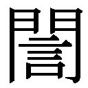
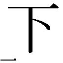

| 戦国時代なるほど事典 合戦・武具・城の真実から武将・庶民の生活事情まで (PHP文庫) | |
| 川口素生 | |
| PHP研究所 (2001) | |
戦国時代なるほど事典
――合戦・武具・城の真実から武将・庶民の生活事情まで
川口素生
はじめに
我が国の歴史の中でも戦国時代ほど、魅力のある時代はありません。この時代には旧弊にとらわれない、決断力と行動力とを兼ね備えた積極果敢な個人や勢力が台頭するなかで、古くからの体制や、権威、格式といったものが音を立てて崩れていきました。下剋上や、群雄の割拠とそれに伴う地方分権、そして天下人の登場という社会変革が進行していくのはまさにこの時代です。
さて、戦国時代というと、合戦の場での勝敗や戦国武将の興亡が語られることが多いようです。また、武士だけが活躍した時代と思われがちです。確かに、主導権を握った武士たちは連日のように、合戦を繰り返しました。そういった意味では、大変殺伐とした時代だったのですが、民衆が武士に勝るとも劣らぬほど、活躍するようになるのも、この戦国時代の特徴の一つです。さらに、当時の武士がどんな出で立ちで戦場に赴き、何を食べ、どのようにして戦い、その結果、何を得ることができたのかなどといった点については、詳しく語られることはほとんどないようです。
そこで、この『戦国時代なるほど事典』では本文を、出陣＆軍師の真実、戦場の作法、城郭の構造と築城法、攻城＆籠城の真実、経済＆貨幣、戦国の食糧事情、武将の夫婦生活と戦国の女性たち、戦国名将 命名と私生活、甲冑・武器の真実、忍者＆影武者の真実、という十の章にわけました。各章を十五項目としましたので、本文の総項目数は百五十になります。この百五十の項目を通じて、戦国時代の真の姿を紹介することに心がけました。
本書は必ずしも最初から読まなくても、読者の皆様が関心を持たれた項目から読んで頂いても容易に理解して頂けるように、各項目ごとに内容に工夫をしました。さらに、内容については可能な限り多くの情報を織り込みつつ、難解な表現を極力避け、肩がこらないようにつとめたつもりです。この一冊で戦国時代の合戦、城郭、武将から、経済・貨幣、忍者・影武者にいたるまでの、戦国時代の概要をつかむことができるはずです。読者の方々が戦国時代をひもとくための、一つの新しい視点を提供できれば筆者にとってこれにまさる幸いはありません。
なお、本書の執筆に際して、ＰＨＰ研究所の根本騎兄氏、並びに編集を担当された伊藤秋夫氏に大変お世話になりました。末筆ながら記して謝意を表する次第です。
平成十三年初秋
川口素生
目次
42 城郭の形態が山城から平山城、平城へと移行するのはなぜか
61 金山・銀山の領有が戦国武将の死命を制したというのは本当か
75 戦国武将が行商人や連歌師から情報を得ていたというのは本当か
92 子をもうけた最高齢の武将、子を一番多くもうけた武将は誰か
95 敵方から嫁入りした正室が夫の「寝首をかく」ことはあったのか
98 戦国時代でもっとも華麗だったのはどこの姫様の花嫁行列？
106 戦国武将が通称、実名（諱）、号など複数の名前を用いた理由は？
108 幼名に家運上昇の願いが込められていたというのは本当か
109 主君が自身の実名（諱）のうちの一字を一族や重臣に与えた真意は？
112 現役の戦国武将が剃髪したり隠居を称したりする理由は？
124 武具や甲冑を主君から借りて出陣した武士がいたというのは本当か
129 自分の兜に鉄炮の弾を撃ち込んでから出陣したのはなぜか
143 忍者が自らの持つ技術を戦国武将に売り込むことはあったのか
装丁――竹元良太
装画――「大坂夏の陣図屏風」（大阪城天守閣蔵）より 本多忠朝奮戦部分を拡大して使用
序 章 いつからいつまでを戦国時代というのか
我が国では奈良時代、平安時代、あるいは鎌倉時代、室町時代、江戸時代といった具合に、前近代（明治維新以前）までは政権の本拠地が置かれた場所の地名を冠して時代を呼び分けることが行われています。こういった地名を冠した時代の呼び分け方とは別に、十五世紀の後半から十六世紀の後半までの群雄が割拠した動乱の時期を戦国時代と呼んでいます。
かつては、室町将軍家や守護大名数家の家督問題、そして細川勝元（東軍）と山名宗全（西軍）という有力守護大名の勢力争いなどが嵩じて、全国各地が大乱に巻き込まれた応仁の乱（応仁元年＝一四六七）の勃発が、戦国時代のはじまりと見做されていました。
しかし、近年の研究により、文明十六年（一四八四）に出雲（島根県東部）の守護代を罷免された尼子経久が文明十八年に守護（守護大名）・京極氏の勢力下にあった出雲月山富田城（島根県広瀬町）を奪還した合戦、延徳三年（一四九一）に北条早雲（伊勢宗瑞）が伊豆に討ち入って堀越公方（註＝室町将軍家の分家）・足利茶々丸を攻め滅ぼした合戦の頃に始まるとの見方が強くなっているように思われます。
もっともこの二つの合戦はその年月について異説が主張されていますが、それはともかく、二つの合戦は守護大名、あるいは堀越公方といった旧来の伝統的な職や権威が、守護代、もしくは家臣といった下位の者によって完全に否定される時代が到来したことを強く印象付けました。
もともと、下位の者が上位の者を押し退けて権威を振るう「下剋上」という言葉が平安時代後期からあり、特に十四世紀前半の室町時代にはそれが頻発するようになりました。
しかし、堀越公方や守護大名だけでなく、のちには室町将軍家が持っていた旧来の伝統的な職や権威が完全に否定されていったという意味では、この時代の「下剋上」は、その性格やスケールが従来の「下剋上」とは格段に異なっていたといえるでしょう。そういった「下剋上」の末に、守護大名たちに代わって、地方には広大な領地を保有し、独自の政治基盤や財政基盤、そして強大な権力、軍事力とを併せ持つ新たな大領主が登場しました。
こういった大領主のことを今日では戦国大名と呼んでいます。戦国大名には守護大名から脱皮した武田氏、今川氏、大友氏、島津氏などもありましたが、大部分は守護代やそれ以外の守護の家臣、あるいは国人（国衆）と呼ばれた国内の有力武士などから発展した者たちでした。分国（註＝領地）を直接把握し、政治、軍事、経済など全ての分野に専制的支配を貫こうとする戦国大名は当初、全国に割拠していました。しかし、やがては熾烈な抗争の末にそれらを統合しようとしたり、統一しようとしたりする勢力が登場します。
一方、戦国時代の終わりは永禄十一年（一五六八）に織田信長が室町幕府の十五代将軍・足利義昭を奉じて上洛した時点、もしくは元亀四年（天正元年／一五七三）に信長に叛旗を翻して挙兵した義昭が大敗して京都を追われた時点と考えられています。戦国大名たちを統合、統一しようとする勢力とはいうまでもなく織田信長であり、その覇業を引き継いだ羽柴（豊臣）秀吉でした。義務教育で用いる教科書では信長、秀吉の時代を安土桃山時代といいますが、（文化史などの分野を除いて）日本史では二人の姓から一字ずつを取って織豊時代といいます。
右で述べた通り、戦国時代とは学問的には十五世紀末の尼子経久や北条早雲の台頭の時点から、永禄十一年、もしくは天正元年の織田信長の京都や畿内掌握の時点までとすべきなのでしょう。
しかし、戦乱の時代が打ち続いたという観点から、歴史愛好家や郷土史家のなかには、応仁元年の応仁の乱から慶長五年（一六〇〇）の関ケ原の戦いまでの期間を指して戦国時代と捉えている方も多いようです。
そういったことをふまえて、本書では安土桃山時代や織豊時代といった時代の呼び方は用いず、応仁の乱から関ケ原の戦い、時には慶長十九年（一六一四）、同二十年（元和元年＝一六一五）の大坂冬の陣、夏の陣までの間に起こったさまざまな出来事を執筆の対象期間に設定しました。
第１章 出陣＆軍師の真実
１ おみくじで出陣日を決めた武将がいた？
おみくじというと、現代では初詣などで神社に参詣した時、華やいだ気分で引くのが常のようです。中には、恋愛関係や資金繰りに困った末におみくじを引き、以後の判断の指針とする人も少なからずいるでしょうが、おみくじに盛り込まれている恋愛運、金運などの運勢を一種のゲーム感覚で捉え、吉が出た時には喜び、逆に凶が出た時にはあまり気にしないというのが現代ッ子たちのおみくじに対する考え方、付き合い方のようです。
ところで、こういった現代ッ子たちに、「合戦に明け暮れた戦国武将たちが出陣日など合戦の最重要事項をおみくじで決めていた」といったら、信じてもらえるでしょうか。
おみくじが日本の史料に最初に登場するのは歌人・藤原定家の日記『明月記』の貞永二年（一二三三）四月五日条とされています。『明月記』には、左近衛大将・藤原兼経の辞任後、後任に三人の人物が取り沙汰されていましたが、藤原氏の氏神・春日社で「孔子」を引いた結果、三人の内の権中納言・藤原良実が当たったことから良実が後任に推されたという経緯が記されています。高官が辞任や病死のために空席となった際や、武家の当主が討死や病死を遂げた際などには、後任をくじ引きで決めたという例は他にもあります。
駿河（静岡県中央部）の今川氏の場合、天文五年（一五三六）の当主・氏輝の死後、後継者の候補として氏輝の兄弟に当たる玄広恵探と義元とが擬せられました。結局、くじ引きで決めることになり、くじ引きで義元が勝ち、当主に就任しています。ところで、三人の候補者のうちから一人をくじ引きで決める場合、現代のくじ引きでは各候補者が一人一人くじを引く方法か、箱の中に三人の名札を入れ、第三者がそのうちの一枚を無作為に抽出する方法が主流です。しかし、室町時代、戦国時代などでは神前で神官にくじを引かせるという例が少なくありません。従って、単なるくじ引きであっても、おみくじと大差がなく、これを受け止める側もかなり真摯な態度、厳粛な気分で臨んでいたようです。
さて、出陣日などをおみくじで決めた例が豊後（大分県）の大友宗麟（義鎮／一五三〇～八七）の重臣、というよりも筑後柳河城主（福岡県柳川市）・立花宗茂（一五六七～一六四二）の岳父として知られる立花道雪（鑑連／一五一三～八五）の訓戒状の中に見られます。天正八年（一五八〇）二月十六日に大友家の重臣たちに宛てた訓戒状の中に道雪は、
「かつて、田原親貫が謀叛を起こした時、親貫を攻める時期を決めかねたので、博多（福岡市）の筥崎宮ゆかりの易者に占わせた。すると、すぐに攻めるのが吉事である、という結果が出たので、そのようにしたところ、大勝が得られた」
と記しています。大友家では合戦の出陣日の決定を神仏に委ねるという慣習があったのですが、過去の例をあげ、以後も慣習を尊重するようにと道雪はいいたかったのでしょう。
合戦の先鋒や殿軍などを決める際にもおみくじが用いられました。豊臣秀吉がまだ羽柴姓を名乗っていた天正五年暮、播磨上月城（兵庫県上月町）の攻撃の際に、くじを用いています。この時は神仏に祈念したおみくじではなく、秀吉の部下が作ったくじを希望する武将に引かせて、先鋒を決めたとされています。このようなシンプルな方法もあったのですが、他方、豊後の大友家では先鋒を決める際、わざわざ大友家の氏神・田原八幡を陣中に勧請し、その神前でくじを引いています。
２ おみくじで戦術や進軍ルートを決定したというのは本当か
おみくじや、占いで出陣日を決めた例は江戸時代に成立する軍記類などにも数多く記されていますが、おみくじは薩摩（鹿児島県）の島津家でも行われました。島津家の重臣・上井覚兼（一五四五～八九）の日記『上井覚兼日記』は、戦国時代の古記録（日記）の中でも第一級の貴重で良質なものです。その『上井覚兼日記』の中に、島津家が軍事行動を起こす際に霧島社（霧島神社）のくじで決めていたという記述が何度も出てきます。
島津家が合戦に際していかに霧島社のくじに頼っていたかは、覚兼が日記の中に、
「御当家御弓箭（註＝武運、軍事行動）は、御籤肝要候間、霧島へ御籤然ニ相定候」
という記述にいい表されている感があります。ただ、軍事行動を起こす際、常に霧島社のくじに頼っていたというわけでもないようで、軍議で出陣と決めるとくじには頼らず、すぐに出陣したという例もあったようです。また、出陣中にくじを引いた例もあります。
天正十一年（一五八三）十月十七日、島津勢は肥後（熊本県）のある城を包囲中でしたが、攻めあぐねたことからくじを引くことに決まりました。その際、三枚の紙が用意されました。三枚のうちの最初の紙には「一」、二枚目の紙には「二」の字が記され、残る一枚には何も記されませんでした。「一」、「二」、そして白紙の紙にはそれぞれ包囲継続、城攻め、傍観の意味が持たされていたとされています。そして、祈念したうえでくじを引き、その結果を尊重したのでした。戦術までくじで決めていたというのは現代人からすれば何か無責任なように思われますが、戦国大名の命運を賭けた最重要事項であるからこそ、当時は神仏に判断を委ね、その結果にかなり真摯な態度、厳粛な気分で臨んだのでした。
なお、「一」と記した紙、「二」と記した紙、そして白紙の三枚を用いたくじでは、必ずしも包囲継続、城攻め、傍観の意味が持たされていたわけではありません。天正十四年九月七日に島津家の依頼で霧島社で行われたくじでは「一」と記した紙には出陣、「二」と記した紙には出陣取り止め、そして白紙は進軍ルートの再考というそれぞれの意味が持たされていました。『上井覚兼日記』によれば、この時は九月十七日に出陣が本決まりになっていますので、「一」と記した紙が引き当てられたものと思われます。なお、この出陣では後年、戸次川の戦いと呼ばれる合戦が島津方と豊臣方との間で行われました。戸次川の戦いは島津方が大勝を収めたことで有名です。従って、霧島社のくじの結果に従った島津方の判断が正しかったことになります。ただし、この戦いの後、本格的な攻勢を仕掛けてくる豊臣方に抗し切れず、島津家は存亡の危機にさらされています。
さらに、島津家の場合、進軍ルートすらもおみくじで決定していたことが『上井覚兼日記』から窺えます。天正十三年、豊後の大友宗麟・義統父子の攻撃を予定していた島津家では、進軍ルートを決定するべく、春におみくじを引いていました。春のおみくじの結果は、「肥後を経て豊後に到る」というもので、覚兼ら重臣も当然、このおみくじに従って肥後経由で豊後に攻め込むつもりでいました。ところが、十月十一日、島津家の一族や重臣らが寄り集まって軍議を行い、再び、おみくじを引くことになった、と『上井覚兼日記』に記されています。この異例の決定の裏には、大友父子と秀吉との同盟が成立したという風聞の到達があったようです。
もっとも、元来、島津家においておみくじは、当主の意思を権威付ける一つの手段であったようです。従って、おみくじの結果が当主の意思に反する場合は、引き直しなども行われたのでした。事実、秀吉の島津征伐が間近に迫った翌天正十四年には、島津家の一族、重臣間の思惑が交錯し、再三、おみくじの引き直しが行われるなど、おみくじに対する島津家中の態度がやや冷淡になっていきました。
３ 軍師とは占い師のことなのか
現代でも選挙戦を陰で支える選挙参謀のことを軍師という場合があります。一般には、武田信玄の家臣・山本勘助、豊臣秀吉の軍団を支えた黒田官兵衛孝高（如水）、竹中半兵衛重治の三人を「戦国の三大軍師」などということがあります。ただ、勘助や官兵衛、半兵衛が常に帷幕にあって信玄や秀吉を補佐したとは考えにくく、従って軍師と呼べるか否か、疑問が残ります。なによりも、官兵衛や半兵衛は本来は織田信長の部将で、同じ信長の部将の秀吉との関係は（本能寺の変までは）同僚、もしくは一時的な上司と部下の関係であって、主君と家臣の関係ではありません。また、官兵衛や半兵衛は秀吉が率いる中国方面軍の一部隊長ですから、やはり常に帷幕にあって秀吉を補佐したとは思えません。
さて、現代では相手に勝つための戦略や手段を立てる任務を帯びた者のことを軍師や軍事参謀といいますが、戦国時代には必ずしもこういった任務を帯びた者を軍師とは呼びませんでした。端的にいって、戦国時代の軍師とは占い師を指し示す言葉でした。軍記類などにはごくごくまれに軍師という言葉が出てきます。そして、軍師の語が出てくる部分の前後をよく読んでみると、当時の軍師なる職がまさに占い師そのものであったことがよくわかるはずです。こういった占い師のことを、（時代や地域などによって違いはあるものの）多くの場合、軍配、あるいは軍配者（軍敗者）と呼んでいたようです。
では、この軍配、軍配者（軍敗者）は具体的にはどんな任務に従事していたのでしょうか。軍配、軍配者（軍敗者）の主な任務は合戦に際して味方の吉凶を占うことにあります。味方の吉凶を占い、敗戦や謀叛を予測し、その末に合戦を開始するか否かといった重要な決断にすら、この軍配、軍配者（軍敗者）は関与していたというのです。
ちなみに、昨今、我が国でも「気」や「風水」などが流行している感があります。このうち、「気」については戦国時代にも一時的な流行がありました。具体的には、
「雨上がりに山から『気』が立ちのぼっている場所があればそこに金銀が埋まっている」
などと喧伝されたこともしばしばで、そのように記してある鉱山関係の書物もあります。さらに、城攻めなどに際してもこの「気」が重要視されました。具体的には、
「『気』が城の南から出ていれば攻めにくく、西から出ていれば攻めやすい」
などというきまりがあったとされています。軍配者が味方の軍勢の「気」と、敵の軍勢の「気」とを比較して占った結果、味方の軍勢の「気」が勝っていることを主張。合戦でも軍配者の占いの通りに推移したと説く軍記類も少なくありません。こういった話は、何か迷信めいていて、後世の付会ではないかと思われます。信じがたい気もするのですが、実際に軍勢の進退を軍配者の助言に従って行い、大勝を得た例もあるようです。
ただ、現代のスポーツなどでも、監督やコーチ、あるいは選手の意外な一言がチームの雰囲気を一変させ、敗色濃厚な場面から大逆転劇が生まれることがあります。実際には刀や弓矢を持って戦うわけではない非戦闘員（＝軍配者）が、非現実的な発言を行うことによって合戦の流れが一変することも考えられないわけではありません。戦国大名たちはそういった劇的な効果を期待して、時に応じて軍配者の助言に耳を傾けたのでしょう。
なお、『大友興廃記』には、「『気』は烟、霧、雲などにて窺みるものなり」という種明かしのような記述もあります。当時も今も、一般には「気」というものがいかなるものなのかは理解しがたいという他はありません。しかし、『大友興廃記』のこの記述による限りでは、軍配者が占うという「気」とは、神秘的なものでも、迷信めいたものでもなく、天気など案外身近な事象を客観的に眺めることでわかるのかも知れません。
４ 足利学校が軍事参謀の養成機関だったというのは本当か
下野足利（栃木県足利市）の足利学校といえば、武蔵金沢（神奈川県横浜市）の金沢文庫とともに、我が国の中世に開設された文教機関を代表する存在として、一般にも広く知られているように思います。足利学校の創立者として平安時代初期の学者・小野篁があげられることが多いようですが、近年では、創立者は足利義兼、中興したのが上杉憲実という説が有力となりつつあります。戦国時代末期にはこの足利学校に三千人以上もの生徒が集まっていたとされています。
ところで、足利学校が「軍事参謀の養成機関だった！」といったら、多くの人が我が耳を疑うことでしょう。足利学校は僧侶のみが入学を許され、入学後も僧侶として生活を送りながら、学問に精を出していました。そういった点からすると足利学校が軍事参謀の養成機関であったというのは到底、想像できませんが、当時の足利学校のカリキュラムの中には、漢文、儒学、天文学の他に、注目すべき科目がいくつかあります。月や星の動き、そして雲や風の流れを察知する天文学も軍事参謀にとって必須科目といえますが、現存している足利学校の蔵書や、かつての蔵書のリストの中には明らかに兵学関係の書物もあります。
創立当初、足利学校で兵学は講じられていなかったものと思われますが、打ち続く乱世を眼前にして、学問の府・足利学校も、カリキュラムの変更を余儀なくされ、こういった現実的な科目の開講に踏み切ったのでしょう。
その兵学関係の授業も、易学にかなりのウエイトが置かれていたと喧伝されていますが、戦国大名の間では足利学校の卒業生がかなりもてはやされたようで、スカウト合戦のようなものまで起こりました。戦国大名に招かれた卒業生の中でもっとも著名なのが、徳川家康のブレーンとなり、江戸幕府の寺社行政に大きな発言権を有した天海（一五三六？～一六四三）です。
天海は世に出る前の四年間を足利学校で過ごしています。なお、足利学校が易学にウエイトを置いた授業を行っていたというのは事実ですが、天海が易学の一つ・「八門遁甲」の大成者であるとか、天海が「八門遁甲」を用いて日光周辺に巨額の御用金を隠したとまでいうのはどうでしょうか。各地で学問を重ねた天海ならば「八門遁甲」の概要くらいは知っていたでしょうが、天海が大成者だという確証はありません。
そういえば、足利学校の卒業生がいかにもてはやされたかを如実に物語る記述が『甲陽軍鑑』の中に見られます。長坂長閑斎がある占い師を主君・武田信玄に推挙したところ、信玄は推挙された占い師が足利学校の卒業生でないことを理由に、召し抱えませんでした。
これだけならば単なる学歴指向のように思われますが、信玄は長閑斎に向かって、「長閑斎よ、良く聞け！ 〈むつかしき学文を目にも見えぬ者〉の言は嘘が多い。武将たる者はそういった輩を相手にすべきではない」とやや厳しい口調で諭しています。信玄は単なる学歴指向から足利学校卒業生を召し抱えようとしたのではなく、足利学校卒業生は学殖が優れていて、有能だという点を熟知していたようです。
また、足利学校は軍事参謀の養成機関であるばかりでなく、医学校でもありました。もともと、中国渡来の難解な医学書を理解するには高度な漢文の読解力を必要としました。足利学校の生徒は高度な漢文の読解力を持つ者が少なくありませんでしたので、医学の分野に進む学生も多かったようです。朝廷にも出入りした曲直瀬道三（一五〇七～九五）、古河公方（註＝室町将軍家の分家）に仕えた田代三喜斎（一四六五～一五三七）ら、戦国時代に活躍する名医たちの中には足利学校出身者が数多くいます。
５ 出陣式で縁起かつぎが重要視されたのはなぜか
人が月に行き、ＩＴ社会の到来が間近といわれている現代でも、日本では大の大人が種々の縁起かつぎを行っています。「縁起かつぎなんて古くさい」とのたまう若者たちの間でも、ジンクスと称する新種の縁起かつぎが行われているのは不思議でなりません。
さて、おみくじの結果や軍配者の言に従って出陣を決定してからも、戦国武将は種々の儀式を経ないと、戦場に赴くことができません。出陣に際して、欠くべからざる存在なのが「三献の儀式」です。「三献の儀式」とは三つ重ねた盃に順番に注がれる酒を主君が飲み干すことをメインとするセレモニーです。三つ重ねた盃は三宝に載せられて運ばれて来ますが、この三宝には打鮑、勝栗、昆布も載せられています。それぞれの品は三宝の右手前が昆布、左手前が盃、右奥が勝栗、左奥が打鮑と決まっていましたが、三宝に一つの盃と一品ずつを順番に三度出す風習もあったようです。この三品はそれぞれ、討つ、勝つ、喜ぶの意味が込められていて、まさに縁起かつぎそのものといえるでしょう。なお、こういった食べ物にまつわる縁起かつぎは、「三献の儀式」の時だけではなく、生活の全般にわたって行われていました。
現代でも、正月のおせち料理や、神前での結婚式、披露宴の際などに食べ物にまつわる縁起かつぎが行われている点は周知の通りです。ちなみに、勝栗にはビタミンが、打鮑にはビタミン・カルシウム・リン、昆布にはビタミン・ヨードなど、栄養素が多く含まれていることが判明しています。これらの三品は意外にも栄養素の固まりですから、合戦の前に口にするにはもってこいの食べ物であったわけです。
主君は三つの盃に注がれた酒を飲み干すと、戦の神である摩利支天や、氏神に勝利を祈願しました。そのうえで、両手に弓矢や軍扇を持った姿でなみいる家臣たちに向かって、「えい、えい」とやや弱々しい声を発します。この「えい、えい」の後に、将兵が、「おう」と大きな声を発します。逆に、合戦から戻って来た時はこの逆で、「えい、えい」を大きな声でいい、「おう」をやや弱々しい声でいうとされています。
この「えい、えい、おう」というやりとりは城攻めの時や、勝ち戦の後に凱歌をあげる時にも行われます。その場合は「勝鬨」といい、そのやりとりが鯨の鳴き声に似ているとされることから「勝鬨」に代えて「鯨波」と書く場合もあります。地域によっては、この「えい、えい」の発声を主君ではなく、軍配者が代わって行うところもあったようです。
こういった傍目にはバカバカしいとさえ思える縁起かつぎを、戦国時代には甲冑を着込み、刀や槍を携えた武将たちが真顔で行っていたのです。もしも、現代の若者たちがタイムスリップして「三献の儀式」に立ち会ったならば、腹を抱えて笑い出すことでしょう。
これらの他にも、出陣に際してはさまざまな縁起かつぎやまじないめいた儀式が行われました。なかでも、上帯の端を切って捨てることはよく行われました。これは上帯の余った部分を切り捨てることで、「再び上帯を結びなおさない（＝鎧を脱がない）！」という決意を示したもので、合戦で討死することを念頭に置いた悲壮な決意を込めた儀式でした。
６ 戦国武士の初陣年齢は平均で何歳位か
元服した武士の子が最初に戦陣に臨むことを初陣といいます。別のいい方では武者始めともいいました。初陣は一人前の武士になるためには必ず通過せねばならない行事でした。
男子が初陣する年齢には特にきまりはなかったと思われますが、元服の年齢などを勘案すると、一般的には十四歳から十六歳（数え年）あたりが多かったものと見られます。
なお、大将クラスの子弟の場合、初陣はあらかじめ父や一族、重臣らが十二分にその時期や戦場を選定しました。なにしろ、初陣から負け戦では当該の武将の将来に影響し、その家の子々孫々までの笑い種になってしまいますので、絶対に負け戦にならないような時期や戦場が選定されました。つまり、初陣は初めて合戦に臨むという意気込みよりもむしろ、一族の儀式として行われたのです。織田信長の場合、『信長公記』首巻に、
「織田三郎信長、御武者始として、平手中務丞（註＝傅役の平手政秀）、その時の仕立、くれなゐ筋のづきん・はをり、馬よろひ出立にて、駿河より人数入置き候三州の内吉良大浜（愛知県吉良町）へ御手遣、所々放火候て、その日は野陣を懸けさせられ、次日那古野（註＝居城の那古野城／名古屋市中区）に至て御帰陣」
とあります。この信長の吉良大浜への初陣は天文十六年（一五四七）のことで、信長は十四歳でした。初陣としてはほぼ適当な年齢なのですが、平手政秀が用意したという装束は紅筋の頭巾に羽織などとあります。『信長公記』首巻には駿河（静岡県中央部）の今川氏の勢力がこの付近にいたと記されていますが、実際の戦闘の記述はありません。紅筋の頭巾に羽織などの装束でもわかるように、余り緊迫した状況での武者始め（初陣）ではなく、華やいだ雰囲気の中でのセレモニー的な要素の濃い行事で、実際は一泊二日のハイキングか、キャンプファイヤーといった性格の強いものではなかったかと思われます。
父や一族の主立った武将が討死を遂げた場合などは、十歳以下の男子が名目上の大将となって初陣を遂げる場合もありますし、平治元年（一一五九）の「平治の乱」の時の源頼朝のように、一族の存亡を賭けた乾坤一擲の戦いではやはり十歳以下の男子が初陣を遂げる例も古くから数多くあります。もちろん、戦国時代はいつ敵が攻めて来るかも知れません。このように絶対に負け戦にならないような時期や戦場が選定されるとは限りません。
豊臣秀吉の軍団で活躍した竹中半兵衛重治などは、父の留守中に居城・美濃菩提山城（岐阜県穂積町）で敵襲に遭遇。母や幼い弟などとともに鉄炮などを駆使し、ようやく敵を撃退したといわれています。地侍クラスともなると、信長のような悠長な初陣などは望むべくもなく、好むと好まざるとにかかわらず、男子は戦場に身を投じることになるのです。
７ 戦国武将は出陣前の三日間は禁欲だった？
合戦に臨む武将には守らなければならない数々のきまりごとがありました。特に、女性に関するきまりごとはどの大名家でも大なり小なりあり、なかには細部にわたる禁忌（タブー）がきめられている場合も少なくありませんでした。出陣前の三日間を禁欲、夜の生活を禁止するという考え方は、おおむねどこの家にもありました。同時に、「魚類を食してはならない！」という考え方もありました。
こういったことは江戸時代初期に成立する兵学書などでも繰り返し述べられています。おそらく、「出陣前の三日間を禁欲とすべし」という考え方は、軍神への潔斎を徹底する目的や、縁起を担いだりする目的もあったものと思われますが、体力の消耗を防いだり、煩悩を振り払う観点からも繰り返し強調されたのでしょう。さらに、情報収集や、作戦立案に没頭するという観点や、闘争心や敵愾心を養うといった観点からも、女体を遠ざけるのは効果があったのでしょう。
魚食が厳禁されたのも軍神への潔斎を徹底する目的などがあったものと考えられます。しかし、（魚類など抜きの）精進料理では、ここぞという時に力が出るのでしょうか。大仕事の前にスタミナのつく食べ物を摂取しようと考える現代とは、正反対といえます。
なお、出陣する武士の衣服や武具甲冑を妊娠した女性が触ってはいけない、武士は出産後三十日を経ない女性を近づけてはいけないなどといった、当時は女性に関する誤ったきまりごとがはびこっていました。これらの禁忌を破ると、合戦で必ず討死すると説く者が圧倒的であったようです。これらは全く誤った考え方という外はありません。
ところで、我慢しようと思ってもどうしても我慢できない時、戦国の武士たちはどのように処理したのでしょうか。潔癖な性格の方だと、聞いただけで虫酸が走るような話ですが、大将クラスでは未成年の小姓（註＝もちろん男）を陣中に侍らせ、時に応じて夜の相手をさせたといわれています。元来、小姓は大将の秘書兼雑用係で、平時から大将クラスの身のまわりの世話を担当していましたから、戦時モードへの切り替えは遅滞なく、スムーズに行われたものと思われます。また、小姓は戦力としても頼れる存在でしたから、仮に同衾中に敵襲があっても直ぐに防禦体制を敷くことができました。そういった意味からも、大将クラスは陣中で小姓隊を身の回りに置いたのでしょう。ただ、武田信玄がただならぬ関係であったという春日源介（高坂昌信）に与えた恋文が残っていますが、実際に陣中で小姓に夜の相手までをさせていたか否かに関しては、良質な史料が案外残っていません。
一方、中級・下級の武士のなかには、御陣女郎と呼ばれる女性たちと折衝し、夜の相手をさせる例もあったといわれています。ちなみに、元来、陣中は女人禁制でしたから、御陣女郎とはいえ、けっして陣中に招き入れられたわけではありません。御陣女郎たちは自ら戦場の外れまで出向いて仮小屋を構築し、ここで夜の相手をしたり、吉凶を占ったりした他、武士が敵軍と対峙している間に炊飯や風呂の用意なども行いました。斬り落とされた敵首にお歯黒を施すことを、戦国時代の中期までは御陣女郎らも担当しました。
さらに、御陣女郎は必ずしも味方の武士の夜の相手をするとは限りません。敵の武士のところへ赴いて、敵方の情報を仕入れるという「くノ一（女忍者）」の役目を果たす場合もありました。このため、戦場では大変重宝がられました。戦国武将のなかには、こういった女性たちを先陣に置いて行軍すると勝利が得られると考えていた者もいたようです。
また、これは戦場とは限りませんが、戦国時代、そして江戸時代には尼僧のスタイルをした比丘尼（比丘尼女郎）と呼ばれる女性たちがあり、この比丘尼も時に応じて戦場や城下町で武士たちの夜の相手をしました。なお、当時、ヨーロッパからやって来たキリスト教の男性宣教師たちは、尼僧が戦場や城下町で武士たちの夜の相手をしていることを知って驚愕しています。
余談ながら、たとえ戦場であったとしても、屋外での性交や、井戸、厠（便所）の側での性交は厳禁でした。屋外での性交はマナーのうえで嫌われたのみでなく、敵の急襲を受けやすいという観点からも戒められました。井戸の側は清浄な場所を汚してはならない、厠の側はその逆で、汚れた場所の近くでしてはならないといった観点から、それぞれ性交が厳禁とされたのです。
さらに、御陣女郎や比丘尼もやって来ないような戦場や、手元不如意な最下級の武士、雑兵たちは「勝絵」と呼ばれる春画を戦場に持参して、紛らわせたといわれています。もっとも、公然と戦場に持参することは憚られましたので、武士、雑兵たちは具足櫃などにこっそりとしのばせて戦場に持ち込んだようです。「勝絵」はどうしても我慢できない時に活用したというよりも、殺伐とした戦場で気を紛らわせたり、リラックスしたりする時に活用したようです。
戦国時代の初期から中期の武士たちが以上のようなさまざまな禁忌に振り回されていたのに対して、旧弊にこだわらない豊臣秀吉や徳川家康は特異な行動をとったことで知られています。豊臣秀吉などは愛妾を連れて相模小田原城（神奈川県小田原市）の包囲戦や、肥前名護屋城（佐賀県鎮西町）に赴くという大胆な行動をとっています。家康などは天正十二年（一五八四）の小牧・長久手の戦いには側室・阿茶局を、文禄年間には肥前名護屋城に同じく側室・於牟須の方を伴っています。阿茶局、於牟須の方の二人の側室は当時、それぞれ妊娠していたといわれています。暴挙という外はありません。結局、阿茶局、於牟須の方の二人の側室はお腹の中の胎児を流産しています。
城攻めの戦法がこの頃には激変していて、長逗留が予想されたことから、このような行動に出たものと思われますが、敵の大将たちのこのような行動を耳にした城内の将兵がどんな感想を抱いていたのか、聞いてみたい気がしてなりません。
８ 戦国武士が真顔で行った抱腹絶倒の必勝祈願法とは？
出陣式には迷信めいたきまりごとが多かったのですが、出陣式を終わった後も、武士たちはさまざまな必勝祈願法を済まさないと、いざ出陣というわけにはいきませんでした。
居城や居館の城門、門前に包丁などの刃物を据え、大将がこれを踏み越えて行くという滑稽な作法も一部では行われました。この時、包丁などの刃物は門の外に向けられるきまりがありましたが、これは大将の留守中に敵の凶刃が門内に入らない、また門内（つまり居城や居館の中）で刃傷沙汰が起こらないことを願ってのものでした。眼目である刃物を大将が踏み越えて行くという奇習は、大将が刃物を身に受けることなく、敵の刃物を越えて大勝利を収め、無事、凱旋して欲しいという願いを込めて行われたものでしょう。
こういった滑稽な奇習を大将が真顔で行い、これを家臣団が固唾を呑んで凝視していたというのです。こういったことを勘案してみると、案外、当時は葉武士などと呼ばれた下級武士や雑兵たちの方が自由闊達に行動することができたのではないでしょうか。戦国の武士ではランクが上がるほど、きまりごとや禁忌（タブー）に縛られ、窮屈このうえない生活を送っていたといえるでしょう。この他にも、さまざまなきまりごとや禁忌がありました。これは、古代中国の『三国志』の時代からいわれていますが、旗指物を支える旗竿が折れたり、旗指物自体が倒れたりすることを当時の武士たちは大変嫌いました。
旗などが倒れようとどうしようと、合戦に勝ちさえすればいいように思いがちです。そういえば、現代でも学生野球の際などには、学生服、学生帽に身を固めた応援団の若者がアルプススタンドで大きな応援旗を掲げていて、強い風が吹き荒れたりしても必死の形相で旗を支えています。万が一、ゲームの途中で応援旗が倒れたりすると応援団のみならず、プレーヤーの士気にまで悪影響を与えそうな気配です。旗指物を支える旗竿が折れたり、旗指物自体が倒れたりすることを、当時の武士たちが大変嫌った心境がわかるような気がします。
さて、そのようなことが起こらないに越したことはないのですが、我が国の戦国時代の場合は具体的には旗竿の折れたのが真ん中よりも上ならば吉、それ以下ならば凶という具合に、ややドライな考え方をしていたようです。
さらに、大将が乗る馬の厩（馬小屋）からの引き出し方、大将がその馬に乗る場所、乗り方、出陣式の際の御酌役の立ち居振る舞いについても、細かなきまりがありました。引き出し方や乗り方、御酌役の立ち居振る舞いについては後ずさりしたりするのを大変嫌いました。嫌悪された理由は、そういった動作が戦場での退却を想起させるからでしょう。
９ 戦国武将がすがった合戦の神様とは？
戦国武将に限らず、当時の公家、武士、領民らは日頃から神仏に深く帰依していましたが、戦国武将が合戦に臨むに際して特にすがった神様や仏様がありました。こういった合戦に際して祈願すると御利益のある神様、仏様のことを軍神といいます。軍神は「ぐんしん」と読みがちですが、鎌倉時代から戦国時代までは「いくさがみ」と読むことが多かったのではないでしょうか。
明治維新以降、戦争で軍功をあげたり、軍功をあげたうえで壮烈な戦死を遂げた将軍、提督らの軍人も軍神に加えられています。もともと、軍神には経津主・武甕槌（健雷雄）の二命（二神、二柱）があり、のちには須佐雄命、武甕槌命、日本武尊、神功皇后、坂上田村麻呂らを五神（五柱）と捉える場合もありました。
源義家が石清水八幡宮の社前で元服。鎌倉時代に源氏の嫡流が八幡神を軍神として祀って以降、源氏一族や他の一族の間で八幡神を軍神とする家が急増しました。以上の軍神の内訳は、大部分は我が国古来の神様で、伝説的な皇族、実在の名将なども含まれています。
これに対して、仏教の伝来以降、我が国に伝えられた仏様、神様たちもさまざまな経緯により、武家社会の中で軍神として祀られるにいたります。仏教の仏様、神様は大まかにいって如来、菩薩、観世音（観音）と、それ以外の天部（神将）とに分けられます。軍神として祀られた仏教の仏様、神様は観世音（観音）に属する千手観音を除くと、大部分は不動明王、大威徳明王、摩利支天、弁財天、鬼子母神など、天部（神将）に属する仏様、神様たちです。これらの軍神のそれぞれのプロフィールは次の通りです。
〈須佐雄命〉 素戔嗚命、須佐之男命とも表記します。伊弉諾命の子で、天照大神の弟に当たります。勇猛な神でしたが、姉の天照大神が天の岩戸に引き籠もった事件などにより、高天原を追放されます。出雲（島根県東部）で八岐大蛇を退治したことで有名です。
〈武甕槌命〉 建御雷命、健雷雄命とも表記します。天尾羽張命の子で、天照大神の命により経津主命と出雲へ赴き、大国主命に「国譲り」をさせた神として知られています。茨城県鹿嶋市の鹿嶋神宮に祀られており、後年、武道の神様として信仰を集めました。
〈経津主命〉 磐筒男神の子で、天照大神の命により天孫降臨に先立って武甕槌命とともに出雲へ赴き、大国主命に「国譲り」をさせた神として知られています。千葉県香取市の香取神宮に祀られており、後年、刀剣の神様として信仰を集めました。
〈日本武尊〉 倭建命とも表記します。第十二代・景行天皇の皇子で、熊襲の討伐、東国の平定に活躍しました。伊吹の神の討伐を目指した矢先、病いを得て伊勢で没しました。
〈神功皇后〉 第九代・開化天皇の五世の孫で、第十四代・仲哀天皇の皇后です。仲哀天皇の崩御後、自ら軍船を率いて新羅を討伐。凱旋後、第十五代・応神天皇を出産しました。
〈坂上田村麻呂〉 生没年は七五八～八一一。平安時代初期の武将で、蝦夷討伐に多大な功績を残しました。やがて、模範的な武将として尊敬を集めるようになりました。
〈八幡神〉 八幡宮の祭神で、応神天皇を主座とし、弓矢や武道の神として広く信仰されました。平安時代の神仏混淆の結果、菩薩号を得て、「八幡大菩薩」とも呼ばれました。
〈千手観音〉 六観音（七観音）の一つ。千本の慈手、慈眼を持ち、あまねく衆生を救うという変化菩薩で、仏像としては合掌する両手の他に、四十本の手を持つ姿で彫られます。元来は民衆を済度する観音で、これを軍神として祀るのは異例中の異例です。
〈不動明王〉 五大明王（八大明王）の一つ。大日如来が教化しがたい衆生を救うために忿怒の姿を仮に現したものといわれます。通常、一面三臂で、右手に悪を倒すための降魔の剣、左手に衆生を救うための羂索を持ちます。不動尊、無不動などとも呼ばれます。
〈大威徳明王〉 五大明王の一つ。文殊菩薩の変化した姿とされ、西方を守り、忿怒の形相で衆生を害する毒蛇悪龍を屈伏させる明王です。通常、六面六臂六足で水牛に乗り、手には剣や戟などの武器を持つことから、怨霊調伏、戦勝祈願の修法の本尊とされました。
〈摩利支天〉 インドの月日の光や陽炎を神格化した天部で、日本では武士の本尊として信仰されました。通常、二臂、もしくは三面六臂の天女姿で、猪に乗ります。武田信玄ら数多くの戦国武将から根強く信仰され、合戦前の願文の中などにも織り込まれました。
〈弁財天〉 弁天ともいい、弁才天とも表記します。インドの河川の流れを神格化した天部で、技芸の神ですが、日本では福徳の神として尊敬され、七福神の一神にも数えられました。通常、二臂（八臂）で、仏像としては琵琶を持つ姿や武器を持つ姿で彫られます。
〈鬼子母神〉 別名詞梨帝母。仏法、特に法華経を守護する天部です。仏像としては一児を抱き、吉祥果を持つ天女姿で彫られますが、稀に忿怒の形相のものも彫られます。
10 戦国大名の軍団はどんな組織だったのか
戦国大名の軍団の構成は地方によって少しずつ異なりますが、軍団には実にさまざまな武士たちがいました。まず、近代の軍隊における将軍に当たる重臣たちには、戦国大名の一族である「一門衆」、古くからの家臣である「譜代衆」、版図が拡がる段階で帰属した「外様衆」がいました。
「一門衆」とは戦国大名の兄弟や、支族、姻族の者たちを指します。戦国大名によっては「御親類衆」、「御親族衆」などとも呼ばれました。「一門衆」は家臣団の中では特別な待遇を得ていました。たとえば、特別待遇を受けていた者として、北条早雲の末子・北条幻庵（長綱／一四九三～一五八九）の名を挙げることができます。幻庵は半俗半僧の生活を送っていましたが、製塩にも手を染めていました。
元来、材木は城郭の構築や合戦に不可欠の資材であることから、戦国大名は伐採を厳しく制限していました。ただ、幻庵に限っては製塩に要する材木の伐採を黙認していたようです。このように、「一門衆」は何らかの特権や権益を与えられる場合が多かったのです。
次の「譜代衆」とは古くからの家臣で直臣化していた武士や、その子孫を指すのですが、この中には戦国大名の遠い一族を含みます。具体的には、甲斐（山梨県）の武田氏の場合などは、重臣はもちろん、家臣の大部分が武田氏の嫡流の一族です。そこで、嫡流と血縁関係の近い家のうちで国内で有力な家などを「一門衆」として遇し、他の比較的血縁関係の遠い家は古くからの家臣とともに「譜代衆」などとして遇しました。戦国大名が強大化していく段階で、この「譜代衆」の存在は大変重要な意味を持つにいたります。
「外様衆」は「国衆」、「新参衆」などとも呼ばれました。守護大名、もしくは有力な国人が戦国大名に発展していく段階で、臣従した他の国人層を指します。もともと、「外様衆」は当該の戦国大名との間に血縁関係がない場合が多く、主従関係も「譜代衆」に比べると稀薄でしたから、領地経営、軍事行動などの面でも独立した行動をとることが少なくありませんでした。従って、戦国大名はこの「外様衆」の統制に腐心しました。
他方、直属の家臣である旗本（直臣）のグループも家臣団の重要な構成員でした。
11 実際に陣触れや軍勢の割り振りを担当する家臣は？
戦国大名が出陣を決めた後、出陣先や出陣日、集合場所を味方の全軍に知らせる必要があります。これを陣触れといい、出陣前のもっとも重要な任務の一つです。実際にこの陣触れを担当する者のことは案外、明確にされておらず、また戦国大名によってまちまちなようです。
織田信長の軍団の場合は右筆（祐筆）が担当していたようです。『総見記（織田軍記）』には、ある戦いで信長は側近・菅屋（織田）長頼に命じて佐久間信盛、柴田勝家らの重臣を召集。軍議を行い、その結果を右筆の武井夕庵に伝え、手配りさせたとあります。夕庵は数多い信長の家臣の中では余り有名な方ではありませんが、かつては美濃（岐阜県）の斎藤道三に仕え、信長に転仕してからは、各種の重要事項に参画したことが現存する関係史料から判明しています。
谷口克廣氏は夕庵の地位を、「現代風に言うと、信長の第一秘書」と主張されています（『織田信長家臣人名辞典』）。近年、発掘のはじまった信長の居城・近江安土城跡（滋賀県近江八幡市）には夕庵の居館跡と呼ばれる場所もあります。なお、信長の右筆としては夕庵の他に、楠長諳らがいました。
さて、主君の指示を受けた右筆は部下を促して出陣先や出陣日、集合場所など重要事項を必要な枚数作成させ、それを指揮官クラスに配付します。陣触れについて出されるのが軍令で、これには喧嘩口論、乱暴狼藉、掠奪、敵前逃亡、抜け駆けの禁止などが記されているのが常でした。軍令の中では、織田信長の発した「一銭斬り」が有名です。これは戦場で一銭を盗んだ者でも容赦しないで斬首にするというものです。
徳川家康の家臣団の場合、慶長五年（一六〇〇）の関ケ原の戦いの際では本多忠勝が陣触れを受け取り、全軍に配付したのではないかと思われます。ただし、近代の軍隊と異なり、戦国時代の軍勢はどこも寄り合い所帯でしたから、陣触れの際には余り細かい指示を出すことは難しかったようです。
一方、大将の直属部隊である旗本の中から選抜され、軍勢の指揮・命令、陣触れなどを行った家臣に旗本軍奉行がいました。つまり、陣触れや軍令の書類作成など事務的な面は右筆が行い、実務的な面は旗本軍奉行が行ったのでした。任務は他に着到（註＝出陣者名の記録）の作成、戦況の報告などの論功行賞にも携わりました。一見、軍目付（軍監）と職務内容が重なるように思われますが、軍目付（軍監）の主な任務が監察や督戦にあるのに対して、旗本軍奉行は軍勢を総括する任務をも与えられていた点が異なります。
織田信長の軍団の場合、天文二十年（一五五一）八月二十一日に織田信長が、弟・勘十郎やその宿老・林佐渡守、柴田勝家らと尾張稲生（名古屋市西区）で合戦に及び、乱戦に陥った際、信長の家臣・織田造酒丞信房（菅屋長頼の父）、森三左衛門可成（蘭丸長定の父）らが常に信長の近くにあったことが、『総見記』などにより窺えます。
これより先の天文十一年八月二十日の小豆坂の戦いで、信房は味方を叱咤するなどの行動をとっており、この時点で信房が織田軍団の旗本軍奉行であったものと思われます。余り良質の軍記でありませんが、『金山記全集大成』には信長が稲生の戦いにおける可成の行動を嘉賞し、以後は、「毎度軍令森の進退にまか」したと記されていますので、稲生の戦いの前後から織田信房の他に、森可成も旗本軍奉行の一員に加えられたのかもしれません。なお、旗本軍奉行は一人ではなく、各部隊ごとに複数の武士が任命されたことが判明しています。
12 合戦の合図、合言葉に込められた意味とは？
第二次世界大戦の当時ですと、たとえばドイツ陸軍とアメリカ陸軍とではヘルメットのかたちも、軍服の色も、使用している武器も異なっていますから、闇夜でなければ敵味方の識別は容易です。これに対して、我が国の戦国時代の合戦では、大抵の場合、甲冑や武器もおおむね同じですから、昼間でも敵味方の識別が困難です。従って、味方同士であらかじめ合言葉を決めておく必要があります。
さて、戦闘で実際に用いられた合言葉のなかで、もっとも有名なのは「山と川」でしょう。これは戦国時代に用いられた合言葉ではなく、江戸時代の元禄十五年（一七〇二）に赤穂浪士が吉良邸討入の時に用いたものです。
この「山と川」とは、赤穂浪士たちの兵学のうえの師匠である甲州流軍学者・山鹿素行の姓をもじったものではないかといわれています。ちなみに、歌舞伎『仮名手本忠臣蔵』では浪士たちの武器を調達するという設定の大坂の商人・天河屋儀平（天野屋利兵衛）の姓をもじった「天と川」が用いられていますが、当然、これはフィクションです。
さて、通常、合言葉は総大将ら少人数で取り決め、開戦の直前に全軍に布告するのが常でした。大人数で合言葉を決めたり、早くから全軍に布告すると、内応している者たちによって敵方に通報され、悪用されるからです。一説に、合言葉は毎日変更するといわれます。しかし、いったん、決めた合言葉を変更し、新しい合言葉を全軍に徹底させるというのはそうやすやすとできるものではありません。
元和元年（一六一五）の大坂夏の陣では徳川方は「旄」、豊臣方は「山」を合言葉と決め、大坂落城までこの合言葉を用いたとされています。真偽のほどは定かではありませんが、落城当日、城内の女中衆が「旄々」と叫びながら徳川方に降ったと、『常山紀談拾遺』に記されています。なお、奇襲や夜襲の場合、あるいは味方が極端に少人数の場合などには、総大将ではなく、実際に各部隊を指揮する武士が合言葉を決めました。部隊の指揮官たちは、臨機応変に種々の合言葉を活用したようです。ちなみに、赤穂浪士たちが用いた「山と川」に類似した合言葉が『浅井三代記』の中に見られます。それは、「谷かと問わば山と答うべし」というものでした。
前後しましたが、古くは『太平記』に、誰何された際に、「進む」などと応じたことが記されています。このように、当初はシンプルであった合言葉も、打ち続く戦国の世で複雑化していきます。具体的には、「誰か？」と誰何された際に決められた複雑な数字を答えたりするものです。忍者などはもっと複雑な合言葉を用いたようです。
合言葉に類似したものに替言葉というものがありました。合言葉も暗号の一種ですが、替言葉はさらにその要素が濃いものです。これは指揮官が麾下の兵に発するもので、
「南風吹くと云わば斬ってかかるべし、北風烈しと云わば城中へ引き退くべし」
という替言葉が『浅井三代記』の中に記されています。むろん、軍勢の進退を命じる合図には、これらの他に鐘や太鼓、狼煙なども用いられましたし、さらに敵味方の区別のために白襷をしたり、甲冑や袖に印を付けたりしました。甲冑に付ける印を笠印、袖に付ける印を袖印といいます。刀剣の鞘に切った紙を巻く方法をあらかじめ味方で統一しておき、戦場での合印にする場合もあります。紙を巻く方向や巻く回数によって右巻き、左巻き、一つ巻き、二つ巻き、三つ巻きなどの種類があります。戦場で出会った武士に、「右巻きか？ 左巻きか？」と問うた際、味方であれば取り決められた合印通りの返答をするでしょうし、また実際の鞘も取り決め通りになっているでしょう。
つまり、刀剣の鞘を用いた合印は、合言葉と同じように、敵味方を峻別する手段として用いられたのです。
13 戦場へ出陣した武将の最高齢記録は？
戦国時代の数多い人々の中で、もっとも長生きをしたのは一体、誰でしょうか。文化人では、『老人雑話』の著者として知られる文人兼医者の江村専斎（一五六五～一六六四）や、徳川家康のブレーンをつとめた僧侶の天海（一五三六？～一六四三）が百歳前後まで生きたことで知られています。なお、天海は七十歳を越えてからも徳川家康の陣中に伺候し、時には甲冑を着込んで従軍することもあったといわれており、大阪城天守閣には天海が着用した甲冑が保存されています。
加藤清正や森忠政（蘭丸長定の末弟）らの戦国武将に歴仕した専斎も、『老人雑話』の記述などからすると、人生のうちの一時期は、軍医として戦場に赴いたことがあるようです。つまり、二人とも軍事参謀や軍医として出陣した経験を持っていることになります。
戦国武将の中では、北条早雲の三男・北条幻庵（一四九三～一五八九）が九十七歳まで生きたことが判明しています。父の早雲も八十七歳まで北条一族の総帥として君臨したことで知られていますが、末子・幻庵は後北条氏の長老で、相模湾岸で製塩を行う一方、連歌師を歓待したり、武蔵世田谷城主（東京都世田谷区）の吉良家に嫁ぐ氏康の姫に『幻庵覚書』という礼儀作法のマニュアルを書き与えるなど、特異な活動を行っていた文化人でもありました。ただし、幻庵は元来、半僧半俗の生活を送っていたことから、晩年に甲冑を着込んで自ら戦場に赴くというようなことはほとんどなかったようです。ちなみに、幻庵は天正十七年（一五八九）に天寿を全うしますが、その翌年に後北条氏は五代約百年で滅亡します。一族の滅亡の前年に幻庵が一世紀近い生涯を閉じたわけです。
さて、実際に指揮官として出陣した武将の中では朝倉宗滴（教景／一四七七～一五五六）の七十九歳、龍造寺家兼（一四五四～一五四六）の九十二歳などがあげられます。二人のうち、宗滴は越前（福井県）の戦国大名・朝倉孝景の末子で、家訓として名高い『朝倉宗滴話記』の口述者として有名です。越前敦賀郡の領主として、長く朝倉宗家を支えて来た宗滴が最後に戦場に赴いたのは弘治元年（一五五五）でした。この頃、宗滴は自らの考えを、
「又天下を執り、御屋形様上京させ申すべき謀略、重々思案候間に夜を明し候間」
と『朝倉宗滴話記』の中で述べています。御屋形（朝倉宗家の当主）にいかにして天下を取らせるべきか、と一晩中考え、夜を明かしたこともあったというのです。弘治元年の合戦でも自ら望んで総大将となり、加賀一向一揆の征伐に向かっています。ただし、この時は陣中で病を得て帰国。間もなく、病死しました。なお、同じ『朝倉宗滴話記』には、
「武者は犬とはいえ、畜生とはいえ、勝つことが本にて候」
という究極の思考が記されており、御屋形を天下人の座に据えるために宗滴は、いかなる苦労も、あるいは謀略をもいとわぬ姿勢であったことが窺えます。
このように、総大将、つまり総司令官として出陣した武将としては朝倉宗滴が最高齢なのですが、司令官クラスで出陣した武将の中には、宗滴の七十二歳を上回るギネス級の武将がいます。肥前（佐賀県）の龍造寺家兼は、天文十四年（一五四五）に九十二歳で出陣。少弐家の家臣で仇敵の馬場頼周を討ち、失地を回復します。前後しましたが、当時の龍造寺家は同国の少弐家、周防（山口県）の大内家という二大勢力に挟まれ、家運が下降の一途をたどっていました。なかでも、少弐家はもともと、家兼の肝入りで家名再興が実現したにもかかわらず、やがては龍造寺家をないがしろにするようになり、頼周の謀略により家兼の子の家純、家門、孫の周家、純家らが一挙に殺害されるといういたましい出来事がありました。自らも筑後柳河（福岡県柳川市）に追放された家兼は、老体に鞭打って出陣。見事に仇敵・頼周を討ち取り、失地回復、家名再興を実現させました。
これにホッとしたのでしょうか。家兼は翌年、九十三歳で天寿を全うしています。ちなみに、家兼の曾孫・隆信が天正十二年（一五八四）に薩摩（鹿児島県）の島津家との戦いで討死。嫡子が幼少であったため、一族の鍋島直茂が国事を代行しましたが、やがて鍋島家が大名として江戸幕府に認知されます。江戸時代のはじめに、末裔が訴え出て騒動（「佐賀騒動」）に発展し、それを題材とした演劇も生まれましたが、龍造寺家の再興はなりませんでした。
14 戦国武将の率いた軍勢の九割は武士ではなかった？
江戸時代中期の兵学者に大道寺友山（一六三九～一七三〇）という人物がいます。友山は戦国の世を実際に経験したわけではないのですが、『甲陽軍鑑』の校訂者として名高い小幡景憲、その高弟の北条氏長といった当代随一の兵学者に師事しただけに、かなり本腰を入れた兵学研究を行っていたことが判明しています。ただ、友山は現代では、兵学者というよりも、徳川家康の伝記作家、有職故実家として捉えられることが多いようです。
さて、その友山の代表的な著作『落穂集』には、合戦で死者が千人出た場合、武士の割合は一割か、一割五分（つまり、百人～百五十人）で、残りは全て（武士以外の）領民たちである、という衝撃的な記述があります。この『落穂集』の記述は、案外、戦国時代の実情を正しく伝えているのではないかと考えられています。
天正十八年（一五九〇）、豊臣秀吉は大軍を率いて相模小田原城（神奈川県小田原市）に拠る後北条氏の征伐を開始します。それに先立って、北条一族が領内に発した文書の中に、領民のうちの十五歳以上七十歳までの男子全てに出陣を命じているものがあります。そして、その際に、「腰さし類のひらひら武者めくやう」にとも書き添えています。つまり、武士ではない領民に出陣を命じる際、腰に刀のようなものを差して、武者（武士）らしくせよ、といっているわけで、大変興味深い記述といえるでしょう。現存する史料から推測すると、出陣を命じられた者の八割は領民で、武士は二割にしかならないものと思われます。従って、『落穂集』の、
「合戦の討死者のうち、武士は一割か、一割五分」
という記述は、案外、真に近いデータであるように思われてなりません。つまり、武将が率いた軍勢の八割、あるいは九割近くが（武士ではなく）領民であったと考えられるのです。ですから、戦国時代の軍記類に、「○○方の兵力は三万五千」などと記されている場合、実際の戦闘員の数は大幅に割り引いて考えても誤りではないでしょう。
一方、後北条氏の発した、「腰さし類のひらひら武者めくやう」にとの命令は、四方八方を重包囲された後北条氏が、少しでも兵力を調達したいがため、苦しまぎれに出した特異な命令ではないか、という見方をされる方もあることでしょう。しかしこういった命令は、必ずしも特異なものではありません。ほぼ同内容の命令を、天正十二年（一五八四）の小牧長久手の戦いの際、徳川家康が駿河方上郷（静岡県焼津市）などに発していることが小和田哲男氏の研究により判明しました。家康の場合、領民に郷ごとに大旗を一本用意させ、十五歳以上六十歳までの男子全てに腰指の携帯を命じています。むろん、このようにして動員された領民は刀や槍を持って戦うのが主な任務であったわけではありません。多くの場合、陣地の構築や、小荷駄の輜重などの任務を命じられ、これに従事しました。
もっとも、領民の中には、これを機に手柄をあげて戦国大名の家臣に召し抱えられたいと張り切る者もいたでしょう。ただ、動員された領民の大部分は「丸腰」でした。ですから、いったん、合戦がはじまり、乱戦になると、甲冑に身を包み、飛び道具や刀剣で武装した武士たちが華々しい活躍をするのとは裏腹に、「丸腰」の領民たちは一番に命を狙われたのでした。
15 職人や僧侶が合戦に従軍した理由は？
軍記類の中の戦国大名の上洛や大軍団の出陣に関する部分では、戦国大名に従う家臣たちに続いて職人や僧侶の名が記されていることがあります。現代人から見れば、職人や僧侶は非戦闘員ですから、彼らが戦国大名に扈従している姿は想像しづらく、正直なところ奇異に感じる方も少なくないと思われます。しかし、考えてみると、職人のうち、大工や左官、石垣師などは近代の軍隊に譬えると、戦場で軍事施設を構築する工兵に相当します。
相模小田原城（神奈川県小田原市）を本拠としていた後北条氏は、平時から同国藤沢（神奈川県藤沢市）の大鋸引（＝製材職人）に特権を与えて保護していました。いったん、合戦になれば工兵部隊として徴用する目算であったものと考えられています。徳川家康も、大和（奈良県）の筒井家に属していた大工・中井正清を召し抱え、戦陣に扈従させています。
慶長五年（一六〇〇）の関ケ原の戦いの直後、家康は正清に命じて戦場の近くに小屋を建てさせました。この小屋に籠もって、家康は関ケ原の戦いの戦後処理や、大坂城に拠る豊臣方への方策を練ったとされています。のち、中井正清は江戸幕府の大工頭となり、御所の造営、駿府城、尾張名古屋城などの構築にも参画。従四位下という老中並みの高い官位を得ています。
甲斐（山梨県）の武田信玄は鉱山技術者である金山衆を引き連れて戦場に臨むのが常でした。金山衆は戦場では「百足」のあしらわれた旗を掲げて伝令役などに従事しましたが、三河野田城（愛知県新城市）の攻城戦では得意とする掘削技術を駆使。城に向かってトンネルを掘り、城方の水の手を断つという奇策を展開しました。以上の逸話などから、職人たちが合戦にはなくてはならない存在であったことが窺えると思います。
次に、僧侶には長く修行を積み、中国や我が国の書物に通じた学殖豊かな人材が少なくありません。なによりも、生涯学習が叫ばれている現代ならば学問に接する機会はいくらもあるように思いますが、戦国時代には本腰を入れた学問は僧侶か、僧侶に師事した者しか行うことができませんでした。そういった意味では、僧侶は現代の大学に相当する高等教育を受けたエリートであったわけです。また、足利学校の卒業生のように、僧侶の中には軍事参謀の教育を受けた者もいました。そういった教育を受けていない者でも、僧侶は宗派や本山・末寺ごとに幅広い人脈と情報を有していました。
戦国大名が長期的な戦略や戦術を組み立てる際、僧侶の持つ人脈や情報が大きくものをいいます。戦国大名としても、これを利用しないのは得策とはいえないでしょう。さらに、僧侶は戦国大名本人や家族の教育を担当して欲しいという依頼を受ける場合も多くありました。
戦国大名のブレーンやスタッフとして活躍した僧侶としては徳川家康に重用された天海（一五三六？～一六四三）、以心崇伝（一五六九～一六三三）、安芸（広島県）の毛利家の外交僧で、豊臣秀吉にも重用された安国寺恵瓊（？～一六〇〇）らがいます。他に、駿河（静岡県）の今川義元のブレーンで、松平竹千代（徳川家康）の教育にも携わったという太原雪斎（崇孚／一四九六～一五五五）などは特異な存在の僧侶といえます。軍事参謀として義元に助言を行ったのみか、今川家の領地経営にも大きな発言権を有し、さらには自ら軍勢を率いて出陣。天文十八年（一五四九）には三河安祥城（愛知県安城市）を攻め、城主・織田信廣（信長の庶兄）を虜にし、竹千代との人質交換を実現させるという離れ業をやってのけました。
なお、これらのうち、天海は陸奥会津（福島県会津若松市）の蘆名家の、恵瓊は安芸の武田家の出身といわれています。毛並みの良さもブレーンやスタッフとして活躍する僧侶には要求される場合がありました。なぜならば、戦国大名が他の戦国大名と和議や同盟を結ぶ場合、そういった毛並みの良さが十二分にものをいったからです。
第２章 戦場の作法
16 戦場で用いる「陣形」の由来と形状は？
合戦の際に軍勢が敷く隊形や方法を陣形、陣立てなどといいます。陣形にはさまざまな種類がありますが、数多い陣形も戦国時代には主に八種類が重要視されました。甲斐の戦国大名である武田信虎・信玄・勝頼の三代の興亡を描いた『甲陽軍鑑』の品第四十下、巻第十四の冒頭に、「唐国諸葛孔明八陣ノ図」と題した次のような記述があります。
魚鱗
鶴翼八の
長レ
偃月
鋒矢←
方◎
衡軛
井厂行
そして、この記述に続いて、「右はよく信玄公伝授ありて、その後、工夫なされ、新しう軍法、その外、諸法度の仕置をあそばし」などと記されています。つまり、戦国時代にはこの八つの陣形を中国・三国時代の蜀の名軍師・諸葛孔明（諱は亮／一八〇～二三四）が創始、もしくは集大成したものと考え、信玄も特に重視し、日頃から改良を加えていたというのです。もともと、孔明よりも前にいくつかの陣形があり、呉子や孫子、そして孔明の手で集大成されたなどと喧伝されていますが、実際のところは定かではありません。
この八つの陣形を「八陣の法」といいますが、「八陣の法」を我が国に紹介したのは平安時代中期の学者・大江維時（八八八～九六三）であるといわれてます。維時は時代を代表する学者で、また安芸（広島県）の戦国大名・毛利氏の遠い祖先に当たります。
なお、「八陣の法」はそれぞれ、天・地・風・雲・龍・虎・鳥・蛇のかたちから編み出された陣形といわれています。他に、我が国では、「狩鳥」、「鼎足」、「網鳥」、「両翼」、「対中懸かり」、「手詰懸かり」、「玉砕き」、「指し矢懸かり」、「乗り崩し」、「独輪車」の十種の陣形を「変陣十カ陣」などと呼びましたが、どちらかといえば机上の陣形で、実戦では余り用いられませんでした。
さらに、以下は備えというよりも戦法ですが、退却にみせかけながら敵を誘い込み、包囲する「佯退の法」、援軍を装って敵陣や敵の居城に紛れ込み、味方と呼応して攻め落とすものなどもありました。
さて、以下、先に触れた「八陣の法」などの陣形の形状と特徴を紹介します。
〔魚鱗の陣〕敵陣に対して「〈」形に布陣する陣形で、別名を「縦隊の陣形」とも呼ばれます。中央部を敵に向かって突き出したかたちで進撃することを特徴とし、この陣形によって敵陣に攻めかかる戦法を「魚鱗懸かり」といいます。
〔鶴翼の陣〕敵陣に対して鶴が翼を左右に拡げたように布陣する陣形で、別名を「横隊の陣形」とも呼びます。敵兵を中央部に誘い込んで取り込むようにして戦うことを特徴とします。戦国時代の後期には、翼の両端に鉄炮隊が配置されることが多くなりました。
〔長蛇の陣〕（蛇のように）軍勢を一本棒に布陣する陣形で、孫子が考案したものと喧伝されています。陣の先頭が敵の攻撃にさらされた際にはそれに続く後尾の隊が援護を行うなど、隊の主部、中部、尾部の各隊が臨機応変に他を補完して戦うという陣形です。
〔偃月の陣〕偃月の「偃」は臥せるの意で、「偃月の陣」とは弓張月（弦月）に似た陣形を指します。『甲陽軍鑑』の中に武田軍団がこの陣形を敷いた事例が見られます。
〔鋒矢（鋒火矢）の陣〕敵に向かって傘、もしくは鏃のようなかたちで布陣する陣形を指します。江戸時代中期の儒学者で、兵学にも詳しかった荻生徂徠の『録』には、
「少勢にして多勢に向かって打ち破らんとする備え」
と記されています。敵陣に一気に躍り込むのに適した陣形といえるでしょう。
〔方円の陣〕丸い円の陣形を指します。中国古代の伝説上の君主・黄帝が編み出した陣形であると喧伝されており、右の『録』にもこの説が収録されています。
〔衡軛の陣〕「衡軛」とは馬車などの前につけられる轅（長柄）の横木を指し、「衡軛」に似ている陣形であることからこのように呼ばれます。敵の陣地や居城への放火や奇襲、山岳地帯での攻撃に威力を発揮する陣形と考えられています。
〔雁行の陣〕斜めに布陣する陣形で、雁の飛ぶ様に似ていることからこう呼びます。
〔狩鳥の備え〕鷹狩りの時には鳥の群れの居そうな場所に犬を放ち、鳥が舞い上がったところへ鷹を差し向けます。鷹狩りの時のように、味方の一隊に敵を攻めさせて敵の出方を見極め、そのうえで次の部隊に敵を攻めさせ、さらに臨機応変に全隊で敵に挑みかかる陣形、戦法を「狩鳥の備え」といいます。敵の動揺につけ込む陣形、戦法といえます。
〔鼎足の備え〕「鼎足」とは鼎（釜）の三本足を指します。一隊が苦戦に陥ってもそれに続く隊が次々と敵に向かって行き、最終的に敵を左右から挟むのを狙う陣形です。
〔網鳥の備え〕木と木の間の鳥が飛んできそうな場所にあらかじめ網を張るように、敵が進撃してきそうな場所に伏兵を潜ませておく陣形、戦法を指します。
〔両翼の備え〕味方の全軍を上軍・中軍・下軍、あるいは左翼・中軍・右翼、前軍・中軍・後軍などの三軍に分け、三軍のうちの一軍が敵に挑みかかり、他の二軍は開戦当初は谷間や樹間などに潜む備えを指します。開戦後、戦況に応じて残る二軍が戦闘に加わります。類似した備えに一隊（一軍）が敵に挑みかかり、別の一隊（一軍）が背後に回り込んで敵を攪乱させることに主眼を置いた「一向二裏の備え」があります。
〔対中懸かりの備え〕敵・味方双方の布陣が完全に終わった後に、あらかじめ命令を受けていた味方の複数の部隊が左右から敵の先鋒の側面に回り込み、攪乱する戦法です。
〔手詰懸かりの備え〕自陣の先頭に楯を並べ、その陰に太刀、長刀、槍、鳶口、長棒などを携えた武士を潜ませておく備えを指します。敵が接近してきた段階で、楯の陰から躍り出て、敵の先鋒を一網打尽にすることを主目的に敷かれる備えです。
〔玉砕きの備え〕「手詰懸かりの備え」のバリエーションで、自陣の先頭に楯を並べ、その陰に鉄炮などを潜ませておく備えを指します。「手詰懸かりの備え」同様、敵が接近してきた段階で、楯の陰から敵の先鋒に一斉射撃を行い、敵を根こそぎ叩くことを主目的に敷かれる備えです。鉄炮の弾が残り少ない時などに敷かれる備えでもありました。
〔指し矢懸かりの備え〕「指し矢」は「差し矢」とも書きます。敵が鉄炮の銃撃を行いながら攻めてきた際に、味方の弓隊に一斉射撃を行わせることを指します。備えというよりもむしろ戦法ですが、矢の数が少ないと効果が得られないことから、大将は日頃から麾下の武士に一本でも多く矢を蓄えるようにいいきかせていたといわれています。
〔乗り崩しの備え〕全軍が一斉に挑みかかり、敵陣を崩すことを指します。現代では余り「乗り崩す」という言葉は用いませんが勢いをつけて蹴散らすことをいうのでしょう。
〔独輪車の備え〕 丸太の先端に竹槍、末端に車輪を付けた動くバリケードのことですから、陣形というよりも、戦法、武器という方が正確といえるでしょう。前面に押し立てて戦うと敵を蹴散らせるのですが、平坦地でしか使用できないという欠点もありました。
17 「鶴翼」と「魚鱗」の陣形が頻繁に用いられた理由は？
我が国の戦国時代に用いられたという「鶴翼」、「魚鱗」、「長蛇」、「偃月」、「鋒矢」、「方円」、「衡軛」、「雁行」のいわゆる「八陣の法」のうち、軍記類などに登場することが多いのはなんといっても「鶴翼」と「魚鱗」の二つの陣形でしょう。実際の合戦でもこの二つの陣形が多用されたものと考えられています。
ではなぜ、この二種類の陣形が頻繁に用いられたのでしょうか。
まず、「鶴翼」と「魚鱗」は多人数での布陣に適した陣形でしたから、これが二つの陣形が多用された理由の第一と考えられます。「鶴翼」、それに「魚鱗」は数十人から数百人の軍勢のみならず、理論上は数千人から数万人もの布陣も可能な陣形です。
次に、「鶴翼」と「魚鱗」は陣形としては比較的整っており、広く知られていますから、余り各隊間の連絡や、駆け引きを考えなくても良いという利点があり、これが二つの陣形が多用された第二の理由と考えられます。さらに、敵が「鶴翼」で布陣してきた際には、味方は「魚鱗」で布陣して受けるという一種の決まり事があり、これが二つの陣形が多用された第三の理由と考えられます。
こういったことから「鶴翼」と「魚鱗」という二つの陣形が頻繁に用いられるようになったものと考えられます。
これに対して、残る六つの陣形は、少人数で大軍に攻めかかるのに適した「鋒矢の陣」や、敵の陣地や居城への放火や奇襲、山岳地帯での攻撃に威力を発揮する「衡軛の陣」などもありますが、全体として多人数での布陣には不向きです。なによりも、陣形としては不完全で脆弱なもの（「長蛇の陣」、「偃月の陣」、「方円の陣」等）、開戦後も各隊間の連絡を密にする必要があるもの（「長蛇の陣」等）など、制約の多い陣形が少なくありません。いうまでもなく、開戦後は各隊間で連絡を取ることは大変困難になります。そういった意味から「長蛇の陣」などの六つの陣形が用いられることが少なくなり、逆に「魚鱗」と「鶴翼」の二つの陣形が多用されるようになったものと考えられます。
18 一番槍、一番首はどうやって見分けたのか
合戦においては積極果敢さや、勇猛さがもてはやされました。そのようなことから、大将は手柄を挙げた麾下の将士に対して種々の感状や褒美を与えました。
『平家物語』の中の「宇治川の先陣」の場面でも明らかなように、平安時代末期の源平の合戦の頃には、先駆けを行うこと、つまり先陣をつとめることが名誉であり、重要視されました。中世を経て、戦国時代に入ると、大将が与えた感状や褒美の中でも、特に一番槍、一番首が重要視され、大将のみならず、味方の全将士から最大限の称賛を受けるようになりました。
では、この一番槍、一番首とはどのような行為を指し、さらにどうやって見分け、誰が認定したのでしょうか。まず、一番槍、一番首などの定義ですが、各戦国大名家や、合戦によって若干異なるものの、おおまかにいうと次の通りになります。
〔一番槍〕一番に敵と槍を合わせた者を指します。色めき立った先鋒と先鋒がぶつかり合う戦場において、敵と一番に槍を合わせるということはなかなか勇気が必要です。敵と槍を合わせた際の勝敗は度外視して、とにかくその勇気を称賛したのでした。戦国時代も中後期ともなると、一番槍を担当する武士をあらかじめ決めていた例もあったようです。
〔二番槍〕一番槍に続いて槍を合わせた者をいいます。
〔槍脇付〕三番槍などというものはありませんでしたが、刀や弓、鉄炮などを持った武士たちが（一番槍、二番槍に続いて）敵陣に進み、一番槍、二番槍の脇を固めることがありました。これを槍脇付といい、一番槍などに匹敵する功名として評価されました。
〔一番首〕最初に敵と槍を合わせた者を一番槍と呼ぶように、最初に討ち取った首を一番首と呼びます。馬上の武士があげた首と、徒士の武士があげた首とでは、馬上の武士があげた首の方が本陣に先に運ばれます。そのような場合でも、先に討ち取られた首があれば、そちらを一番首と認定します。従って、先に本陣に着いた馬上の武士が、「これが一番首だ！」といくら強硬に主張しても、それは認められません。前後しましたが、敵の首を挙げた時間に限らず、夜討ちの際の手柄などの物証がない場合などには、その場に居合わせた戦友らが証人となる例が多かったようです。
次に、本陣に持参された首は、一番首、二番首、三番首までを首帳と呼ばれる帳面に右筆が番号を入れて記入します。大坂の陣の時、最初に首を持参した武士が再三、右筆に首帳へ一番首として記帳するように迫ったものの、他に一番首があると考えた右筆はこれを無視。ただ、「心得た！」を繰り返すのみであった、という話が『備前老人物語』に記されています。
これとは正反対に、本来は一番槍であるはずの武士が、実直さ故に他の者に手柄を譲ろうとしたといった話もいくつか伝えられています。常陸真岡藩主（茨城県真岡市）・浅野長重（内匠頭長矩の曾祖父）は、家臣の山城半左衛門（先手）と牧野金弥（二の備え）の二人が手柄を譲り合っているのを耳にし、先手の一番首を半左衛門、二の備えの一番首を金弥と認定したという逸話があります（『難波戦記』）。
こういった手柄の譲り合いや、それを美徳と認め、嘉賞する主君の逸話は他の書物などにも散見されます。なお、三番首以下は順位を付けず、ただ討ち取った者の名、首の主の名のみを次々と記入していきました。
以上のように、一番槍、一番首などの手柄の申告は武功をあげた本人が行い、場合によってはその武功について戦友が証言する場合があったようです。そして、本陣において首帳などの帳面に一番首などを実際に記入するのは右筆でした。
本陣は武士たちのエゴがもっとも現れる場でもありましたから、右筆は的確な情報分析と、公正な判断を求められることになります。首帳への記入、さらには対立する戦国大名や国人らへの文書の作成など、右筆が実際の戦闘以上に多忙で困難な任務をこなしていたことがこれらから窺えるように思います。
さて、最終的に首実検を行い、一番槍、一番首などの武功をあげた武士を認定し、感状や褒美を与えるのは大将の任務でした。武功の誤認や見落とし、依怙贔屓などがあっては怨嗟の種となりますから、大将の責任は重大です。首実検や論功行賞の場に臨んだなみいる一族、重臣、そして手柄をあげた武士たちは、大将の一挙手一投足を凝視し続けたものと思われます。
19 偽の旗指物で敵方を攪乱させたというのは本当か
戦国時代の戦場ではさまざまな種類の旗や幟が、さまざまな目的で用いられました。当時は、用いる旗や幟の形状がトレードマークのように武将ごとに決まっていて、場合によってはわざわざ旗や幟を敵の前面に出し、敵を威圧して、戦意喪失を狙う場合もありました。近代以降の国と国との戦いが、自国の軍隊の存在を敵に悟られないようにすることに最大限の努力を払うのに比べると、我が国の戦国時代は全く正反対であったわけです。
さて、戦国時代に用いられた旗や幟には旗指物（指物、背旗）と呼ばれる甲冑の背に指した長柄の飾り物の他、武将の用いる長旗、大幟、大馬標、小馬標、使番（伝令役）が用いる番指物などがありました。そういった旗や幟をひっくるめて、旗指物と呼ぶ場合もありました。大将や部隊の所在を敵味方に告知し、味方の統率力を強めたり、敵方の戦意を挫くのが本来の旗指物の機能のはずなのですが、これを逆手に取って敵方を騙す戦法が、古代中国の三国時代からあったことが『三国志演義』などに見られます。我が国の戦国時代にも盛んに用いられました。
「変陣十カ条」の一つ・「網鳥の備え」でも、（あらかじめ伏兵を潜ませる一方で）敵の目につきやすい平原や高台などの場所に、「囮の部隊」を置く作戦をとる場合があります。「囮の部隊」はわざと旗や幟をちらつかせて敵を騙し、備えに敵を誘い込むわけです。戦国大名でもこれを用いた例があります。有名なものとしては、徳川家康が天正十二年（一五八四）の小牧長久手の戦いの際に大馬標である「金扇」を日に何度も箱から出したりしまったりしたこと、慶長五年（一六〇〇）の関ケ原の戦いの前に大馬標だけを居城・江戸城から西に向かわせるなどしたことが知られています。
こういった偽装工作の末に、関ケ原の桃配山に掲げられた家康の大馬標を目にした敵方（豊臣方）の将士は、一気に戦意を喪失したといわれています。もちろん、実際の武将の数よりも多くの旗や幟を立てることも頻繁に行われました。これを「示強の法」といい、逆に実際の武将の数よりも少なく見せる方法を「示弱の法」といいました。
20 大将や重臣の首がスナイパーに狙われた理由は？
ひとたび合戦が起こると数多くの将士が討死を遂げます。ただ、江戸時代初期の兵法家・大道寺友山（一六三九～一七三〇）が説くように、討死する者の九割前後は武士以外の領民らであったといわれています。そうなると、武士、特に大将や重臣をたとえ一人でも討ち取ったとすると、敵の軍事組織を破壊したり、指揮命令系統を混乱させることができ、味方の勝利につながるわけです。戦場では名もない武士のことを俗に「葉武者」と呼びましたが、これに対して兜を被った武士のことを「兜首」と呼びました。
なによりも、大将、重臣クラスと「葉武者」とでは首実検の際の作法も大きく異なりました。首実検の儀式についても、味方の大将が敵方の大将の首を実検する場合は「対面」、敵の物頭、奉行クラスの首を実検する場合は「実検」、「葉武者」では「見知る」と呼び方からして厳然と区別されていました。本陣へ首を持って行き、申告する時も「葉武者」ならば討った者（首を挙げた者）の名を先に名乗り、首の主の名を告げれば良いのですが、敵方の大将や重臣の場合はその正反対でした。挙げた首の主の名、つまり、敵方の大将なり、重臣なりの名を告げた後で、討った者（首を挙げた者）の名を名乗るわけです。
敵の幹部クラスの武士と戦って勝ちを収め、「兜首」を挙げると、味方の大将から賛辞と褒美が与えられます。中級・下級の武士や雑兵にとって「兜首」を挙げることは手っとり早く褒美にありつけますし、将来の出世の布石にもなります。「葉武者」を何人も倒すより、「兜首」を一つ挙げることに心血を注ぎました。以上のような理由から、「兜首」、特に敵の大将や重臣の首は一般の武士や雑兵たちから狙われたのです。
なお、首については、「持ち運んでいる間に重くなる！」というホラー話がまことしやかに伝えられています。『雑話筆記』という書物によると、首の重さは通常、米二、三升であるとのことです。三キログラムから五キログラムの重さということになります。敵の首を歩いて運んでいると疲労によって三～五キログラムの首がだんだん重く感じられるようになるのであろうといわれています。その一方で、「霊の作用で首がだんだん重くなる......」などというオカルトめいた話も喧伝されていますが、どうでしょうか。
21 「抜け駆け」した者にはどんな処罰が下されたのか
「何か目立つことをしてまわりの人たちをアッといわせてやろう！」
人間誰しも、そんなふうに考える時期があるものです。「テストで一番の成績を取ってやろう」とか、「取引先との間で大きな取引契約を成功させてやろう！」などとは思ってみても、実際には競争相手がいるわけですから、なかなか上手くいくものではありません。
戦国時代も中期、後期ともなると、合戦における布陣も、開戦前からほとんど事前に決められるようになります。先鋒は甲、旗本備えは乙、殿軍は丙といった具合です。
そうなってくると、「何か目立つことをしてまわりの人たちをアッといわせてやろう！」とか、「一番の手柄を挙げてやろう！」などと思ってはみても、先鋒の部隊に属さない限り、手柄を挙げることが困難になっていきます。そういった状況下で、生じるのが「抜け駆け」です。「抜け駆け」とは、こっそりと味方の陣を抜け出て、人よりも先に敵陣に攻めかかることを指します。地域や時代によって、若干の差異はあるものの、原則として、「抜け駆け」は厳禁されており、これを犯した者は厳しい処分を受けました。
天正六年（一五七八）三月七日、徳川家康の軍勢と、武田勝頼の軍勢とが遠江掛川（静岡県掛川市）付近で戦った際、家康の家臣・大須賀小吉が味方の旗本隊よりも前に出て戦いました。小吉は勇敢に戦い、軍功を挙げたのですが、九日に小吉のこの行動を耳にした主君・家康は、「もっての外だ！」と立腹。今後の見せしめのため、小吉を成敗すると公言しました。小吉は本多平八郎忠勝の陣へ逃げ込みます。家康は忠勝の陣の前に駆けつけ、
「小吉を引き渡さなければ、平八郎もともに成敗する！」
と強硬な姿勢を崩しませんでした。他の重臣がとりなしたものの、結局、小吉は切腹を命じられました。遠江侵攻作戦で大変な活躍をした徳川方の部将・大須賀康高は小吉のおじに当たります。徳川方の将士は皆、おじ・康高の武功、忠勤に免じて、小吉は赦免されるのではないかと予想していましたが、豈はからんや、小吉は赦免されませんでした（『続武家閑談』）。「抜け駆け」をしたとはいえ、家康が軍功を挙げた小吉の成敗を公言し、他の重臣の助命嘆願にも耳をかさなかったのはなぜでしょうか。少人数の夜襲戦か何かであれば、小吉の行動は称賛されても、咎められることは絶対になかったことでしょう。
しかし、時は打ち続く戦国乱世であり、家康は数万を麾下に従えた戦国大名なのです。全軍の統制を強化するといった観点からも、たとえ小吉が部将・大須賀康高の甥であったとしても、許すわけにはいかなかったのです。
『続武家閑談』には、徳川方の将士の多くが家康の考えが奈辺にあるのか計りかねた、という意味の記述があります。戦国大名たる者は、重臣のとりなしなど、目先のことにとらわれずに、遠い将来の安定や、組織全体の公正さを保つ観点から、時には非情な決断をせねばならないこともあったわけです。
以上、徳川家康の家臣団内における「抜け駆け」の実例と、それに対する処分の例を紹介しました。こういった例とは別に、徳川家康の軍勢が、他の戦国大名や武将の軍勢との間で「抜け駆け」争いを行うことがありました。
元亀元年（一五七〇）の姉川の戦いでは、救援として駆けつけた徳川家康と、織田信長の重臣である森可成（蘭丸長定の父）らとの間で、どちらが一番手（先鋒）をつとめるかという点をめぐって水面下で争いを演じました。結局は信長の裁定で一方が先鋒と決められるわけですが、一時は残る一方が、
「全軍を挙げての『抜け駆け』をも辞さない！」
という姿勢を見せたため、「開戦後の状況によっては二番手以降の部隊が一番手になることもあるので......」というこじつけとも思えるような言葉をかけ、宥めているほどです。
有名な慶長五年（一六〇〇）の関ケ原の戦いにおいても、「抜け駆け」に関する逸話があります。この時、本来は豊臣系の武将・福島正則が先鋒と定められていたのですが、
「正則に先鋒を許しては後々まで大言を吐くに違いない！」
と憂いた徳川家康の将・井伊直政は、娘婿の松平忠吉（家康の四男）を伴って少人数で正則の陣に接近。正則の軍勢の先頭隊長である可児才蔵はこれを察知し、
「本日の先鋒は福島左衛門大夫（正則）である！ 『抜け駆け』は御遠慮頂きたい！」
と制止しました。これに対して、「徳川四天王」の一人でもある直政は少しも慌てず、
「若き人（＝忠吉）に物見（＝偵察）の作法を教えているのだ！」
といい、そのまま正則の陣を突破しました。そして、豊臣方の陣の目前に躍り出るや、すかさず鉄炮を放って、すぐに後退しました。この有り様を目の当たりにした正則は当然、激怒しました。逆に、この報に接した家康は、
「正則に一泡ふかせてやった！ これで徳川家の面目が立った！」
とすこぶる上機嫌であったといわれています。このように、徳川方の場合、自軍の中での「抜け駆け」は御法度、厳禁なのですが、全軍の士気を高める目的などから、他の大名や武将と競い合っているような場合は、むしろ称賛されたようです。
もっとも、「抜け駆け」とはいっても、直政と忠吉の行動などは、あらかじめ家康に「抜け駆け」をすることを密かに告げていたものと思われます。「敵を欺くには、まず味方から」という諺がありますが、先に触れた大須賀小吉の「抜け駆け」を厳罰に処すなど、日頃から「抜け駆け」に厳正に臨んでいたからこそ、後年の関ケ原の戦いという大舞台で、直政と忠吉による「世紀の『抜け駆け』」が成功したのでしょう。
22 夜討ちでは首を斬り落とさないのが常道？
現在、東京などでは夜間、屋外でも本が読めるのではないかと思われるほど、街灯や商店の灯が煌々と輝いています。このような状況からは想像もつかないかもしれませんが、いにしえの中国晋の人・車胤、孫康らは、ともに貧しくて灯明の油が買えないため、車胤は蛍を集めた光で、孫康は雪の光で読書をしたという故事があります（『日記故事』）。我が国の戦国時代にも、文人武将の長岡藤孝（細川幽斎）がやはり貧しくて灯明の油が買えないため、神社の灯明の油を用いて勉学に励んだと伝えられています。いうまでもなく、月夜を除けば、真っ暗なのが夜の本来の姿なのです。真っ暗闇ですから、夜間、屋外で細かい作業などはできません。戦国時代の夜討ちの際の作法を考える場合、「夜は真っ暗闇」というごく当たり前のことを頭に叩き込んでから臨む必要があるように思います。
前置きが長くなりましたが、戦国時代の夜討ち（夜襲作戦）では、たとえ敵を討ち取っても、「首は斬り落とさない」という不文律のようなものがありました。では、なぜ首を斬らないかというと、右で触れた通り、真っ暗闇ですから、屋外で細かい作業などはできないというのが、第一の理由のようです。
また、夜討ちは迅速さを要求されます。限られた時間内に最大限の打撃を敵方に与えるには、首を挙げることなどにこだわったりしていてはいけないわけで、これが第二の理由のようです。
なによりも、夜討ちは少人数の軍勢で大人数の軍勢に斬り込み、敵方を混乱させることに主眼を置いた作戦です。あらかじめ合言葉を定め、合図の鳴り物を扱う役、敵を討ち取る役、殿軍などを定めてから、敵陣に乗り込みました（『備前老人物語』）。そのようなこともありますので、特に斬り込んだ部隊の内部で手柄争いを行っては同士討ちのリスクもあり、厳禁されました。
夜討ちの際、首をいちいち挙げなかった例としては、天正十年（一五八二）の本能寺の変があげられます。そういったこともあって、本能寺の変では討死した織田方の名だたる武将の中でも、首の行方がわからない武将が数多くいます。森蘭丸長定ら信長の側近十三人の首が本能寺の「門外門端ノ石ノ上」に晒されたとか（『祖父物語』）、首実検の際に蘭丸の首を見た明智光秀が腰をぬかした（『鳩巣小説』）などと記されている書物もありますが、信長の遺骸すらも見つかっていませんので、これらの説はどうでしょうか。
当夜、明智方は討ち取った敵の首を斬り落とさなかったものと考えるのが自然です。
こういった夜討ちの作法を端的に表したいい回しに、「夜討ちは討ち捨て」、「夜討ちに首は取らぬ」というものがあります。
なお、一般に夜討ちと呼ばれるものには、敵陣に攻め込む（狭義の）夜討ち、敵城に攻め込む夜込み、敵・味方両軍がお互いに自陣を抜け出し、（陣以外の場所で）合戦に及ぶ夜軍などがありました。夜討ち、夜込み、夜軍を通じて、原則として敵の首は挙げないという不文律がありましたが、敵の大将、重臣クラスと思われる武将の首はこの限りではなく、適宜、斬り落としたようです。
23 首実検の最中に自らの首を取られた武将がいた？
首実検は原則として大将が行うものです。「葉武者」や雑兵の首実検は軍奉行が代行する場合も多かったのですが、首実検の主宰者はあくまでも大将です。本来は大将以外の武士が勝手に首実検を開始することはできません。しかし、首実検や、勝鬨は武士にとって至福の瞬間です。誰しも、その至福の瞬間を主宰したいと思っていたようです。
天文十七年（一五四八）二月二十四日、甲斐の武田信玄が、長年のライバルである村上義清と信濃上田原（長野県上田市）で戦った時のことです。後年、「武田二十四将」の一人にあげられる板垣信形（信方）は、朝方の合戦で敵の首を得たことを知り、首実検を開始しました。本来、首実検は信玄が主宰すべきものです。信玄の父・信虎の時代からの重臣である信形がなぜこのような挙に出たのか、理解に苦しむところです。一方、この行動を察知した村上方は、安中一藤太を主将とする五百余の部隊が信形の陣に接近。奇襲を敢行しました。不意を衝かれた信形は村上方の上条織部にあえなく首を挙げられてしまいました。
天正十二年（一五八四）春に羽柴（豊臣）秀吉と徳川家康が雌雄を争った小牧・長久手の戦いの際にも、羽柴方の池田勝入斎恒興は、早朝の戦いで得た敵首の首実検を行っている最中に、徳川・織田信雄連合軍に長久手（愛知県長久手町）付近で包囲され、やがて家康の側近に首を奪われてしまいました。この戦いでは、恒興の嫡子・紀伊守之助、娘婿・森長可（蘭丸長定の次兄）、関成政（長可、蘭丸の姉婿）も討死しました。尾張（愛知県西部）から徳川家（松平家）の故地・三河（愛知県東部）への進撃を企てた恒興らの行動自体に無理があったのですが、さらに緒戦の勝利に酔いしれて敵の大軍が迫っている最中に首実検などを行ったことが、恒興ら羽柴方の命取りとなりました。
長久手の戦いに先立って尾張羽黒（愛知県犬山市）で行われた羽黒の戦いの際も、陣備え（軍事演習）を行っている最中の森長可の軍勢が徳川方の奇襲を受け、大敗を喫するという醜態を演じていました。全体として、この小牧・長久手の戦いにおいて、羽柴方はアーマー（防禦力）が弱かったようです。
恒興は織田信長の乳兄弟で、織田家の重臣でもあった武将です。三河進撃作戦の総大将でしたから、当然首実検を主宰する資格はあったのですが、いくらなんでも敵の大軍が迫っている最中に首実検を行うのは、軽率のそしりを免れ得ないと思います。
24 首実検の前に生首に死化粧を施したのはなぜか
現代でも、外国においては男女を問わず、死者に死化粧を施す風習があるとされており、埋葬料の一部は死化粧の代金として費やされるのが一般的な国もあるとのことです。現代の我が国においても、たとえば若死した女性におしろいで薄化粧を施したり、唇にルージュを差したりすることはあるでしょう。しかし、男性に対する死化粧はほとんど行われていないものと思われます。ところが、我が国でも、戦国時代までは、首実検の前、討ち取られた男の生首におしろいやお歯黒などの死化粧を施す風習がありました。
石田三成の家臣の娘・おあむが、自伝である『おあむ物語』の中に、関ケ原の戦いの際の死化粧の様を記しています。おあむによると、昔はお歯黒首は良き人の首、つまり高貴な人の首として賞翫する傾向があったことから、味方が討ち取った白い歯をした生首にすら、お歯黒を施したと述べています。『平家物語』の中に、戦場離脱をはかる平家方の武士に源氏方の武士が呼びかけを行ったところ、お歯黒を施していることがわかり、公達であることがわかって源氏方の追及を受けるといった主旨の記述があります。
お歯黒などは死者を冒涜する行為のように思われますが、戦死者を最大限に称える行為として、当時はこういった風習は盛んに奨励されたのでしょう。
当時、このような死化粧のことを首化粧、首装束といいました。
おあむは母や他の武士の家の女性たちとともに城に籠もり、首にお歯黒を付けたとのことです。当時は未成年であったものと思われるおあむですが、慣れなのでしょうか。
「生首が怖いと思ったことはなかった。ただ、血生臭い中に寝起きしたのは怖かった」
このように『おあむ物語』の中で述べています。おあむら石田方の女性たちは、こういった死化粧の外に、鉄炮の玉を鋳るなどの重要な任務もこなしました。『おあむ物語』のこの箇所を読むと、城の中でただ黙々と生首に死化粧を施したり、鉄炮の玉を鋳たりする女性たちの姿を想像してしまいます。
前後しましたが、実際の死化粧は水でまず生首を洗い、血や土を洗い落とすことから始まります。そのうえで、髻（＝髪を束ねる紐）を使って髷を高く結い上げますが、この時は櫛を水に浸けてから結いました。なお、日頃、櫛を水に浸けて結うことは不吉とされていました。そして、お歯黒や、紅、おしろいで化粧している首ならば、それと同じ化粧を施してから首実検の場に運びます（『軍令抄』）。
越後の上杉家の場合、謙信の時代には、洗う前に首を北に向ける、首を酒で洗う、首化粧には絵具を用いる、などの細かい決まりがありました。死化粧には刀疵などの部分を化粧で隠すという目的もあったようです。ただ、討ち取られた首が多数の場合は、おしろいではなく、米の白い粉をふりかけて刀疵を隠したり、首の左に手を当てて、三度撫でて首洗いが終わったことにするというような簡便な作法も一部では行われました。
25 意外に知られていない首実検の作法とは？
味方の将士が討ち取った首に対して、大将が首実検を行いました。首実検は討ち取られた相手に敬意を払う一方、味方の将士の挙げた武功を厳正、かつ公正に評価する場でしたから、合戦後に不可欠の儀式であったといえるでしょう。首実検には、実検に当たる大将の外、首の披露を行う武士が参加しますが、重臣たちが立会をつとめることもありました。そして、死者に対して敬意を払うという観点から、大将、披露役、立会の武士など首実検に関係する者は全て、武具甲冑を着込み、刀剣や弓鉄炮などを携えて臨みました。
首実検は寺院などで行われることが多かったようです。その場合、大将が山門の内に、披露役の武士が山門の外に控えて首実検を開始しました。寺院以外の陣中で行う場合は、幔幕で仕切り、大将が幔幕の内に、披露役の武士が幔幕の外に控えるのを常としました。
大将が座る床几は山門（もしくは幔幕）から二、三間（註＝一間は約一・八メートル）の場所に置かれました。敵の大将クラスの首実検、すなわち対面の場合、首を台に載せ、二人がかりで大将の面前に運びます。そして、そのうちの一人（右側の武士）が後ろ側から首を両手で持ち上げます。披露役の武士は、「○○殿の首」と敬称を付けて披露しました。持ち上げていた武士は首を台に戻し、さらに大将の方へ首を向け、首の髻をつかみました。この後、酒やかわらけ、肴が運び込まれ、かわらけに酒を注いで首の側に寄せるなどの奇習も行われました。首に酒を注いだかわらけを向けるのは敵とはいえ大将であることから、礼儀を尊んでこのように行ったものといわれています。眼目である敵の首の実検では、大将は左の目尻で据えられた敵の首を一見します。この時に確かに首の実検をしたことを示すために、首を大きく左右や前後に振るなど、やや芝居がかった動作を行いました。
物頭や奉行クラスの武士の首実検では、首に酒を注いだかわらけを向けたりはせず、全体に簡便な作法で儀式が進められました。「葉武者」や雑兵の首実検（＝見知る）の場合は、さらに簡便、というか手を抜いた作法が採用されていました。具体的には、大将クラスでは披露役の武士が首の主の名に殿と敬称を付けて先に読み上げ、次いで討ち取った味方の武士の名を読み上げますが、物頭・奉行クラス以下の首では味方の討ち取った武士の名を先に読み上げ、その後に首の主の名を殿も付けずに読み上げました。
「葉武者」や雑兵の首実検ではたくさん集めたうえで、それらの首の中で比較的上級と思われる武士の首だけを板などで仕切って区別して置きました。
このように、あらかじめ首をたくさん集めることを、「首揃え」といいました。大将は「首揃え」の場を北から南に馬で三度行き来して首実検を行いました。ただ、「葉武者」や雑兵の首実検は形式的なものでしたので、大将ではなく、軍奉行が代行することが多かったようです。
ちなみに、首実検の終わった首は捨てられたり、晒されたりしました。名だたる武将の場合は丁重に葬ったり、敵方に送ったりしました。永禄三年（一五六〇）の桶狭間の戦いの後、首実検が終わった今川義元の首を重臣・岡部五郎兵衛元信が受け取り、駿府（静岡市）まで運んだという逸話は特に有名です。
しかし、合戦に動員される軍勢の数が多くなった戦国時代末期には、首をあげないで鼻や耳を削いだり、倒した相手に印を付けることが多くなります。慶長五年（一六〇〇）の関ケ原の戦いの際、福島正則の部隊の先頭隊長であった可児才蔵は、倒した敵の首をいちいち本陣まで運ぶことができないことから、首に笹を挟んで戦闘を続けました。この出来事以降、才蔵は「笹才蔵」の異名を得たといわれています。
印を付ける具体的な例としては、倒した敵の足の裏に印を付けるなどの方法がありました。これより先の豊臣秀吉による朝鮮出兵でも、渡海した武将たちは耳や鼻を削いで塩漬けにし、我が国へ持ち帰っています。
なお、現在、京都市内や岡山県備前市などに耳を埋めた「耳塚」が現存しています。このように、時代が下がるに従い、首実検は省略される傾向にありました。
26 戦場での負傷・被弾はどうやって治療したのか
戦国時代の医者の中には古代以来の医者の系譜につながる者、下野（栃木県）の足利学校に入学して医学を修めた者など、高いレベルの医術を修得した者もいました。ただし、そういった高いレベルの医術を修得した者は、天皇や将軍などの脈を診るごく一部の医者でした。現代と違い、戦国時代には医科大学や、医師国家試験もありませんでしたから、いくらか心得のある者が医者の看板を掲げるという状況でした。そして、いったん、合戦が始まってしまうと、多数の負傷者が発生します。いくらか心得のある医者たちだけでは、次々と発生する負傷者の治療ができるわけはありません。合戦の負傷者を治療する医者のことを金創医といいました。金創医の中には医術を修めた優秀な者もいたのでしょうが、全く心得のない者たちが「俄か医者」として合戦に従軍するという現象も多発しました。
さて、「俄か医者」として合戦に従軍するのは、刀や槍を持って戦場を駆け回ったりすることが苦手な者たちでした。それらの者たちが行った治療術は、最初に気付薬を与えることなどから始まります。さらに、疵口の付近を縛り、内蔵や脳味噌が露出している場合は縫合を施しました。縫合を施さず、膠を塗った紙を貼り付けるという応急処置も行われました。この辺りまではまだ正常な治療術といえると思いますが、これ以降の治療術はどれも滑稽なものばかりで、思わず吹き出してしまいそうなのもあります。
足軽などの下級の者たちのことを雑兵といいますが、戦国時代の雑兵の生き様をヴィヴィッドに描写した『雑兵物語』という書物の中には、具体的な治療術が記されています。顕著な例としては、出血が夥しい負傷者の治療には葦毛の馬の血を抜いて呑ませました。血が手に入らない場合は馬の糞を水で溶いて呑ませるか、そのまま食わせました。
次に、疵口の消毒には本来は焼酎が用いられましたが、焼酎が手に入らない時には人の小便を代用品としました。人の小便を負傷者に呑ませるということも行われたようです。
治療の時の姿勢も、現代ならば重傷の負傷者は寝かせて行うのが主流だと思いますが、『雑兵物語』などには、「あぐらをかかせるのが一番！」という記述があります。また、刀疵の痛みがひどい場合は、やはり小便を陣笠に溜め、温めて呑ませたり、疵口を洗ったりすることを勧めています。焼酎などによる消毒を除き、それ以外は余り医学的な根拠が認められません。単なる迷信が嵩じたとしか思えない治療術です。ただし、助かりたいという一心で、顔を歪めながらあやしげな「俄か医者」のこの処方に従った当時の負傷者のことを思うと、笑うに笑えない話ということができるでしょう。さらに、矢が突き刺さった場合、原則として抜いて治療することを勧めていますが、目玉に突き刺さった場合は、
「負傷者の頭を木に押しつけて慎重に抜け！ 釘抜きなどを使うのも良い」
などという荒療治も勧めています。比較的、経験豊かな金創医ならば難なく矢を抜いてくれるでしょうが、経験に乏しく、卓越したテクニックを持たない「俄か医者」が矢を抜く場面を想像するだけで、現代の我々まで背筋が寒くなる思いがします。
このように、当初は治療術も稚拙であった金創医ですが、本腰を入れて学問を重ねたり、修業をしたり、あるいは治療術を工夫するなどといった研究熱心な者たちが徐々に登場してくるようになり、やがては高いレベルの医者も登場しました。
戦国時代が終わり、刀疵を治療する機会が激減した江戸時代でも、金創医の系譜を引く治療術が生き続けていました。元禄十四年（一七〇一）の浅野内匠頭長矩による殿中刃傷事件の際、負傷した吉良上野介義央を治療した外科医・栗崎道有なども金創医の系譜を引く名医でした。事実、幕府に仕える位の高い医者たちが上野介の止血ができなかったのに、城外から呼び寄せられた道有はたちまちのうちに止血に成功しています。むろん、道有はちゃんとした外科的な治療を行ったのであって、馬の血や糞を呑ませたのではありません。なお、道有は翌年、赤穂浪士に斬られた義央の首と胴体の縫合手術も担当しています。
27 凱旋の時にも軍師が儀式を行った？
合戦が始まって味方が優勢の時や、戦勝して将士が凱旋して来る時にも儀式が行われました。この儀式を執行するのは軍師です。開戦後、味方が優勢だと、一番首が本陣（または居城）に送られてきます。一番首を軍神の前に供え、祀ることを、「（一番首を）軍神に血祭りに上げる」といいます。軍師は大将に指名されてこの儀式を執行しました。
そして、運良く合戦に勝利をあげ、味方の将士が凱旋して来ると、勝鬨などの凱旋の儀式が行われました。
甲斐（山梨県）の武田信玄の場合、駒井高白斎がこれを執行していたことが、『高白斎記』に記されています。高白斎は信玄の重臣として捉えられていますが、軍師としての任務も行っていたことになります。また、凱旋の時とは限りませんが、首実検を行う際、相模（神奈川県）の後北条氏などの場合は、軍師とおぼしき武士がそれを執行しました。『北条五代記』には、天文七年（一五三八）の国府台の戦いの後、北条氏綱は「軍法兵義をしる故実の者」である中山修理介を首実検の奉行（担当者）に任命した、と記されています。
この戦いは氏綱が室町将軍家の一族である足利公方や、北上を目指していた房総（千葉県）の戦国大名・里見義を打ち負かした戦いとして知られています。そういった重要な戦いであったからこそ、氏綱は「軍法兵義をしる故実の者」で、かねてから武士司を命じていたという中山修理介に首実検を執行させたのでしょう。この「軍法兵義をしる故実の者」というのは、軍師を指す表現といっても誤りではないと思われます。このように、後北条氏の場合は軍師が指名されて首実検を行ったのでした。
28 手柄をたてた武士はいつ恩賞にありつけるのか
首実検の際に、その場で大将から手柄を挙げた武士に恩賞として金銭や刀剣などが与えられることがありました。『武将感状記』にはある戦いで敵の物頭の首、母衣を持参した武士に対して、豊臣秀吉がその場で金銭などを与えた逸話が紹介されています。
武田信玄があらかじめ恩賞用に用意していた「甲州金」（註＝俗称「信玄の碁石金」）を抄くって手柄を挙げた武士に気前良く与えた話、裸足で奮戦する兼松又四郎に織田信長が足半（註＝草鞋の一種）を与えた話など、この種の逸話は他にもあります。
しかし、このように大将が合戦の場で現金や現物を恩賞として与えるというのは、恩賞のシステムからすると例外中の例外です。右で紹介した『武将感状記』などの逸話も、例外だからこそ長く将士の記憶に残り、書物に収録されるまでにいたったのでしょう。
戦国時代、江戸時代は、領主の収入が米の豊凶に大きく左右されましたし、戦国時代には短期間に領地を失うことが日常茶飯事でした。従って、感状で恩賞を約束しておいて、秋に領地の維持や新たな領地の獲得、そして米の収穫などが終わった段階で、実際に恩賞を支給するというのが主流でした。手柄を立ててから一年後に恩賞にありつけるという例もあったようです。しかし、恩賞の支給を約束する感状を与えられても、実際の支給が始まる前に主君の領地が激減したり、はたまた主君が滅亡したり、その年が凶作だったりすると、恩賞にありつけないことになります。そうなると、せっかく貰った感状も空手形となり、紙屑同様になってしまうという悲喜劇の可能性もあったのです。
29 侍大将クラスは手柄を立てると何をもらえたのか
対立する周囲の敵を攻め滅ぼし、新たな領地を獲得したり、新しい権益を得たりした場合、それを割き、家臣たちに分け与えることができます。しかし、敵の大軍の襲来をようやく防ぎ切った場合などは、家臣たちに分け与えようにも、新たな領地や権益がないわけですから、大変です。
一番槍、一番首などを挙げた下級の武士たちには、大将が自腹を切って恩賞を与えることも可能ですが、侍大将やそれ以上ともなると、感状という紙切れが与えられる仕組みになっていました。この感状とは、武士が戦場で挙げた軍功に対して、大将（主君）が与える書状です。軍功に対する恩賞として領地や金穀を与える旨の記載のあるものもありましたが、右で触れたような新たな領地や権益を得られなかった場合は、感状に単に「お褒めの言葉」だけを記す場合も多かったようです。そして、合戦を終え、本国へ帰還した後で、感状を基に改めて領地や金穀を与えられる場合もありましたが、上杉謙信が重臣・安田治部少輔に与えたという有名な「川中島血染めの感状」なども恩賞はなく、単に名誉を称えるだけの内容であったといわれています。
逆に、感状は家臣の側から恩賞を申請する際の証拠にもなりましたし、感状の多寡がモノをいう場合もありました。越後（新潟県）の戦国大名・上杉家の軍議の席では、年齢に関わらず、感状の多い者が上座に座り、少ない者は下座に座りました。名誉や面目を重んじた戦国時代ですから、軍議の席で少しでも上座に座りたいという願望、欲望は誰にでもあったものと思います。上杉家ではそういった重臣間の願望、欲望がこじれて、家臣内の不和に発展しないように、感状の数の多寡という客観的なデータをもとに席順を決めたというのです。
類似したきまりは他の戦国大名の家臣団内にもあったようです。そして、複数の重臣の感状の数が全く同数の場合は領地の多い者を上座とし、領地の広さが同じ場合は年長の者が上座と決められていました。ただ、そうと決まっていても、軍議の席次は面目、名誉のみならず、発言権や将来の利権が絡むだけに、重臣間でこの種の争いは多発しました。具体的には、感状の枚数の少ない重臣が、「自分に与えられた感状は重みが違う」などと主張して、席順が決まらないことがあり、戦国大名も苦労したようです。
さらに、主君が滅びた後に他家に仕官する場合、あるいは無能な主君に見切りをつけて他家に仕官する場合など、感状の枚数や内容が新たな領地や役職を決定する際の評価資料となりました。つまり、感状は先祖伝来の系図とともに履歴書代わりになったのです。そういった戦国時代の風潮の名残か、現在でも古文書調査に行くと、感状を家宝として大事に保存しておられる旧家の方々にお目にかかることがしばしばあります。
なお、慶長末年の大坂の陣の際の感状をめぐって、次のようなエピソードも伝えられています。豊臣方の武将たちが城外に討って出て手柄を挙げた時のことでした。大坂の陣の直前に城へ入った外様の武将たちに対して、感状支給の手続きが進められました。これを見た豊臣家譜代の臣・大野治房（治長の弟）の組下の武士も手柄を挙げていたことから、
「自分たちも感状支給の手続きをしたいので、手柄の証人になって欲しい」
と同じ譜代の木村重成に対して頼みました。重成はすかさず、
「外様の武士たちならば感状を貰って他家に仕えることもできようが、豊臣家譜代の我らは豊臣家と運命をともにする覚悟のはずだ！ どうして、感状などを欲しがるのだ！」
といったため、その武士は面目を失い、返す言葉に窮したというのです（『明良洪範』）。
これなどは、感状の持つ機能を如実に表したエピソードではないかと思われます。
30 恩賞に不満があれば他の大名に仕えても良かった？
「武士は二君にまみえず（＝複数の主君に仕えず）」
という考え方があります。「武士は一度、主君と決めた家に一生涯仕え、けっして複数の主君に仕えてはならない」、と説くもので、我が国の終身雇用制の原点ともいうべき考え方です。儒教の教えの中には、「君（が）君たらずとも、臣（は）臣たるべし！」というのまであります。「主君が主君らしくなくても、家臣は家臣らしく立ち働け！」と説くもので、ストイックもここまでくると、なにか滑稽にさえ感じ、思わず口許が緩みそうです。
江戸時代には、この考え方は大名と大名の間の協定のようなものにまで発展。前の主君の許しがなくては、新たな主君に仕えることができないというような仕組みになってしまいました。たとえば、讃岐高松藩の下級武士の家に生まれた江戸時代中期の天才科学者・平賀源内（一七二八～七九）などは、他の藩に仕えることで新境地を開こうと考えていたようですが、藩主・松平氏の妨害に遭い、実現しませんでした。これに悲観した源内は自暴自棄となり、人を傷つけて入牢。やがて、獄死するという痛ましい最期を遂げました。
ただ、こういった考え方は江戸時代に入ってから強調されるようになったもので、戦国時代はそれほど、こういった考え方が声高に強調されることはなかったようです。
江戸幕府に仕えた譜代・外様大名や、旗本の系譜集である『寛政重修諸家譜』を見てみると、最終的に江戸幕府、つまり徳川家康に仕えた武将たちでも、それ以前に複数の武将に仕えた例が数多く見られます。代表的な例としては、家康の従弟・水野勝成（一五六四～一六五一）がいます。勝成は父・忠重が家康の母・於大の方の弟だったのですが、父と不和であったことから、徳川家を出奔。そして、豊臣秀吉、佐々成政、小西行長、さらに備中（岡山県西部）の国人・三村家親といった武将に次々と転仕していきました。
結局、家康に召し返され、父の家督を相続し、最終的に勝成は十万石で備後福山藩主（広島県福山市）に就任しています。勝成のことを、家康の密命を受けて諸国を探索した「隠密大名だ！」という人もいますが、どうでしょうか。この説の当否は別として、右で触れた通り、譜代・外様大名や旗本の中に複数の武将に仕えた例が数多く見られます。また、豊臣秀吉に仕えた大名や家臣の中にも、複数の武将に仕えた例が多く見られます。つまり、「家臣が主君を選ぶ」という、「去留の自由」がある程度、確保されていたのです。
一方、武士たちは主君が没落すると、新しい主君を見つけ、さっさと仕官をしました。
たとえば、慶長五年（一六〇〇）の関ケ原の戦いで、徳川方（東軍）の福島正則の先頭隊長として活躍する可児才蔵（？～一六一三）などは、名だたる戦国武将の中でも屈指の転職歴を持っています。美濃（岐阜県南部）出身の才蔵は最初、斎藤龍興に仕え、次いで柴田勝家、明智光秀、織田（神戸）信孝（信長の三男）、豊臣秀次（秀吉の甥）、前田利家と次々と仕官を続け、最終的に正則の家臣として生涯を終えました。才蔵が主君と仰いだ武将は、利家を除いて皆、自刃したり、没落して失領した武将ばかりです。その点でいえば、主君に恵まれなかったわけですが、才蔵の転身ぶりは見事という他はありません。
また、次のような話が『常山紀談』という書物の中に見られます。慶長五年（一六〇〇）の関ケ原の戦いの後、筑前福岡藩主（福岡市）・黒田長政の家臣（藩士）たちが思い出話に花を咲かせていた時のことです。これらの藩士たちは決戦当日、主君とともに徳川方に属し、豊臣方の石田三成麾下の精鋭たちと槍を合わせました。藩士のうちの一人が、
「鬼神をもあざむくという島左近の決戦当日の有り様が今なお、目の前にあるようだ」
と語りました。島左近とは蒲生郷舎（横山喜内）とともに三成の家老をつとめた勇将で、当時、大坂辺りで流行した狂歌の中に、
「治部少輔（三成）に過ぎたるものの二つあり島左近と佐和山の城」
というものがあったほどです。さて、藩士の右の言に他の藩士たちも相槌を打ちましたが、当日の左近の物具（軍装）をその場に居合わせた他の藩士たちは誰一人、覚えていないことに気付きました。そこで、関ケ原の戦いの当時に三成に仕え、石田家の瓦解の後に福岡藩に仕えた者三人を呼び、当日の左近の物具を問いただしたというのです。
ここで強調したいのは、藩士たちが決戦当日の左近の物具を覚えていなかったということではなく、福岡藩に『常山紀談』に出てくるだけでも三人の三成の旧家臣が仕えていたという点です。このような例は他にもあります。関ケ原の戦いの前日、美濃大垣（岐阜県大垣市）郊外の杭瀬川で島左近と組んで徳川方を苦しめ、後年、大坂の陣で活躍することで名高い明石掃部頭全登（宇喜多秀家の家老）なども長政と血縁関係にあったことから、長政を頼って関ケ原の戦場を離脱。一時期、長政に仕えていました。
また、関ケ原の戦いの時に長政の下で部将として活躍した後藤又兵衛などは、戦勝後、間もなく長政と衝突。福岡藩を脱藩して大坂城に入城。先に紹介した全登などとともに、大坂城外で徳川方の将士の心胆をさむからしめています。このような例から類推すると、
「武士は二君にまみえず（＝複数の主君に仕えず）」
という考え方は少数派で、主君が没落すれば次の新しい主君をすぐに見つけて仕官するのが一般的な風潮であり、多数派であったといっても過言ではないでしょう。
これに関連して、少し当時の主従関係について触れることにします。安芸（広島県）の毛利家などは、もともと国人と国人の集まりである「国人一揆」の盟主から戦国大名に脱皮していったという経緯があるためか、毛利家では、かつての国人やその子孫である重臣の発言権が強かったのではないかと思われますが、その毛利家の主従関係を端的にいい表した言葉があります。重臣・志道廣良が主君・毛利隆元（元就の嫡子）に向かっていったという、「君は船、臣は水」という有名な言葉です。この言葉の原型になるような言い回しが中国の書物の中にあるそうですが、廣良は、
「主君は船、家臣は水であって、水は船を浮かべるが、船も水がなくては立ち行かない」
と主君・隆元に諫言。「主君も家臣がいるからこそ、主君でいられるのだ！」と断言したというのです。毛利家のみならず当時の主従関係を端的にいい表した言葉といえます。
では、戦国武将・甲に仕えていた武士が、主君の下を去って戦国武将・乙に仕えた場合、戦国武将・甲は他家に仕えたこの武士を制止したり、処罰したりする権利はなかったのでしょうか？ その答えは、ケース・バイ・ケースでいちがいにはいえませんが、全くなかったわけではなく、当該の武士に落ち度などがあれば、甲から乙に対して引き渡しを求めることができたようです。たとえば、陸奥会津藩主（福島県会津若松市）・加藤明成が、城に砲撃を行って退去した元重臣・堀主水一家の引き渡しを実現した例があります。
ただし、明成はこの騒動（会津騒動）などが原因となって心労が重なったためか、自ら領地の返上を江戸幕府に申請。結局、明成は隠居し、会津四十万石を削がれ、嫡子・明友が石見吉永（島根県大田市）一万石に封じられるという最悪の結果を招きました。
第３章 城郭の構造と築城法
31 築城にはどんな技能集団が参加したのか
クレーンやショベルカー、ダンプカーなどの器機はもちろん、鉄筋や、コンクリートなどのない戦国時代に、峻険な山上に巨大な城郭を構築するには、極めて高度な技術を必要としました。いくら、裕福な戦国大名であっても、極めて高度な技術を持つ専門家の助けなしには巨大な城郭は構築できません。また、専門家たちが集まっても、一事が万事、人海戦術以外に手段のない当時としては、築城プランの入念なすり合わせや、チームワークが不可欠となります。こういった段階で、極めて高度な技術を持つ専門家の集団や、人材の手配や統制に優れた者など、実に多彩な者たちが召集されることになります。
「縄張り」と呼ばれる城全体の規模、構造の設計には軍学に長け、実戦の経験が豊富な武将や、軍事参謀たちが参加しました。永禄年間に構築されたという信濃海津城（松代城／長野市）の「縄張り」には、武田信玄の家臣・山本勘助が参加したといわれていますが、定かではありません。勘助については、北海道釧路市の市川文書の中の武田信玄判物に「山本菅助」という人物が記されており、実在の人物であることがわかったのですが、『甲陽軍鑑』に記されているように、常に信玄の傍らにあって枢機に参画したか否かについてはいまだに立証されていません。また、勘助自身が優れた土木技術（勘助流）を体得しており、この技術を駆使して掘った「勘助井戸」と呼ばれる井戸が静岡市内に残りますが、正直なところ真偽のほどは保証の限りではありません。
なお、戦国時代の大名クラスの武将の中にも、古くは太田道灌、豊臣秀吉、池田輝政、加藤清正、小堀遠州（政一）など、自ら卓越した築城技術を体得していたといわれる者たちがいました。江戸時代に入ると、勘助の兵法を体系化した小幡景憲、北条氏長、福島国隆・国雄、山鹿素行、近藤正純、越後流（謙信流）の兵法を体系化した沢崎主水らの兵学者が出ました。このうち、氏長、国隆（氏長の養子）は「明暦の大火」後の江戸城下の区画整理に、素行と正純は播磨赤穂城（兵庫県赤穂市）の「縄張り」にそれぞれ実際に参加しています。赤穂市の花岳寺には、この時に正純の手でつくられた赤穂城の雛型（模型）が現存しています。
次に、石垣構築の際には石垣師などと呼ばれる技能集団が参加しました。石垣師のうちで特に有名な集団に、近江穴太（穴生／大津市）を本拠とした「穴太衆」がいます。この「穴太衆」は戦国時代末期から江戸時代初期にかけて、戸波、後藤、北川、堀金、守永などの頭に率いられて江戸幕府や諸藩の行う築城に参加。見事な形状を持つ石垣を構築したことで知られています。ちなみに、延享年間（一七四四～四七）成立の近藤政助の『作州記』の中に、
「山城津山御城中の石垣は、公儀石垣師戸波某右衛門の子、戸波平左衛門といへる人、知行二百石にて森家に召抱えられきつきしとなり、其子孫後々まで森家に有りしといへり」
とあります。作州（美作）津山藩主（岡山県津山市）の森忠政（蘭丸長定の末弟）が城を構築する際、幕府の石垣師・戸波氏の子弟を二百石という知行でスカウト。石垣を構築させたことがこの記述から窺えます。明治の廃城令によって津山城の建物部分は失われましたが、戸波平左衛門が構築した巨大で見事な石垣は現在も城跡に現存しています。
さらに、城郭の建物部分の構築責任者は大工頭や大工棟梁たちです。尾張熱田（名古屋市熱田区）の岡部又右衛門は室町幕府の番匠をつとめた家柄で、代々が又右衛門を名乗り、織田信長の上洛にも従軍。天正十年（一五八二）の本能寺の変の際、又右衛門此言と子・此俊父子が討死を遂げています。子孫は名古屋城の天守構築の棟梁などをつとめました。
江戸幕府の大工頭をつとめ、江戸城など幕府関係の諸城の構築に参画したのは江戸大工頭の鈴木、木原両家と、京大工頭の中井家でした。幕府成立後には江戸大工頭が関八州と東海地方の大工らを、京大工頭が近畿と近江の大工、杣、木挽を管轄しました。
江戸の鈴木、木原両家が官僚化して実務や技術に疎くなっていったのに対し、京大工頭は江戸時代を通じて代々の当主が高い技術を保持し続けました。中井家は豊臣秀吉の時代から天下人の行う大規模な土木工事に参加。徳川家康に重用された正清（一五六五～一六一九）は慶長五年（一六〇〇）の関ケ原の戦いの直後、家康の命で関ケ原に小屋を構築したといわれています。そして、慶長七年以降は、幕府直轄の建造物（城郭以外のものを含む）構築にほとんど関与しました。
一方、江戸大工頭が官僚化した結果、城郭の再建や補修などの実務面は大工頭の部下に当たる甲良家など、幕府作事方の大工棟梁が担当しました。甲良家は日光東照宮（栃木県日光市）の補修も担当していた関係で、日光街道に近い千住（東京都足立区）に別邸「甲良屋敷」を与えられていました。いったん緩急あらば、甲良家はこの屋敷を拠点に、再建や補修の指揮を行ったといわれています。
前後しましたが、戦国大名は杣（樵）、木挽（製材職人）、大工などに免税などの特典を与える一方、居城や、戦場での遮蔽物の構築などに従事させるのを常としていました。なかでも、相模小田原城（神奈川県小田原市）の後北条氏が行った同国藤沢（神奈川県藤沢市）の大鋸引・森家に対する特典は有名です。
しかしながら、以上で明らかなように、戦国時代には独立して活動していた石垣師、大工頭・棟梁も、江戸時代に入ると、徐々に幕府や諸藩に仕え、旗本や家臣の地位を得て官僚化する例が多くなっていきました。
この他にも、左官や鍛冶、城中の細微な家具装飾を担当する細工師、障壁画を担当する絵師、そして瓦師などの技能集団も築城に参加しました。
32 領民も築城に駆り出されたというのは本当か
現代ならば、たとえば市役所や学校の建設予定地の下草を市民が参加して伐採したりすることは一部では行われているでしょうが、市役所や学校の建設そのものに市民が労力を提供するようなことはほとんどないでしょう。
しかし、戦国時代は状況が著しく異なっていました。城郭に限らず、戦国時代の大規模な構造物の構築には大量の資金、資材、そして労力を必要とします。戦国大名が城郭を構築する場合、自領の領民を労力として徴発するのが常でした。このような労力の徴発を「夫役」、もしくは「足手公事」といいました。
「夫役（足手公事）」はいわゆる「年貢」、土地の用益や産物に課税される「公事」とともに、領主から三つセットで課税されることが多く、「万雑公事」と呼ばれました。「夫役（足手公事）」には平時に城郭などの軍事施設や、橋梁、堤防などの構築に徴用される「普請役」があり、合戦時に城郭の補強や物資の輸送に徴用される「陣夫役」がありました。しかし、何人もいったん、手に入れた特権や、権益を手放したがらないものです。「夫役（足手公事）」はやがて、臨時の労力の徴用という形態から乖離し、米穀や銭貨での代納の進行とともに恒常化。城郭等を構築するしないに関わらず、領主の手で「年貢」と一括して課税され、「夫金」、「夫米」といった呼び名で江戸時代まで存続しました。
永正八年（一五一一）、摂津（大阪府北部）の国人・瓦林正頼は敵方が近くに城郭の構築を開始したのを受けて、領民を徴用して持ち城の補強を開始。その時のことは、
「毎日五十人百人シテ堀ヲホリ壁ヲヌリ、土居ヲツキ矢倉ヲ上レハ......」
と『瓦林正頼記』に記されています。ただし、この時、敵方は連日連夜、三百人以上を徴用していたと見られています。当時の正頼の領地の広さや領民の数、軍事力などからすると、「毎日五十人から百人」の労力の徴用がぎりぎりのラインであったのでしょう。
なお、この『瓦林正頼記』の記述に続いて、鍛冶、番匠（大工）、壁塗、大鋸引（製材職人）らの職人も徴用されたことが記されています。従って、「堀ヲホリ壁ヲヌリ、土居ヲツキ矢倉ヲ上レハ」のうち、壁塗が行った「壁ヲヌ」る作業を除く、堀の掘削や土塁の構築などに領民の労力が投入されたものと考えられます。これらの他にも、縄の製造や竹木の簡単な加工、構築現場での石材や土砂、木製用材の運搬にも従事したことでしょう。
「普請役」に赴く際、領民は手ぶらではなく、鍬、鋤、畚、簀などの道具を持参するきまりがありました。あらかじめ、持参すべき道具や用材が指定される場合もありました。
ところで、当該の戦国大名（もしくは国人、地侍）の家が敵方の侵略によって存亡の危機に陥っている際などを除いて、原則として「普請役」は秋の刈り入れが終わった後に課されるのが常でした。永禄九年（一五六六）の伊予（愛媛県）の例では、刈り入れ後に徴用を予告。材木を集め、大工に加工をさせた末に、翌年の二月に実際の徴用を実施しています。構築は半月程で終わっていますから、もともと規模の小さな城郭だったのですが、明らかに農繁期を避け、予告したうえで徴用を実施している点は注目に値すると思います。
では、領民は一日当たりどれくらいの時間働き、どれくらいの量の労働をこなしたのでしょうか。相模小田原城（神奈川県小田原市）の後北条氏の塀普請の例では、四人の領民が一日で一間（＝約一・八メートル）の塀を修復するのが、共通したノルマでした。こういった普請の方法を「割普請」といいますが、働く時間は日の出から日没まででした。
いうまでもなく、日照時間の長い夏期は働く時間が長くなり、日照時間の短い冬期はその逆になります。領民は当然、働く時間の長い夏期の普請を嫌いましたが、後北条氏の場合、江戸城の普請は夏期に行われるのが慣例になっていました。意外にも、労力の徴発に対する大規模な抵抗の例は少なく、わずかに個人的な怠惰、怠業が咎められた記録が散見される程度です。
徴用を実施する戦国大名（もしくは国人、地侍）の側は、家臣を人足奉行、もしくは普請庭奉行という役職に任命して、徴用された労力の割り振りや統制、作業の督促に当たらせました。万一、怠惰、怠業が発覚すると、厳罰をもって臨むこともありました。
元和三年（一六一七）の越後長岡城（新潟県長岡市）では、一日の工事の終了後に、徴用に従事した男に親椀一杯の酒と鯡の煮つけ三本、女に汁椀一杯の酒と同じく鯡の煮つけ三本がふるまわれました。このような例は恵まれた方でしょう。領民にとっては迷惑このうえない労力の徴用ですし、大変な重労働でしたから、普請中の事故で命を落としたり、重病を患ったりする者も続出したといわれています。
33 空濠や土塁で本当に敵襲を防げるのか
現在、我々が目にすることの多い城郭は、大部分が江戸時代に構築されたもので、幾重にも堀がめぐらされていて、堀の内側には見事な石垣がある場合がほとんどです。さらに、堀の幅も広く、当然、堀（濠）は水を満々とたたえています。
「堀を渡って城を攻めることは、これでは到底無理だなあ！」
と誰もが痛感することでしょう。さて、石垣や水を満々とたたえている堀に対して、水のないＶ字型をした濠を空濠、土砂を積み上げただけの構築物を土塁（土居）といいます。
城郭のハンドブックを片手に戦国時代の山城などの調査などに行くと、空濠や土塁が往時のまま残っている場合はごくわずかで、地元の方の案内がないと見過ごしてしまいがちです。仮に、空濠や土塁が往時の姿に近いかたちで残っていたとしても、幅や深さがともに六尺（＝約一・八メートル）以上という空濠も稀でしょうし、土塁の方もやはり土砂を六尺も積み上げたものは僅少でしょう。特に、（石垣と違って）土塁は断崖絶壁など、急な斜面には構築できません。荻生徂徠の『録』には、土塁の勾配は斜度三十度がもっとも適していると記されています。とにかく、（空濠と土塁を組み合わせたとしても）水をたたえた堀や石垣などと比べると、空濠と土塁はアーマー（防禦力）が脆弱です。
しかしながら、敵の本城の近くに構築する向い城や、峻険な場所に構築する砦などの場合は、もともと本格的・恒久的な城郭ではありませんし、本腰を入れた築城などはできるはずもありません。かといって、アーマーを全く強化しないわけにはいきません。しかし、物見などを徹底し、城周辺の地理を城兵が頭に良く叩き込んでおけば、たとえ簡便な空濠と土塁であったとしても、十二分に敵の襲来を防いだり、敵の兵力を漸減したりすることができます。つまり、大軍は撃退できませんが、少数の敵であれば、空濠や土塁のような簡便な防禦施設でも、見た目以上に機能したと考えても誤りではないでしょう。
34 石垣用の巨石はどうやって運んだのか
江戸時代以来の建築物が残る城郭や、石垣のみが残る城跡などを見学して、誰もが一番に抱く疑問は、「こんな大きな石をどうやって運んだのだろう？」という点でしょう。
築城に適した石は比較的見つかりやすかったと思われますが、それが築城場所から余りにも離れた場所であっては、石を運ぶだけで相当の労力を必要としますので大変です。
石垣に用いるような大きな石ではなく、それこそ石臼や漬物石に加工する程度のサイズであれば、一人で背負子に背負って石切場から運び出しました。それよりもやや大きな石の場合は畚に載せるか、あるいは石持用の棒の中央に縄で吊るして二人以上で運びました。
しかし、石垣に用いるような大きな石の場合はそう簡単にはいきません。このような場合は修羅木などと呼ばれる機具が用いられました。なお、これは石材の運搬に限りませんが、重い物、大きな物を移動させるにはテコ、コロなどの手法が応用されるのが常です。テコ（梃子）についてはもはや説明は不要でしょう。
次のコロとは移動させたい石の下に丸い棒（稀に四角い棒）を等間隔に置き、この上を滑らせて移動させる手法です。等間隔に置いた丸い棒は現代のローラーの役割を果たすわけです。移動させたい石に縄を掛け、二人以上で縄を曳きました。さらに大きな石の場合はコロの上に修羅木組と呼ばれる木橇を挟み、前方を縄で曳き、後方からは手子木と呼ばれる棒で押したり、テコの応用を使ったりしながら移動させました。側面から手子木でバランスを取る場合や、石の上に「囃方」と呼ばれる音頭取りが載って号令をかける場合もありました。動員される人数も数十人から数百人という大人数になることもありました。
宣教師のルイス＝フロイスの著した『日本史』には、織田信長による近江安土城（滋賀県近江八幡市）の構築の際、移動させるのに四、五千人の人数を要する石を数個用いたとあります。また、もっとも大きな石の場合は六、七千人の人数を要したとも記されています。この安土の築城現場では運搬に失敗し、石が滑り落ちて一度に百五十人もの人が圧し潰されたとも記されています。
実際に数千人で曳いたか否か、疑問が残るところですが、安土築城の場合は山への石の運び上げが行われましたので、数百人で石の移動作業を行ったこともあったのかもしれません。
大坂城のような海に近い場所での築城の場合、讃岐小豆島（香川県小豆郡）などの海沿いの石切場が選ばれました。これは石の海上輸送が利用できるからです。海上輸送では平太船（段平船、行船）と呼ばれる吃水の浅い船に石を積むか、もしくは水中に石を吊るスタイルの石吊船、空樽を付けて浮力を増強した筏などで運ぶ方法が多用されました。
35 築城にまつわる「人柱伝説」はすべて事実？
城郭には落城の際に婦女子が自刃したとか、気まぐれな殿様のために罪もない家臣や領民が手討ちされたといった内容の悲話がつきものです。そういった悲話の一ジャンルに「人柱伝説」というのがあります。難工事の時、完成のための生贄として人を土の中に埋めたり、水の中に沈めたりすることを「人柱」といいます。現代でも、企業などで難航が予想されるプロジェクトの責任者を押し付けられたりすると、「人柱にされてしまった」などとぼやく場合があります。「人柱伝説」のうち、有名なものに次のようなものがあります。
越前丸岡城（福井県坂井市） 城主＝柴田勝豊。人柱となった者＝未亡人・お静。
美濃郡上八幡城（岐阜県郡上市） 城主＝不詳。人柱となった者＝城下の娘・およし。
出雲松江城（松江市） 城主＝堀尾吉晴。人柱となった者＝美女、虚無僧。
讃岐丸亀城（香川県丸亀市） 城主＝不詳。人柱となった者＝家臣・羽坂重三郎。
肥後熊本城（熊本市） 城主＝加藤清正。人柱となった者＝郷士・横手五郎。
これらの「人柱伝説」はいずれも、城主の気まぐれによって「人柱」にされたり、見返りを期待して「人柱」になったのに、城主がこれを反故にしたといった論調で語られています。
他にも、甲斐甲府城（甲府市）、美濃大垣城（岐阜県大垣市）、紀伊和歌山城（和歌山市）、伊予大洲城（愛媛県大洲市）などにも「人柱伝説」が残っています。このうち、松江城の「人柱伝説」は典型的です。盆踊りの際に美声であった美女や、尺八を吹いていた虚無僧が城主の気まぐれで「人柱」を強いられたとするものですが、全体として不自然さが目立つ伝説といえます。これに対して、丸岡城の「人柱伝説」はやや込み入っています。築城工事が思うようにいかなかったため、「人柱」を募ったところ、城下のお静という未亡人が、子供二人の面倒を見てくれることを条件に「人柱」を志願。しかし、城主の勝豊（柴田勝家の甥）がこの約束を反故にしたことから、お静は蛇に化身して堀端に出没。こういったことがきっかけとなって、勝豊が零落したという内容です。
ただし、精査してみると、築城を担当した城主（藩主）の家が断絶したり、城主の交代が頻繁であった城郭に、これらの有名な「人柱伝説」が残っていることがわかります。逆に、築城を担当した城主が江戸時代にそのまま藩主として君臨しているような城郭には、この種の伝説が少ないわけです。城主の家が断絶したことを良いことに、伝説が「捏造」された可能性が高いといえるでしょう。小和田哲男氏はその著書『城と城下町』の中で、
「私は人柱というのはあくまで伝説であり、実際には行われなかったと考えている」
と主張されています。その一方で、築城中の事故や過労のために殉職した者を偶像化しようとしてこのような「人柱伝説」が生まれたのではないか、とも主張されています。
また、「人柱伝説」とは似て非なるものですが、工事の失敗や遅滞の責めを負って、重臣や大工棟梁が自刃したという内容の伝説もあります。有名なものとしては、羽柴（豊臣）秀吉が播磨姫路城主（兵庫県姫路市）であった当時、天守が傾いたことの責任をとって自刃したという、桜井源兵衛の話があります。工事の失敗や遅滞の責めを負って自刃した例は皆無ではありませんが、この源兵衛の自刃はフィクションと考えられています。
36 大規模な石垣はどうやって積んだのか
西洋の石造物で多用された「アーチ」の手法では、台形の石材を円形に配置、組み立てることによって石だけを使った城郭や城門、橋梁などを実現させました。石材を円形に配置して組み立てたのは、重力を分散させるためでした。このようにすると、上部に積み上げられた石材の重みで下部の石材が破砕したり、石造物全体が倒壊したりするようなことがありません。
我が国の石垣の構築においても、西洋の石造物ほどではないにしても、石材の重力を分散させる工夫がなされていました。大規模な石垣が構築できるのは、実は、こういった目に見えない場所での工夫がいくつも積み重ねられているからに他なりません。
石垣などの積み上げ方を「石積み」といいますが、現代の「石積み」には石垣の表面の石と石との接合部分に何も入れない「空積み」と、石と石との接合部分に鉄やコンクリートなどを詰める「練積み」の二種類があります。
戦国時代、江戸時代の「石積み」では、ごく稀に接合部分に三和土（註＝石灰や獣骨などを混ぜ合わせてつくった一種のコンクリート）を詰める場合もありましたが、一般的には、「空積み」が原則でした。
「空積み」には自然石をその形状のまま積み上げた「野面積み」と、ある程度形状を切り揃えたうえで積み上げた「切石積み（切込みハギ）」とがありました。石を規則的に積み上げる方法を「切石積み」と呼ぶ場合もあり、さまざまな形状の石を不規則に積み上げる方法を「乱れ積み」といいました。他にも、石の形状や積み方にはさまざまな呼称があります。
さて、眼目である大規模な石垣を積み上げる方法ですが、石垣師として活躍した近江穴太（穴生／大津市）の「穴太衆」の場合には、次のような方法を用いていました。
(a)土台の土砂を整えるなどして根石（註＝土台の部分に据える石）の安定を目指す。
(b)自然石の大きさを活用し、自然石の大きさに応じて石を組み合わせる。
(c)石と石とを組み合わせる場合、石の端と端を接合させるのではなく、石の端から三寸（＝約九センチメートル）の部分同士を接合するように工夫する。
(d)石と石との間に隙間ができた場合、間に差し込む小さな石は一つだけではなく二つ以上打ち込むことを心がける。
(e)石垣に用いる石の一個一個の勾配は石垣全体の勾配よりもやや深めを心がける。
城跡などで目にする石垣には隙間が少なくないように思います。それは構築されてから四百年前後の歳月が流れ、石垣全体にずれが生じているということもあるのでしょうが、もともと右の(c)で明らかなように、石の端と端を接合させるのではなく、石の端から三寸の部分同士を接合させる方法が採用されていたことの名残なのかもしれません。
さらに、石垣の構築予定地の地盤が弱い場合などは、杭を打ち込み、松の木を用いて胴木と呼ばれる基礎固めを行い、その上に割栗石（屑石、捨石）と呼ばれる細かく砕いた石を蒔きました。これらの作業が終わった後でようやく、根石が据えられるのです。なお、松の木は土の中や堀の水の中でも朽ちることがないため、石垣構築では多用されました。
根石が底部に一段（もしくは数段）積み上げられた後、多くの場合は四角錐形の石が次々と積み上げられていきます。この四角錘形の石のことを間知石といい、石垣の最上部に積まれる石を天端（天端石）といいました。間知石と間知石の間には胴飼石、供石（友石）と呼ばれる小さな石を挟み、重力の分散をはかり、間知石の奥には裏込石と呼ばれるものを詰めました。裏込石には基礎固めの際にも用いられた割栗石や砂利、砂などが用いられました。
裏込石に割栗石などが用いられたのは、水はけを良くして、水分で石垣が膨らみ、倒壊につながらないようにするための配慮でした。以上のように、（最下部、最上部を除く）石垣の中段部分は石と石とを組み合わせるというよりも、間知石と呼ばれる四角錘形の石を差し込むようなかたちで、石垣はでき上がっているわけです。
また、石垣の角の直角の部分には、石と石とを井桁に積む「算木積み（井桁積み）」という高度な技術が用いられました。勾配とともに石垣の見どころの一つである、あの見事な角の直角の部分の美しさの秘密はこの「算木積み（井桁積み）」にあったのです。
37 大城郭の構造にはどのような種類があるのか
戦国時代末期から江戸時代にかけて構築された大城郭では、丸、曲輪などと呼ばれる曲輪群（建築物）が複数組み合わせられるのが常でした。そして、この丸、曲輪を組み合わせる構造には、〈輪郭式〉、〈円郭式〉、〈連郭式〉、〈並郭式〉、〈梯郭式〉、〈階郭式〉などがありました。以下、これらの大城郭の構造について紹介します。
〈輪郭式〉 もっともスタンダードな形式で、別名を〈囲郭式〉とも呼ばれます。諸城によって形状に若干の違いがあるものの、江戸時代の「一国一城令」の後も存続を許された全国の諸城の中では〈輪郭式〉の城郭が一番多かったはずです。中央に据えられた本丸の周囲を二の丸が取り囲み、さらにその外側を三の丸が取り囲むように配置された形式のものです。
徳川家康の信任の厚かった外様大名・藤堂高虎が「縄張り」に参加したといわれる京都の二条城、丹波篠山城（兵庫県篠山市）、尾張名古屋城（名古屋市）、そして高虎のかつての居城である伊予今治城（愛媛県今治市）などがこれに当たります。
さらに、出羽山形城（山形市）、信濃松本城（長野県松本市）、駿府城（静岡市）、近江水口城（滋賀県甲賀市）、摂津大坂城、安芸広島城（広島市）などもこの〈輪郭式〉の城郭です。
〈円郭式〉 この形式は〈輪郭式〉の亜流といった性質の構造を持っています。中央に据えられた本丸の周囲に円形、ないしは半円形に二の丸、三の丸が配置されるものです。駿河田中城（静岡県藤枝市）がこれに当たります。
〈連郭式〉 中央に据えられた本丸の周囲に三つ以上の曲輪が直列式に並べられた形式のものです。曲輪群が串団子状に並んでいるといっても良いでしょう。関東地方の丘陵地帯に構築された城郭にこの形式のものが多いようです。常陸水戸城（水戸市）、下野小山城（栃木県小山市）、同国佐野城（同県佐野市）、下総古河城（茨城県古河市）などがこれに当たります。播磨明石城（兵庫県明石市）の中央部分も〈連郭式〉です。残念なことに、廃城令や戦災などの結果、往時の曲輪群の建物が失われている場合が大部分です。
〈並郭式〉 本丸と二の丸が並び立ち、その周辺を別の曲輪（多くの場合は三の丸）が取り囲む形式のものです。二の丸ではなく、詰めの丸（もしくは天守曲輪）が本丸と並び立つ場合もあります。美濃大垣城（岐阜県大垣市）、肥前島原城（長崎県島原市）、豊後大分城（大分市）、越後長岡城（新潟県長岡市）などがこれに当たります。残念なことに、〈並郭式〉の城郭も廃城令や戦災などの結果、往時の曲輪群の建物が失われている場合が大部分です。従って、石垣や土塁跡などの遺構から往時をしのぶ他はありません。
〈梯郭式〉 中央に据えられた本丸の周囲に曲輪群を梯子状に配置する形式のものです。曲輪の虎口に別の曲輪が覆いかぶさるような構造が特徴といえます。同じ〈梯郭式〉でも各城郭で若干の違いがあるのですが、本丸の周囲に曲輪群が立体的、かつ放射状に配置される場合が少なくありません。陸奥会津若松城（福島県会津若松市）、江戸城などがこれに当たります。播磨姫路城（兵庫県姫路市）もほぼ半分がこれに当たります。
〈階郭式〉 曲輪群を階段状に配置する形式のものです。戦国時代の山城や、江戸時代初期の平山城にこの構造の城郭があります。もともと、山や丘がある場所に城郭が構築される場合に採用されることが多かったようです。播磨姫路城、讃岐丸亀城（香川県丸亀市）、肥後熊本城（熊本市）などがこれに当たります。
山や丘の形状を最大限に利用し、景観にも配慮したこのような構造を特に「一二三段」といいます。廃城令で建物は失われましたが、今もなお見事な石垣を残す美作津山城（岡山県津山市）も典型的な「一二三段」の城郭です。曲輪群が立体的に配置された「一二三段」は、城下や遠方からの見栄えも良く、この構造の城は名城と称えられることが少なくありません。
38 城郭に施されていた防禦のための工夫とは？
水をたたえた堀と、侵入者を撃退する見事な勾配を有する高い石垣を備えた城郭ですが、城郭にはこれらの他にも、いくつかの防禦のための工夫がなされていました。
まず、城郭の諸櫓や塀には四角や三角などの小窓が開けられていました。これを狭間といいますが、この小窓は弓や鉄炮を射たり、槍を突き出したりする階に用いられました。狭間には弓を射るための弓狭間・箭狭間、鉄炮や大砲を射るための鉄炮狭間・銃眼・大砲狭間、槍を突き出したり投げたりするための槍狭間などがありました。さらに、石垣の中に造られた小窓のことを石狭間といいました。また、形状から四角形の箱狭間、三角形の三角狭間、円形の丸狭間、菱形の菱形狭間、将棋（将棊）の駒形の将棊駒形狭間に分けられました。箱狭間、三角狭間、丸狭間は現在でも播磨姫路城（兵庫県姫路市）などに残っています。
狭間に関連して、板塀や海鼠塀について少し触れることにしましょう。
装飾などの観点から、やがて塀の両側が板で覆われることが多くなります。これを板塀といいますが、実は板を取り払うと、中の塀にはちゃんと狭間が設けられていました。海鼠塀で仕上げられているものの中にも、同様のものがありました。こういった形式の狭間を隠狭間塀といいます。つまり、平時は装飾用に板塀や海鼠塀としておいて、万一、合戦となった場合には板や海鼠塀を取り払い、狭間を活用しようというものです。加賀金沢城（金沢市）、伊予松山城（松山市）などにこの隠狭間塀が用いられていました。
さらに、櫓や塀の壁を石垣・土塁よりも外側に張り出させ、床板を開閉式とし、敵襲の際にはここから石や槍を投げ落とす仕組みも編み出されました。こういった仕組みを持つ構築物を石落（石落し）、もしくは足駄狭間、鍋蓋狭間ともいいました。
投石作戦というのは一見、原始的で、余り効果がないように思われがちですが、けっしてそのようなことはありません。城郭というのは小丘上などに構築されるのが常ですし、山城や砦のように峻険な山上に構築される場合もあります。たとえ、平城であったとしても、櫓などは人の背丈の数倍から十数倍の高さの場所に構築されています。こういった高所から石を投げられるというのは攻城方にとっては脅威です。
下級武士や雑兵のなかには頭に何も被らない者や、陣笠だけの者もいました。たとえ、兜を被っていても、石の直撃を受けると、その衝撃で死にいたることもあったといわれています。そういったことから、投石作戦は鉄炮伝来後も引き続き採用され続けたのです。
先の尖った金属棒を石垣と櫓の間に垂直にずらりと並べ、忍者（忍び）などの外敵の侵入を阻む仕組みもあります。これを忍び返しといいます。延享四年（一七四七）に再建された土佐高知城（高知市）天守閣には石落と忍び返し、そして同じく外敵の侵入を困難にする庇屋根とが往時のまま現存しています。忍び返しは三又鎗穂と鉄剣とからなるもので、現存する唯一のものといわれています。尾張名古屋城（名古屋市）や、肥後熊本城（熊本市）などにも、かつては忍び返しがありました。両城の忍び返しは塀屋根の垂木に剣や鎗穂をつけたものであったといわれています。戦災で焼失後、戦後に復元されています。
また、城郭の出入口である虎口の内側に塀をつくり、侵入部隊を直進させない工夫も行われました。これを構ノ塀といいます（『築城記』）。他に、屏風のように折れ曲がった屏風折塀なども構築されました。これらは迎撃側にとっては格好の陣地となります。侵入部隊の視界を遮るといういう観点からも構ノ塀や屏風折塀などは活用されました。このうち、屏風折塀は常陸土浦城（茨城県土浦市）、丹波篠山城（兵庫県篠山市）に現存します。
また、土塀には内側に小さな控塀と呼ばれるものが直角に付けられるのが常でした。これは侵入部隊に外側から押された際や、地震で揺れた際に倒壊しないための対策でした。
合戦になった場合、この控塀に竹や板を渡して足場を造り、この上から鉄炮や弓を射たり、槍を突き出したりして侵入部隊を迎撃しました。控塀に渡す板のことを別名石打板といったことでも明らかなように、石落同様、ここでも投石作戦が展開されたようです。
39 城に畳が敷かれるのは戦国時代から？
日本建築といえば、障子、襖、畳と相場が決まっているように思いますが、生活様式の変化か、昨今の若者は畳よりも、ベッドが置けるフローリングの部屋を好むそうです。
さて、障子や襖はともかく、畳が城内に常備されるようになったのは、それほど古いことではないと思われます。戦国時代、江戸時代以来の天守閣を有する城郭を見学してみると、観光客用に階段などの補強をした際に畳を取り払った可能性もありますが、城内に畳が敷いてあるところは多くはありません。城郭関係の史料や絵図面などにも意外にも畳に関する記載が僅少です。
元来、城郭は軍事施設ですから、鎌倉・室町時代から戦国時代中期までに構築された物見用の山城、砦、にわかに構築された向い城、対城などでは居住性が無視されていました。従って、こういった城や砦には畳が敷かれないのが常でした。
天守閣に最初に畳が敷かれたのは尾張楽田城（愛知県犬山市）です。永禄元年（一五五八）、この城に八畳ほどの畳が敷かれ、座敷が設けられたのが天守閣に畳が敷かれた最初といわれます（『遺老物語』）。京都で長さが六尺三寸（＝約百九十センチメートル）、幅がその半分のサイズという統一した規格の畳が出回るようになったのもこの頃です。
城郭に畳が敷かれるようになったのは、戦乱の時代が終息に向かい、大名の居城が宮殿化していったこと、従来は寺社建築に携わっていた宮大工が城郭建築に手を染めたことなどと無関係ではないと思われます。ですから、城郭に畳が敷かれるのが当たり前になったのは、豊臣秀吉の天下統一の頃と考えても誤りではないでしょう。
戦国時代末期や、江戸時代になると、城郭は軍事施設としての機能を失う一方、政庁としての性格を強めていきました。また、居住性の追求や、家臣の通勤の観点などから、城郭が山上にある藩では山下に根小屋と呼ばれる居住施設を設けるようになります。ただし、当初は畳が敷かれたのは城主や、その家族の住む本丸、西の丸などに限られていました。また、当初から居住性を重視して構築されたものもありました。なお、福山城の畳櫓や、他の城郭の人質櫓は、人質が生活することを念頭において構築されたものでしたから、余り規模は大きくありませんが、畳が敷かれていました。
40 曲輪や櫓、丸とはどんなものを指すのか
城郭や城跡の見学をすると、区画ごとに曲輪や櫓、丸などといった呼び方がされていることに気付きます。では、この曲輪、櫓、丸とは一体、どのようなものを指すのでしょうか。
まず、曲輪ですが、これは城郭の一区画の呼称です。古代の中国では城が二重以上の構造になっている場合に「内城外郭」といっていたことが『孟子』などに見られます。つまり、二重の城の内側部分が城で、外側は郭だというのです。ただ、こういった区分は余り日本では行われませんでした。江戸時代初期の兵学者・北条氏長の『士鑑用法』や、山鹿素行（註＝氏長の高弟）の『武教全書』などでは、「本城、二三の郭」などという具合に本丸以外の区画に対しては郭の字を使っていますが、これは例外的な方です。
次の櫓とは、矢倉、矢蔵とも書きます。矢を蓄えておく倉と解されがちですが、実は矢を射る座（場所）という意味が転じて矢倉、矢蔵となったものと考えられています。
石垣や土塁の上に構築された物見や、迎撃用の建物を指します。本来は城郭の防禦には不可欠の構築物であったはずですが、江戸時代に入るとその機能も薄れていきました。
櫓という字は北条氏長らの江戸時代初期の兵学者が『士鑑用法』などの著作の中で用い始めたものです。戦国時代以前、敵襲を想定して、城郭の石垣、土塁の上や、出入口に建てられた城門の上に矢を射る場所が常備されたものが濫觴と考えられています。さまざまな変遷を経た矢倉（矢蔵）が飛躍的な発展を遂げるのは戦国時代でした。永禄八年（一五六五）成立の『築城記』には、塀より二尺（＝約六十センチメートル）の場所に窓を外に開く、二尺高くしたものが理想的である、と説かれました。当時はあまり大きなものは嫌われ、七尺（＝約二百十センチメートル）四方の建物が好まれたといわれています。
戦国時代末期から江戸時代にかけて、大名の城郭が宮殿のような性格を持つようになってくると、寺社建築に携わっていた宮大工たちが城郭建築に手を染めるようになりました。そのような状況下で、隅櫓、多聞櫓、着到櫓、太鼓櫓（時鐘櫓）、水の手櫓（水櫓、井戸櫓）、台所櫓、人質櫓（畳櫓）、さらには月見櫓、涼櫓、汐見櫓、高欄櫓、などと呼ばれるさまざまな形状の櫓が登場します。太鼓櫓（時鐘櫓）、水の手櫓（水櫓、井戸櫓）、台所櫓、などが城内の生活のうえで必要不可欠であったのに対し、月見櫓、涼櫓などは櫓本来の機能から切り離されて観月や眺望、倉庫などとして使用されました。
最後の丸とは円形や完全を示す語と考えられています。兵学関係の書物には、
「小さく、丸き事、円形の徳、角形の損」
というフレーズがあります。大変含蓄のあるフレーズですが、端的にいえば、「円形のものにすれば有利だが、角形は不利だ！」といった意味でしょう。ちなみに、中国の場合は角形の城郭が主流ですから、「円形の徳、角形の損」という考え方は、我が国の風土、地形の中で独自の進化を遂げてきた考え方なのかもしれません。
当初は小さく、丸かった城郭も、やがては敷地が大きくなり、その広い敷地に複数の曲輪（郭）を持つ「多郭式」のものが主流となっていきました。それらの諸曲輪は、それぞれが独立して防禦体制が敷けるように石垣や塀、堀、空濠などで仕切られるようになります。こういった段階で主屋（本丸）以外に構築されたものを二の丸、三の丸といった具合に数字で呼ぶようになりました。あるいは、北の丸、西の丸などといった具合に立地場所で呼び分けることも行われました。
なお、曲輪の呼称が丸に変わったのは一五九〇年代で、慶長以降はもっぱら丸の字が用いられました。しかしながら、『武用弁略』という書物には、「郭、丸、曲輪共に等し」とあります。郭、丸、曲輪という三つの語は、実際のところは余り細かい区別はなされていなかったのかもしれません。
41 城郭の別称や人名を冠した呼び名にはどんなものがある？
通常、城郭はその地の地名にちなんで姫路城（播磨／兵庫県姫路市）などと名付けられる場合がほとんどです。ただ、赤穂城（播磨／兵庫県赤穂市）などのように、文禄・慶長期（十六世紀の末）頃に宇喜多秀家がこの地に構築した「仮の屋敷（館）」を仮屋（加里屋）と呼んでいたものが、のちに加里屋という名に発展した例もあります。従って、赤穂城の別名の一つに加里屋城があります。なお、現在、赤穂城跡付近が上仮屋、市役所付近が加里屋という大字名になっています。
同一の城郭が一般に知られている城名の他に、当該の城郭が立地している場所の大字名・小字名などで呼ばれることがあります。赤穂城の場合も、加里屋が大字名となっていますので、加里屋城と呼ばれたのはこういった側面もあったことになります。
他の例としては、江戸城のことを千代田城と呼ぶ場合などがあります。
同一の城郭でも、時代によって呼び名が次々と変わったところもあります。一番顕著な例は信濃松代城（長野市）ではないでしょうか。永禄年間、武田信玄の命で構築された際には海津城といいました。「縄張り」は軍師・山本勘助が行ったと喧伝されていますが、どうでしょうか。永禄四年（一五六一）の第四次川中島の戦いでは、この海津城に拠る武田方の動向に細心の注意を払いつつ、妻女山の上杉謙信が軍勢を率いて山を降り、「鞭声粛々、夜河を過」って八幡原に布陣する信玄の本陣に殺到。激戦が展開されました。
慶長五年（一六〇〇）春、関ケ原の戦いに先立って海津城に封ぜられた森忠政（森長可、蘭丸長定らの末弟）は、亡き次兄・長可がかつて海津城の城主であったことから、この城郭を「次兄の霊が待つ城だ！」と考えたといわれています。これにちなみ、地名、城名が待城に改められたなどといわれています。さらに、慶長八年に、忠政が待城を去った後に入封した松平忠輝（徳川家康の六男）の時代には、松城と表記されました。そして、のちに松城に入封した真田信之（幸村〔信繁〕の兄）の子孫の時代に、現在用いられている松代という表記が定着しました。
一般には、第四次川中島の戦いに登場する海津城と、真田家が代々居城した松代城とが同一の城郭であるという点は余り知られていないように思われます。
他にも、斎藤道三ら三代が本拠とした稲葉山城を、織田信長が入城して岐阜城（註＝岐阜という地名の命名された時期についてはいくつかの説があります）と改めた例など、城主の交代に伴って城名や表記が変更された例は、戦国時代や江戸時代に数多くあります。
さらに、城郭にはニックネームとでも定義すべき別称を持つところがあります。これには、地形や城郭の外観等にちなむもの、 中国の故事にちなむもの、
中国の故事にちなむもの、 自然現象や伝説にちなむものなどがあります。これらの別称は城主、家臣、後世の学者などが命名する場合が少なくありません。尾張犬山城の白帝城という別称も、元禄時代の儒者で城郭にも造詣が深かった荻生徂徠が命名したものといわれています。以下、主な別称を紹介します。
自然現象や伝説にちなむものなどがあります。これらの別称は城主、家臣、後世の学者などが命名する場合が少なくありません。尾張犬山城の白帝城という別称も、元禄時代の儒者で城郭にも造詣が深かった荻生徂徠が命名したものといわれています。以下、主な別称を紹介します。
地形や城郭の外観等にちなむもの＝陸奥仙台城（仙台市）→青葉城、出羽米沢城（山形県米沢市）→舞鶴城、陸奥会津若松城（黒川城／福島県会津若松市）→鶴ケ城、播磨姫路城（兵庫県姫路市）→白鷺城、播磨赤穂城（加里屋城／兵庫県赤穂市）→紅蓼城、備前岡山城（岡山市）→烏城、筑前福岡城（福岡市）→舞鶴城、肥後熊本城（熊本市）→銀杏城。
中国の故事にちなむもの＝尾張犬山城（愛知県犬山市）→白帝城。
自然現象や伝説にちなむもの＝出羽山形城（山形市）→霞ケ城、美濃岩村城（岐阜県恵那市）→霧ケ城。
城郭を構成する曲輪群の中にも別称を持つものがあります。ここでは、「○○丸」など、戦国武将などの人名が冠せられたものについて触れます。
戦国武将の名が冠せられたものとして有名なのは、天正年間の大和郡山城（奈良県大和郡山市）の「一庵丸」、慶長十九年（一六一四）の大坂冬の陣の際に大坂城の南に構築された「真田丸」があります。
「一庵丸」とは、留守がちな当時の大和郡山城主・豊臣秀長（豊臣秀吉の弟）に代わって領地経営を担当した重臣・「一庵（一庵法印）」にちなんだ曲輪名です。曲輪名にその名が冠されているだけあって、『多聞院日記』という奈良・興福寺多聞院の学僧の日記にも「一庵（一庵法印）」の名が頻出します。昭和に入っても、この人物の実名が特定できない時期が続いたのですが、近年の研究でこの人物が秀長、豊臣秀保（秀吉・秀長の甥。秀長の養嗣子）に仕えた功臣・横浜一庵（一五五〇～九六）でことあることが判明しました。なお、横浜一庵は藤堂高虎が秀保の側近として活躍するなかで、実権を失い、慶長元年の近畿大地震で圧死しています。
もう一つの「真田丸」は豊臣方（大坂方）の武将・真田幸村（信繁）が大坂城の南に構築した出城（出丸）です。幸村はこの「真田丸」を駆使し、慶長十九年の大坂冬の陣では徳川方を大いに苦しめました。しかし、翌年（慶長二十年／元和元年＝一六一五）の夏の陣では「真田丸」が取り払われたうえに、徳川方の謀略によって大坂城の外堀、内堀が土砂で埋められてしまいます。幸村、後藤又兵衛らは苦戦を承知のうえ、で城外に討って出て壮烈な討死を遂げました。
もしかしたら、影響力を失った後に地震で圧死した一庵や、苦戦を承知のうえで敢えて討って出て討死を遂げた幸村のことを悼んだ多くの人々が、これらの「一庵丸」や、「真田丸」という曲輪名を後世まで長く語り継いだのかもしれません。
42 城郭の形態が山城から平山城、平城へと移行するのはなぜか
戦国時代から江戸時代にかけて城郭の形態が山城→平山城→平城という変遷をたどった点はかねてから指摘されています。このような変遷をたどったのには理由があります。
まず、鎌倉時代末期から室町時代にかけては、荘園制社会の矛盾と武士勢力の台頭という社会状況を受けて、無数の悪党集団が発生しました。この段階で、中世山城と呼ばれる城郭が構築されます。
次いで、室町時代中期には応仁の乱（応仁元年＝一四六七）などにより諸国の守護勢力が衰退。戦国時代になると、守護に代わって守護代や国人が勢力を伸長し、やがては戦国大名が生まれます。荘園制社会は否定され、武士による一元的、かつ一円的支配が貫徹されました。この時期にはさまざまな形態の城郭が種々の用途のために構築されました。そのようななかで、領国支配のための居城として戦国山城が構築されました。戦国山城のなかには、家臣団の屋敷を包み込むようなかたちのものも現れてきました。
やがて、合戦の動員数が増加し、城郭が連日連夜、敵襲にさらされるという現象が多発します。そういった点を勘案し、戦国大名や近世大名は、防禦と居住の両方にウエイトを置いた城郭を小丘上に構築しました。これを平山城といいます。現存する播磨姫路城（兵庫県姫路市）や、尾張犬山城（犬山市）などがこの平山城に当たります。
さて、戦国時代末期にも平地に城郭や居館が構築されることはありましたが、本格的な平城としては豊臣秀吉による大坂城が濫觴といえるでしょう。平城の登場は天下統一事業と無関係ではないわけです。徳川家康が覇権を掌握して以降は、讃岐高松城（高松市）など数多くの平城が構築されました。平城は軍事施設としてよりもむしろ、領国経営の拠点でした。城下町の発展や水運の活用などの観点からも構築が相次いだのでした。
43 城や石垣が倒壊することはなかったのか
我が国は四季の移り変わりがはっきりしています。折々の自然の美しさには目を奪われることが少なくありませんが、自然の脅威、すなわち天災が多いのも事実です。
家の中にエアコンや床暖房がある今日でも、天災ばかりはどうにもなりません。日本海側を中心に豪雪地帯が存在しますし、西日本には台風の襲来もあります。なによりも、我が国は世界でも屈指の地震多発地帯です。こういった天災が原因で城郭の建物部分や石垣が倒壊した例は戦国時代以降でも数多く存在します。さて、もともと戦国時代末期以降の大城郭では、屋根の傾斜をきつく設定したり、最上層以外の屋根を小さくするなどの工夫が施されていました。このため、降雪で大城郭が倒壊したという例は皆無に近いはずです。
暴風で城郭が大破した例としては、慶長十七年（一六一二）の伊賀上野城（三重県伊賀市）があります。慶長十三年、城主・藤堂高虎は天守閣の構築を開始しました。これは徳川家と、大坂城に拠る豊臣家との関係が悪化しつつあったことと関係があるものと考えられています。そして、慶長十七年、竣工直前の上野城天守閣は暴風のために大破しました。以後、構築は断念し、領地経営の拠点を伊勢津城（安濃津城／津市）に移し、上野城には城代が置かれました。
右で述べた通り、徳川家と豊臣家の関係が悪化しつつあった矢先の出来事でしたから、外様大名ながら徳川家康の信任の厚かった高虎としては、天守閣の構築断念は苦衷の選択であったことでしょう。家康の命で全国諸城の手伝普請などにも手腕を発揮していた高虎の居城が、このように強風で大破をしたというのは意外な感じがします。築城の名人・高虎をもってしても防ぎきれないほどの風速であったのかも知れません。
次に、地震多発地帯である我が国では、地震で城郭や石垣が倒壊した例が数多くあります。有名な例としては、慶長元年（一五九六）閏七月十二日に起こった近畿大地震で倒壊した山城伏見城（京都市伏見区）があります。
豊臣秀吉は文禄のはじめに、伏見の指月の地に城郭の構築を開始。完成後は自らの隠居所、のちには嫡子・秀頼の居城とする意図があったといわれています。文禄三年（一五九四）の竣工後も、外国使節の接待などのために室内装飾の施工が続けられていましたが、そのような矢先、大地震がこの城郭を襲いました。城郭は大破、倒壊し、多数の死傷者を出します。秀吉は着の身着のままで近くの木幡山に難を逃れました。この時、謹慎中であった加藤清正が伏見城に駆けつけ、これがきっかけとなって清正の謹慎が許されたとする「地震加藤」という逸話もあります。地震後、秀吉は指月の地への再築を断念し、新たに地盤の固い木幡山の地に城郭を構築しました。つまり、地震の前と後とでは、同じ伏見城という城名でも構築場所や規模が違うわけです。
この慶長元年の近畿大地震では、近畿地方の他の城郭も多大な被害を受けました。大和郡山城（奈良県大和郡山市）の曲輪名に「一庵丸」の名を残した豊臣秀長（秀吉の弟）の重臣・横浜一庵なども、建物の倒壊により圧死しています。以上のような惨事は、豊臣秀吉の天下統一事業に伴って城郭が大規模化したことや、それまでは半農半士であった武士が専業武士となって、城郭やその周辺に集住していったことの弊害ともいえるでしょう。
ただ、城郭が軍事施設としての機能を失った江戸時代には、城郭の建物内に家臣が集住するということが稀となったため、地震で城郭が被害を受けても、人的被害はそれほど、多くはなかったようです。
戦国時代ではなく、江戸時代の例ですが、相模小田原城（神奈川県小田原市）などは駿河湾に面しているためか、寛永十年（一六三三）、元禄十六年（一七〇三）の二度、地震で天守閣が倒壊。再建された三度目の天守閣も天明二年（一七八二）の地震で北東方向に約三十度傾いています。全国の諸城の中で、これほど、地震の被害を受けた城郭も珍しいでしょう。天明二年の地震後は、白無垢の死装束を身に纏った大工棟梁・川部匠太夫が千人の人員を指揮。巨大な鯱巻台（註＝クレーンの一種）三台を駆使して百日間にわたって綱で曳かせ、天守閣を垂直に復元させたと伝えられています。
信濃松本城（長野県松本市）も、昭和二十五年（一九五〇）に解体修理が終わるまでは西の方向に傾いていました。原因は地震や長年の風雨、降雪と思われますが、貞享三年（一六八六）に領民の年貢減免要求（註＝「加助騒動」）を城主が反故にしたことをから、以後、首謀者・多田加助の怨念で天守閣が傾いたと喧伝されています。
また、地震に限らず、石垣が倒壊することはあったようです。『大日本近世史料』の中の『細川家史料』によると、寛永十三年（一六三六）秋、江戸城・「見付（註＝東京都新宿区のＪＲ市ケ谷駅前付近）」で石垣が倒壊。この事故と関係あるか否かは詳らかではありませんが、「手伝普請」でこの「見付」の丁場（現場）を担当した美作津山藩主（岡山県津山市）・森長継は、同年十一月二十九日に江戸の下屋敷を返上。翌年（寛永十四年）の二月七日になって、ようやく芝（東京都港区）に新たな下屋敷を与えられています。
44 城郭の寿命はどれくらいか
城郭には建物や石垣を長持ちさせるためのさまざまな工夫が施されています。石垣の基礎固めの用材に水に強い松の木を、石垣の隙間や奥に裏込石などの小石（小さな割栗石）や砂利を用いるのも、雨の多い我が国ならではの工夫といえます。
さて、石垣は内部に水を含むと膨らみ、倒壊につながります。小石、砂利が用いられるのは水はけを良くしたいがために考案された究極の方法といえるでしょう。しかしながら、長い年月の間に小石、砂利の流出や、地震、地下水の流路の変化などが重なったりすると、倒壊の危険が増大します。
現在、公開されている全国の城郭や城跡でも見学者が余り足を運ばないような場所へ回ってみると、倒壊している石垣や、倒壊寸前の石垣を発見することがあります。これらの大部分は、石垣が構築されてから四百年以上を経ているものがほとんどですから無理はありません。それはともかく、石垣はかなり水はけなどが工夫されています。大地震や、地下水の流路の急激な変化さえなければ相当の年月、風雨に耐えます。
従って、石垣の寿命は少なく見積もっても百年以上で、もちろんその都度、補修を加えれば半永久的な寿命を持つといっても誤りではないと思います。
これに対して城郭の建物部分は柱や板などの木材で骨組みがされており、一部には障子や襖などの紙、畳や筵などの藁といった可燃性の用材が使われています。また、塀や瓦などは振動に弱いはずです。従って、建物としての寿命がくる前に火災や地震で焼失、大破した例が少なくありません。ただ、なかには現存する尾張犬山城（愛知県犬山市）や、越前丸岡城（福井県丸岡町）のように四百年以上前の天守閣が現存している例もあります。
いうまでもなく、寺院建築には両城よりも古い建物が数多く残っています。城郭の構造や立地、気候などによって大きく左右されるものの、建物部分の寿命はおおむね百年以内と見られます。ですが、火の用心を心がけ、時に応じて建物の磨滅や、老朽化に対するケア（手入れ）を行えば、城郭の建物部分もさらに長持ちさせることができるといえるでしょう。
45 蝦夷地のチャシと琉球のグスクの特徴は？
我が国の城郭は古くは朝鮮半島の城郭の影響を受け、奈良時代、平安時代には中国の城郭の影響を受けたと考えられています。朝鮮半島の城郭の影響を受けたと考えられる城跡は西日本を中心に広く分布しています。ちなみに、古代の城郭については「○○城」と表記してある場合でも、「○○じょう」とか「○○しろ」とは読まず、「○○キ」と音読みする場合があります。
中国の城郭の影響を受けたと考えられる城郭には、大規模な都市計画を伴う平城京（奈良市）、平安京（京都市）などの都城形式のものがあります。こういった古代に受けた影響を除けば、我が国の城郭は独自に発展を続け、戦国時代末期から江戸時代初期には技術や規模、美観のうえでも他国に誇れる城郭を生み出してきました。
ところで、朝鮮半島や中国からの影響を受けた後の我が国の城郭が、山城→平山城→平城と変化、脱皮していったのに対し、城郭や村落に関してこういった影響をほとんど受けず、独自の形式が保持され続けたのが蝦夷地（北海道）と琉球（沖縄県）でした。
蝦夷地と琉球には、それぞれチャシとグスクと呼ばれるものがあります。まず、蝦夷地のチャシについてですが、これはアイヌ語の「ア（＝我々）」と、「アシ（＝構築する）」が語源とされていて、東北地方では蝦夷館の呼称として用いられています。北海道ではアイヌの人々が構築した城郭や環濠集落の呼称に用いられており、開発によって失われたものを含めて、五百以上のチャシが確認されています。
それらは、
(a)戦闘用軍事施設（城郭）、(b)宗教用施設（祭祀場）、(c)会合用施設、(d)漁業監視用施設（見張台）。
などとして構築されたものと考えられています。従って、必ずしもチャシの全てが城郭ではないわけです。チャシの形状は原則として地形を最大限に活用して構築されたことから、不整形のものが少なくないのですが、円形、方形などがあり、さらに複数のチャシから構成される単純複郭や、複合複郭の遺構も発見されています。空濠に沿って土塁が設けられていたものが多く、また塀に沿って柵も打ち込まれていたものと考えられています。
チャシの単郭の規模は幅が二メートルから八メートルのものが普通とされますが、なかには幅十四メートル×長さ四十メートル、さらには幅五十メートル×長さ百メートルのものもあります。立地場所によってチャシを分類する方法を主張する研究者もいます。
また、東北地方に残る蝦夷館は、古代に蝦夷が構築したものと考えられている砦を指します。構造は浅い堀、削平段地などを特徴とし、遺構は東北地方の北部に集中しています。
一方、琉球のグスクはグシクともいいます。グスク（グシク）は琉球の遺跡のうち、
(a)権力者などの居城、(b)防禦集落、(c)墓地。
などの呼称として用いられています。琉球の歴史では、グスクが構築されはじめた十一世紀から十二世紀の頃を「グスク時代」という時代区分で呼んでいますが、この「グスク時代」の琉球では計画的な農耕の確立、対外貿易の萌芽、陶器や金属器の導入といった文化、生活面での変革があったことが判明しています。アジと呼ばれる琉球の豪族はグスクに拠っていましたが、十四世紀初頭には琉球に中山などの三つの王朝が鼎立します。
平成十二年暮、沖縄の首里城跡（那覇市）、今帰仁城跡（沖縄県今帰仁村）などの城郭が、ユネスコの世界文化遺産に指定されることが本決まりとなりました。大変喜ばしいことです。なお、琉球の地名で「○○城」とあるものは、正しくは「○○グスク」と読みます。首里城跡や今帰仁城跡は城郭や王宮としての機能を持っていましたが、この「○○城」が城郭ではなく、琉球古代の集落「マキョ」の遺構である場合もあります。従って、「○○城」と表記されていても必ずしもそこに城郭があったわけではありません。
この点に関しては、先入観を持たずに地名に接する必要があります。
第４章 攻城＆籠城の真実
46 時代によって攻城の方法が違うというのは本当か
城郭というものは規模の大小こそあれ、古代から全国各地に構築されましたが、本格的な城攻めが行われるようになったのは鎌倉時代からではないかと考えられています。
さて、我が国で最初と思われる城攻めに関する記述が『日本書紀』の中にあります。狭穂姫（第十一代・垂仁天皇の皇后）の兄・狭穂彦命は天皇の暗殺を計画。妹に協力するように命令しましたが、狭穂姫がこれを拒絶したことから、計画が露顕します。討伐軍を迎えた狭穂彦命は稲を積んで「稲城」と呼ばれる城郭を構築。この「稲城」は討伐軍の放火によりあっけなく落城。狭穂彦命、道義的責任を感じて稲城に入った狭穂姫とその皇子の三人は落命しています。
以上が我が国で最初と思われる城攻めに関する記述なのですが、この「稲城」については規模や構造、攻防戦の内容が詳しくは伝えられていません。
大化元年（六四五）、権臣の蘇我蝦夷・入鹿父子の抹殺を企図した中大兄皇子（第三十八代・天智天皇）と中臣（藤原）鎌足らは入鹿を大極殿に誘い出して殺害。これを知った蝦夷は居館（奈良県飛鳥村）での籠城を目論みましたが、家臣が逃亡したため、抵抗を諦め、居館に着火し、自らも自刃して果てました。この時、蘇我一族は甘樫岡の付近に城柵や兵庫（武器庫）を設け、城砦化させていたといわれています。当時、籠城という言葉はなかったかもしれませんが、中大兄皇子らは蘇我一族に籠城されては面倒と考え、父子を一人ずつ誘い出して暗殺しようと考えたに違いありません。
我が国で最初の本格的な城攻めがこの飛鳥の地で行われるところだったのですが、豈はからんや、入鹿の暗殺に見事成功したのみか、蝦夷の自殺、居城の炎上という具合にトントン拍子に事が運びました。中大兄皇子らにとって唯一、誤算だったのは、蘇我父子の居館に保管されていたという『帝紀』という歴史書が焼失したことでしょう。『帝紀』は『古事記』や『日本書紀』の原史料とされており、天皇の系譜や皇居、山陵に関する記述もあったものと考えられています。
以後の歴史の中で主な城攻めというと、平安時代中期の源義家（八幡太郎）による出羽金沢柵の城攻め、源平争乱期の源方による伊豆山木館の襲撃、一ノ谷の戦い、屋島の戦いなどが有名です。ただし、敵の兵力が集結している城郭を力攻めするというのは、どちらかといえば避けられる傾向があったようで、野戦で雌雄を決する例が多かったようです。
城攻めが多くなってくるのは鎌倉時代からです。鎌倉幕府が本拠を構えた相模鎌倉（神奈川県鎌倉市）は南を相模湾、残る三方を山に囲まれ、外郭を有した要衝の地で、出入口は七口に代表される切通しや谷に限られていました。つまり城砦都市であったわけで、元弘三年（一三三三）の新田義貞による鎌倉攻めや、二年後の北条時行による鎌倉攻め（註＝中先代の乱）などは、城攻めそのものといっても誤りではないと思います。
この頃（＝南北朝期）になると、雑兵たちの合戦での活躍が顕著となり、夜襲や奇襲が日常茶飯事となっていきました。こうなってくると、平地の居館は圧倒的に不利となります。そこで南朝方の忠臣・楠木正成が拠った河内千早城、赤坂城（以上、大阪府千早赤阪村）に代表されるような、峻険な地に山城が構築されるようになります。両城などの峻険な地にある城郭の攻撃に関しては、地形を十二分に考慮した戦法が採用されました。
室町時代、さらに戦国時代になると、足軽隊を含む大規模な軍団が構成されるにいたりました。こういった状況を受け、やがて登場する戦国大名らは、家臣や国人衆、領民らを動員して大規模な城郭を構築していきます。それまでは、城攻めの場合、敵の城郭を真正面から攻め、短期間に落城させることを理想とした「平攻め」（註＝まれに長時間の攻撃を想定した「平攻め」もありました）が多かったようです。しかし、大規模な城郭ともなると防禦力が従来とは比べものになりませんから、「平攻め」は不向きとなります。
そこで考案されたのが、敵の城郭を長期間包囲する作戦です。織田信長による摂津の石山本願寺攻め、羽柴（豊臣）秀吉が行った播磨三木城（兵庫県三木市）、因幡鳥取城（鳥取市）攻めなどがこれに当たります。この作戦と並行して、敵の水の手を断つ作戦、逆に敵の城郭全体を水浸しにする作戦なども行われました。秀吉による備中高松城（岡山市）、石田三成らによる武蔵忍城（埼玉県行田市）の水浸し（水攻め）作戦は有名です。
以上で明らかなように、合戦に動員される兵力が増大していった結果、中世の山城や、さらには戦国時代末期の大規模な城郭が生まれました。これに対応するかたちで、城攻めの方法も「平攻め」作戦から長期間の包囲作戦、それと並行して採用された諸作戦といった具合に変化を遂げたのです。なお、城攻めの変化をいち早く察知し、地形に応じて「乾渇攻め」や「水攻め」などの奇策を使い分けた秀吉が、「城攻めの名手」のようにいわれることがあります。ただ、むしろ大人数の兵力の動員、大規模な城郭の登場という時代の趨勢が、秀吉という人物を表舞台に登場させた原動力であったといえるのではないでしょうか。
47 水攻め、兵糧攻め以外にどんな攻城方法があるのか
城攻めの方法にはさまざまなものがありますが、敵の城郭を水浸しにする水攻め、敵の城郭の周囲を完全に封鎖して糧道を断つ兵糧攻めなどは有名です。大規模な城郭が登場するのに伴い、一気に兵力を城攻めに集中させる方法（＝「平攻め」）が陰を潜め、敵の城郭を長期間包囲する作戦が主流となりました。兵糧攻めは乾渇攻めともいい、古くからありました。水攻めは羽柴（豊臣）秀吉が採用したことで知られています。武田信玄のように「金山衆」にトンネルを掘らせる金掘攻めという奇策を敢行した例もあります。
攻城方法のうち、これらの他にはスタンダードなものとして火攻めがあります。狭穂彦命が「稲城」に籠城した際、第十一代・垂仁天皇の送った討伐軍は「稲城」に着火したといわれていますから（『日本書紀』）、火攻めは神代の時代からある戦法ということになります。城郭に向けて火矢を放ったり、近くまで乾草を運んで着火したり、はたまた城郭の周辺に放火し、城下もろとも焼き払うという荒っぽい方法もありました。さらに、忍者を放ったり、城内の者に裏切らせたりして城郭そのものに放火させることも可能です。
小規模な城郭ならば投石を行うことも有効だったでしょう。ただし、籠城方も投石用の小石（割栗石）を備蓄していますから、余り接近すると逆に籠城方の反撃を受けます。
戦国時代末期になり、鉄炮や大砲が普及してくると、銃撃・砲撃による攻城も多用されるようになります。天正十年（一五八二）春に行われた信濃高遠城（長野県伊那市）の攻防戦では、攻め手である織田信長の部将・森長可（蘭丸長定の次兄）は同城の屋根板を剥がしたうえで銃撃を行うという奇策を採用しました。奮戦の末、進退窮まった城主・仁科信盛（武田勝頼の実弟）は家族とともに自刃。信盛は自らの腸をつかんで絶命したとのことです。慶長五年（一六〇〇）の関ケ原の戦いの前後に行われた近江大津城（大津市）の攻防戦では、攻め手（徳川方＝東軍）による砲撃が開城時期を早めたといわれています。以後、慶長末年の大坂の両陣などでも、大砲はその威力を遺憾なく発揮しました。
48 水攻め、兵糧攻めの間、攻城軍は何をしていたのか
居城が完全に包囲されてからも、籠城方はさまざまな手段を採用して、事態の打破を目指しました。まず、行うのは援軍の要請です。城内から精神が堅固で屈強な武士が選抜され、城主から託された密書を携え、伝令をつとめました。天正三年（一五七五）の長篠の戦いの際に、三河長篠城（愛知県新城市）から抜け出て伝令を果たした鳥居強右衛門の豪勇は有名です。城主の発した密書が敵方に落ちては手のうちをさらけ出すことになります。苦境に一層拍車がかかりますから、この点でも伝令の派遣は慎重に行われたはずです。
これと並行して、というよりも籠城の期間を通じて行われたのは、城内にいる全ての者たちの行動に目を光らせることでした。籠城が長引いてくると、城外へ逃れ出ようとする者や、敵方と密かに連絡を取って人質を連れ出そうとする者、夜襲の手引きをしようとする者、武器を破壊しようとする者など、不善をなす者が必ずでてきます。軍規を保ち、籠城を引き続き行う観点からも、こういった行動は未然に摘み取る必要があります。そんなわけで、たとえ敵襲があっても、闇雲に兵を繰り出していては、混乱に乗じて逃亡したり、敵方を引き入れたりする者が続出します。従って、敵襲があった場合も小規模の場合は、城主や重臣などはうろたえることなく、腰を据えてじっくりと敵方の者、そして城内の全ての者の出方を見極めるのが最適といえるでしょう。
さらには、籠城により一汁一菜という粗食が続く一方で、城内に糞尿が溜まり過ぎたりすると、ビタミン類などの栄養素が不足して怒りっぽくなったり、病気に罹りやすくなったりするものです。城内での博打や喧嘩を禁制とし、溜まった糞尿などを適宜、城外に捨てることなども精神衛生上、重要なことです。また、我先に食べ物にありつこうとして、勝手に食糧を持ち出そうとする者なども続出しますので、食糧の備蓄場所にも監視役を立てる必要もでてきます。
無論、籠城中は敵方の出方を注視し、敵方に弱みが認められる場合は討って出ることを常に考えておかねばなりません。討って出て、敵方の謀略に乗らないように自軍を統率するのも重要ですが、時には士気を高めるために夜襲や昼間の奇襲を敢行する勇気も城主や重臣に求められました。その一方で、城主が自らの家の存続を目指し、より有利な条件での休戦や降伏の交渉を水面下で行う場合もありました。
49 城主の他にはどんな人々が籠城に参加するのか
籠城の際には城主や家族・一族、家臣はもちろんですが、家臣の妻子、城内の町民、職人、領民たちが、好むと好まざるとにかかわらず、城内に馳せ参じたり、無理やりに集められたりしました。『兵法雄鑑』という書物には、籠城する前には人質を取り、男子は男子、女子は女子で分けて居城に集めよ、と記されています。ここに記されている人質とは、敵方から取る人質ではなく、裏切りを防止するために家臣や、同盟を結んでいる武士たちから集める人質を指すのでしょう。
毛利元就が居城・安芸郡山城（広島県安芸高田市）に籠城した時のことについて『後太平記』には、「家人の妻子ことごとく甲の丸に押籠め」とあります。家人は現在は「かじん」と読み、家族の意味に用いられますが、明治維新の前まではこれを「けにん」と読みました。御家人が幕府の直臣の意味であるのと同じように、この場合の家人とは戦国大名や国人などの家臣を指します。
江戸時代初期に成立した『おあむ物語』という回想録には、慶長五年（一六〇〇）の関ケ原の戦いの際の近江佐和山城（滋賀県彦根市）の城内のことがこと細かに記されていますが、城主・石田三成の家臣の妻子たちはごく当たり前のように城内に入り、首実検の準備に精を出しています。妻子は運び込まれた敵の首に死化粧を施す作業の他に、炊事や、弾薬の鋳造なども担当しました。
ただし、籠城する際には城主や重臣の妻子を城内には置かず、敵兵の憂いのない場所に移すという方法も行われました。『南海治乱記』という書物には、籠城時に敵兵の憂いのない場所に妻子を移すという計画を、平素から練っていたことを窺わせる記述があります。
こういった考え方は平安時代末期からありました。元来、寺院・神社は戦乱の世でも俗世界とは一線を画したアジール（註＝逃げ場）でした。平安時代末期の源頼朝の挙兵の際に、正室・政子ら源氏方の妻子が伊豆山権現（静岡県熱海市）に身を寄せたという故事もあります。
さて、これらの他にも、城下の町民や職人、領内の領民などが籠城に加わる場合があります。町民、職人、領民は敵方による掠奪を恐れ、自発的に城郭に入城する者も確かにあったでしょうが、領民らを兵力として活用したい城主が強制的に入城させた例も多かったはずです。なかでも、職人は城郭の補強や武器・武具の整備などの際に重宝がられました。籠城作戦の到来を予想して、あらかじめ職人を城下に集合させていた例もありました。
では、実際に城攻めが行われた場合、城内に入城していた領民らは生き延びることができたのでしょうか。
天正十二年（一五八四）四月九日の早朝（暁七つから明け六つ）に行われた尾張岩崎城（愛知県東郷町）の攻城戦では、城主の一族（註＝城主・丹羽氏次は不在）や家臣の他、多数の近郷の領民が城内にいました。この戦いは長久手の戦いの前哨戦として行われたのですが、徳川・織田方に属した長久手城を攻める羽柴（豊臣）方の主将・池田恒興の意気込みには凄まじいものがあり、『長久手合戦記』などによると、城内にいた二百三十八人（百六十人、二百人とも）の武士、領民らはほとんど全てが落命。城主・氏次の家臣の中で難を逃れたのは、主君とともに他出していた者や、落城の直前に重包囲をかいくぐって氏次のところへ伝令に赴いた者たちだけで、領民のうちで生き残ったのは、城内の樹木の上に登った手習いの師匠ただ一人であったといわれています。
城郭の中が一番安全であるように思われがちですが、落城という事態に陥ると、乱軍の中で武士も領民も皆殺しにされるわけです。そうであるとすれば、籠城に加わらない方が安全のように感じられますが、必ずしもそうとは限りません。たとえば、籠城前に敵襲の憂いのない安全な場所に、城主や重臣の妻子たちが移されることがあることは先に触れました。こういった女性たちも、城郭が落城した場合や足手まといになる場合、敵方に（妻子の）居場所を察知されて拉致されたり皆殺しにされたりする危険が高まった場合などには、味方の武士の手でひと纏めにして殺害される可能性もあったのです。
50 戦国の不文律となっていた籠城方の心得とは？
戦国時代にはいつ敵が攻めて来るかもしれませんし、相手がどんな陣容であるかもわかりません。そういった状況ですから、いつ、どんな敵が攻めて来て、不意に籠城を強いられることがあっても良いように、籠城の際の心得があらかじめ決められていました。
『兵法雄鑑』という書物には、こういった籠城の際の心構えが記されています。各戦国大名によって若干の違いはあったものの、おおむねどの家でも平時からこういった心構えが周知徹底されていたものと思われます。さて、『兵法雄鑑』の説く籠城の心構えは多岐に及びますが、特に遵守すべきこととして力説されているのが次の七つです。
第一は籠城中の城内の食事は一汁一菜とすること、第二が必要のないのに他の陣地や部署に行かないこと、第三は敵が城郭に迫って来た時に何かを掲げて敵に見られたりしないこと、第四は城外から来た使者をむやみに取り次がないこと、第五は矢文などが舞い込んで来ても自分で開いて読まずに直ぐに大将へ届けること、第六に縁起のよしあしなどを口にしないこと、第七に大声を上げることや小唄を歌ったりしないこと、そして深酒をしないこと。
全般として籠城中は質素な食生活を送り、緊張感のない行動、不用意な行動を戒め、敵に自城の内情を悟られるのを防ぐように、と説いている感があります。また、使者の到来や、矢文の飛来などには敵の謀略である可能性が高いことなどを踏まえてか、取り合わないようにとも強調しています。ただ、興味深いのは第四の城外からの使者の到来については、「時と場合による」ので、臨機応変に接するようにとも書き添えられている点です。
以上の七つの他にも、日頃からの玉薬・食糧の備蓄の必要性や、防火対策、防禦体制の強化に関する記述もあります。具体的には、玉薬・食糧の備蓄の面では、矢石や玉薬を不足のないようにしておくこと、平時は塀の外側に竹を植えておいて籠城時にはこれを切り払うことなどが強調されています。竹は虎落（模雁、茂架籬／註＝竹で造った足場、バリケード）の他にも、竹槍などにも転用出来ますから、城郭の内外に植えることが奨励されました。
食糧の備蓄の面では米、大豆などの米穀や、乾魚、海草などの副菜、味噌、塩などの調味料の備蓄の必要性が強調されている他に、炊事用の燃料の薪、藁などの備蓄の必要性も強調されています。さらに、水源の確保や、城内に葉が食糧となる木を植えておくことなどにも触れられています。野草ならばともかく、木の葉を食糧に転用するというのは、飽食の昨今ではつゆぞ目にしない光景のように思います。
水源の確保については、井戸の掘削はもちろんですが、山城の場合は建物に必ず樋を付け、水溜桶を置いておくことも喚起しています。水は炊事のみならず、消火用にも必要でした。敵が火を付けた乾草や火矢などを繰り出してくることがあり、その面でも水が必要だったのです。また、これは玉薬・食糧の備蓄の両方の観点から説かれたことと思われますが、城内の器物に錫製・鉛製のものを使うことを心がけるようにとの記述もあります。おそらく、弾丸が不足した時、これらの錫製・鉛製の器物を鋳潰して弾丸に転用させたのでしょう。
防火対策の強化の面では右で触れた水源の確保、雨水の活用の他にも、城門、櫓など火矢の的となりやすい建物に泥を塗るようにという、現在では行われていない方法も見られます。
防禦体制の強化の面では遊軍、殿軍の用意、足軽隊の再編成など、組織の籠城体制への切り替えの重要性を説いています。無論、塀の内側に道を造っておいて籠城時には虎落を構築すること、合印・合言葉を活用することなども説かれています。その一方で、「堅固の不堅固ということがある」として、緊張感を切らさず、防禦体制を再チェックせよとも記されています。「堅固の不堅固」とは現代でも通用しそうな表現といえます。
ところで、この『兵法雄鑑』には籠城直前に行うべきこととして、城郭周辺の竹木を可能な限り伐採すること、城郭周辺の井戸や池を（毒物などを投げ込んで）使用不能にすること、橋梁を破壊すること、民家に放火することなども強調されています。さらに、竹木などのうち、城内に運び込めないものについては、やはり放火して使用不能にすることも強調されています。こういった記述を目にすると、暗澹たる気持ちにならざるを得ません。
確かに、井戸や池、竹木、橋梁、民家をそのままにしておくと、攻め寄せた敵が活用するのは間違いないのですが......。それにしても平和な時代に生きている者としては、「民家にまで放火しなくてもよいものを......」との念を強く抱くばかりです。
51 攻城軍を逆包囲して成功した例は？
外国では古代ローマ時代のザマの戦い、近代では第二次世界大戦の際のロシアのレニングラード（サンクトペテルスブルグ）の包囲戦、スターリングラード（ボルゴグラード）の戦いなど、逆包囲やそれに近いかたちでの大規模な戦闘の例が少なくありません。
我が国の戦国時代には攻城方が長陣を嫌ったことや、地形的に包囲に向かない城郭が多いことなどの影響か、余り規模の大きな逆包囲作戦は行われませんでした。いったん、城郭の包囲に成功しても、援軍の来襲の前に囲みを解いた例も少なくありません。
そんなわけで、攻城軍を逆包囲して成功した例は皆無ではないのですが、籠城軍とその援軍とが、攻城軍を挟み打ちにして成功したという例は、それほど多くはないようです。
むしろ、大兵力を擁した（籠城軍方の）援軍が、攻城軍の陣を急襲して撃破したり、城郭の近郊で待ち受けて撃破するという例の方が、どちらかといえば多いように思います。
一方、緒戦の勝ち戦に浮かれ、戦略上、大して重要ではない城郭を包囲したり、落城させたりすることに兵力を集中させたがため、逆に窮地に陥った例もあります。
元亀元年（一六七〇）秋の浅井・朝倉連合軍による近江（滋賀県）南部への侵入、いわゆる志賀の陣でも、連合軍は志賀城、宇佐山城（以上、大津市）の攻略に手間取り、さらに一部が比叡山に立て籠もるなど長居をしたため、織田信長による比叡山焼き討ちを招きました。連合軍が居座り続けたのは、この地にあって、あわよくば京都侵入を実現させようという目論みがあったのかも知れませんが、いったん、近江北部まで引き揚げる戦法もあったように思います。
天正十二年（一五八四）春の長久手の戦いでも、羽柴方（豊臣方）の先手大将・池田勝入斎恒興（織田信長の乳兄弟）が織田・徳川連合軍に属した小城の包囲、攻略に固執。この間に捕捉されてしまい、恒興以下、主立った武将が討ち取られてしまいました。
このことについては、秀吉も恒興らが深入りし過ぎたことを悔やんでいたようで、
「首数多討捕、大利を得候処、即岡崎面へ深々与相勤め、一戦に及び勝利を失い候」
と信濃（長野県）の木曾義昌に宛てた書状に記しています（『信濃亀子文書』）。
戦国時代の数多い逆包囲作戦のうちで、籠城期間、そして規模が最大のものは天文十四年（一五四五）に始まった武蔵河越城（川越城／埼玉県川越市）の攻防戦でしょう。もともと、この城郭は反後北条氏方の上杉朝興の持ち城でしたが、相模小田原城（神奈川県小田原市）の戦国大名・北条氏綱が天文四年八月に河越城を攻撃。翌天文七年七月に本格的な攻勢を掛け、朝興を放逐し、氏綱はここに城代として北条綱成を入れて守らせました。
この間、氏綱は江戸城まで駒を進め、武蔵北部（埼玉県）の諸城を次々と攻略。天文七年秋には足利義明・里見義の連合軍を下総国府台（千葉県市川市）で撃退し、義明を討死に追い込むなど、破竹の進撃が続いていました。そのようななかで、天文十四年八月、上杉朝定・上杉憲政ら反後北条氏方の勢力が結託して河越城を攻めます。氏綱の側にも少し油断があったのでしょうが、同年十月には河越城が敵方に包囲され、孤立しました。城代・北条綱成は防禦を強化して、六ケ月間守り抜きました。そして、翌十五年四月二十日、北条氏康の率いる大軍が、河越城外で上杉朝定、上杉憲政、足利晴氏らの連合軍を撃破しました。これが世に名高い河越城の戦いで、河越夜戦、天文の乱とも呼ばれます。
河越城に籠城していた兵力、包囲していた兵力の総数はそれほどでもなかったでしょうが、おたがいに敵方の動きを知って、双方ともに救援軍が駆けつけた結果、戦国時代を通じても最大規模の逆包囲作戦が展開されました。この合戦における上杉・足利連合軍の総兵力は詳しくは伝えられていないのですが、四月二十日に駆けつけた氏康の軍勢は八千人といわれています。他に、後北条氏方には城内に綱成の兵など三千人がいたといわれています。
この夜、上杉勢は砂窪（川越市内）に布陣。足利勢はやや離れて布陣しており、相互に連絡を取り合うことをしていなかったばかりか、陣の周辺に斥候（偵察部隊）を出して警戒することも怠っていたといわれています。上杉・足利連合軍のこの体たらくを知った氏康は、上杉勢、足利勢の順に攻撃。不意を衝かれた上杉勢は大混乱に陥り、瞬時に三千人もの将兵が討ち取られました。この戦いの結果、朝定が討死し、晴氏は古河（茨城県古河市）へ、憲政は上野平井（群馬県藤岡市）に逃走。扇谷上杉氏は滅亡し、室町将軍家の支族である関東公方の権威も失墜。関東における後北条氏の覇権が確定しました。
なお、綱成は大永元年（一五二一）に甲斐（山梨県）に侵入して武田信虎（信玄の父）を苦しめた福島正成の子で、江戸時代に兵学者として活躍をする北条（福島）氏長（綱成の五代後）、福島国隆（氏長の甥）・国勝（国隆の曾孫）らは綱成の子孫に当たります。
52 戦車は城攻めに威力を発揮したのか
大砲、もしくは機関銃を搭載し、キャタピラで駆動する近代の戦車が戦場に登場するのは、第一次世界大戦の頃でした。イギリス陸軍が戦車をタンク（水槽）と称して持ち込んだのが最初であるといわれています。この名残りか、現在でも戦車のことをタンクといいますが、第二次世界大戦ではドイツ陸軍のタイガー、パンサーＧ、アメリカ陸軍のシャーマン、ロシア陸軍のＴ34などが活躍しました。
さて、戦後は我が国の陸上自衛隊でも61式などの戦車が採用されていますが、今から四百年以上前の戦国時代の城攻めでも戦車が駆使されていました。もちろん、当時の戦車は大砲、もしくは機関銃を搭載し、キャタピラで駆動するわけではありません。当時の戦車は亀甲（亀の甲）といい、骨組みに四つの車輪と覆いが付けられたもので、主に城攻めに用いられました。この種の戦車は武田信玄や伊達政宗も合戦で使用したと喧伝されていますが、確実なものとしては、文禄二年（一五九三）に加藤清正が朝鮮半島の晋州城で用いた例が知られています。
この時の晋州城の攻防戦（第二次晋州城攻防戦）には、江戸城や肥後熊本城（熊本市）の石垣構築に参加したことで名高い清正の重臣・森本儀太夫、飯田覚兵衛らが従軍していました。夜、中に人を潜ませた加藤隊の亀甲は晋州城の石垣に接近。つるはしで石垣を崩す作戦に出ました。これを察知した籠城方は焼草を投げつけ、亀甲に放火しました。亀甲の中にいた加藤隊の多くの者は脱出しましたが、勇敢にも三人だけはそこに踏み留まり、石垣を崩す作戦を継続。やがて、石垣の破壊に成功しましたが、三人のうちの二人は崩れてきた石垣の下敷きになったといわれています。
儀太夫、覚兵衛らは築城の名手でしたから、一目見れば石垣の脆弱な部分、崩しやすい部分がわかったのかもしれません。それにしても、我が国を遠く離れた異国の地で、自らが下敷きになるのがわかっていながら、亀甲に踏み留まって石垣を崩そうとしたという、この加藤隊の犠牲者たちの精神は、凄まじいという他はありません。
さて、清正が使ったという亀甲は正確には規模が不明で、多くの人が潜むことができたものの、防火対策が万全ではなかったようです。亀甲はその名の通り、人が乗って潜む部分が亀の甲のかたちに似ていたことからこの名が付けられました。鉄の棒で亀甲を押して石垣の下まで行き、押す時に用いた鉄の棒で石垣を崩すと説いている書物もあります。
清正の亀甲はにわか造りであったのか、右の通り防火対策が万全ではなかったのですが、本来は亀甲の部分に牛の革の覆いを付けるのが理想とされていました。籠城方からの焼草などの攻撃はこれで防ぎましたが、大石の投げ落としなどがはじまって窮地に陥った際は、縄で曳いて味方の陣地へ亀甲を後退させたといわれています。
『兵法神武雄備集』の変陣十種の中に、独輪車という戦車の一種のことが記されています。軸の左右に一対の車輪を付け、これに無数の竹槍をくくり付けたもののようですが、現存するものがほとんどなく、机上の兵器ではないかとの感さえします。『兵法神武雄備集』には平坦地では威力を発揮するが、凹凸のある戦場には不向きと明記されています。
53 攻城方も籠城方も「こだわり」の道具を使う？
昨今は家庭で蕎麦打ちをする方が多くなったということを耳にします。デパートや専門の食器店を梯子したり、通信販売で取り寄せたりして、「こだわり」の蕎麦打ち道具を手に入れる方も多いそうです。時代小説や、時代劇映画などでは余り細かい考証や説明が行われませんが、城郭の攻防に際しては、攻城方も、籠城方も、「こだわり」の道具を使います。城郭の攻防に用いられる用具のうち、ポピュラーだったものには、〈竹束楯〉、〈持備〉、〈尺木〉、〈鉄熊手〉などがありました。これらの他にも、籠城方は割栗石などの小石を使って寄せ手の撃退を企図しましたし、逆茂木、乱杭、虎落、奈良木などのバリケードも用いました。以下、簡単に特徴を紹介します。
〈竹束楯〉 武田信玄の重臣・米倉丹後守重継が考案したものといわれています。事実とすれば、戦国時代の終わり頃に考案されたことになりますが、各地の戦場で自然発生的に考案されたというのが事実に近いのではないかと思われます。当時の弾丸は鉛玉を火薬で飛ばす方法でしたから、薬莢式の弾丸と比べると弾丸速度が格段に遅かったのです。
従って、薄い遮蔽物すらも弾丸が貫通することはありませんでした。この点に着眼した重継は竹を束ねて楯を造ることを考案。のちには、この竹束楯を幾つも並べた大規模な遮蔽物が構築されるようになりました。ただ、皮肉なことに、重継自身は天正三年（一五七五）の長篠の戦いで討死を遂げていますし、武田軍団はこの戦いで鉄炮の一斉射撃の前に苦杯をなめています。それはともかく、甲斐（山梨県）の武田信玄の兵法の流れを汲むという北条流の兵法では、攻城方が城郭に接近する際に必ずこの竹束楯を用いるように教えたといわれます。大きさは高さ五尺（＝約一・五メートル）、幅は一間半（＝約二・七メートル）で、三角柱に組んだ骨組みに結わえられることが多く、少々のことでは壊れなかったことから、竹束牛とも呼ばれました。
同じく山鹿流の兵法では、土塁を破壊する際にこの竹束楯を用いるようにと説いています。つまり、力攻めのために用いるよりも、むしろ、竹束楯を用いてひたひたと城郭に接近し、矢玉を避けつつ、土塁を破壊したり、堀を埋めたりする作戦にこの竹束は最適だというのです。
右の竹束牛の骨組みに車輪を付け、移動しやすくした車竹束と呼ばれるものも考案されました。徳川家康はこの竹束楯の持つ性能に早くから着眼していて、慶長五年（一六〇〇）の関ケ原の戦いの前には、手ずから竹束楯の使用法を家臣に教えたといわれます。大坂の陣でも徳川方が竹束楯を多用しました。
〈持備〉 竹束牛の骨組み部分に（竹束ではなく）戸板などの板を付けたものを指します。板には城郭の塀と同じように三角形や四角形、丸形の狭間があけられており、攻城方はこの狭間から鉄炮や弓矢を射ながら、じりじりと城郭に迫るのが常でした。もちろん、攻城方だけではなく、籠城方も城内の防禦が脆弱な場所にこれを用いましたが、攻城の際も、籠城の際も、持備を数十枚並べたり、組み合わせたりしたうえで、その前方に竹束楯を置くと効果的でした。板には楠か、鉄を用いれば頑丈ですが、有り合わせのもので間に合わせる場合も多かったようです。骨組みに車輪を付けたものも考案されました。
〈尺木〉 四尺から五尺の板を綱で繋いだもので、尺木と尺木を繋いだり、組み合わせたりして柵を造り、バリケードとしました。尺木で造った柵を鉄炮の射撃台として活用したり、陣城の柵にするなど広い範囲に用いられました。攻城用の道具としてはかなりポピュラーなものであったようです。永禄年間に羽柴（豊臣）秀吉が美濃墨俣（岐阜県墨俣町）に「一夜城」を構築する際、この尺木が用いられたともいわれますが、どうでしょうか。
〈鉄熊手〉 源平争乱期の壇ノ浦の戦いの際、海中に身を投げた平家方の女官を源氏方が熊手で搦め取って引き上げたといわれています。武芸十八般の中にも叉股、袖絡みなど、相手を搦め取って倒す武道があります。人や物を引き倒したり掻き寄せたりする戦法は意外にも有用なのです。ただ、この鉄熊手とは大型の熊手には違いないのですが、どちらかといえば現代のクレーンに相当する武具です。綱を付けた大型の鉄製熊手は、塀や逆茂木（註＝立木を伐って造ったバリケード）に先端を引っかけ、引き倒すのに使われました。
54 城の攻防戦でトンネルが掘られたことはあるのか
第二次世界大戦中のドイツ軍捕虜収容所を舞台とした映画『大脱走』はフィクションではなく、実話をもとにしたものだそうですが、このように刑務所や捕虜収容所にいる受刑者や捕虜がトンネルを掘って脱獄、脱走したという話は外国では稀にあるようです。平成九年のペルーの首都・リマにおける日本大使公邸人質事件では、公邸に人質を取って立て籠もった武装勢力をコマンド部隊がトンネルを使って急襲。鮮やかな突入シーンが全世界に放映され、各方面に衝撃を与えました。
削岩機やベルトコンベアーのある今日ならば、トンネル作戦も容易でしょうが、全てが手作業であった時代には、あのように見事な作戦は到底、実現しそうにはありません。しかしながら、城郭の攻防戦では過去にトンネルが掘られたことがあります。
我が国では中世の東大寺領で、トンネルを掘削して倉に侵入しようとした賊を番人が見つけ、成敗したという例があります。南北朝期の暦応四年（一三四一）から始まった常陸関城（茨城県筑西市）の攻防戦では、寄せ手の高師冬（師直の弟／北朝方）が関城に向かってトンネルを掘削させたものの、関城方（城主・関宗佑）がこれに勘づき、トンネルを破壊。これにより、トンネル掘削に従事していた人々は生き埋めになったと伝えられています。大正年間、城跡からトンネルの痕跡と思われる部分が見つかり話題となりました。
武田信玄にとって最後の城攻めになった元亀四年（天正元年＝一五七三）の三河野田城（愛知県新城市）の攻防戦では、従軍していた金山衆が野田城に向かって穴を掘削。水源の水を落としたことから、籠城方は窮地に陥りました。長篠城跡に近い法性寺は金山衆が水を落とした龍淵の跡といわれています。こういった攻城法を「金掘攻め」といいます。
これより前、信玄は元亀二年（一五七一）の駿河深沢城（静岡県御殿場市）などでも地下水などに阻まれながら、「金掘攻め」を行ったといわれます。武田軍団の場合、金山衆は「むかで」を染め抜いた旗を掲げて戦陣に加わり、伝令役などをつとめていましたが、大将の命令により「金掘攻め」を敢行する場合もあったのです。
天正十八年の豊臣秀吉による相模小田原城（神奈川県小田原市）の城攻めでも、豊臣方が城内に向かってトンネルを掘ろうとしたといわれます。慶長末年の大坂の陣でも、豊臣方の真田幸村（信繁）が真田丸付近から城外に向けてトンネルを掘削。幸村はこのトンネルを駆使して神出鬼没の大活躍をしたと喧伝されていますが、どうでしょうか。一説に、このトンネルは徳川方が掘ったものともいわれます。戦前までは大阪城の南側に「真田の抜け穴」と呼ばれる数本のトンネルが存在したということですが、現在では崩落の危険があることなどから、大部分が埋められてしまい、わずかに入口跡が残るのみです。
55 堅城の攻撃には「はしご車」まで使われた？
古代中国の三国志の時代には雲梯と呼ばれる梯子が城攻めに用いられたと伝えられています。雲梯は長い梯子で、伸縮自在のものもあり、中には車輪を持つ「はしご車」とでも定義すべき形状のものもあったと考えられます。なお、現在でも工事現場などで用いられている一輪車は、蜀の名軍師・諸葛孔明が考案した「木牛流馬」が原型といわれています。
さて、我が国の戦国時代においても、「はしご車」とでも定義すべき攻城用具がありました。これは、「釣井楼」型のものと「梯子」型のものとに大別できるように思います。「釣井楼」型とは物見用の箱型の小部屋に車輪を付けたものです。この「釣井楼」は、応仁の乱（応仁元年＝一四六七）の市街戦の中で必然的に生まれた兵器といわれています。
もともと、材木などを組み合わせ物見台を構築したものを「井楼」といいます。「釣井楼」では材木を組み合わせるのではなく、台車の上に太い柱を垂直に建て、その最上部に箱型の小部屋を置くのが主流となっていきました。
しかしながら、「釣井楼」は製造や持ち運びには大変困難を伴うという欠点がありましたので、実際の城攻めにおいて使用するにも制約が多かったように思われます。
一方、製造が簡単で、持ち運びも容易なものには、「梯子」型の「はしご車」がありました。これを「行天橋」といいます。しかし、「釣井楼」型が箱型の小部屋で、中に入る兵士がある程度防禦されているのに対して、「行天橋」はアーマー（防禦力）がゼロに近いという欠点がありました。雑兵らの人命を軽んじた当時の風潮が如実に現れた武器ということができるでしょう。「釣井楼」が「井楼」から発展したものであるのと同様に、「行天橋」にも持ち運びに便利な「次橋（継橋）」という原型がありました。「次橋」とは伸縮可能な梯子を指します。堀を渡る時や、石垣を越える時に用いました。こういった伸縮自在な梯子は、現在も金属製のものを瓦屋さんなどが使っています。
「行天橋」には「次橋」の末端部分に車輪を付けたもの、台座に「次橋」を載せたもののの二種がありました。後者は明らかに「はしご車」ですが、防禦用の小部屋のない点が大きく異なります。
なお、以下は「はしご車」ではありませんが、梯子の先端に車輪を付け、籠城型が投石などを行った場合に左右に躱わせるようにしたものもありました。これを「飛梯子」といい、長さは二丈から三丈（＝約六十～九十センチメートル）でした。逆に、先端に鉤状の鉄の爪を持った「投橋」という梯子もありました。
「投橋」は、梯子を先端の鉄の爪で石垣にがっちりと固定したい時に用いられました。
56 攻城に用いられた「究極」の心理作戦とは？
中世の山城などは別として、戦国時代末期に登場する大規模な城郭の多くは、籠城を想定して堅牢に構築されています。堅牢な城郭に大勢の将兵が立て籠もっている場合、それを正面から攻めると味方にも多数の犠牲が出ることが予想されます。そこで、寄せ手の大将たる者は、さまざまな作戦を駆使して、犠牲の少ない方法で落城させようと知恵を絞りました。もちろん、攻城に際しては羽柴（豊臣）秀吉が得意とした水攻めなどの奇策もありましたが、中には奇想天外な作戦を展開して籠城方の士気を削ぐ例もありました。
甲斐（山梨県）の武田信玄は軍団の主力が騎馬隊であったという事情から、余り城攻めを得意としていなかったようです。そこで信玄は極力、城攻めを避けたいと考えていたようで、時には涙ぐましい努力までして、城攻めを回避しようと試みています。
天文十九年（一五五〇）に信濃（長野県）の小笠原氏の支城群を攻めた時などは、支城・乾城の攻略後、味方の将兵一万人に命じて派手な勝鬨式を敢行。鉦や太鼓を鳴らしたうえで、一万人の将兵に一斉に勝鬨を挙げさせました。勝鬨はそれが鯨の鳴き声に似ているというので、鯨波とも書きますが、一万人の将兵が発する勝鬨を耳にしたならば、何人も恐れをなすに違いありません。事実、この勝鬨式の後、小笠原方の城郭が次々と開城していき、敵方の将兵の降伏が相次ぎました。信玄の前代未聞のこの頭脳プレーには、敵方はもちろん、味方の将兵たちも舌を巻くばかりであったといわれます。
信玄は永禄十二年（一五六九）頃から攻略に着手した駿河深沢城（静岡県御殿場市）では、「究極」の心理作戦を展開しています。後北条氏と今川氏の間で攻防が繰り返されたといわれるこの地域ですが、当時、深沢城は武蔵河越城（埼玉県川越市）の攻防戦で活躍した名将・北条綱成の指揮下にあったといわれています。おそらく、信玄も綱成の名声を耳にしていたのでしょう。正攻法を排除し、城内に籠城の悲哀や合戦の無益を匂わせる内容の矢文を射込んで、無血開城を促しました。いうまでもなく、信玄ほどの名将が矢文を射込み、後は座して待つというような消極的な作戦だけに頼るはずもありません。矢文作戦の一方では、掘削のプロパーである金山衆に種々の奇策を展開させ、この方面からも犠牲の少ない城攻めを企図しました。そういった複数の作戦の効果があったらしく、深沢城は元亀二年（一五七一）に落城しました。矢文作戦だけで落城したとまでは断言できませんが、矢文を駆使するなどした武田方が「合わせ技一本」を挙げた感があります。
また、堅牢な城郭に大軍が集結している場合、寄せ手が虚報を流すなどして城内の将兵を誘い出すという作戦も行われました。慶長五年（一六〇〇）の関ケ原の戦いの前、豊臣方（西軍）は美濃大垣城（岐阜県大垣市）に集結していましたが、このような大軍が守る大垣城を正面から攻めるのは得策でないと考えた徳川方（東軍）の総大将・徳川家康は、
「徳川方は近江佐和山城（註＝石田三成の居城）を経て、上方へ進撃する」
という虚報を流し、豊臣方を美濃関ケ原（岐阜県関ケ原町）に誘い出すことに成功しています。類似した作戦は元亀三年（一五七二）に遠江浜松城（静岡県浜松市）に籠もる家康を武田信玄が誘い出し、三方ケ原で完膚なきまでに叩きのめしたという故事があります。家康はかつての苦い戦訓を思い起こし、関ケ原に豊臣方を誘い出したのでしょう。
全てを投げうって美濃に乗り込んだ三成としても、居城のことは気にかかりますし、ましてや、徳川方が大垣城を素通りして大坂城に殺到しては、豊臣方全体の存亡に関わります。
そういった三成の心理を見越して、上方進撃という虚報を流した家康の老獪さには感心を通り越して、恐ろしさを感じざるを得ません。
57 敵をあざむく「白米」作戦とは？
城郭や城跡には必ずといってよいほど、米にまつわる伝説が残っています。城跡を掘ると焼けた米が出土するという「焼米」伝説や、籠城して水不足の際に白米を使って行水をしたり馬を洗ってみせたりして、寄せ手（敵方）をあざむいたという「白米（白米城）」伝説などがそれです。
「焼米」伝説は城郭の落城、炎上の際に城内にあった米が一緒に焼けたというもので、城跡を掘ると焼けた米が出土するのは、これが理由であるとまことしやかに説く向きもあります。もちろん、実際に落城の際に米が一緒に焼け、それが城跡から見つかる場合もあるでしょう。ただし、落城の歴史を持たない城郭や城跡にもこの種の伝説が伝わっている場合もあります。従って、このような場合は後世の付会と断定してよいでしょう。
実際に城跡から焼けた米が見つかる場合でも、近年の飯盒炊爨の痕跡である可能性も否定できません。城跡に焼き米や鏃を埋めて落城の歴史を「捏造」する方もあるそうです。
「白米」伝説は全国いたるところの城郭や城跡に残っています。ここでは武蔵松山城（埼玉県東松山市）に残る「白米」伝説を紹介しましょう。
戦国時代末期、松山城を領有していた太田資正（道灌の子孫）は越後（新潟県）の上杉方に身を投じていました。ある時、甲斐（山梨県）の武田信玄、相模（神奈川県）の北条氏康とが連携し、武蔵北部の上杉方の城郭を次々と攻略します。資正は敵方が大軍であることから討って出ることを諦め、籠城してなんとか持ちこたえ、上杉方の援軍を待つという方針を固めました。しかし、問題は水です。松山城は比企丘陵の端の高台にある城郭であることから、元来、水源には恵まれていませんでした。通常は近くの小川から水を得ていたのですが、そこは敵方も心得たもので、籠城が開始されるや否や、件の小川を占領し、松山城方の水の供給源を断ってしまいました。これを知った資正は、わざと目につきやすい場所で馬を洗ってみせました。思いもよらない光景を目の当たりにした武田・後北条連合軍は驚愕します。
「城内にはふんだんに水がある！ これでは短期間に城を落とすのは難しい！」
そして、余りこのような状況で長陣をしていては、上杉方の援軍が到着して挟み打ちにされるのではないか、とまで思いをめぐらせました。しかし、城内にこのように豊富な水源があるという話はいまだかつて耳にしたことがありません。不思議に思って改めて斥候（註＝偵察隊）を出したところ、松山城の下の草むらで麹（註＝味噌などをつくる時に用いる菌）売りの老婆が洗い物をしているのを見つけました。寄せ手からは気がつかなかったのですが、草むらの中にはわずかに水が流れていました。斥候の武士は老婆に、この水を城内でも使うのかと尋ねました。老婆は確かに城内でもこの水を使うと答えましたが、それにしてもこのようなわずかな水では、馬を洗うほどの水を得られるとは思えません。不思議に思ってこの点を老婆に問いつめました。武士が刀の柄に手をかけ、半ば脅しながら老婆に答えを迫ると、やがて、
「お城で馬を洗うのに使っていたのは水ではなく、白米」
という、耳を疑いたくなるような答えが返ってきたのです。白米を使って馬を洗うと、遠目には水を使って洗っているように見えます。資正はこれを利用して、「白米」作戦を展開し、武田・後北条連合軍をあざむき、士気を削ごうと考えたのでした。白米の秘密を知った連合軍は、上杉方が救援に来ないうちに一気に松山城を陥落させました。
落城後、松山の町の人々は麹売りの老婆が白米の秘密を敵方に漏らしたことを知って憤慨。この老婆から麹を買うのを止めてしまったため、老婆は商売を止めてしまいました。そんなことがあって以来、松山の町では誰が麹の店を開いても、ことごとく潰れてしまったということです。
以上は東松山市に伝えられている伝説で、必ずしも全てが事実というわけではありませんが、こういった伝説が現在まで伝えられているのは大変興味深いといえるでしょう。
「白米」作戦が露顕する理由としては、右のように作戦の内容を知っている者が寄せ手に白状したり通報したりするというストーリーと、白米を雀などの小鳥がついばむ光景を目撃されるというストーリーとがあります。城跡から見つかる焼けた米が「白米」作戦の名残だとする伝説もあるようですが、それは余りにもできすぎた話という他はありません。
58 敵陣を突破して密書を届ける手段は？
敵方に居城や陣地を完全に包囲されている場合、遠方にいる味方に援軍を依頼する目的で密書が作成されました。敵将に裏切りを促したりする場合にも密書が作成されます。
天正十年（一五八二）の本能寺の変の直後、明智光秀が安芸（広島県西部）の毛利氏に宛てた密書が羽柴（豊臣）秀吉の手に落ちたなどと喧伝されています。事実、明智方には援軍に馳せ参じる武将が僅少でしたし、毛利方も本能寺の変を知らぬまま備中高松城（岡山市）を開城してしまいました。このように、密書が敵方の手に落ちると、援軍や裏切りが望めなくなるばかりか、こちらの手のうちや出方が敵方に筒抜けになってしまいます。
つまり、密書一通の行方が合戦の死命を制するといっても過言ではないと思います。そこで、合戦の場で作成された密書を届ける際には、さまざまな工夫がなされました。
まず、密書を届ける使者の服装ですが、刀剣を携えた武士のスタイルのままですと、一番に敵方に目を付けられてしまいます。そこで、使者に指名された家臣は山伏（修験者）、僧侶といった宗教関係者に身をやつしました。僧侶などの宗教関係者は、合戦はもちろん、政治や損得、色恋といった俗世界、いわゆる「娑婆の世界」とは一線を画する存在でしたから、使者、そして忍者らはこれらの宗教関係者に頻繁に変装したのです。
このようにして変装した使者は、髻（註＝丁髷の束ねた部分）の中や笠の緒の中などに密書を隠したといわれています。前後しましたが、密書といっても、重要事項だけが相手に伝われば良いわけで、逆に大き過ぎて敵方に見つかりやすいものは不向きとなります。そこで、現代の栞ほどのサイズの紙に、重要事項だけを小さい字でびっしり書き込むという方法が採用されることが多くなりました。外国のスパイ映画などでも、密書やマイクロフィルムをベルトの中に縫い込んだり、女性の口紅の中に隠したりするシーンがありますが、我が国の戦国時代にも密書を着衣の襟の中に縫い込んだり、筆の軸の中に隠した場合もあったようです。むろん、その際に味方にだけわかる符丁、暗号を用いたり、重要事項をわざと記さずに、使者に口頭で伝えさせるという方法も行われました。
密書を届ける手段のなかで、特異、かつ奇抜な例は、太田道灌が用いたという伝令犬です。道灌は通常から飼っていた犬に居城と支城との間を往復させる訓練をさせていましたが、城郭の一つが敵方の攻撃にさらされた際に犬を使って味方に援軍を求めたといわれています。もっとも、この伝令犬は同じ時代の他の武将が考案したものともいわれています。
また、中立的立場にある第三者が使者に起用される場合もありました。この場合は本物の僧侶が起用されましたし、連歌師などの文人が起用されることもありました。僧侶や連歌師の中には幅広い人脈や有力な閨閥を持つ者もあり、こういった点に着眼した武将は使者の他に、種々の折衝を依頼することも少なくありませんでした。第三者や寄せ手の側が城内に開城を促す場合にも、僧侶や文人が起用されることがあり、慶長五年（一六〇〇）の関ケ原の戦いの前後に行われた近江大津城（大津市）、伊勢安濃津城（津市）などの攻防戦でも、高僧・応其（木食上人）が講和の使者をつとめたといわれています。
59 落城にまつわる城主不死伝説の真偽は？
歴史上の転換点や、名高い合戦で討死を遂げたり、非業な死を遂げた人物が、実はその時には死なず、窮地を脱して新天地で大活躍をしたとか、人知れず隠棲して天寿を全うしたなどといった内容の英雄不死伝説は数多く存在します。フランスでは寛政元年（一七八九）の、「フランス革命」で刑死するルイ十六世・マリーアントワネット夫妻の遺児の行方に関して諸説があり、歴史学界の長老たちを巻き込んだ大論争が現代まで続いています。
我が国の英雄不死伝説の中では、文治五年（一一八九）に陸奥衣川で討死を遂げたという源義経に関するものが有名です。義経の場合は衣川で死ななかったというだけではなく、蝦夷（北海道）を経て中国大陸に渡り、ジンギスカン（チンギスハーン）になったとまで喧伝されています。類似した伝説には、明治十年（一八七七）の西南戦争で自刃した西郷隆盛がロシアに亡命したというものがあります。いうまでもなく、源義経と西郷隆盛に関するこれらの伝説は、非業な死を遂げた二人に対する憐憫の情が嵩じたもので、到底事実とは考えられません。また、戦国武将に関する不死伝説も数多く伝えられています。
戦国武将の中では、明智光秀、豊臣秀頼、真田幸村（信繁）などに関するものが有名です。秀頼、幸村に関する伝説は、二人が血路を開いて大坂城を脱出し、薩摩（鹿児島県西部）などへ隠棲したという内容です。当時、上方で流行った戯れ歌に、
「花のようなる秀頼様を鬼のようなる真田が抱いて退きも退いたり薩摩まで」
というのがあったとされますが、秀頼は薩摩では酒浸りの生活を送ったといわれます。
のちに、藩主の島津氏が秀頼の生存を江戸幕府に届け出たものの、幕府は、
「もはや秀頼は死んだも同然だ」
といい、秀頼を抹殺したり、捕縛したりすることをしなかったといわれます。関ケ原の戦いの後、豊臣方（西軍）の副総帥であった宇喜多秀家が薩摩に数年間潜伏していたという歴史事実もありますし、秀家の家老・明石掃部頭全登などは、関ケ原の戦いと大坂の陣でいずれも豊臣方に属しながら戦場離脱に成功したという歴史事実もあります。こういった例からすると、秀頼や幸村が大坂の陣で死ななかったとはいい切れませんが、この二人については最期の模様が比較的詳しく伝えられており、生存説はあり得ないと思います。
明智光秀については美濃（岐阜県南部）の山中に隠棲したというものの他に、光秀が僧侶・天海となったという「天海＝明智光秀説」がありますが、これも疑問です。
なお、英雄不死伝説の中には全く荒唐無稽なものもあります。『老人伝聞記』という書物には、江戸時代中期の天明年間（一七八一～八八）の江戸の医師・志賀隈翁なる人物の次のような発言が書き留められています。隈翁は知人に対して、
「自分は間もなく死ぬ。そこで包み隠さずいうが、自分は織田信長公の小姓・森蘭丸である。本能寺の変の後、光秀は間もなく横死してしまった。自分は行く当てもないので切腹しようとしたが、まわりの者に止められ、このために命を長らえ、今日にいたった」
という内容の発言を行い、過去百年間の出来事をこと細かに語ったというのです。この志賀隈翁が森蘭丸と同一人物であるとすれば、二百二十歳前後になります。もうコメントのしようがないほど、馬鹿馬鹿しい話といえるでしょう。
やはり、落城の際に自刃や討死を遂げたはずの城主の正室や娘が血路を開いて脱出し、天寿を全うしたという伝説も残っています。織田信長の妹・お市の方（小谷の方）は、通説では天正十一年（一五八三）の越前北庄（福井市）の戦いで、再婚相手の柴田勝家とともに自刃したことになっています。しかし、事実とは思えませんが、三重県内にはお市の方は故浅井長政（註＝お市の方の前夫）の旧臣の手引きで北庄城を落城前に脱出し、各地を転々としつつ天寿を全うしたという伝説があり、彼女の喉仏といわれるものも伝えられています。
一方、通説では落城の際に討死を遂げたとされる武将について、近年の研究などの結果、落城の際には討死していなかった可能性が高いことが指摘されているケースもあります。最後の堀越公方（註＝室町将軍家の支族）・足利茶々丸などは長く延徳三年（一四九一）頃に、伊勢宗瑞（北条早雲）に居館を攻められて討死したと信じられてきました。しかし、茶々丸はこの戦いでは討死せず、数年後に没していることが近年判明しました。真摯な学術研究の末、このような例が確認されることが稀にあります。
60 城跡に残る埋蔵金伝説の信憑性は？
城郭というと大変堅牢な造りですし、権力者の居城ですので、領民たちは密かに、
「城郭には権力者が蓄えた大量の金銀があるに違いない」
と考えたようです。そして、城郭が落城した後も、
「城跡のどこかに大量の金銀が隠されているのではないか。城主や重臣がどこかに御家の再興資金を隠匿しているのではないか」
と真顔で考えたようです。そういった考え方の延長線上にあるのが埋蔵金伝説です。
戦国時代の埋蔵金伝説で名高いものには、御家再興の資金を下総結城（茨城県結城市）に埋めたという結城晴朝の埋蔵金、越中（富山県）の山中にあるという佐々成政の埋蔵金、地震とともに土砂に埋もれたという飛騨帰雲城（岐阜県白川村）の埋蔵金などがあり、他にも明智光秀や豊臣秀吉、武田信玄・勝頼、穴山梅雪に関する埋蔵金伝説が残ります。
ただし、これらの埋蔵金については金銀が埋もれた経緯、隠された経緯がいずれも曖昧です。つまり、埋蔵金が本当にあるか否かが確認できない例が圧倒的で、事実、伝説の通りに埋蔵金が発掘された例は、これまでに全くといってよいほどありません。従って、埋蔵金があるか否かと問われたならば、ない可能性が高いという以外に術がありません。
また、城跡には、朝日や夕日の指す場所に埋蔵金が埋まっているという意味の和歌が伝わっている場合もあります。このような内容の和歌は北海道と沖縄を除くほとんど全ての都府県に伝えられています。おとぎ話として語られていたものが、一人歩きした結果、真顔で語られるようになったのでしょう。朝日や夕日で城跡が朱色や黄金色に染まる現象を目の当たりにすると、一帯が黄金の山か何かに見え、まるでそこに埋蔵金が埋まっているかのような錯覚に陥ります。また、そういった現象を人に語る場合、尾鰭がつきやすいものです。埋蔵金伝説はこういった状況から生まれ、吹聴されていったものと考えられます。
市街地などで埋蔵金や財宝が見つかる例はごく稀にありますが、それに比べて城跡から埋蔵金や財宝が見つかる例は僅少です。これまでに城跡や居館などから小額の銭貨が見つかった例はありますが、金銀などの貴金属が大量に見つかった例はほとんどありません。
第５章 経済＆貨幣
61 金山・銀山の領有が戦国武将の死命を制したというのは本当か
戦国時代の金山、銀山のうち、豊富な埋蔵量を誇ったものに、甲斐黒川金山（山梨県甲州市）、佐渡相川金山（新潟県佐渡市）、摂津多田銀山（兵庫県猪名川町）、但馬生野金山（兵庫県朝来市）、石見銀山（大森銀山／島根県大田市）などがあります。
さて、戦国時代には鉱山開発が盛んになり、戦国大名たちは鉱山経営に本腰を入れて取り組みました。なぜ、戦国時代には鉱山が脚光を浴びるようになったのでしょうか。元来、戦国大名の主な収入源は、農産物（註＝厳密にいうと農産物を生産する田畑）に課税される年貢（本途物成）が主ですが、打ち続く戦乱や天災などのために年貢徴収高は不安定となりがちでした。そこで、新たな財源として目を付けられたのが鉱山から産出する貴金属であったわけです。
数多い戦国大名の中でも、特に鉱山経営に腐心したのが甲斐（山梨県）の武田信玄です。甲斐は平野が少なく、米の生産能力には限界がありました。駿河（静岡県）の今川氏、相模（神奈川県）の後北条氏と長く抗争を続けた武田氏としては、軍資金を捻出するという観点からも、鉱山経営は重要であったわけです。信玄は黒川金山の他に、甲斐国内で中山金山（山梨県身延町）などを経営しましたが、現在の長野県川上村、岐阜県神岡町といった甲斐を遠く離れた場所でも一時、金山経営を行いました。
なお、晩年の信玄が連年のように信濃（長野県）に出兵し、川中島で上杉謙信と再三戦ったのは、川中島の穀倉地帯を掌中に収めたかったのはもちろんですが、信濃や飛騨（岐阜県飛騨市）の鉱山を掌中に収めたかったからではないかという見方すらあるほどです。
ただし、信玄がこのように鉱山経営に熱心だったという事実は、武田氏の滅亡後に公になったといわれています。武田氏の全盛時代、鉱山経営の事実は信玄やごく限られた関係者しか知らなかったというのです。これとは別に、鉱山の存在を周辺の戦国大名が熟知していた例もあります。
戦国時代、伊豆、駿河（以上、静岡県）にあった諸鉱山や、石見銀山などの存在は比較的広く知られており、前者（伊豆などの諸鉱山）をめぐっては今川、後北条、そして武田の三氏が、後者（石見銀山）をめぐっては最初は周防（山口県）の大内氏、次いで出雲（島根県）の尼子氏、そして最後に安芸（広島県）の毛利元就が触手を動かしました。特に、尼子氏と元就との間で展開された石見銀山の攻防戦は熾烈なものでした。結局、元就が石見銀山を掌中に収め、やがては余勢を駆って尼子氏を滅亡に追い込みます。伊豆などの諸鉱山や石見銀山を失った今川氏が滅亡したのは周知の通りです。
これらの例を鑑みると、金山・銀山の領有が戦国武将の死命を制したといってもあながち間違いではないように思われます。この点を熟知していた豊臣秀吉は、生野銀山、多田銀山を直轄領（太閤蔵入地）とする一方、諸大名が領有していた鉱山などへも代官などを派遣。産出量の一部を豊臣家に納付させるというシステムを立ち上げました。こういった方法によって掻き集められた金銀で、秀吉は大名に分け与える「金賦り」と呼ばれる一大セレモニーを敢行し、自身の権力をより強固なものにしていったのでした。
62 都市の一揆が酒屋や倉庫業者を襲ったのはなぜか
戦国時代の研究、特に京都などの畿内（近畿地方）の都市の動向を研究するに際して、もちろん古文書や軍記類、系図などは必要ですが、絶対に欠くことができないのが公家や僧侶の日記、朝廷や寺院の職務日誌です。これらは古記録と呼ばれますが、日を追って継続して記述されているうえに記述内容が濃いものが多く、記述姿勢が終始一貫しており、大変貴重で、参考になります。そういった戦国時代の古記録や古文書などを分析してみると、酒屋や、土倉と呼ばれた倉庫業者が襲撃されたという例が多いことに気付きます。
では、なぜ酒屋や土倉は襲撃されたのでしょうか。酒屋、土倉の本来の仕事はいうまでもなく酒造業、倉庫業のはずですが、室町時代に入ると酒屋、土倉で金融業に手を染める者が多くなっていきました。前後しましたが、土倉は室町時代に急増し、京都には約三百五十軒、奈良に約二百軒があり、一部の土倉の中には酒屋を兼ねる者もありました。
そして、酒屋、土倉の大部分が富裕化しましたが、なかには公然と暴利を貪ったり、買い占めに奔る悪徳業者も登場。都市の住民たちの怨嗟の的となりました。
政治的基盤が弱く常に財源に困窮していた室町幕府は、富裕化した酒屋、土倉に目を付け、「酒屋役」、「倉役（土倉役）」と呼ばれるものを課税。幕府の財源の一つとしましたが、かえって幕府の権威は失墜し、経済の混乱や物価の乱高下を招いたといわれます。
そういった最中、商品流通、貨幣経済の浸透なども進み、京都など都市やその周辺の住民らは債務の返却に困窮。債務の破棄命令を求めて蜂起し、時には酒屋、土倉を襲撃しました。こういった領民の蜂起を「徳政一揆」といい、また室町幕府が発する債務の破棄命令を「徳政令」といいます。「徳政令」が発令されると、それまでの債権・債務が無効となることから金融業を兼ねる酒屋、土倉のなかには新規の契約時に「徳政文言」と称する、「徳政令」不適用の文言を必ず借用証文に織り込むことが行われるようになりましたので、実際に「徳政令」が発令されてもほとんど効力はありませんでした。八代将軍・足利義政の時代には十三回も「徳政令」が出され、政治や経済の混乱に一層拍車がかかりました。
「徳政令」を守護大名が発する場合もあり、一揆勢が質物を独力で強引に奪い戻したり、さらには債権者が勝手に借用証文を破棄する「私徳政」も頻発するようになりました。
なお、豊臣秀吉などの統一政権が登場してからは、「徳政令」は発令されていませんが、江戸幕府の老中・松平定信が「寛政の改革」の一環として、寛政元年（一七八九）に発令した「棄捐令」などは、「徳政令」に類似した法令ということができると思います。
ちなみに、江戸時代初期の水利事業や朱印船貿易で有名な角倉了以は徳川家康のブレーンをつとめ、幕府代官に就任したことでも有名ですが、この角倉家は京都・嵯峨の天龍寺境内の酒屋がルーツです。また、大坂の豪商・鴻池家は山陰の尼子氏の忠臣・山中鹿介の子孫といわれますが、酒屋から出発して我が国を代表する豪商、財閥に発展しました。
戦国乱世の世が終焉し、街道や海上・河川交通網の整備が進み、土倉は凋落をしていく者が多かったようですが、酒屋のなかには角倉家や鴻池家のように豪商への脱皮に成功する者も現れました。なお、江戸時代には鴻池家は大名貸しと呼ばれる大名家への資金貸付にも一時は手を染めましたが、先祖の山中鹿介が毛利氏の家臣に成敗されたことを理由に、元就の子孫である長州藩（毛利氏）やその一族には大名貸しをけっして行わなかったといわれます。
63 戦国時代に金銀の産出量が爆発的に増えるのはなぜか
岩石や砂の中にキラキラと光るものを見つけると誰しも、「これは金ではないか！？」と心を躍らせるものです。
さて、金銀に関してはさまざまな悲喜劇がつきものであったようです。慶長五年（一六〇〇）の関ケ原の戦いの際、信濃上田城主（長野県上田市）の真田昌幸・幸村（信繁）に備えた森忠政（蘭丸長定の末弟）は、論功行賞によって美作津山藩主（岡山県津山市）に抜擢されますが、のちに藩内の柵原（岡山県三咲町）というところから金色に輝く鉱石が発見されたといいます。「これは金だ！」と藩主や重臣たちは躍り上がって喜んだそうですが、専門の鉱山師に分析させたところ、この金色に輝く鉱石は金ではなく、我が国の鉱山ならばどこでも産出する黄鉄鉱（硫化鉄鉱）という鉱物とわかりました。つまり、藩主や重臣たちは金と黄鉄鉱とを見誤り、糠喜びしてしまったというのです。
逆に、金を類似した黄銅鉱という鉱物と見誤ったという話もあります。美作柵原から車で数時間の場所にある某市にはかつて蝋石（註＝石筆、印章に用いる白く柔らかい石）を採取する鉱山がありました。戦後、この鉱山のオーナーになった人物は、蝋石の中に金色に輝く鉱石がよく見つかることから、「これは金ではないか!?」と思い、再三、鉱山技師に分析を依頼しました。しかし、鉱山技師たちの答えはいつも、「これは金ではなく、金に外見の良く似た黄銅鉱です」というものでした。それでも、オーナーは諦めず、分析を依頼し続けました。そして、遂に蝋石の中に金を見つけることに成功したのです。
ただし、これには後日譚があります。蝋石の中から金が見つかったのは事実なのですが、金が多く含まれていたと思われる部分の鉱脈は、（この人物がオーナーになる以前に）すでに蝋石と一緒に二束三文で売り払われていたということが判明しました。そのようなことから、この鉱山は間もなく閉山になってしまったといわれています。
さて、長々と金に纏わる話を紹介したのには理由があります。我が国の場合、特に金に関しては古来より砂金から採取していて、鉱石を見分けたり、鉱石から金を採取したりするという技術は余り進歩しませんでした。他の貴金属についても同じで、『佐渡年代記』によると上杉謙信が佐渡を領有していた時代、佐渡からはわずかな銀（註＝佐渡では金の他に銀も産出されていた）しか産出していなかったとのことです。我が国の鉱山は比較的金銀の含有量が多いそうですが、にもかかわらず戦国時代まで産出量がわずかであったのは、鉱石から金銀などの貴金属を取り出す技術が稚拙であったからです。
ところが、戦国時代には金銀の産出量が爆発的に増加しました。これは中国や欧米などの最新の技術が導入されたからに他なりません。天文二年（一五三三）、筑前博多（福岡市）の豪商・神谷寿禎は、鉱山師とともに石見銀山（島根県大田市）で中国の「灰吹法」と呼ばれる方法を導入して、鉱石から従来以上の量の銀を取り出しました。「灰吹法」は銀鉱石に鉛・鉛鉱を加えて溶かし、鉛と銀の融解点（註＝固体が溶け出す温度）の差を利用して純粋な銀（灰吹銀）を取り出すという方法です。やがて、国内の鉱山では「灰吹法」を応用して、金の精錬にも成功し、これにより金銀の産出量は爆発的に増大していきます。
なお、戦国時代末期には、佐渡などの金銀山では一時期、南アメリカのペルーから伝来したという「アマルガム法（水銀流し法）」に似た方法による貴金属の精錬が行われました。この方法は「灰吹法」よりもさらに優れた精錬方法であったといわれています。
64 「永楽銭」などの中国銭が市場で流通していたのはなぜか
近年、都市の再開発や、建物の建替えが行われるなかで、中世の住宅跡などの地中から古銭が見つかることが少なくありません。大部分は小額で、ごく稀にまとまって見つかることがあります。
こういった地中から見つかる古銭のことを出土銭、または埋蔵銭といいます。出土銭（埋蔵銭）は錆びたり、くっついたりしたものが多く、大量に見つかっても江戸時代の小判や金貨などと違い、骨董的な価値は余りないとされています。そんなこともあって、これまでは顧みられることはなかったのですが、出土銭の一枚一枚を分析するとさまざまなことがわかることが明らかになってきました。たとえば、現在流通している硬貨には、「平成十三年」などという具合にその硬貨が鋳造された年が銘記されています。仮に、何かの事情で地中に埋まった小銭入れが後世に出土した場合、五百円、百円などの硬貨の内訳や、各硬貨の鋳造年などから、おおまかながら地中に埋まった年代などがわかるはずです。中世の出土銭も同様で、一枚一枚の種類、内訳などから多くのことがわかります。
ところで、中世の出土銭の報告書などに目を通して驚くのは、出土銭の大部分が我が国で鋳造されたものではないという点です。これには理由があります。政治的基盤、そして財政的基盤が極めて脆弱であった室町幕府は、自ら進んで貨幣の鋳造や貨幣制度の整備に着手しませんでした。
また、当初は十五代将軍・足利義昭を利用し、のちにはこれを追放して室町幕府を滅ぼした織田信長も、関所の撤廃、楽市・楽座、そして撰銭令（後述）など流通を促進する政策を矢継ぎ早に打ち出しましたが、遂に貨幣制度の抜本的な整備に着手せぬまま、本能寺の変（天正十年＝一五八二）に斃れました。こういった経緯で室町時代、戦国時代には朝廷や幕府が鋳造したものではない貨幣が大量に流通していたのです。
では、この貨幣はどこで鋳造したものだったのでしょうか。答えは、中国です。中でも、明の皇帝・永楽帝（一三六〇～一四二四）治世下の応永十八年（一四一一）から鋳造が開始された「永楽通宝」という銅銭が大量に我が国に輸入され、室町時代中期以降は国内の標準的な貨幣として広く流通しました。特に、相模小田原城（神奈川県小田原市）を本拠とした関東の覇者・後北条氏は、「永楽通宝」を通常の貨幣の二倍という価値で通用させる政策を行ったため、関東地方では「永楽通宝」を基準とする貨幣計算の方法や土地評価の基準が江戸時代まで存続したほどです。前後しましたが、中世にはこの「永楽通宝」の他に、宋、元の貨幣も輸入されており、一方では我が国の国内で私的に貨幣を鋳造する者も登場しました。
外国から輸入された貨幣を渡来銭、国内で私的に鋳造された貨幣を私鋳銭といいますが、現在では私的に貨幣を偽造することは法律で禁止されています。外国から輸入された貨幣が流通し、さらに私的に鋳造された貨幣も流通していたというのは、現代人からは到底想像できない状況ですが、「永楽通宝」が「永楽銭」、あるいは永銭や永と呼ばれて高い価値で流通したのに対し、粗悪な渡来銭や私鋳銭、破損や磨滅した貨幣は忌避される傾向がありました。これを「撰銭」といいますが、やがて応仁の乱（応仁元年＝一四六七）以降に過度の「撰銭」が流通の停滞や物価の乱高下を招く傾向が強くなります。そこで、室町幕府は明応九年（一五〇〇）頃から（特定の鐚銭を除いて）「撰銭」を禁止する「撰銭令（撰銭禁令）」を発しました。戦国大名の中でも周防（山口県）の大内氏、甲斐（山梨県）の武田氏、後北条氏、そして織田信長なども「撰銭令」を発しています。少し遅れて、豊臣秀吉が「天正大判」、「天正通宝銀貨」などの金貨、銀貨を鋳造しました。
江戸時代に入り、幕府が小判や一分金などの金貨、称量貨幣（註＝重さを量って流通される貨幣）である銀貨、そして「寛永通宝」などの銭貨によるいわゆる「三貨体制」を樹立して、「永楽通宝」などの渡来銭や私鋳銭の流通を禁止する一方、近江大津（大津市）に銭座（註＝のち江戸へ移転）を設けて大量の銭貨を鋳造しました。
こういった江戸幕府の大英断により、長く我が国の標準的な貨幣であった「永楽銭」などの中国渡来の銭貨は、ようやく市場から姿を消したのでした。
65 戦国の行商人の大半は女性だった？
室町時代の職人や商人の姿を描いたものに『七十一番職人歌合』という貴重な絵画資料があります。この『七十一番職人歌合』の中には、当時、行われていた魚売り、酒売り、餅売り、米売り、麹売り（註＝麹は醤油や味噌をつくるために用いる菌）、豆売り、豆腐売り、心太売りなどの商人の姿が描かれていますが、意外なことにそれらの商人の大部分は女性です。現在でも、「看板娘」という言葉がありますが、それらを買い求める顧客としても、男性よりも女性の方がさまざまな面で安心であったのかもしれません。
あるいは、夫（もしくは父）が製造や仕入を担当し、妻（もしくは娘）が販売を担当するという分業が成り立っていたのかもしれません。特に、都市の商人が農産物や海産物を仕入れるには距離・時間の面でも、労力の面でも大変な時間とエネルギーを必要とします。また、職人の場合も、現在と違い、当時は全てが手作業ですから、一つの製品を製造するのに大変な時間と労力を要します。原材料の調達の面でも、都市の商人の場合と同じように、大変な時間とエネルギーを要したものと思われます。従って、妻（もしくは娘）が商品や製品の販売を行っている間に、再生産のために夫（もしくは父）が都市の近郊や遠方まで仕入や原材料の調達に出向いていたのではないでしょうか。現代風に譬えると、夫（もしくは父）が仕入部長、もしくは工場長、妻（もしくは娘）が営業部長（販売部長）ということになるのでしょう。
『七十一番職人歌合』に描かれている服装のまま行商などの小売業に従事している女性の姿は、現在では余り目にすることはありません。わずかに、京都の大原女、桂女などがそれに近い服装、販売形態といえるでしょうか。ちなみに、毎年秋に行われる京都の時代祭の後ろには、大原女の保存会の女性たちも行進しています。
行商などの小売業に従事した女性の他に、流通システムの根幹を担う女性も登場します。流通システムが発達するのに伴い、都市や、志摩鳥羽（三重県鳥羽市）、近江坂本（大津市）、越前敦賀（福井県敦賀市）などの港湾で、商品の管理や仲介を専門に行う「問丸」という職種が現れるようになってきました。「問丸」の中には、小規模な商品売買の仲介や仲買を専門に行う者もあり、これは「牙（数間）」と呼ばれていました。別名を「仲」といい、江戸時代には江戸では「才取」、上方では「鳶」などとも呼ばれましたが、女性が「牙」を行う場合が少なくありませんでした。
なお、明治維新後に我が国に証券取引所の制度が導入されて以降も、仲買会員（法人）のことを、「才取会員」と呼んだのは、この「才取」という職種の名残でしょう。さて、室町時代、戦国時代の「牙」は生産者と「問丸」、「問丸」と仲買、仲買と小売の仲介を行うとともに、時に応じて依頼人の名義で商品の仲介契約を行うなど、流通システムの中で重要な働きを行いました。そういった「牙」に女性が就任する例が多かったというのは興味深いところです。
ところで、中世のさまざまな病いの状態を図示した『病草紙』の中には、ふくよかな女性が使用人に支えられながら歩く場面が描かれています。この女性は女商人で、余りに商売がうまくいったことから美食を重ね、一人では歩けないまでの体躯になったという説明がなされています。やや誇張された部分もあるのかもしれませんが、「牙」などを行った女性の中には、商売が繁盛し、食生活などの面でなに不自由のない生活を送った者が多かったことは事実と思われます。粗食が当たり前の時代に、女商人が美食を重ねていると考えた絵師が、やっかみと皮肉とを込めてこの場面を『病草紙』に収録したのでしょう。
66 戦国大名が一目置いた商人の集団「座」の実態とは？
戦国時代の流通を語る場合に、避けては通れないのが「座」という組織の存在です。
「座」とは商工業者・運送業者らが結成した特権的な同業団体で、「本所」（註＝荘園の所有人、もしくは名義人）に「公事」などの労働奉仕や、「役銭（市場銭）」などの「座役」を提供する見返りとして、生産・販売の独占、租税免除などの特権を得ました。
この場合、「本所」は朝廷・公家・寺社などで、当初は末端の座席にある「雑色」や、「神人」が副業として行っていたものが、やがてはこのような特権的な同業団体に発展したのでした。平安時代中期の元永元年（一一一八）に成立した奈良・東大寺の鍛冶座などが比較的古い「座」とされています。鎌倉時代、室町時代の京都西京の麹座（註＝本所は北野神社）、下京の綿座（註＝本所は祇園社〔八坂神社〕）、山城大山崎（京都府大山崎町）の油座（註＝本所は石清水八幡宮）などが特に有名です。
なお、権謀術数を重ね、油売りから美濃（岐阜県南部）の戦国大名にまで出世したと喧伝される斎藤道三は、この大山崎の油座との関係が取り沙汰されています。ただし、『岐阜県史』編纂事業の段階で発見された近江（滋賀県）の六角（佐々木）義賢の条書写の中に、道三について、
「彼の斎治（＝斎藤治部少輔義龍）身上の儀、祖父新左衛門尉（＝長井新左衛門尉）は京都妙覚寺法花坊主落にて、（中略）又父左京太夫（＝斎藤道三）代々なる惣領を射殺、諸城を奪取、彼の者斎藤同名に成り上がり」
などと記されています。この条書写のこの部分は、隣国の戦国大名・義賢が重臣たちに斎藤氏の出自を知らせるために執筆したものです。この義賢の条書写は史料的価値が大変高いものなのですが、条書写を読む限りでは、長井新左衛門尉とその子・道三の二代で美濃を掌中に入れたのであって、道三が一代で美濃を蚕食したのではないようです。また、新左衛門尉が元僧侶という点は明らかですが、油座との関係は詳らかではありません。
中世に全盛期を迎えたこれらの「座」ですが、利益を追求する余りに、買い占めや売り惜しみをいとわぬ「座」も現れたことから、流通の停滞や物価の乱高下が頻発し、社会問題に発展していきます。こういった「座」の横暴を嫌った民衆が、応仁の乱（応仁元年＝一四六七）以後に、増加する「座」に参加しない新興商人を支持するようになりました。
なお、近江得珍保（滋賀県東近江市）では、神官・名主・領民らが荘園主である延暦寺の権威をバックに、御服座、紙座、塩座、伯楽座などを結成。特に十五世紀から十六世紀には近江八日市、日野（滋賀県日野町）などの地元の市のみでなく、若狭（福井県南部）、美濃、伊勢（三重県中央部）などにも進出して活躍しました。
戦国大名や、織田信長、豊臣秀吉らの統一政権の登場により、中世以来の「座」の特権は否定されますが、江戸時代には「日野商人」として引き続き全国で活躍を続けました。
67 我が国最初の金貨「甲州金」が鋳造された経緯は？
戦国大名が富国強兵策を企図していた頃、流通の分野では商品経済の急速な拡大、発展が続いていました。こういった段階で、問題となったのが不完全な貨幣制度でした。政治基盤・財政基盤が脆弱な室町幕府が、貨幣鋳造や貨幣制度の整備に本腰を入れて取り組まなかったことなどから、室町時代、戦国時代には「永楽通宝（永楽銭）」に代表される各種の渡来銭や、我が国で私的に鋳造された私鋳銭が通用していました。
しかし、銭貨一枚当たりの値打ちの差が大きく、これを嫌って銭貨を撰り分ける「撰銭」という行為が横行。流通の停滞や物価の乱高下の原因となりました。そのような状況下で、金や砂金が比較的豊富に産出したといわれる甲斐（山梨県）では、古くから砂金が商品代金の決済に用いられていたといわれます。そして、武田信虎の治世の最終盤からその子・信玄の治世の初頭頃に、金や砂金を溶解して貨幣を鋳造するという行為が行われるようになったといわれます。このようにして鋳造された貨幣を俗に「甲州金」と呼んでいます。
従来、戦国大名が砂金を朝廷への献上品としたり、家臣への恩賞として与えるということはありました。しかしながら、金や砂金を溶解し、額面を銘記した貨幣を鋳造して流通させたのは、我が国では、信玄（もしくは信虎）がつくらせたというこの「甲州金」が最初でした。
ところで、俗に「信玄の甲州金」と呼ばれるこれらの貨幣は、実はけっして一種類ではなく、江戸時代に入ってからも流通、鋳造されました。『甲斐国志』などによると、「甲州金」の総数は百三十六種もあったとされますが、これには江戸時代に鋳造されたものもカウントされているのでしょう。鋳造には松本、野中、志村、山下の四家が当たり、優れた品位でした。江戸時代の元禄年間（一六八八～一七〇三）までに鋳造された「甲州金」を「古金（古甲金）」、それ以降に鋳造されたものを「新金」と呼びましたが、江戸時代には通用の範囲が甲州国内に限定されていました。
残念なことに、信玄の時代に鋳造されたという「甲州金」は、実態が不明な部分が少なくありません。内容が伝えられている史料によりますと、天文三年（一五三四）六月四日に信玄の一族・穴山信友が甲斐黒桂山金山・保金山（山梨県早川町）に代官を任命したこと、天文十二年に保金山の監督をさせていた村田善九郎など六人に、産出量を増やすように促したことなどが判明しています。穴山氏は武田氏の有力な支族の一つで、信友は信玄の姉・南松院を正室に迎えていました。
もともと、甲斐では土木技術が著しく発達していました。この土木技術は後年（永禄三年＝一五六〇）、「信玄堤」（山梨県甲斐市）に結実されたことで有名ですが、金山開発にはこれらの土木技術が応用されたことは容易に想像できます。信玄ら武田氏歴代が関与したという金山としては、
甲斐黒川金山・黄金沢金山（山梨県甲州市）
甲斐御座石金山・金沢金山（山梨県韮崎市）
黒桂山金山・保金山・両畑金山（山梨県早川町）
甲斐湯之奥金山・川尻金山（山梨県身延町）
信濃川端下金山・梓山金山（長野県川上村）
などがあります。そのようにして得られた金や砂金を溶解して鋳造された「甲州金」は、他国で大変に支持されます。「甲州金」が他国から支持された理由としては、品位（註＝貴金属の含有量）が優れていた点の他に、竹流金（註＝延べ棒に近い形状）、判金、碁石金、太鼓判など各種の形状があり、単位も両、分、朱、さらには朱中、糸目、小糸目、小糸目中などと細かく設定されているなど、使い勝手が良かった点が考えられます。
68 「楽市」と「楽座」は戦国の世をどう変えたのか
戦国時代に行われた幾多の都市・商業政策の中で、もっとも名高いものは「楽市」と「楽座」でしょう。一般には「楽市楽座」という具合に一つの言葉として捉えられがちですが、「楽市」と「楽座」とは別個の政策で、それぞれの内容も大きく異なります。
端的にいえば、市場税などの税の免除と「座」商人の特権の否定が「楽市」で、「座」そのものの廃止が「楽座」です。つまりは、「楽市」が主、「楽座」が従となりますが、「楽市」は「楽市令」と呼ぶ方が良いのではないかと思われます。
以上により、「楽市」と「楽座」が長く中世の流通システムを牛耳ってきた「座」（註＝寺院・神社などを本所とする特権的同業者組合）と、その構成員である「座」商人の否定や特権の剥奪にウエイトを置いた政策であることがわかります。「楽市」と「楽座」はまた、応仁元年（一四六七）の応仁の乱以降に激増する「座」に属さない新興商人を、新しい封建秩序の下で統制しようと試みた政策でもあったわけです。
判明している限りでは、「楽市」は天文十八年（一五四九）に近江（滋賀県）の戦国大名・六角（佐々木）氏の手で近江石寺新市（滋賀県近江八幡市）に出されたのが最初といわれています。つまり、「楽市」を最初に行ったのは織田信長ではなく、六角（佐々木）氏なのです。
一方、「楽座」だけの施行は天正四年（一五七六）に、織田信長の重臣・柴田勝家が越前北庄（福井市）に発したものが最初といわれています。「楽市」の特性は市場税などの税の免除の他に、市場居住者の自由通行権の確保、市場外の債権・債務の消滅の保証などがあげられます。これに、「座」の禁止といった「楽座」に関する規定が加えられることが少なくありません。さらに、「楽市」の市場は、「アジール（註＝逃げ場）」としての側面も有していて、市場外での犯罪は追及されないなどの規定もありました。
有名な織田信長による「楽市」（註＝一部は「楽座」の規定を含む）には、永禄十年（一五六七）と翌年の美濃加納楽市場（岐阜市）宛のもの、天正五年の近江安土山下町（滋賀県近江八幡市）宛のものがあり、別に重臣の佐久間盛信が近江金森（滋賀県守山市）に「楽市」・「楽座」を、天正四年には前述の通り、越前北庄に柴田勝家が「楽座」を発しています。
これらを含めて、戦国時代末期から江戸時代初期にかけて出された「楽市」・「楽座」の総数は二十余です。他には三河小山新市（愛知県刈谷市）、武蔵世田谷新宿（東京都世田谷区）、相模荻野（神奈川県厚木市）などにも出されています。
信長らは以上のような「楽市」、そして「楽座」を発して荒廃した市場や、流通の促進、城下町の育成に腐心しました。しかし、一方では旧来の特権を有する山城大山崎（京都府大山崎町）の油座など、畿内における「座」の一部を安堵、黙認しています。
市場の復興、流通の促進、城下町の育成などに多大な貢献をしたと思われる「楽市」と「楽座」ですが、豊臣秀吉は寺院・神社が支配する「座」に対して強硬な姿勢で臨み、旧来の「座」を城下町を中心とする新しい特権組合に再編成することに熱意を傾けました。
しかしながら、豊臣秀吉の政権に続いて、江戸幕府が成立していく中で、次第に市場に対して認められていた免税などの特権が奪われていきました。もっとも顕著な例は美濃加納に対するものです。岐阜市の円徳寺には天文年間に稲葉山城（註＝岐阜城の旧名）の城下で討死した、織田信康（信長の叔父）らの織田方の将士を葬った「織田塚」があることで有名ですが、近年になって境内に歴代の岐阜城主が発した関係文書の署名を刻んだ石碑が多数建立されました。これらの関係文書は『岐阜県史』などに収録されていますが、それらを順を追って読んでいくと、信長の後、池田之助（輝政の兄）らが岐阜城主に就任する過程で、徐々に市場の持っていた特権が削がれていく様子がわかります。
そして、慶長十五年（一六一〇）に美濃黒野（岐阜市）に「楽市」が敷かれたのを最後に、この制度は消滅してしまいました。
69 代金は貨幣でなく「モノ」で支払った？
室町時代末期から戦国時代にかけては、貨幣経済が全国津々浦々にまで浸透していったといわれていますが、こういった状況とは正反対に、京都や奈良などの大都市では米などの物品が貨幣代わりに用いられました。また、一五七〇年代の西日本では、銭貨の使用が減少して、やはり米などの物品が貨幣代わりに用いられる傾向があったといわれています。
物品を貨幣代わりに用いるというのは、現代では絶えて見られない現象で、到底、想像がつきません。物々交換を想像してしまいますが、それとも趣が異なります。
さて、貨幣代わりに用いられた物品には米、大豆などの米穀類、塩、酒、茶などの調味料・嗜好品類、油などの燃料類がありましたが、なんといっても主食である米が用いられることが格段に多かったようです。これらの物品はいずれも計量、分配が可能なものばかりですから、売買した金額の分だけ支払ったり、受領したりするのには最適でした。
米という字を分解すると八と木になります。江戸時代の史料には米とは書かず、八木と記された例も少なくありません。
ところで、当然、米などは需給関係によって価格が変動しますが、購入代金の支払高が高額になればなるほど、米で支払われるという傾向があったようです。京都の場合、米は一石（＝十斗＝約百八十リットル）の価格が永禄八年（一五六五）が銭千三百八十九文、永禄九年が銭千六百六十七文から千八百五十二文、永禄十年が銭千四百二十九文と乱高下しています。次に、塩は一斗（＝十枡＝約十八リットル）が天文元年（一五三二）に銭百四十三文、永禄三年（一五六〇）には暴落して銭五十四文から六十四文となりますが、以後はおおむね銭百五十文前後で推移していて、余り価格に変動はありません。貨幣代わりに用いるには適していたのではないかと推測されますが、塩一斗が銭百五十文前後というのは、他の物品に比べてやや高値のように思われます。
なお、戦国時代の公家の日記を読むと、米を貨幣代わりにする場合、支払いの際の枡の大きさと、受領の際の枡の大きさとが違っていたようです。実力者は支払いの際には小さな枡を使い、受領の際には大きな枡を使っていました。このようなことは、現代では到底考えられないことです。しかも、支払う時に実力者は小さい枡を使って米を計り、相手に対して厭味をいったり、因縁をつけたりすることもありました。従って、当事者間には悲喜劇がついてまわります。寛文九年（一六六九）に江戸幕府が四寸九分平方（＝約十四・八センチメートル平方）、深さ二寸七分（＝約八・一センチメートル）の京枡を全国唯一の公定の枡に定めたのも、こういった不公平な取引を排除するためでしょう。もっとも、江戸幕府は米などの物品を貨幣代わりに使用することを再三再四禁止しています。
しかしながら、十七世紀、一説には十八世紀初頭まで、米などの物品を貨幣代わりに用いるという商慣習は、上方などを中心として続いていたといわれています。
70 東南アジア各地に日本人町ができる理由は？
十七世紀初頭、東南アジアの各地に日本人町（日本町、南洋日本町）が形成されるという現象が見られるようになりました。日本人が海外に進出し、現地に町を形成するまでになるということは、有史以来なかったことです。では、東南アジア各地に日本人町ができたのはなぜなのでしょうか。それにはいくつかの理由が考えられます。
まず、戦国時代から江戸時代にかけて朱印船貿易などに使われていた船舶は、自然風を最大限に活用できるよう工夫がされていました。特に、東南アジアへ向かう朱印船は秋の終わりから冬のはじめに我が国を出帆しました。帰途は翌年の春から夏に東南アジアを出帆しました。つまり、我が国を発つ時は北風を、東南アジアを発つ時は南風を利用したわけです。
さて、このスケジュールを見て明らかなことは、朱印船に従事した商人や船乗りたちは、東南アジアで越年をしなければならないという点です。そうなってくると、東南アジアの港湾都市に住宅を構える者や、越年の期間中に輸出した商品を陳列して販売する店舗を構える日本人も登場します。東南アジアの各地に日本人町が形成されていった理由の第一に、このような自然風に頼った当時の航海術を挙げることができるように思います。
次に、我が国では慶長五年（一六〇〇）の関ケ原の戦いによって徳川家康が覇権を掌握。三年後の慶長八年には江戸に幕府を開きました。これにより、戦乱と混迷の生活に終止符が打たれ、一世紀以上もの長い期間続いていた戦国時代は終焉します。平和な時代の到来は喜ばしいことなのですが、戦乱と混迷の生活が終焉したことにより、国内での出世や飛躍の機会が激減してしまいました。これにより、出世や飛躍の糸口をつかむべく、我が国から東南アジアへ向かう朱印船や、帰帆する外国船に便乗して、東南アジアに赴く日本人が多く見られるようになっていきます。つまり、戦国時代が終わったことが、東南アジアの各地に日本人町が形成されていった第二の理由です。
なお、当時の主な日本人町としてはフィリピンのディラオ、サンミゲル（以上、マニラ付近）、交趾（ベトナム）のツーラン、フェフォ、カンボジアのプノンペン、シャム（タイ）のアユタヤがあります。これらは朱印船が寄港する港湾都市か、あるいは大河川の上流に位置する都市ばかりです。むろん、これらの諸都市には日本人町だけでなく、中国人町や欧州人の町も形成されました。
諸都市の日本人町の中で特に名高いのはマニラ付近とフェフォ、アユタヤです。元和年間（一六一五～二三）のマニラ付近には総勢三千人の日本人が居住していたといわれます。また、フェフォでは林喜右衛門が町政を担当していましたが、日本橋、日本橋通りと呼ばれる橋名・地名も存在し、郊外には日本人の墓碑も存在するとされています。そして、アユタヤは驍将・山田長政（？～一六三〇）が活躍した地として広く知られています。
前後しましたが、日本人町の多くの住民は商人やその家族ですが、中には武士も少なくありませんでした。駿河沼津藩主（静岡県沼津市）・大久保忠佐の駕籠舁きを経て、慶長十六年（一六一一）にアユタヤに移住した長政は、千五百人前後を擁する日本人町の長となりました。さらに長政は日本人を率いて叛乱を鎮圧するなどしたことから、シャム国王に重用されて、六崑太守という同国随一の地位にまで栄進します。
当時、国王の親衛隊には日本人の武士が八百人もいたといいます。このこと一つを取ってみても、戦国時代の終焉によって出世の機会を失った武士が、いかに数多くシャムに移住していたかがわかります。日本人の武士八百人の他に、シャム人の兵二万人の指揮も委ねられた長政でしたが、惜しくも抗争の中で謀殺されてしまいます。
しかしながら、海外で異例の出世を遂げた長政のことは後世まで長く語り継がれました。なお、この頃、築城の名手として知られる森本儀太夫（加藤清正の重臣）の孫・右近太夫が、アンコールワット遺跡を訪れています。森本家は主家（加藤家）の除封後、海外に活躍の場を求めたのでしょう。右近太夫が残した落書きが遺跡で発見されています。
さしもの繁栄を誇った日本人町も、寛永十三年（一六三六）に我が国が鎖国政策を徹底したことから、漸次、衰退していき、十八世紀初頭にはほぼ姿を消してしまいました。
71 金貨・銀貨・銭貨の交換比率は？
天下統一をなし遂げ、全国規模での貨幣体制の整備に着手した豊臣秀吉は、次々と各種の金貨、銀貨を鋳造しました。戦国時代には甲斐（山梨県）に武田信玄が鋳造させた「甲州金」という金貨もありましたが、通用は信玄の分国（註＝戦国大名の領地）内やその近辺に限られているという地方通貨に終わりました。
さて、豊臣秀吉は天正十六年（一五八八）に金工衆・後藤徳乗に「天正大判」を鋳造させ、翌年には大判で一万両を費やして東海地方で米穀を調達。天正十八年の小田原征伐の兵糧米にしたといわれています。
有名なこの「天正大判」は一枚で十両とされ、縦五寸（＝約十五センチメートル）、横三寸三分（＝約十センチメートル）の長円形で、重量は約百六十五グラム。品位（註＝貴金属の含有量）は金が千分の七百三十八前後とずば抜けていました。中央には「十両 後藤（花押）」と墨書され、周囲には豊臣家の家紋である桐が刻印されていました。
刻印が菱形のものを「天正菱大判」といいます。天正十九年のものまでが現存しています。秀吉は他に、金貨としては家臣に対する恩賞用として「天正通宝金貨」、西洋の金貨を真似たといわれる円形の「円歩金（袖小判）」を、銀貨としては「天正通宝銀貨」、そして丁銀（註＝重さを計って通用させる称量貨幣）も鋳造させています。さらに、分銅型をした「分銅金（大分分銅・小分分銅）」もあり、これは別名を「法馬金」といいました。貨幣というよりも貯蓄用のもので、一個で金千両であったと伝えられています。
こういった秀吉の貨幣制度を斟酌しつつ、新しい時代に即応した独自の貨幣体制の樹立を企図した江戸幕府は、小判、一分金、一朱金などの金貨や、丁銀、小粒銀などの銀貨、そして寛永通宝などの銭貨という三つの系統の貨幣を鋳造しました。こういったシステムは、金貨、銀貨、銭貨の三つの貨幣から成り立っていることにちなみ、「三貨体制」と呼ばれます。では、これら三貨は交換比率はどのように設定されていたのでしょうか。
慶長十三年（一六〇八）、江戸幕府は戦国時代を通じて貨幣体制の中心にあった「永楽通宝（永楽銭）」と、「鐚銭」（註＝粗悪な銭貨）との交換比率を、「永楽通宝」一貫文（千文）＝「鐚銭」四貫文（四千文）と定めました。次いで、江戸幕府は翌慶長十四年には、金（小判）一両＝銀五十匁＝京銭（「鐚銭」）四貫文と定めました。
ところで、現代では一円硬貨（アルミ貨）十枚で十円硬貨（銅貨）一枚と交換してくれますし、十円硬貨百枚で千円の日本銀行券（紙幣。いわゆるお札）一枚と交換してくれます。こんなことは当たり前のことですが、三貨体制の場合は金貨と銀貨、金貨と銭貨の交換比率が日々変動して、一定ではありませんでした。外国為替でもないのに、同じ我が国の中で流通している貨幣と貨幣の間で交換比率が日々変動するというのは、ちょっと想像できないかもしれません。
これより先、慶長十一年に近江坂本（大津市）に銭座（のち江戸に移転）を設けて銭貨の鋳造を行っていた江戸幕府は、さらに寛永年間（一六二四～四三）に入ると大量の「寛永通宝」を鋳造。この三貨の交換比率は公定比価でしたが、実際の流通段階では大きく変動しました。やがて、小判の品位（註＝この場合は金の含有量）を落とす貨幣改悪も行われた結果、元禄十三年（一七〇〇）には公定比価が、金（小判）一両＝銀六十匁＝銭四貫文（四千枚）と改められました。金貨と銭貨との交換比率は一定のように誤解しがちですが、実際の流通段階では戦国時代ほどではないにしても、やはり変動していて、専門の両替商まで登場しました。
なお、本来は銭一貫文は千文（千枚）のはずですが、戦国時代から九十六文（九十六枚）で銭一百文とする慣習がありました。従って、一貫文は銭九百六十文ということになります。これは九十六という数字が二、三、四、六、八、十二などの数字で割り切れて都合が良いことに起因し、「九六銭」と呼ばれました。前後しましたが、「寛永通宝」の大量鋳造などにより、十七世紀中葉になってようやく、長く戦国時代を通じて貨幣体制の中心に据えられていた「永楽通宝」が、市中からは姿を消したのでした。
72 物価の激しい乱高下や地域差は「関所」が原因だった？
現代は国内には「関所」というものが存在しません。戦国時代、江戸時代といった前近代と、それ以降の近代とを区分する理由の一つに、「関所」が撤廃されたことなどがあげられることがあります。「関所」という言葉を耳にすると、江戸時代の「関所」に関する「入鉄炮に出女」といういい回しに表徴されるような、治安維持が目的というイメージを抱きがちです。古代の「関所」も、播磨と備前の間に設けられたという山陽道（註＝現在の国道二号線）の和気関（岡山県備前市）などもやはり治安維持が目的で設けられたものでした。鎌倉時代に設けられた「関所」も、国内に潜伏していた源義経、源行家（頼朝、義経らの叔父）の二人の探索を目的としたものであったといわれています。
しかしながら、江戸時代以前の「関所」、特に室町時代、戦国時代の「関所」は役割が大きく異なっています。端的にいうと、古代や江戸時代の「関所」が治安維持のために設けられたのに対して、室町時代、戦国時代の「関所」は経済的な目的で設けられました。経済的な目的で「関所」が設けられるというのは余り想像できませんが、現代の高速道路などを連想するとよいかもしれません。
中世に荘園制度が進展するなかで、港湾の整備や、自然災害による道路などの復旧費や維持・整備費を捻出する目的で、船舶や通行人から銭を徴収するといった行為がなされるようになりました。やがては、復旧や維持、整備の必要のない地点でも「関所」が設けられ、さかんに銭を徴収するようになりました。
室町時代の中期は「関所」の全盛時代で、京都の主要な七つの出入口である「京七口」や、京都・奈良間の街道、通行人や参詣者の多い寺院や神社までの街道や門前町に無数の「関所」が設けられました。この時代、河川交通では京都の南郊と大坂との間を流れる淀川には、長禄元年（一四五七）に四百ケ所以上の「関所」が設けられていたといわれます。
伊勢街道の日永・桑名間の約十キロメートルの間には六十数ケ所の「関所」があり、また伊勢（三重県中央部）国内には合計百二十ケ所以上の「関所」があったともいわれています。伊勢にこのように数多くの「関所」が設けられたのは、伊勢神宮（三重県伊勢市）への参詣者の増加と無関係ではなかったようです。「関所」で徴収される銭の総額は、文明年間（一四六九～八六）の伊勢神宮に近い岡本宿では、年間銭三千貫にも及んだといわれています。このため、参詣者の十人に一人は「関所」での多額の銭の支払いができず、伊勢神宮を目前にして引き返したとされています。一方、河川交通や街道を利用して都市へ製品や商品を持ち込んだ職人や商人は、途中の「関所」で徴収された銭を製品や商品に上乗せしましたから、物価の慢性的な高騰を招き、都市の住民は常に困窮を強いられました。
また、都市間において価格の地域差や、著しい流通の停滞を招きました。京都と奈良では米一石（＝約百八十リットル）の価格で、次のような著しい地域差が認められました。
永禄九年（一五六六）京都→銭千六百六十七～千八百五十二文。奈良→七百六十九～八百三十三文。
元亀元年（一五七〇）京都→銭千二百五十文。奈良→五百二十六～六百二十五文。
ただ、自国の産業の保護を目指して他国から輸入される商品に関税を課税しているように、「関所」での銭の徴収は、（「関所」の）内側で生活する職人や商人らの生活を保護するという効果もあったようです。都市の住民の困窮は察するに余りありますが、「関所」は内側で生活する人々の生活を守るという機能も幾分かはあったわけです。
さて、慢性的な物価の高騰を打破する目的で、室町幕府などの時の為政者は「関所」の撤廃を目指す政策を発しましたが、「関所」の設置者らの頑強な抵抗により、実現にはいたりませんでした。広い範囲で「関所」の撤廃を実現させたのは織田信長で、これは人心の収攪や、商品流通の促進、物価の高騰の沈静化を企図したものであったといわれています。信長の死後、天下を統一した豊臣秀吉も「関所」に関しては信長と同じ路線を継承し、秀吉の時代についに、経済的な目的で設置された「関所」の大半が廃止されるにいたりました。
江戸幕府は全国に五十余ケ所の「関所」を設置しました。これらは関東甲信越や東海地方に設置されたもので、上述の通り、治安維持の目的で設置されたものでした。
73 商品売買の中心だった「六斎市」とはどんなもの？
貨幣経済が進展するに従い、鎌倉時代から室町時代初期にかけて月に三回程度に限って行われていた市が、室町時代中期・後期には月六回程度に増加するようになります。
こういった月六回のペースの市の開催を「六斎市」といいます。「六斎市」の「六斎」とは、仏教の信者が規律を守るために慎まねばならないと定められている月のうちの六日間のことで、それはやがて毎月の八日、十四日、十五日、二十三日、二十九日、三十日と定められるようになりました。これらの日を悪日として、殺生を戒めるとともに、この日に寺院に参詣すると御利益が得られると信じられるようになっていきます。
信者がこの六日間に集中的に寺院に参詣するようになると、この六日間に限って境内や門前に商人が集まり、市が開催されるようになりました。現在は商品売買の大部分は商人が店舗を構えて行います。ですから、日を限って市が立つというのは想像しにくいかもしれません。しかし、現在でも寺院や神社の縁日、祭礼に伴って立つ露店などにその名残を留めています。
鎌倉時代中期に活躍した一遍宗（時宗）の開祖・一遍の生涯を描いた『一遍上人絵伝』には、無人の市を訪ねた一遍の行動が書き留められています。この日は市の立たない日であったのでしょう。
さて、室町時代から戦国時代と時代が下がるに従い、八日、十四日といった悪日に拘泥せず、市が開催されるようになります。また、たとえば一つの郡などの範囲においては、それまでは右の六日間に限って開催されていたものが、時代が下がるに従ってＡ、Ｂ、Ｃ、Ｄ、Ｅの五都市で各六回ずつ順繰りに市が開催されるようになりました。つまり、毎月の一日が都市・Ａ、二日が都市・Ｂ、三日が都市・Ｃ、四日が都市・Ｄ、五日が都市・Ｅという具合で、六日からはまた都市・Ａに戻り、これを繰り返すというわけです。この方法によれば、毎日、郡内のどこかで市が開催されていることになります。製品の生産、商品の流通が前時代とは比較できないほど、著しく促進されたであろうことが窺えます。
では、具体的に「六斎市」のシステムを紹介しましょう。小和田哲男氏の研究によると、武蔵秩父郡の場合は次のような日程で「六斎市」が開催されていました。
大宮郷 開催日＝毎月一日、六日、十一日、十六日、二十一日、二十六日。
本野上村 開催日＝毎月二日、七日、十二日、十七日、二十二日、二十七日。
下吉田村 開催日＝毎月三日、八日、十三日、十八日、二十三日、二十八日。
大野原村 開催日＝毎月四日、九日、十四日、十九日、二十四日、二十九日。
上小鹿野村 開催日＝毎月五日、十日、十五日、二十日、二十五日、三十日。
つまり、秩父郡の場合は、大宮郷→本野上村→下吉田村→大野原村→上小鹿野村という順番で市が開催されていたわけです。そして、商人や領民たちは、
「一と六の付く日は大宮郷、二と七の付く日は本野上村」
というように市の開催場所と日にちを記憶していたのでした。製造量、取扱量の大きい職人や商人は製品、商品を大宮郷→本野上村→下吉田村→大野原村→上小鹿野村の順に従って運び、売り捌きましたが、製造量、取扱量の少ない職人、商人は五つのうちでもっとも規模の大きかった大宮郷の市にだけ製品、商品を運び、売り捌いたのでした。
当時、我が国屈指の大都市であった京都に店舗を構える商人がいましたが、他の地方では店舗を構えない商人が大部分でした。そういった中で、「六斎市」のシステムが地方にまで浸透し、毎日郡内のどこかで必ず市が開催されているという現象が当たり前となっていきました。
74 南蛮貿易をポルトガル人が独占した理由は？
東南アジア地域の総称として南蛮という言葉が使われていましたが、戦国時代に入ると南蛮を経由して我が国に来日するポルトガル人、イスパニア（スペイン）人を南蛮人と呼び、南蛮人が行う貿易を南蛮貿易と呼ぶようになりました。なお、オランダ人などは紅毛人と呼ばれました。輸入された品物の中で特に需要が多かったのは鉄炮、火薬などでした。戦国時代ならではの需要といえるでしょう。他には、生糸、皮革、香料、雑貨などが輸入され、我が国からは金、銀、銅、硫黄などの金属、鉱物が輸出されました。また、陶器や刀剣といった我が国ならではの特産品も根強い需要があったといわれています。
さて、南蛮貿易の大半を担ったのはポルトガル人でした。ではなぜ、ポルトガル人は南蛮貿易を独占することができたのでしょうか。これには、いくつかの理由があげられています。
理由の第一として、ポルトガルが弘治元年（一五五五）に中国のマカオを領有したことがあげられます。マカオと我が国の九州との距離は三千キロメートル以内で、春から夏にかけての南風を利用すると往来が容易であったのです。ポルトガル人に比べて、他のヨーロッパ人は、戦国時代にはまだ東南アジアに強固な拠点を持ってはいませんでした。
次に、理由の第二として、ポルトガル人がキリスト教と深い関係にあったことがあげられます。我が国の貿易の拠点であった長崎ではキリスト教が瞬く間に浸透。当時、長崎には多くの日本人のキリスト教徒がおり、貿易関係者の多くもまたキリスト教徒でした。これらは、ポルトガル人が長崎で南蛮貿易を行ううえで大変都合の良い方へ作用しました。
そして、理由の第三としては、当時の中国の明王朝が我が国と明国との直接的な貿易に消極的であったことがあげられます。目ざといポルトガル人はこの点に着眼。我が国と明国との間の金銀比価の差や、明国製の生糸、絹織物が我が国で高い評価を得ていたことなども見落とさず、積極的な販売攻勢を続け、ほぼ南蛮貿易を独占するにいたったのです。
75 戦国武将が行商人や連歌師から情報を得ていたというのは本当か
戦国動乱の時代に他国へ赴くというのは大変勇気を必要とすることです。なによりも、領民や職人たちは日々のたつきに追われ、家を空けることなどできません。そのような中では、諸国を自由に往来し、物資の他に、さまざまな情報を運んで来てくれる行商人の存在は大変重要なものとなっていきます。それらの情報の中には、隣国の戦国大名の軍事面・政治面の動向に関するものもあったはずです。そういった情報をみすみす逃していては、領地を拡大することが困難なばかりではなく、ひいては自分の滅亡に直結してしまいます。
戦国大名と戦国大名との関係が悪化している場合、国境の警備が強化されていたようですが、行商人たちの往来はある程度、確保されていたものと思われます。なにしろ、生活必需品が手に入らなくなっては領民にとって死活問題ですし、分国（註＝戦国大名の領地）内の流通にも大きな支障を及ぼします。さらに、各種の情報が途絶えてしまうと、軍事面・政治面での長期的戦略の構築も困難になってしまいます。そこで、戦国大名は行商人たちを厚遇して城下町などへの移住や滞在を勧め、進んで行商人から情報を得ようとしました。逆に、行商人たちは戦国大名がどのような情報を欲しがっているかをいち早く分析し、積極的に情報収集につとめ、その見返りとして商圏の拡大を目論みました。
戦国大名や天下人が商人（行商人）を厚遇した例としては、武田信玄が商人の甲斐（山梨県）移住を促進する政策を行ったこと、織田信長が近江安土城下（滋賀県近江八幡市）への商人の宿泊を半ば義務付ける政策を行ったことなどが、特に広く知られています。もちろん、そういった政策を行う段階で、本来、商人に課税されるはずの「商人役」や「地子」などの、各種の労働奉仕や税金を免除することも戦国大名たちは忘れませんでした。
なお、行商人から情報を得る場合、あるいは行商人を間者に仕立てる場合の他に、忍者が行商人や文人に変装する場合もありました。忍者には変装して敵方に潜入するという任務がありましたが、忍者が特に多用した変装に、次の六種がありました。
山伏（修験者）、虚無僧、放下師（旅芸人）、 僧侶、
僧侶、 商人、猿楽師。
商人、猿楽師。
忍者の社会では、これら六種の変装を「六方出」といいました。これとは別に、忍者の行うべき変装について触れた、「鬼一法眼の秘伝五種」というのもあります。これは、
(a)美男美女に変装すること、(b)住宅を構えて人と付き合うこと、(c)世捨人を装うこと、(d)遊芸人に変装して人と付き合うこと、(e)文人や絵師に変装して富家に入り込むこと。
の五つの潜入、情報収集の方法を説いたものです。これらにより、忍者が商人や遊芸人、文人などに変装して敵方に接近していたことは間違いないと思われます。
さて、忍者が商人の他に、僧侶、山伏、旅芸人、文人などに変装したのは、僧侶、山伏、旅芸人や文人も商人同様、諸国を比較的自由に往来できたからに他なりません。（忍者の変装ではなく）本物の僧侶や山伏は宗教活動に没頭する俗世界とは一線を画した存在でしたから、当然、往来は自由です。講和などの際、往来が自由であったこと、幅広い人脈を持っていたことなどから僧侶が戦国大名の使者をつとめることがありました。山伏は人一倍山歩きなどに長け、独自の情報網を持っていましたから、駿河（静岡県）の今川義元のように富士の村山修験を活用して情報収集に当たらせる戦国大名もいました。寺院・神社ゆかりの僧侶や御師（註＝祈願を仲介する祈祷師）などもやはり同様の情報網を持っていました。高野山（和歌山県高野町）の僧侶・高野聖、伊勢神宮（三重県伊勢市）、熊野神社（三重県熊野市）の御師たちのもたらす情報に耳を傾ける戦国大名もいたようです。
諸国を放浪して歩いた旅芸人や文人のうち、特に連歌師の存在は戦国大名にとって貴重です。連歌師はたとえば尾張の織田信秀のもとを訪れた後、駿河（静岡県中央部）の今川氏、相模（神奈川県）の後北条氏の許を訪ねるといった具合に、たとえ敵対している大名と大名の間でもフリーパスで往来しました。このような特権を認められたのは、戦国大名たちが連歌などの文芸に関心があったという点もあるでしょうが、連歌師の持つ社交性を最大限に利用し、情報収集を行いたいという戦国大名の下心が根底にあったものと推測されます。
第６章 戦国の食糧事情
76 戦国武士が一日に口に入れた食べ物の量は？
我が国では古くは一日に二度、食事を摂るという一日二食の食習慣がありました。
一日二食だとお腹がすいて仕方がないだろうと思うのですが、現在と違って昔は照明などの設備もありません。光熱費を省く観点からも、夜は早く寝たようです。そんなわけで、一日二食でも余り苦にはならなかったものと思われます。もっとも、城内で不寝番などを行う武士に対しては夜五つ（＝午後九時）前後に夜食が出されたといいます。
現在でも中国などで蒸籠で米を蒸して食べるところがあります。我が国でも古くから米を「甑（註＝蒸籠）」で蒸す「強飯」が行われていました。鉄製の鍋や釜を用いて炊飯するようになったのは、ちょうど戦国時代の頃です。現在と同じスタイルの鍋や釜を用いて炊く飯のことは「姫飯（飯）」といいました。
元和元年（一六一五）に大坂夏の陣が終わり、戦乱の時代が終焉したことから経済活動が活発になり、人々が平和な時代を謳歌して、禅宗における点心（註＝軽食）の風習を取り入れたりするようになっていきました。断言はできませんが、そういったこともあって、我が国に一日三食の風習が定着しはじめたのは、大坂夏の陣の後の寛永年間（一六二四～四三）頃ではなかったかと推測されています。
さて、戦国時代の兵士は一日当たりどれ位の食糧を口に入れたのでしょうか。当時、玄米の場合、一食当たり二合五勺（＝約〇・四五リットル）を食べるのが男性の平均ではなかったかといわれています。一日二食ですと、一日あたり五合ということになります。
一方、合戦中の兵士たちについては、食糧の摂取量がやや異なっていました。長期の遠征の際には、兵一人に一日当たり水一升（＝約一・八リットル）、米六合（＝約〇・九リットル）、そして兵十人に一日当たり塩一合（＝約〇・一八リットル）、味噌二合（＝約〇・三六リットル）が支給されたというデータがあります（『雑兵物語』）。しかし、米を纏めて支給すると酒をつくる不心得者が必ずでます。そこで、これらは数日ごとに分散して配付されたとされています。
玄米と白米の違いはあるにせよ、現在、大人の男でも一日に米六合を食べる人はそう多くはいないと思います。兵士たちは大変なエネルギーを消耗しますから、それを補給する意味でも一日当たり米六合が支給されたのでしょう。米の支給は、食糧の現物支給という性格もありましたが、参陣してくれたことに対する報酬のような性格もあったはずです。
参陣した兵士たちの中には、右で触れたように支給された米で酒をつくったり、支給された米を転売したりしてひと儲けを企む者もあったはずです。なお、短期の戦いの際には、その間の食糧は兵士が自分で用意しました。籠城の際には城主から食事が支給されることもあったでしょう。従って、食糧の支給があるというのは恵まれているケースといえます。これを目当てに参陣していた兵士たちも多かったことでしょう。
77 戦国武士がミミズを食べたというのは本当か
なかなか手に入らない稀少な食べ物、高価な食べ物のことを珍味といいます。この珍味と似て非なるものに「いかもの」があります。「空を飛ぶものは飛行機以外全て食べる」といわれるお隣の中国では、蛇やカエルは序の口で、鹿の角、熊の掌、果てはオットセイの男性器などまで食べます。
さて、なかには高価な食べ物もあるでしょうが、稀少か、そうでないかは別として、到底、一般の人が口に入れないような食材を平気で食らうのがこの「いかもの」食いです。しかし、食糧事情の悪い時代には「いかもの」か、そうでないかの区別などは二の次で、とにかく腹を満たすことに主眼が置かれていたはずです。
さて、映画やテレビの時代劇に「天下の御意見番」というニックネームで登場する旗本・大久保彦左衛門忠教は、『三河物語』という著作を残しています。その中には、
「妻や子親族にいたるまで麦の粥、稗、粟などを食わせ、自分もそれを食べて出陣した」
という箇所があります。永禄三年（一五六〇）生まれで、天正四年（一五七六）から徳川家康に従って戦場を疾駆したという彦左衛門も、三河時代は日々、麦や粟、稗の粥をすすって腹を満たし、戦場へ躍り込んだというのです。三河譜代の筆頭格・大久保党の出身である彦左衛門の家ですらこうだというのですから、食糧事情は相当悪かったと考えざるを得ません。なお、この後には、「少禄の旗本の中には食材の行商を副業にしている者もある」とあり、徳川家の覇業に多大な尽力をしながら、報いられることの少なかった三河武士たちの悲哀が窺える記述内容となっています。
さて、このような劣悪な食糧事情の下では、今日では考えられないような生き物が食材となりました。その筆頭はミミズです。
ミミズは味噌鍋などに入れて食べたであろうことも想像できますが、塩辛にして食べることが多かったといいます。食文化史研究家の永山久夫氏は、ミミズの塩辛はこのわた（註＝ナマコの内臓）のような味がするらしいと記しています。他には、蛇の蒲焼、カエルの膾といった料理の存在も指摘されています。土産物にイナゴの佃煮やザザムシ（註＝水生昆虫の幼虫）の佃煮という「いかもの」がありますが、蛇を除いて、余り現代では見かけない料理ばかりです。
現在でも、東北地方では秋に野外で芋煮会という鍋を囲んだパーティーが行われ、これが一つの風物詩となっています。江戸時代初期にも戦国を生き抜いた武士たちが集まり、味噌鍋を囲んで宴会を行うという風習があったといいます。
この宴会を「汁講」といい、当時としては武士の娯楽の一つであったようです。なお、昭和の半ばあたりまでは、旅館などへ宿泊する際に米を持参しなければならなかったと伝え聞いています。「汁講」の場合もこれと類似しており、主食の飯はあらかじめ自分の家で炊いたものを持参したようです。「旗本奴」として名高い水野十郎左衛門などは、わざと明かりを灯さず、真っ暗にした部屋の中で仲間と「汁講」を行ったといわれます。何事も型破りな十郎左衛門たちは、汁鍋の中に蛇やネズミ、ミミズ、カエルなどを入れ、無作為にそれらを食することを楽しんだようです。
十郎左衛門の先祖である三河武士たちが主家の繁栄を願いつつ、麦や稗、粟の粥をすすり、時にはミミズの塩辛を食らって頑張っていた頃の気概は、すでに遠い昔の出来事として忘れ去られようとしていたのかもしれません。
78 交戦中はどのようにして腹をふくらませたのか
探検家・キャプテン＝クック（一七二八～七九）の支援者として知られるイギリスの伯爵・サンドイッチ（四代目／一七一八～九二）はカードが大変好きで、いったん、カードをはじめると食事で中断するのさえ嫌がったといわれています。そんな伯爵がゲームを中断することなく食事を済ませたいと考えて調理させたのが、薄く切った二枚のパンの間におかずを挟むという食べ物で、この食べ物は伯爵の名にちなんでサンドイッチと呼ばれています。
余談ながら、伯爵から支援を受けたことに恩義を感じていたクックは、太平洋で発見した島々（註＝現在のハワイ諸島）にサンドイッチ諸島と命名しました。残念ながら、こちらの方は長い年月の間に公式な呼び名ではなくなってしまいました。ポリネシアのクック諸島やニュージーランドのクック山、クック海峡の呼び名は残っていますが......。
さて、伯爵がカードの交戦を中断することなく食べることができる食べ物を発明したように、我が国でも長い年月の間に、交戦中に食べるのに適した各種の食べ物が工夫されました。
一日、もしくは数日などといった短期間の合戦の場合、握り飯を懐中に入れて臨みました。交戦中でも握り飯ならば片手で食べることができますので、手間がかかりませんし、敵襲があってもすぐに応戦ができます。この握り飯には塩を多くしたり、味噌を塗ったり、あるいは焼くなどして、日持ちを良くする戦国ならではの工夫がなされていました。
ちなみに、日本海軍の軍艦でも敵艦との交戦が間近と予想される日には、主計科（註＝経理や食事の準備を行う部署）から全員に握り飯とタクアンが配られました。兵士たちは緊張感を保ちつつ、握り飯とタクアンで腹を膨らませたといいます。交戦が間近の場合は、提督や艦長といった幹部も兵士と同じ握り飯とタクアンで済ませたそうです。
また、一度食べると余り空腹感を感じない食べ物も戦場では好まれました。つまり、出陣前にその食べ物を食べて食事の回数を減らそうという逆転の発想です。現在では正月にしか口にしませんが、餅を食べると長い時間、空腹感を感じないとされ、戦場に赴く将士に好まれたといいます。餅が「腹持ちが良い」というのは何だか駄洒落のようですが、餅はまた、排泄も遠くなるともいわれます。そういった観点からも、餅は好まれました。
炊飯や調理に時間がかけられない場合は、糒（註＝飯を乾燥させたもの）や炒り米（註＝米、または飯を炒って乾燥させたもの）、さらにはカツオ節などを齧って空腹をまぎらわせたとされています。もちろん、時間があればこれらの食べ物を湯で戻したり、水に浸したりして食べました。そういった食べ物の他に、塩や味噌といった調味料も戦場に持参されました。空腹の時には塩や味噌をなめて空腹をまぎらわせましたし、糒を戻す時の味付けなどにも用いられました。
いうまでもなく、弱肉強食の戦国乱世の時代ですから、敵方の米や食糧を分捕ることも日常茶飯事だったことでしょう。分捕った米や食糧を炊飯、調理する時にも塩や味噌は重要でした。味噌は塩分を多くしたり、焼いたりして腐敗や黴を防いだとされます。なお、出来上がった味噌を戦場に持参する場合も当然ありましたが、蒸してすり潰した大豆に麹（註＝味噌や醤油を造るのに用いる菌）をまぜ、布袋に入れて運ぶことも行われたようです。この方法によれば、戦場を疾駆している間に布袋の中で味噌が出来上がるとされます。現代人には到底、できない芸当です。
ところで、握り飯や糒、あるいは塩や焼味噌などの食べ物は打違袋と呼ばれる筒状の袋に入れ、これを腰に弾倉ベルトのように巻き付けて戦場に向かいました。これを腰兵糧といいました。交戦中はもちろん、睡眠も排泄もこの腰兵糧を着けたまま行いました。
兵糧の中には煮詰める際に酒を加えたものもありました。酒は度を過ごすといけませんが、少量だと気付けにはもってこいです。そういえば、最近はウエアの性能が格段に良くなったので余り行われないと思いますが、ひと昔前までは、スキーや登山の際にウイスキーボンボンを口に放り込んで体を温めたりもしていました。酒を加えて煮込んだ兵糧というのは、ウイスキーボンボンと同じような効果が得られたものと思われます。
79 四百年前にもインスタント食品があったというのは本当か
ある広告代理店の調査によると、二十世紀に日本人が発明した商品の中で、もっとも国際的に認知された商品はインスタントラーメンで、二番目はカラオケだそうです。
ところで、今を去る四百年以上前の戦国時代、我が国にもインスタントラーメンにまさるとも劣らぬインスタント食品があったといったら、信じてもらえるでしょうか。打ち続く乱世の世の中で、我々の先祖はさまざまな創意工夫を重ねていました。食べ物についても同じで簡便な調理、短時間の調理で口に入れることのできる食べ物が考案されています。
まず、戦国時代のインスタント食品の横綱格なのが糒です。飯を乾燥させただけのもので、簡単といえば簡単このうえない食べ物ですが、お湯に浸すだけでふっくらと戻りますので、各地の戦場で大変重宝がられました。飯を細かく砕いたうえで乾燥させる方法も行われました。有り合わせの野菜や肉、魚等を入れ、塩や味噌で味付けすることなども可能でした。戦国大名が家臣たちに一定量の糒を備蓄するようにという指令を出した例もあります。
さて、時間がなくて朝食を摂れない時でも、「味噌汁だけは飲みなさい」と家族から注意された経験はどなたもお持ちのことと思います。カツオ節などで出汁を取り、野菜などをふんだんに入れた味噌汁はエネルギーの補給には最適の食べ物の一つでしょう。お湯を注ぐだけで出来上がるインスタント味噌汁の原型も、戦国時代にはすでにありました。この食べ物の発明者に擬せられているのが紀伊和歌山城主（和歌山市）・増田長盛です。長盛は豊臣家五奉行の一員で、豊臣秀吉の朝鮮出兵の際などに軍務や行政を担当しました。その時の経験からか、味噌汁の中にみじん切りにした人参、牛蒡、大根を加え、さらにカツオ節を入れて煮詰めた物を乾燥させるという方法を発明したといわれています。これを細かくしたものにお湯を加えると、繊維質がふんだんに入っていて栄養価の高い味噌汁が瞬時に出来上がります。長盛は兵糧米の調達や輸送にも手を染めていたといわれますから、こういった工夫を思いついたのでしょう。
さらに、里芋の茎を編み、味噌で煮込んで乾燥させたインスタント食品もありました。これをお湯に入れるとやはり味噌汁になりましたので、長盛が発明したというインスタント味噌汁の亜流ということができるでしょう。ただ、驚かされるのは、この味噌で煮込んだ里芋の茎を、平生は荷縄として使っていたという点です。こうなってくると、インスタントラーメンを上回る「究極」のインスタント食品という他はありません。荷縄として使った他にも、兵士一人一人が腹に巻いたり、城郭での籠城に備えて備蓄されたりしました。
80 戦場ではどうやって炊飯をしたのか
使い捨てカイロが世に出回り始めた頃には、大変便利な物ができたものだと関心しましたが、最近では使い捨てカイロの原理を応用した、食べたい時に温めることのできる牛丼なども市販されています。また、自衛隊の災害救助部隊などは裸火を一切使わないで数百人、数千人の食事を準備できる装備を持っていると聞きました。文明の利器を駆使すれば、そういったことも可能でしょうが、現在から四百年以上昔の戦国時代に、敵方と激しい戦闘を重ねながら炊飯・調理をするというのは、まさに命がけの作業であったことでしょう。
現在でも、日帰りでバーベキューパーティーを行ったり、一日か、二日程度のキャンプで飯盒炊爨を行ったりすることはあります。しかし、不慣れなせいか、それとももともと時間がかかるものなのか、予定していたスケジュールを組み直さなければならないほど、野外での炊飯・調理というのは時間がかかります。こういったことを連日続けたり、ましてや矢玉が飛んで来る戦場で行うということは到底、想像できないことといえます。
鍋や釜もないであろう戦場では、何か、特別な「裏技」のようなものを駆使しないと、戦場での炊飯や調理は困難ではないかとの感を強くする方も多いものと思われます。前置きが長くなりましたが、戦国武士たちは戦場での炊飯や調理に関して特別な「裏技」を駆使していました。まず、「裏技」の大原則はありとあらゆる物を鍋や釜の代用品として使うという点です。大久保彦左衛門忠教は『三河物語』の中で、手拭いを使った炊飯方法を提唱しています。これは米を手拭いで包んで良く濡らし、土の中に埋め、その上で焚き火をするというものです。焼き芋というのは稀にやりますが、地中に食材を埋め、蒸し焼きにするというのは、現在の我が国では行われることの少ない方法といえます。ただ、オセアニアの島々では捕獲した海亀、魚を蒸し焼きで食べる風習が今もあります。
手拭いの他には、米を青葉や柴草（小枝）、あるいは布袋に包んだり挟んだりして火中に投じて飯を炊く方法もあるといいますが、火加減や水の補給などを上手く調整しないと、焦げたりする可能性が大きいのではないかと思われます。このうち、柴草で米を包んで飯を炊くというのは、いったん、多数の小枝を組み合わせ、編んで苞（註＝あらまき）状にし、これで米を包むものです。おそらく、現代ッ子では小枝を編むのは無理でしょうから、ほとんど再現できない炊飯の方法といえます。太い青竹の上部の節を除いて筒状にし、ここに米を洗って入れ、焚き火にかざして炊くという方法もあります。この方法は、毎年旧暦の小正月（註＝一月十五日とその前後の三日間）に行われる「粥釣（粥占）」という民俗行事で行われています。周知の通り、節のある竹を火にくべると破裂しますので、こちらも火加減の調節や水の補給などが大変です。
鉄製の陣笠を上下逆さまにし、臨時の鍋にする方法も行われました。戦場では煩を嫌い、空腹を恐れる余りに生や生煮えの米や食材を口にし、腹をこわすことが多々ありました。慶長五年（一六〇〇）の関ケ原の戦いの後、近江伊吹山中（滋賀県北部）で捕縛された豊臣方（西軍）の主将・石田三成も腹をこわしていたと伝えられています。生や生煮えの米や食材を口にしたのか、それとも極度の緊張から来るストレスなのかまでは不明ですが、腹をこわしていなければ再起のチャンスもあったはずです。この三成の体たらくとは正反対に、麾下の将士に対して、「生米をけっして口にするな！」という通達を出したのが徳川方（東軍）の総大将・徳川家康です。
家康は、麾下の将士に生米を食べて腹をこわす者が多発すると戦力ダウンになると考え、あらかじめ生米を水に浸して、一定の時間を経てから口に入れるようにと指示を出しました。米を一定の時間水に浸してから炊くとふっくらと炊き上がるのは周知の通りですが、米を水に浸して（炊かずに）生で食べるというのは現代では行われていない方法です。
炊いて食べるに越したことはないのですが、それもままならぬ時には、せめて水に一定時間浸してから食べよといいたかったのでしょう。それにしても、家康がこのようにこまごまとしたところにまで思いをめぐらし、指示を出していたというのには驚かされます。
自らが腹をこわして再起できなかった三成と、麾下の将士の食事の摂り方にまで思いをめぐらせていた家康とでは、どちらが勝利するかは戦う前から決まっていたのではないかという念を強くせずにはいられません。三成は田中吉政の兵に捕縛された後、
「腹をこわしているので、ニラ雑炊を所望したい」
と述べたという逸話があります。処刑の前に勧められた柿を、内臓に悪いといって口にしなかったという逸話もあります。ニラ雑炊は腹をこわしている時や体力を消耗している時に食すると消化が良いといわれます。以上の二つの逸話の信憑性は余り高くないように思いますが、仮に事実とすれば、三成はそれらを熟知していたのでしょう。そうであるならばなぜ、腹をこわさないように食生活に留意しなかったのかと悔やまれてなりません。
81 戦国の味付けは「塩」が重要視された？
医学や栄養学の進歩した現代では、塩分の摂り過ぎが成人病などの遠因となることが繰り返し叫ばれています。このように、塩は多く摂り過ぎると弊害が多いのですが、人間は何人も塩なしでは生きられません。今日では到底想像できませんが、戦国時代には海に面した国々はともかく、海を持たない内陸国にとって、塩の確保という問題は重要です。
永禄十一年（一五六八）、甲斐（山梨県）の武田信玄と敵対関係にあった相模（神奈川県）の後北条氏と駿河（静岡県）の今川氏とが結託。海沿いにある後北条・今川両氏の分国（領地）から、魚や塩を信玄の分国である甲斐・信濃（長野県）に売りさばくのを禁じたといいます。非人道的なこの経済封鎖を伝え聞いた越後（新潟県）の上杉謙信は憤慨。
「信玄は敵だが、領民の困窮は聞くに忍びない」
そう考え、越後から信濃などへ塩を運ばせたと伝えられています。「敵に塩を送る」という諺はこの時の謙信の行動が濫觴とされます。以上が巷間名高い「塩止め」と「義塩」の逸話で、戦前は小学校の教科書にもこの逸話が掲載されていたといいます。しかしながら、良質の史料には謙信が塩を送ったという事実が見られず、永禄よりも昔の大永年間（一五一一～二七）に後北条・今川両氏が「塩止め」を行ったと記す軍記類があります。
明治維新後まで、越後の塩商人は千国街道を通って信濃北部へ塩を運んでいました。このため、千国街道は別名「塩の道」と呼ばれました。現在、信濃北部の各地の都市では「義塩」の逸話が史実として捉えられていて、年に一度、「塩市」や「塩まつり」、あるいは「飴市」などと呼ばれる塩にちなんだイベントが開催され、多くの観光客で賑わっています。
さて、合戦で野山を駆け回り、敵方と生死を賭けて戦うというのは大変な運動量です。エネルギーの消費も相当のもので、それに伴う発汗などにより多くの塩分が失われます。従って、塩分の補給は不可欠となります。そういった意味でも戦国の武士にとって塩は重要です。そのようなことから、全般として戦国の武士は塩分の多い料理を好むという傾向があったようです。
戦国の武士が塩分の多い料理を好んでいたことを窺わせる次のような逸話があります。天正元年（一五七三）、三好義継（長慶の嫡子）を攻め滅ぼした織田信長は、三好家に仕えていた坪内某という「料理の達人」を捕らえました。数年後、信長は家臣の勧めで、坪内某に朝の膳を調理させました。坪内某は丹精込めて朝の膳を料理。しかし、坪内某が全力投球で料理した膳を口にした信長は、これを一口食べるなり、
「水っぽくて食えぬ！ このような膳を料理した者の首をはねよ！」
といい放ちました。切羽詰まった坪内某ですが、懇願してもう一度だけ調理の機会を与えて欲しいと主張。そのうえで、「お口に合わなければ、切腹します」と断言しました。
流石の信長も、この時だけは折れ、リベンジの機会を与えます。翌日、坪内某が料理した膳を口にした信長は、その余りの美味しさに驚き、坪内某の料理の腕前を褒め称えたといいます。坪内某は最初の料理は公家向けに薄味にし、翌日は武士向けに塩分の多い味付けにしたというのです（『常山紀談』）。
ところで、現代は少し規模の大きなスーパーに行くと、日本料理はもちろん、西洋料理や中国料理に用いる香辛料や調味料がずらりと並んでいます。飽食の時代に生きている現代人はそんな光景に慣れっこになっていますが、今から四百年以上前の戦国時代にはそのような香辛料や調味料はほとんどありませんでした。ようやく手に入れた塩で辛うじて塩分補給を行い、味噌や醤油をつくるというのが当たり前だったのです。つまり、戦国の人々にとって塩は不可欠のものであり、最上の調味料でもありました。戦国の味付けで「塩」が重要視されたのはこのような理由があったのです。
82 戦国武士がカツオ節を戦陣に持参した理由は？
昨今は化学調味料や顆粒状の出汁の素が多く出回るようになりました。従って、一般家庭では料理にこだわりを持っている人でないと、カツオ節を使って出汁を取るという機会が少なくなっているようです。
昭和四十年代位まではどこの家庭でも、お母さんが朝早く起きてカツオ節を削る音が家中に響いたものでした。ところで、カツオ節というと、削ってお湯の中に入れ、出汁を取るだけの物と考えている方も少なくないと思います。しかし、稀に麺類や冷奴などにふり掛けて食べることでも明らかなように、必要な時に必要な量だけ削って食べることのできるという、利点のある栄養価の高い保存食でもあるのです。
カツオ節にはイノシン酸といったうま味のエキス分が含まれています。まろやかな味の出汁が得られるのはこういった理由からです。さらに、カツオ節にはタンパク質がたくさん含まれており、ビタミンＢ群やＤなどの栄養素も豊富に含まれています。特にタンパク質は牛肉の三倍もあるといわれています。もちろん、そういった細かい栄養素については戦国武士たちは知らなかったでしょうが、カツオ節をうまく活用すれば不思議なパワーが得られ、兵糧攻めも怖くないという点は経験から熟知していたようです。
このため、合戦に臨む武士は、必ずカツオ節を一本携えることが奨励されました。『武教全書』という書物には、カツオ節は薬というわけではないが食糧不足の時に噛めば空腹を満たしたり、意欲を取り戻したりすることができると強調されているほどです。
戦国武将の中には、このカツオ節の重要性を説く者もいました。江戸幕府の三代将軍・徳川家光の時代に旗奉行、槍奉行などをつとめた大久保彦左衛門忠佐がそれです。彦左衛門というと晩年の寛永年間（一六二四～四三）の気骨ある言動が余りに名高く、太平な時代の幕府の旗本というイメージが払拭できません。しかし、彦左衛門は、永禄三年（一五六〇）の生まれで、天正四年（一五七六）以来、徳川家康に従軍した歴戦の勇士です。特に、元和元年（一六一五）の大坂夏の陣への出陣は有名です。なお、彦左衛門の著書『三河物語』は徳川家（松平家）の創業期に関する詳細な記述がある貴重なものです。
さて、その彦左衛門は「徳川四天王」の生き残りである井伊直政が病で臥せっていると聞いて見舞いに出かけたといいます。この直政は家康の武功派の家臣の筆頭格で、慶長五年（一六〇〇）の関ケ原の戦いでの奮戦などにより、十八万石の近江佐和山藩主（のち彦根藩主／滋賀県彦根市）に栄進しています。これに対して彦左衛門は二千石前後の一介の旗本ですから、両者の間に接点などはないように思われがちです。ただ、年齢的には彦左衛門の方が一歳年上で、彦左衛門が三河（愛知県東部）以来の譜代の家柄であるのに対し、直政は遠江（静岡県西部）出身の新参でした。直政が天正三年以来、家康に従軍していたとされることを思えば、両者は戦友という間柄であったと考えても誤りではないと思います。
さて、直政の邸を訪問した彦左衛門は、三～四寸（＝約十センチメートル）前後のカツオ節を見舞いの品として渡したといいます。そして、彦左衛門は、直政に向かい、
「大身の大名となって食べ物には不自由しないでしょうが、贅沢な衣食を改めてはどうでしょうか。拙者（彦左衛門）などは毎日、カツオ節を食べているので病気をしません」
と語り、直政にカツオ節を摂取することの重要性を説いたとのことです（『翁草』）。
彦左衛門は妬みから直政にこのような言葉をかけたのではなく、日頃からカツオ節を摂取することの重要性について確固たる信念を持っていたことが窺えます。
なお、関ケ原の戦いの最後に徳川方の将兵を震え上がらせた薩摩（鹿児島県）の島津勢たちも、カツオ節を携えて関ケ原（岐阜県関ケ原町）に乗り込んでいたといわれています。
83 戦国武将が奨励した戦陣食「兵糧丸」とはどんなもの？
越後（新潟県）の上杉謙信は居城・越後春日山城（新潟県上越市）が元来、山城で水源に乏しいので、数多くの井戸を掘り、サイフォンの原理を応用して水を集めるなど、種々の対策を立てていました。さらに、平素から松、栗、梅、渋柿、茶といった食用や、嗜好品となる樹木を城郭に植えることも奨励していたといわれています（『北越軍談』）。また、蕪や生姜といった野菜の、城内での栽培も勧めていたようです。謙信は籠城となった場合のことを考えてこのような政策を敷いていたのでしょう。
なお、栗、梅などの果実や、蕪や生姜などの野菜はともかく、松などはそれをそのまま口に入れるということは不可能です。粉にしたうえで、他の食品と混ぜ合わせて「兵糧丸」にする以外には摂取する方法はありません。この「兵糧丸」とは、忍者が常時、使用していたといわれる携帯食です。忍者の「兵糧丸」は粉にした小麦や人参に酒などを入れ、煮詰めて丸薬状にしたもので、場合によっては甘草（註＝マメ科の漢方薬）、生姜、鶏卵なども混ぜるようにと説いた忍術書もあります。敵方に潜入することの多い忍者が、素早く栄養を補給する目的で編み出した「究極」の兵糧・丸薬で、現代のサプリメント食品に相当するといっても誤りではないでしょう。
この「兵糧丸」を工夫して実用化につとめ、麾下の武士に常備携帯するように命じたのが他ならぬ謙信です。謙信は「軒猿（担猿）」と呼ばれる忍者集団を駆使したことが知られており、『北越軍談』には「蛍火の術」という謀略を用いて、武田信玄に、武田方の武将を斬らせるという離れ業をやってのけたことが記されています。「蛍火の術」の真偽は別として、謙信はかなり忍者のことに詳しかったことが窺えます。麾下の武士に「兵糧丸」の常時携帯を命じたというのも頷けます。
さて、『北越軍談』によると、越後では「避穀兵糧丸」を腰の下の小袋に蓄えることを心掛けるようにという指示を出していたといいます。『上杉家兵法書』によると、上杉家の「兵糧丸」は、麻の実、黒大豆、ソバの粉末を混ぜたものに酒を加えて乾燥させ、丸薬状にしたものとされています。食べる時には水を用いました。ソバと小麦の粉末の量を半々にし、酒を加えるという方法も行われていたそうです。
戦国時代きっての智将といわれる竹中半兵衛重治も、粉末にした松の甘皮一斤（＝約六百グラム）に少量の薬用人参、白米五合（＝〇・九リットル）を蒸し、十五人に分配するという製法を書き残したといわれます（『軍法極秘伝』）。ただし、十五人に分配するとしていますが、一人当たりはわずかな量にしかなりませんから、いくら薬用人参などが入っていても、これで戦国武士の三日分の食糧というのはややきついのではないでしょうか。
他に、徳川家康の用いた「兵糧丸」は黒大豆、黒胡麻、片栗粉、砂糖を用いていたといわれますし、御三家の水戸藩の藩医・原南陽が書き残したものは蜂蜜、氷砂糖、ソバなどを用いることを勧めています（『砦草』）。面白いのは、尾張藩に伝えられていた「兵糧丸」の製法で、生薬、ソバ、糯米、鶉、薬用人参の五種類を用いて丸薬をつくることは明らかなものの、この五種類の原料の分量を示す部分に、関係者にしかわからない符丁が用いられています。この部分は軍事機密で、関係者にしかわからないようにしたのでしょう。
江戸時代となって、太平の世の中が続くと、軍事機密であったはずの「兵糧丸」の製法がオープンになっていく傾向がありました。それは、陸奥仙台藩（仙台市）の領内などで、飢饉の際にこの「兵糧丸」の製法を応用した救荒食品（註＝飢饉対策の食品）の生産を奨励したからです（『救荒要心集』）。
二十世紀の末には「ベルリンの壁」の崩壊以後、軍事技術の平和利用が叫ばれましたが、「兵糧丸」に関してはすでに数百年も前に軍事技術、つまり製法の平和利用が行われていたわけです。そんなわけで、敵方に潜入することの多い忍者が素早く栄養を補給する目的で編み出した「兵糧丸」は、戦国武将たちの手で工夫が加えられた末に、江戸時代には救荒食品として命脈を保ったのです。
84 大成した武将・武士は食べ物を良く噛んだ？
現代ッ子たちはカレーライスやハンバーグ、スパゲッティーといった外国風のメニューが大好きのようです。これらの食べ物は他の物に比べると消化は比較的良いのでしょうが、大して噛まなくても呑み込めるものばかりといえます。
元来、我が国の食べ物というのは、良きに付け、悪しきに付け、非常に固いものが少なくなく、何度も何度も噛んでから呑み込むというのが当たり前でした。そうすることで、胃液の分泌が良くなり、消化や栄養の摂取がスムーズになり、ひいては健康に繋がっていたのです。また、何度も何度も噛むということは、脳細胞の活動を促すなどの効果もあります。さらに、そうすることによって、落ち着いた時と同じアルファ波が脳から発せられるといいます。腹が減っている時や、良く噛まずに一気に食べ物を呑み込む時などには、危険信号ともいうべきベータ波が脳から発せられ、不安や緊張が一層増幅されるといわれます。ベータ波の状態では冷静な判断はできませんので、形勢が不利な時こそ、従来以上に落ち着いて食事に臨み、繰り返し繰り返し噛むことが要求されるわけです。
最近はこういった考え方が浸透したせいか、サッカーや野球など、テレビのスポーツ中継などを見ても、選手が盛んにガムやかみ煙草を噛んでいる場面を目にする機会が多くなりました。試合中に物を噛むというのは、ひと昔前の我が国では到底、考えられないことで、アメリカのメジャーリーグ中継でそのような場面が放送されると、目を背ける視聴者も多かったと聞きました。しかし、やっと市民権を得たようです。
物を噛むというのは、唾液の分泌を促して喉の渇きを払拭するという効果だけでなく、脳細胞の活動を促し、瞬時の冷静な判断を可能にするという効果もあるそうです。
大成した武将・武士の中には、食べ物を良く噛んだと伝えられている人物がいます。少年期に駿府（静岡市）で苦しい人質生活を送った徳川家康は、そのような良く噛んで食事を摂ることの重要性を本能的に知っていたのかもしれません。家康は麦飯を繰り返し繰り返し噛んで、そのうえでようやく飲み込むのが常であったといわれています。苦しい人質生活を忘れず、麦飯という粗食を繰り返し繰り返し噛んだことが、家康が「最後の覇者」の座にたどり着いた理由の一つであることは間違いないものと思われます。
85 戦国時代に玄米飯や麦飯が支持された理由は？
玄米飯や麦飯は味や口触りはけっして良いものではありません。しかし、玄米飯や麦飯には栄養素がふんだんに含まれています。栄養素という考え方は当時はなかったと思われるものの、敵方と生死を賭けて戦う戦国武士たちは、玄米飯や麦飯を活力の源と捉えていたことは間違いないものと思われます。
功なり名を遂げて、一国一城の主に栄進すると、以前の貧しい食生活を忘れて、美食に走ってしまいがちです。尾張（愛知県西部）の鍛冶職人の子から五十二万石の肥後熊本藩主（熊本市）となった加藤清正なども、家臣に対して、黒米（註＝玄米、もしくは屑米）を勧めていたといわれます。
徳川家康が三河岡崎城（愛知県岡崎市）を本拠としていた時代、徳川家の家中では夏の間中、主食は麦飯であったといいます。もちろん、これは家康の方針で、家康自身も麦飯を食べました。側近が気を利かせて椀にたくさんの白飯を入れ、その上にわずかばかりの麦飯を載せて膳に据えたことがありました。側近はそうした方が家康が喜ぶと思って行ったようです。しかし、家康は、
「家臣が多数討死をしている時に自分だけが美食をするのは申しわけが立たない。自分はケチで麦飯を食べているのではなく、少しでも軍資金を捻出したいと思ってこうしている」
と語ったといわれます（『砕玉話』）。他にも、平生は粗食で通して、月に数回美食をすれば満足だと思うようにせよと子孫にいい聞かせたという話や、駿府城（静岡市）時代には、城内で消費する漬物をわざと塩辛く漬けて漬物の消費量を抑えようとしたという話など、家康ほど、吝嗇譚が多く伝えられている武将も少ないと思います。
家康の吝嗇譚の真偽は別として、家康は繰り返し食べ物を噛んでからようやく呑み込んだという話や、自ら薬を調合していたという話など、健康に人一倍留意していたことが判明しています。細かい栄養価は知らなかったでしょうが、白飯だけの主食よりも、玄米飯や、麦飯を多くした主食の方が、数段、健康に良いということを熟知していたのでしょう。このように、武将が玄米飯や麦飯を奨励したのは、健康面を考えてのことでした。
もっとも、白飯にしろ、玄米飯や麦飯にしろ、飯を主食にし、菜や汁を副菜にすることができるのは戦国武士の中でも上級の武将クラスか、それに準ずるクラスの者たちに限られていました。戦国武士の中でも中級・下級、あるいは雑兵・足軽と呼ばれるクラスでは雑炊や、稗、粟などの雑穀を煮込んだものを主食としていたといわれています。
石田三成の家臣（三百石）の娘・おあむでさえ、平生は粗食であったらしく、兄が山へ狩に行く時にのみ、菜飯というものを炊き、おあむらもこれを食べたと『おあむ物語』に記しています。
菜飯というのは菜っ葉などを入れた炊き込み飯でした。江戸時代には東海道の菊川宿（静岡県菊川市）でこの菜飯が名物として売られていましたが、おあむの時代の菜飯はもっと質素なものであったことでしょう。おそらく、おあむの食べた菜飯というのは、雑炊よりも少しだけ御馳走とでもいうべき程度の食べ物であったはずです。
三百石の武士の家ですら、食糧事情はこのようなものだったのですから、雑兵・足軽の食糧事情などはよほどひどいものではなかったのでしょうか。後年、三成は徳川家康の増長に我慢できず、乾坤一擲の戦いを挑んでいます。三成のそういった大望を察して、三成のみならず、家臣であるおあむの父なども率先して質素倹約を励行し、軍資金の捻出を企図していたのかもしれません。
以上のように、武将たちは平生、玄米飯、麦飯などの粗食を奨励することで浪費を防ぎ、さらには軍資金を捻出したいという考え方をしていたものと推測されます。
ちなみに、戦場へ赴く際には、家臣たちに鶴や魚介などを使った豪勢な食事を振る舞う武将もいました。馬の鼻先に人参をぶら下げて走らせるのと同じように、豪勢な食事で家臣の歓心をかい、戦意を奮い立たせようとしたものでした。日頃、粗食に甘んじていた家臣たちの中には感涙しつつ、死地へ躍り込んで行った者もあったことでしょう。
86 戦国武士は現代人以上に酒の作法にうるさかった？
高校や大学で一通り勉強したつもりでも、実社会に出ると、別の面でさまざまな勉強をしなければならないことを痛感するはずです。酒に関する作法もその一つといえます。上司に勧められた酒は断るな、上司が呑み干したらすぐにお酌をせよなど、実社会では知らぬうちに酒に関する作法が身に付きます。新しい世紀に入ったことでもあり、将来はアルハラ（註＝アルコール・ハラスメント。酒にまつわる嫌がらせ）などといった問題にも、万人が真顔で取り組まねばならない風潮が巻き起こってくるかもしれません。
さて、戦国時代の作法に関して、比較的詳細な記述があることで知られる『今川大双紙』には、
「訪問先で酒を出されそうになった時、呑みたくないのならば早々に辞去せよ」
と記されている箇所があります。一方、武田家の作法について『甲陽軍鑑』には、
「仲の悪い相手に酒を勧められても、嫌がらずに盃を重ねよ」
という記述があります。両方の記述はともに現代でも通用しそうです。ただ、『甲陽軍鑑』には、相手が嫌がっても絶対に呑むまで勧めよとか、呑まないと自分からいい出した場合は何度勧められてもけして呑むななどという、やや矛盾するような記述が続きます。いわんとするところは、日頃から礼節を重んじ、役に立つ武士になれということでしょう。
前掲の『今川大双紙』には、盃を出されてから断るのは勧めた人に対して非礼で、また呑むと決めた以上は一献（註＝盃三杯）は空けないといけないとも記されています。さらに一献を勧められた場合、二献で止めず、三献までは空けよなどとも書いています。これは、首実検の際に行われるのが二献で、二献が縁起が悪いとされていたことと関係します。
ひと昔前までは、年末の忘年会シーズンには「一気呑み」が流行りました。戦国時代にも、十人が車座になり、一組の銚子と盃を次々と隣の者に渡しながら、十人が全員無言で酒を呑み続けるという奇習がありました。これを「十度呑み」といいますが、「十度呑み」の最中は言葉を発したり、肴を食べたりすることは御法度でした（『宗五大草紙』）。
87 「汁掛け飯」をめぐる食事の作法と武将の器量とは？
現在ではゆっくりと食事を摂る時間がない時、牛丼やカップラーメン、菓子パンなどで済ませます。敵方の襲来が間近に迫り、悠長に食事などをしてはいられない戦国の武士たちは「湯漬け」や、「汁掛け飯」などで素早く食事を済ませました。
「湯漬け」とは飯に湯を掛けたもので、当然、菜となる香の物が添えられました。現代のお茶漬けの場合、飯にお茶を掛けます。湯漬けも同様で、炊いたばかりの飯を湯漬けにするのはもちろん、冷えた飯に熱い湯を注いで食べることもありました。つまり、湯漬けは飯さえ用意しておけば急に食事を出せという命令があっても、お湯だけ沸かせば良いわけです。
直ぐに腹を膨らませたいという欲求を満たすことができ、同時に極めて短時間で用意できるという実務的な利点がありましたから、湯漬けは戦時食として重宝がられました。
永禄三年（一五六〇）の桶狭間の戦いの場面について記した『信長公記』首巻には、
「螺ふけ、具足よこせよと仰せられ、御物具めされ、たちながら御食をまいり」
という織田信長の言動を記した部分があります。小姓たちに甲冑を着けさせながら、立ったまま信長が食事を摂ったとありますが、この時に口にかき込んでいたのはおそらく湯漬けでしょう。塩辛い味付けが好きな信長は、塩の良くきいた菜と飯とを一緒にかき込んでいたに違いありません。湯漬けは極めて短時間で口にかき込め、しかも消化が良いはずですから、そういった意味でもこれから合戦の場に向かう武士にとっては最適の食事でした。
なお、負傷した者に食事を摂らせる場合にも、この湯漬けが用いられたものと考えられます。後世の例ですが、元禄十四年（一七〇一）三月十四日、浅野内匠頭長矩の刃を受けた吉良上野介義央は、金創外科の名医・栗崎道有の治療を受けました。道有は義央に血止めの処置を施すと同時に、自ら湯付けをつくって食べさせています。義央は朝から何も食べていなかったということもあり、名医・道有の食事療法で生気を取り戻しています。
一方、「汁掛け飯」というのは文字通り、椀に盛られた飯に汁を掛けて食べるものです。ところで、「汁掛け飯」のような飯の食べ方にも、戦国時代にはさまざまな作法がありました。そもそも、椀に盛られた飯を食する場合、盛られた飯の中央から食べ始めるという作法がありました。そして、来客が椀に盛られた飯に汁を掛けて食べ始めた場合には、
「自分（註＝来客）はもうこれ以上、飯は要らない！」
というサインでした（『今川大双紙』）。従って、もてなす側も、来客が飯に汁を掛けて以降は、さらに食事を勧めるということはしませんでした。なお、「汁掛け飯」については次のような話も伝えられています。相模小田原城主（神奈川県小田原市）の北条氏康が嫡子・氏政、重臣らとともに食事をしていた時、急に氏康が落涙し、「北条家も自分の代で終わりだ！」と呟きました。のちに、氏康は右のように呟いた理由について、
「氏政は飯に何度も汁を掛けて食べていた。汁を掛けるのを一度で済ます位のつもりでなければ駄目だ。やがては隣国から敵将が侵入して来て、氏政を滅ぼすであろう」
と語ったとされています（『武者物語』）。氏政は早雲の子孫とは思えないほど、暗愚であったらしく、『小田原旧記』、『甲陽軍鑑』等も氏政を酷評しています。この内、『甲陽軍鑑』には、麦の取り入れ風景を見た氏政が、
「あの麦を麦飯にして直ぐにここへ出せ！」
と家臣に命じたという話が収録されています。麦は脱穀し、さらに搗いたり、乾かしたりする作業を経ないと食べることができません。氏政の岳父（正室の父）に当たる武田信玄も氏政のこの言動には呆れたようです。実父が予言した通り、氏政は世の趨勢が読み切れず、天正十八年（一五九〇）に、豊臣秀吉の率いる大軍の侵入を許して滅亡しています。
88 もっとも酒を好んだ戦国武将は誰か
戦国時代の嗜好品というと酒と茶ぐらいのもので、煙草はようやく伝わって来たばかりという状況でした。茶の湯も武将たちに好まれましたが、作法などがこと細かに決められていましたし、都を遠く離れた国では茶の湯の宗匠なども招くことができません。そうなってくると、手っとり早い嗜好品は酒だけということになります。
戦国時代の酒はまだドブロクでした。戦国武将には酒にまつわる逸話が少なくありません。上総大多喜藩主（千葉県大多喜町）・本多忠朝は元和元年（一六一五）の大坂夏の陣で酒を過ごしたまま出陣し、討死を遂げました。討死の直前、忠朝は自らの深酒を懺悔し、
「自分の墓に参る者は酒嫌いになるであろう」
という言葉を残したといわれます。この故事により、禁酒を目指す人々が大阪市の一心寺にある忠朝の墓に参るようになったといわれます。これは現在でも続いているそうです。
さて、戦国大名が定めた分国法や家訓の中には、酒に関する記述がいくつかあります。結城政勝の定めた『結城家法度』の中には、河内（大阪府）の天野酒のような遠方の高価な酒を買い求めることを戒める文言があります。嗜好品に大枚をはたいたりして、身上を潰さぬようにとの配慮でしょう。政勝はさらに、酒は飯椀の十分の一ほど注ぐようにという無粋なことまで定めています。
一方、相模小田原城主（神奈川県小田原市）・北条氏康などは、朝酒を奨励するかのような姿勢を取っていたとされています。永禄十一年（一五六八）に息子の一人に与えた手紙の中で、「酒は朝酒三杯に限り呑むべきだ！」という特異な自説を展開しています。これに続いて、家臣が持ち場以外で酒を過ごすことの非を強調する記述もあります。度を過ぎた飲酒を戒めるためにこういったのでしょう。
安芸（広島県西部）の弱小大名であった毛利家を、一代で山陰山陽両道を掌握する太守にまで引き上げた毛利元就などは、「自分は下戸だから長生きが出来た」と常々口にしていたようです。左党の人々からすると、当時、ほとんど唯一の嗜好品といっても良い酒に、規制を加えようとする結城政勝や毛利元就らは「遊び心」がなく、野暮だと思うかもしれません。このような、ややお固い感じのする政勝や元就とは正反対に、昼間から大盃を傾けていたという戦国武将もいます。そういった戦国武将の代表格は、越後春日山城主（新潟県上越市）の上杉謙信と、安芸広島藩主（広島市）の福島正則です。
おそらく、戦国武将の中でもっとも酒を好んだのはこの両将でしょう。このうち、謙信が愛用していたという馬上盃と呼ばれる盃が現存しています。容量は三合（＝約五百四十ミリリットル）入りでした。馬上盃は乗馬したまま酒を呑む時に用いられるものですが、謙信は常時、この大盃を屋内でも用いていたのでしょう。
謙信は梅干しを肴に酒を呑むことが大変好きであったといいます。肉欲には一切関心がなかったという謙信にとって、酒は唯一の楽しみだったのでしょう。もっとも、謙信もさすがに、必勝祈願を神社に行う期間中だけは酒を断ったとされています。
次に、福島正則の暴飲と粗暴な言動は、当時の武将の間で周知の事実であったようです。この性格は生来のものではなく酒がなせるもので、しらふの時は思いやりのある人物であったという見方もあります（『続明良洪範』）。
なお、正則が酒を過ごすことが多かったのは、ストレスを発散するためであったらしいという分析もあります（『延寿配剤』）。酒の量は謙信ほどではなかったものの、酩酊したうえで迎えた筑前福岡藩主（福岡市）・黒田長政の家臣・母利太兵衛に名槍『日本号』を与える場面が民謡『黒田武士』の歌詞となってしまったことで、正則の暴飲と粗暴な言動とは今世紀も語り継がれそうです。ちなみに、正則が太兵衛に与えた名槍『日本号』は福岡市博物館に常設展示されています。
89 現代日本に戦国武将ゆかりの料理がある？
しきたりや事物の起源というのはわからない場合が大部分なのですが、なかには比較的はっきりとしている場合もあります。大相撲の本場所の最後に行われる「弓取式」は、相撲好きであった織田信長が自ら主催した相撲大会で好成績を挙げた者に弓を与えたという故事が起源とされています。この他にも、現在でも行われているしきたりや事物の中には、その起源に歴史上の英雄が絡んでいると喧伝されているものが少なくありません。
中国の宮保蝦仁（酒粕を使った海老の天麩羅）、麻婆豆腐（からし味噌を使った豆腐料理）、東坡扣肉（豚肉の煮込み料理）などは、それぞれ宮将軍、麻婆さん（麻夫人）、詩人・蘇東坡にゆかりの料理です。我が国にも、禅僧・沢庵ゆかりのタクアン、同じく隠元ゆかりのインゲンマメなど、歴史上の人物が深く関わったという食べ物があります。
戦国の世が終焉してからすでに四百年以上の歳月が過ぎている現代にも、戦国武将がその起源に深く関わったというゆかりの食べ物が数多くあります。
一般には高野豆腐と呼ばれることの多い氷豆腐について、甲斐（山梨県）では昔も今も信玄豆腐と呼ぶことが多いそうです。これは、武田信玄が甲斐を治めていた時代に、武士の戦陣食や、領民の非常食として氷豆腐を奨励したことの名残といわれます。氷豆腐は現代の中国にもあります。高野豆腐と呼ばれているのは、修行のために渡海した高野山の僧侶が帰国の際に伝えたからでしょうか。氷豆腐は長期間保存しても腐ったり黴たりしませんし、調理も簡単で、煮物に用いるとふっくらと戻り、良く出汁を吸うという長所があります。山梨県は県内での製造量、消費量が他県よりもかなり多いそうです。
信玄はまた、「ほうとう」という食べ物も武士の戦陣食や、領民の非常食として奨励したという伝承があります。「ほうとう」とは小麦粉に少量の水を混ぜてこね、クレープ状にし、好みのサイズに切った食べ物です。市販されているものはきしめんよりもやや幅広く切ってある場合が多いようです。沸騰したお湯の中に野菜やキノコなどとともに、この「ほうとう」を入れ、醤油や味噌で味付けして食べます。山梨県の県民や出身者でこの食べ物を知らない人はいないと思います。最近は東京都内など近県のスーパーにも陳列されているようですが、山梨県から遠い県ではほとんど「ほうとう」を食べないようです。
信玄が戦陣食や非常食として奨励したといわれる食べ物には他に、信玄塩辛があります。端的にいうとこれはスルメの麹（註＝味噌や醤油をつくるために用いる菌）漬けです。千切りにしたスルメと麹とを混ぜ合わせて壺の中に入れ、醤油をたっぷり注いだうえで紙で蓋をすると、一ケ月程で美味な塩辛が出来上がります。
さらに、川中島の戦いに向かう途中に、信玄が沿道の領民に作らせたという食べ物に信玄鮨があります。桶に入れた飯にブドウからつくった酢と、塩とで味を付け、その上に味噌漬け、梅干し、干し魚などを載せ、さらに笹の葉をかぶせたものを指します。ただ、信玄とこの二つの食べ物（信玄塩辛、信玄鮨）との関係については、残念ながら判然としない部分が少なくありません。
食べ物そのものの呼び名ではありませんが、現在でも棗形の容器（弁当箱）の入れ子弁当のことを信玄弁当といい、容器自体も信玄弁当と呼ぶことがあります。この呼び名は、信玄が鷹狩りに行く時に棗形の容器に入れた弁当を好んで携行したことにちなむといわれ、別名は鷹の羽弁当というそうです。当初は上段と下段に汁椀と飯椀、中段に菜が入れられていたといわれていますが、現在は三段式の弁当箱の上二段に菜を、下一段に飯を入れて重ねた弁当を指し、山梨県内にはこの形式の各種の弁当が販売されていますし、東京都内の料亭などでも稀に出されます。
なお、信玄弁当は厚紙などを底に敷いた布製（註＝稀に紙製）の紐付き手提袋に収められることがあり、この袋を信玄袋と呼んでいます。信玄が恩賞用の「甲州金」をこの袋に入れていたという話もあるようです。
90 戦国の世で珍重された「究極」の不老長寿の食べ物とは？
誰しも、元気で長生きをしたいと思うものです。そのようなことは不可能だと思ってはいても、「不老不死の体になれたらいいのに......」などということを思わずにはいられません。
ところで、手に入れることが極めて困難な食べ物や飲み物を摂取すると、不老不死になることができるという考え方があります。我が国では古来から、人魚の肉、九孔の鮑、万年貝（長寿貝）、石蜜、酒泉などを食べたり飲んだりすると不老不死になることができるといわれてきました。これらのうち、人魚については説明は不要でしょう。次の九孔の鮑ですが、鮑の貝殻にある吸水孔は四つ、ないしは五つ（註＝トコブシや外国産の近似種を除く）で、九つのものはありません。万年貝（長寿貝）は法螺貝に似ているとされますが、形状がはっきりしません。石蜜、酒泉はそれぞれ、石から蜜が湧き出るとか、泉や滝から酒が湧き出るというものです。
いずれも、到底、実在するはずのないものばかりですが、若狭（福井県南部）の八百比丘尼が人魚を、源義経の郎党・常陸坊海尊が人羹（註＝人魚の干物か？）、もしくは石から湧き出た飴（註＝石蜜か？）を、筑前（福岡県中央部）の女性が万年貝をそれぞれ摂取し、数百年間も長生きしたという伝承があります。
美濃の養老の滝（岐阜県養老町）の水を老父に飲ませて孝行をした息子の話や、木の洞に溜まった水を飲み百歳以上まで生きたという加賀（石川県南部）の男の話（林羅山『本朝神社考』）なども伝えられていますが、いずれも信じ難い話ばかりです。
さて、戦国乱世の現実を目の当たりにしつつ、精一杯生きていた戦国武将たちは、さすがに人魚の肉だの、九孔の鮑などというありもしないものを探し求めたりはしませんでした。戦国武将たちが欲しがった「究極」の不老長寿の食べ物とは、なんと虎です。よもや、虎を手に入れたくて、豊臣秀吉が朝鮮出兵という暴挙を思い立ったのではないとは思いますが、秀吉は朝鮮半島に在陣中の諸将に虎の捕獲を命じています。その際に秀吉は、虎の肉を手に入れたいのであって、皮は必要ないという意味のことを伝えることも忘れませんでした。このような秀吉の命令に従って、加藤清正らの諸将は虎退治を試みます。
清正が朝鮮半島で槍を駆使して虎退治をしたというのは広く一般に知れ渡っています。ただ、清正が槍で虎退治をしたという点については異説もあります。岡谷繁実の『名将言行録』には、朝鮮出兵中の清正の陣の近くに虎が出没。加藤隊の馬を奪ったり、家臣を噛み殺すなどの悪行を働いたため、大がかりな虎狩りを行い、清正自らが虎の喉に鉄炮玉を命中させて仕留めたとあります。槍を振るって虎を退治したというのは別の隊の武士が行ったことらしいという点も明らかになっています。
清正が大槍を振るって虎に立ち向かうというイメージが強いせいか、この『名将言行録』の逸話を目にするとなんだか拍子抜けしてしまいます。しかし、向かって来る虎に鉄炮を見事に命中させるというのも、肝が座っていないとできない妙技です。
さて、そのようにして仕留められた虎を手に入れた秀吉は虎をさばかせて、頭の肉と脳味噌の部分のみを食べようとしたということです。これは、虎の体の中のそれらの部位が、不老不死の妙薬だと考えられていたからでした。
当時、秀吉は六十歳近い年齢でしたが、嫡子・秀頼はわずか二歳という幼児でした。せめて秀頼の成人するまで長生きしたいと考えた秀吉は、諸将に命じて虎狩りをさせたのでした。
当時の秀吉の気持ちはわからないことはないのですが、それにしても天下人のわがままのために異国で虎に噛み殺されたり、深手を負ったりした武士が多くいたであろうことを思うと、やり切れない気持ちでいっぱいです。余談ながら、虎の頭の肉と脳味噌を食べた秀吉も、その数年後には六十歳余で長逝しています。結局、大騒ぎして口にしたものの、不老不死の妙薬などではなく、長寿の効果もほとんどなかったと考えざるを得ません。
第７章 武将の夫婦生活と戦国の女性たち
91 戦国の世で一番側室を持った武将は誰か
戦国武将は正室の他に、複数の側室を持つのが通例でした。複数の側室を持つことは、跡継ぎをもうけて家を絶やさないということの他にも多くのメリットがありました。
たとえば、武将が家臣や近隣の武将の娘を側室として迎えると、家臣団や近隣の武将との結束がより強固なものになりますし、閨閥を通じて幾多の情報を得ることができます。
そういった意味からも、複数の側室を持つことが通例となったのでしょう。
良質の軍記類に記されているものとしては、豊臣秀吉の養子（姉・智の長男）・豊臣秀次が、もっとも数多くの側室を持っていた武将ということができるでしょう。秀次は一時は秀吉の後継者に擬せられましたが、淀殿が秀頼を産んだことから、両者の関係が悪化。秀次は文禄二年（一五九五）七月十七日に乱行などを理由に紀伊高野山（和歌山県高野町）で自刃に追い込まれました。同年八月二日、連座により、京都で本来は罪がないはずの秀次の正室、側室らが処刑されました。その時のことを太田牛一（『信長公記』の著者）が『大かうさまくんきの内（太閤様軍記の内）』の中に記しています。この『大かうさまくんきの内』は、数多い戦国時代の出来事を書き記した軍記類の中では良質のものです。
処刑された正室、側室らの名前と年齢は次の通りです。
一の台菊亭殿息女（正室・菊亭晴季息女／三十四）、＊おちやう（十八）、＊おたつ（十九）、＊おさこ（十九）、中納言（三十四）、おつまの御方（十七）、おいまの御方（十九。十七とも）、おあぜち（三十一）、おあこ（二十二）、おくに（二十二）、およめ（二十六）、おさな（十六）、おきく（十六）、おまさ（おまき／十六）、おあひ（二十四）、お竹（年齢不詳）、おみや（正室の連れ子か？／十三）、左衛門のかう（三十五）、右衛門のかう（三十五）、おみや（四十二）、ひがし殿（六十一）、こせう（小少将／二十四）、おなあ（十九）、おふぢ（二十一）、おきみ（三十四），おとら（二十四）、おここ（二十一）、おこほ（十九）、せう（年齢不詳）、おこちゃ（同）。
以上の内、＊印を記したのは秀次の子を産んだ側室を示します。秀次の行年が二十八歳ですから、四十二歳のおみや、六十一歳のひがし殿の二人は側室ではなく、侍女であった可能性が高いと思われます。仮に、三十歳代の女性や正室の連れ子、年齢不詳の者などを除くと、秀次の閨房には側室が十八人いたことになります。
ちなみに、この十八人の平均年齢は二十・一歳です。なお、後世の書物の中には、秀次が正室の十三歳の連れ子・おみやにも手を出すなど、人倫に悖る行為があったとする記述がありますが、これは秀次抹殺の理由が欲しい秀吉の側近らが「捏造」したものと考えられます。秀次もそこまで悪趣味ではなかったでしょう。
秀次には菊亭晴季息女の他に若政所（第二の正室）・故池田恒興娘がいましたが、この女性は秀吉の盟友の遺児であるためか、右の八月二日の処刑を免れ、実家に返されています。少なく見積もっても、秀次には二妻の他に、うら若い十八妾があり、三人の子をなしていました。
これ以外にも、真田幸村（信繁）の側室・御田姫（なお）を産んだ女性など、秀次には多数の側室がいたものと思われます。従って、側室の数は三十九人、あるいは四十三人ではないかとも取り沙汰されています。「出る杭は打たれる」といいますが、実子に恵まれずに悩んでいた自分（秀吉）を尻目に、うら若い女性を次々と閨房に引き込み、戦果を挙げていた秀次を、秀吉が快く思うはずはありません。やはり、肉欲はほどほどにしておいた方が得策ということでしょう。
92 子をもうけた最高齢の武将、子を一番多くもうけた武将は誰か
室町時代から戦国時代に流行した幸若舞『敦盛』の中には、「人間五十年」という歌詞があります。食物が乏しく、医学が未発達で、かつ戦乱の相次いだ時代ですから、長生きをしてもせいぜい五十歳という考え方は一般に広く行われていたのでしょう。
ただ、江戸時代の元禄元年（一六八八）刊行の、井原西鶴の浮世草子『日本永代蔵』（全六巻）の中に「六十年を送りても」とありますので、幸若舞『敦盛』が作られた時代から元禄年間までの間に寿命や、寿命に対する考え方が十年分延びたことになります。
さて、綺羅星の如き将星たちの中には五十歳を過ぎても、なお「お盛ん」な強者たちも少なくありませんでした。それでも、六十歳を越えると息切れをしたのか、それとも肉欲に無頓着になったのか、後家好きだった徳川家康なども晩年には子宝には恵まれていません。
そういったなかで、ギネスブック並みの記録を持っているのが飛騨高山藩主（岐阜県高山市）・金森長近（一五二四～一六〇八）です。長近は美濃（岐阜県南部）出身で、早くに織田信長に仕え、信長の死後は豊臣秀吉に接近。慶長五年（一六〇〇）の関ケ原の戦いでは七十七歳という高齢で徳川方（東軍）に属し、戦場を疾駆したといわれます。また、茶人の千利休に師事するなど、茶の湯や蹴鞠に造詣が深く、古田織部とも親しかったといわれます。
以上のように、合戦や芸能の場でバイタリティーを遺憾なく発揮した長近でしたが、夜の方も老いてなお「お盛ん」のようで、八十二歳の時に三男・五郎八長光という男子をもうけたとされます。典拠となる『寛政重修諸家譜』と『徳川実紀』との間で記述に若干の食い違いがありますので、長近が三男をもうけたのは実際には八十三歳ではなかったかと思われますが、いずれにしても戦国武将の中ではダントツの記録です。なお、三男出生の数年後に、長近は八十五歳で長逝していますし、三男も慶長十六年に早世しました。
次に、子を一番多くもうけた武将というのは系図などによってまちまちで、正直なところ、誰に軍配をあげて良いのか迷ってしまいます。我が国の歴史の中では、清和源氏の源為義（頼朝の祖父／一〇九六～一一五六）が男子二十八人女子三人という子沢山であったことが知られています。全体に清和源氏は子沢山の家系でしたが、これが地方で清和源氏が繁栄した理由の一つと思われます。後世では、江戸幕府の十一代将軍・徳川家斉（一七七三～一八四一）が、多数の側室との間に男子女子合わせて五十人以上をもうけています。ただし、多くは幼少期に早世しており、成人したのはそのうちのほぼ四分の一だけです。
意外にも、子沢山の家系なのは尾張（愛知県西部）の織田家です。織田家は信秀が信廣、信長、勘十郎など男子十二人女子十三人以上という子沢山でしたが、家督を嗣いだ信長も信忠、信雄、信孝、蒲生氏郷正室など男子十二人女子十人という子沢山でした。
戦国大名クラスで、二代続けて二十人以上の子沢山というのは余り例が多くはありません。しかし、信長の子供や孫たちの中には、天正十年（一五八二）の本能寺の変で父とともに討死した者や、慶長五年（一六〇〇）の関ケ原の戦いで豊臣方（西軍）に属して零落した者も少なくありません。そのせいか、あるいは父の個性が余りに強過ぎるせいか、名前を耳にしてもプロフィールが直ぐには浮かんでこない兄弟や子供たちが大部分です。
93 家臣の夜の生活を制限した武将がいた？
何事も度を越すと弊害が多いものです。夫婦の夜の生活についても同じです。戦国時代という明日をも知れぬ時代ですから、歴戦の強者たちも恋女房と愛を確かめ合いたいとか、子宝を残したいなどと考えがちです。
しかし、家臣が挙って夫婦の夜の生活に没頭し、エネルギーを使い果たしたのでは、昼間の男と男の戦いに敗れ、ひいては主家が滅びてしまいます。
戦国大名が発布した分国法や家訓の中には、人妻に懸想をすることを戒めた文言や、間男を討ち果たすことの正当性を規定した文言などがありますが、権謀術数のみならず、芸能にも長けていたといわれる大和（奈良県）の松永久秀や、加賀小松城主（石川県小松市）の村上義明などは、夜の生活に関するハウツー本、家臣の夜の生活を制限する禁制をまとめたとさえいわれています。
久秀がまとめたとされるハウツー本は大変細微な内容で、茶の湯を能くしたという久秀が、この方面でもマイスタークラスであったことが窺えます。これに対して、義明がまとめたという禁制の方は、中国渡来の陰陽道の考え方を援用し、五月（旧暦）の五、六、七の付く日、すなわち五日、六日、七日、十五日、十六日、十七日、二十五日、二十六日、二十七日の九日間を「九毒日」と規定。この「九毒日」は夜の生活を控えるように、と戒めました。旧暦の五月というのは太陽暦ですと夏の盛りに近い頃に相当します。夏で疲労が重なったり、抵抗力が落ちている時に度を越した夜の生活を行うと、骨の髄までガタが来てしまうと義明は強調したかったのかもしれません。
なお、「九毒日」の根拠や、その日に夜の生活を控えることの効果はともかく、久秀の主張と義明の主張に共通していえることは、両者が度を越した夜の生活を戒めている点です。なかでも、義明は和歌にまでこの主張を織り込んだとさえいわれています。
94 戦国武将も正室は怖かった？
功なり、名を遂げた戦国武将ともなると、正室の他に多数の側室を持っているのが通例です。当時は子孫を残し、家を絶やさないという観点から側室を持つことは盛んに行われました。また、それはひとかどの武将たる者の習いでしたから、夫の移り気を恨めしく思いつつも、正室は黙って眺めるしかなかったように思われがちです。ただし、例外もあります。徳川家康の嫡子で二代将軍となる秀忠などは、正室・崇源院（浅井長政・お市の方夫妻の三女）に頭が上がらず、遂に公然と側室を置くことができませんでした。将軍ですらこのような状況なのですから、名門出身で、気の強い正室を迎えた武将たちの多くは、思わぬところで苦い思いを重ねたことでしょう。
天下人となった豊臣秀吉の場合も、秀忠の場合と状況が似ているのではないかと思われます。秀吉の正室・高台院（おね）は、織田家の弓衆・浅野長勝の養女でした。領民、もしくは足軽の子といわれる秀吉からすれば、高台院は名門の娘に当たります。秀吉が天下人となってからも、高台院は夫の行動に気に入らないことがあると、家臣や侍女が驚くほど、お国言葉丸出しで夫婦喧嘩を吹っかけたといわれます。天下人・秀吉も高台院には頭が上がらなかったようです。
次に、正室に頭が上がらなかった武将の話として、福島正則の例を紹介したいと思います。
福島正則というと天正十一年（一五八三）の「賤ケ嶽七本槍」の一人で、豊臣家ゆかりの武断派の武将の筆頭格であり、慶長五年（一六〇〇）の関ケ原の戦いで、副総帥・宇喜多秀家ら豊臣方（西軍）の精鋭と激闘を演じた勇将としても知られています。正則は幼名を市松といい、尾張（愛知県西部）の桶屋の息子で、少年期には喧嘩に明け暮れる乱暴者であったそうです。ならず者との喧嘩で命を失っていたであろう市松が、四十九万石を領する安芸広島藩主（広島市）にまで栄進したのは、従兄（正則の母と秀吉の母が姉妹）に当たるという木下藤吉郎（豊臣秀吉）が異例の出世を遂げたからに他なりません。
関ケ原の戦いの前後、正則は徳川家康の使者・村越茂吉に食ってかかったり、家臣に無礼を働いたことを理由に、家康の代官・伊奈図書に腹を切らせるなど、豪気な性格を窺わせる幾つもの逸話を残しています。覇権を掌握した家康すらも恐れない正則でしたが、唯一、苦手な人物がいました。それは正室（津田長義娘）です。ある時、正則の浮気が正室に露顕。怒り心頭に発した正室は、長刀を持って夫・正則を追い回しました。歴戦の勇将として知られる正則も、この時ばかりはただただ逃げ回るばかりであったといいます。
こういった逸話を紹介すると、正室が猛烈な焼き餅焼きで、正則が小心者の恐妻家のように思われますが、事実は必ずしもそうではないようです。平生の正室は大変な賢夫人で、常に夫の端切れを縫い合わせた衣服を身に纏うなど、質素な生活を送っていたといわれます。正室がこのような質素な生活を送ったのは、夫が乾坤一擲の戦いを挑む際の軍資金を捻出するためのものであったといわれています。『青栗園随筆』という書物によると、関ケ原の戦いの直前に正則の居城・尾張清洲城（愛知県清洲町）に入城した友軍（徳川方＝東軍）の将兵は、城内に備蓄されている兵糧の量の多さに驚いたとのことです。
また、正則が豪華な饗応を断ったという逸話（『寧固斎談叢』）や、清洲城主となってから、少年期に世話になった老尼に毎年米を送ったという逸話（『塩尻』）などもあります。
さらに、正則が些細な理由で家臣を成敗しようとした刹那、家臣の老母に、
「この子の父親は殿様のために骨身を削って働いた。それなのに、この子を些細な理由で成敗しようとするのは何事か！」
とどやしつけられ、正則がすごすごと引き下がったという逸話も、福島家の家中には残っていたそうです。以上を総合すると、正則は恐妻家などではなく、老尼や家臣の老母、そして正室などの、かよわい女性を労るという、戦国武将の中でも屈指のフェミニストではなかったかという念を強くします。また、主筋に当たる美濃岐阜城主・織田秀信（信長嫡孫）が、関ケ原の戦いの際に豊臣方に属して敗将となった際にも、若年であることなどを理由に助命嘆願を行っています。正則については、たとえ少禄の旗本や陪臣であっても、老功の武士を厚くもてなしたという逸話もありますから、女性に限らず、相手が老年や若年で弱い立場の人間である場合は、労りの心をけっして失わなかったと考えるべきでしょう。
95 敵方から嫁入りした正室が夫の「寝首をかく」ことはあったのか
甲斐（山梨県）の武田信玄の弟・左馬助信繁は左馬助の唐名（註＝中国風の呼び名）が典厩であることから、武田典厩という呼び名で通っています。信繁の子・信豊も左馬助を名乗ったことから、子と区別するために父・信繁を古典厩と呼ぶ場合もあります。
その信繁が、子の信豊に与えた家訓『古典厩より子息長老江異見九十九箇条之事』には、「夫婦といえども刀を忘れるな！」という部分があります。信繁のいわんとするところは、たとえ糟糠の妻であっても戦国の世ではいつ敵方へ寝返るかわからない。なかには正室が夫の「寝首をかく」こともないとはいい切れない。だからこそ、夫婦といえども油断は大敵で、常に刀を携えて眠るくらいの警戒を怠るなといいたかったのでしょう。
信繁がこのような家訓の文言を残したのには、さまざまな伏線があります。信繁は幼少期から利発であったことから父・信虎から愛され、一時は信繁が一歳年長の同母兄・信玄を差し置いて、武田家の後継者に擬せられた時期もありました。この頃、信玄は乗馬中にわざと落馬してみせたり、水練（註＝水泳）中に溺れてみせるなど、暗愚を装って父や他の一族の警戒心を躱わしていました。しかし、信玄は父が駿河（静岡県中央部）の訪問に旅立ったのを機会に、重臣と示し合わせてクーデターを起こし、信虎を放逐。実権を掌握しました。
一時は父によって後継者に擬せられていた信繁としては、父を追放した信玄との関係は当初は気まずいものであったでしょう。ただ、家中の機運を素早く察知した信繁は兄への絶対服従を貫き、信玄の信任を得ることに成功しました。信繁は永禄四年（一五六一）の第四次川中島の戦いで討死しますが、信繁ほどの武将であれば戦場離脱は可能であったはずです。あえて、それをしなかったのは、父の追放後、自分（信繁）に危害を加えようとしなかった兄・信玄の恩義に報いるためではなかったかとの念を強くするばかりです。
なお、信繁の父・信虎が駿河訪問を思い立ったのは、長女・定恵院が駿河の戦国大名・今川義元の許へ輿入れしていたからです。
右の信繁の家訓の中に見られる文言は、正室が夫の「寝首をかく」可能性に触れつつ、家族の情に流されて判断を誤り、父・信虎のような目に会うなという意味も込められているものと考えられます。
余談ですが、このような信繁の家訓を授けられた子・信豊は家庭を守り、さらに信玄の嫡子・勝頼を補佐して武田家をもり立てるという功績を挙げました。ただ、家臣に対する警戒を怠ったようで、天正十年（一五八二）に織田方に寝返った家臣・下曽根覚雲斎に謀殺されてしまいました。
次に、正室の実家や娘の嫁ぎ先を次々と攻め滅ぼした、戦国武将の例を紹介します。
十六世紀の中葉、備前岡山城主（岡山市）・宇喜多直家（一五二九～八一）は国内の松田元成、後藤勝基、伊賀久隆、中山信正といった国人（註＝戦国大名に次ぐ有力な武将）を次々と攻め滅ぼしました。周辺の国人を次々と攻め滅ぼしただけならば、戦国時代にはどこにでもある話で珍しくもありませんが、驚かされるのは、直家とこれらの国人たちの関係です。直家の娘たちは松田元成、後藤勝基、伊賀久隆に嫁していましたし、中山信正は直家の正室の父に当たります。つまり、直家は娘の嫁ぎ先を次々と攻め滅ぼし、さらに正室の実家まで攻め滅ぼしたのでした。
正室や娘たちがこの謀略にどのように関わったのか、正室が夫の「寝首をかく」ようなことが行われたか否かまでは詳しく伝えられていませんが、三家を攻めるに際して、娘たちに従って宇喜多家から三家に入った傅役の武士や、女中たちが手引きや密書のやり取りを行ったことが想像されます。
自らの家臣を敵将の男色の相手として送り込み、敵将が油断した隙に首を斬らせるという破天荒な作戦も行われたことがあります。このような作戦を考えつくのは、戦国時代の綺羅星の如き将星たちの中でも、先に紹介した宇喜多直家ぐらいのものです。
直家は備前龍口山城主（岡山市）・所元常を攻めるに当たり、同城が難攻不落とうたわれた堅城であることを認識し、正攻法での攻略を断念。そこで、自らの家臣の中で美麗で知られた岡清三郎という武士（註＝もちろん男）を元常に接近させました。元常は清三郎の美麗さに心を奪われ、川遊びの最中に清三郎の膝の上でうたた寝をするという体たらくを演じてしまいました。清三郎がこの好機を見逃すはずはありません。隠し持っていた刀で元常の首を斬り落とし、これを合図に宇喜多勢が一気に龍口山城に殺到。主を失った堅城・龍口山城は呆気なく落城してしまいました。
前後しましたが、直家は豊臣家五大老の一人・秀家の父です。直家が秀家の生母である法鮮尼（お福、お鮮）を後室に迎える際も、その美貌に心を奪われた直家は、法鮮尼の先夫・三浦貞宗を滅亡に追い込むなどの乱行を繰り返しています。直家ほど、「梟雄」という言葉が似合う武将は他には見当たりません。
96 城主の正室が督励して勝利したことはあったのか
城主の正室、母など、城内に踏み留まっている女性たちが城兵を督励し、味方を勝利に導いたという例は少なくありません。また、城内に踏み留まっている女性自身が武器を持って戦い、やはり味方を勝利に導いたという例も数多くありました。
天正十二年（一五八四）九月八日に始まった能登末森城（石川県宝達志水町）の戦いでも、城主・奥村永福の正室が女性ならではの督励を行っています。この戦いは羽柴（豊臣）秀吉による統一事業が進むなか、これに異をとなえる越中富山城主（富山市）・佐々成政が羽柴方の末森城を囲んだものでした。結局は、奥村永福の主君に当たる前田利家が救援に駆けつけ、成政の野望は潰えました。
この籠城戦の最中、永福の正室が行った行動は名高いものです。彼女は城内にいる女性を促して飯の準備をさせ、出来上がった飯を自らよそって城兵一人一人に与え、その都度、この籠城が主君・前田家にとって極めて重要で、乾坤一擲の戦いであることを力説。味方の城兵に対して一層の奮励努力を求めたのです。つまり、永福の正室はけっして自ら武器を手に取って戦ったわけではないのですが、飯をよそるという主婦本来の立場を最大限に活用し、効果的な督励を行ったわけです。
これは戦国時代ではなく、鎌倉時代の例ですが、将軍の未亡人が督励を行って味方を勝利に導いた例もあります。朝廷と鎌倉幕府とが兵火を交えた承久元年（一二二一）の承久の乱では、朝廷方との合戦に消極的になりつつある御家人たちに対して、源頼朝の未亡人・北条政子が大演説をぶって督励。さらに、甥で一族筆頭の足利義氏に源氏の象徴である白旗などを与え、一層の奮起を促しました。この戦いでは幕府方が大勝利を収めます。
なお、戦後には後鳥羽上皇（第八十二代天皇）、土御門上皇（第八十三代天皇）、順徳上皇（第八十四代天皇）の三上皇が、一度に配流となるという前代未聞の荒療治が断行されています。
城主の正室や母などの女性が自らが武器を持って戦い、敵方を苦しめた例も数多くあります。なかでも有名なのは、豊後鶴崎城主（大分市）・吉岡統増の母の妙林尼です。妙林尼は生没年は不明ですが、林左京亮の娘で、戦国大名・大友氏の重臣の吉岡鑑興に嫁しました。天正六年（一五七八）、夫が島津方と戦って討死。子の統増が不在中の天正十四年には、北上する島津方に居城を囲まれるという悲運が続きます。天正十四年の段階では城兵を促して良く防いだものの、豊臣方の救援が遅れたため、止むなくいったん、鶴崎城を開城。翌年、豊臣方の本隊が到着して状況が好転すると、妙林尼自らが手勢を率いて島津方を追撃し、城外で敵の主将・伊集院美作守らを討ち取って、島津方にリベンジを果たしています。妙林尼（妙麟尼とも）については『豊薩軍記』に、「心あくまで剛にして板額、巴があとを追い」とあります。
源平争乱の昔、木曾義仲の愛妾・巴御前、越後（新潟県）の板額（飯角御前）といった女傑たちが、長刀や弓矢を駆使して平氏方を苦しめたことが知られていますが、妙林尼はそれに続くような烈婦であるというのです。さらに、『豊薩軍記』には妙林尼が砦の補強や、バリケード、落とし穴の構築にまで細々と指示を出したとも記されています。
ちなみに、真偽のほどは保証の限りではありませんが、当日の妙林尼の装束についても、
「鎖鉢巻をきっとして、着込みの上に羽織を着、薙刀たずさえ」
と記されており、彼女に付き従う侍女たちも括袴に鉢巻きをし、太刀を帯びていたので、その有り様は（男の）勇士と全く異なるところがないと結んでいます。
以上とは逆に、城主の母が籠城戦の指揮に口を差し挟んだため、城兵が戦意を喪失したという例もあります。慶長末年の大坂の陣では、豊臣秀頼の生母・淀殿が籠城の方法や城兵の配置などについてあれこれと指示しましたが、軍記類の中には淀殿の行う指図が余りに場当たり的で、一面では高圧的なものであったことから、城兵たちは呆れるばかりで、士気が著しく落ちたという意味の記述が見受けられます。
なお、淀殿は当主の生母ですが、故秀吉の正室ではありませんでしたので、豊臣家恩顧の武士たちの中には、淀殿の存在を快く思わない者も少なからずあったものと推測されます。
97 鉄炮隊を率いた姫がいたというのは本当か
古代中国の『三国志』の時代、蜀の皇帝・劉備玄徳は隣国である呉の皇帝・孫権と同盟を結び、同盟の証として玄徳と孫権の妹とが婚姻。ところが、孫権の妹というのは合戦に興味を持ち、侍女に武装をさせるという女傑であったことから、百戦錬磨の名将・玄徳も最初は戸惑ったという逸話があります。
この逸話の真偽はともかくとして、我が国の戦国時代でも、打ち続く戦乱の中で女性たちは好むと好まざるとに関わらず、迫り来る敵に立ち向かうようになっていきました。居城が窮地に陥った際、城主や家臣たちの正室、娘、姉妹、あるいは母や未亡人といった女性たちは自ら武器を取ったり、城兵を督励したり、はたまた弾丸の鋳造を担当するなど、彼女たちなりに真剣に現実と向き合いました。
ところで、瀬戸内海の水軍ゆかりの地には、水軍の姫が着用したという甲冑が伝えられています。甲冑の胸の部分が大きく膨らんだつくりになっており、女性が着用したことが窺えます。ただ、考えてみると、江戸時代の大名家の装束や調度品の中に、大名家の妻妾や姫が着用したという火事装束が現存している例があります。この火事装束は、藩邸が火事に見舞われた際に妻妾や姫が身を護るために着用したものであって、消火の指揮をするために着用したものではないはずです。各地に現存する女性用の甲冑についても、乱戦となった際に女性が自らの身を矢玉から護るために着用したものであって、必ずしもこの女性用甲冑を身に纏って、進んで敵中に躍り込んだというわけではないようです。
さて、侍女に武装をさせていたという孫権の妹は架空の人物と見られますが、訓練を積んだ侍女に鉄炮隊などを組織させ、自らこれを率いたという女性が我が国には実在します。豊後（大分県）の大友氏の重臣・立花道雪の娘として出生し、名将・宗茂を婿養子に迎えたことで名高い千代などは、侍女五十人ほどを自ら率いて訓練を重ね、一部隊を編成しています。慶長五年（一六〇〇）の関ケ原の戦いの後、夫・宗茂は豊臣方（西軍）に属したことから、徳川方（東軍）の加藤清正に領地を攻められましたが、この時には闇千代が女性部隊を率いて、加藤勢を迎え撃つ構えを見せたと伝えられています。
なお、このように女武者というのは実在するのですが、ひとかどの（男の）武将は、女武者と戦うのを嫌ったといわれます。小早川隆景が備中常山城主（岡山県倉敷市）・三村高徳を攻めた際に、城主の正室が先鋒・浦宗勝に一騎討ちを挑んだものの、宗勝はこれを嫌がっています（『備中兵乱記』）。万一、遅れを取ったりすると不名誉だと考えたのでしょうか。
一方、関ケ原の戦いの後、播磨姫路城主（兵庫県姫路市）に栄進する池田輝政の娘の一人におせんという女性がいますが、このおせんなども女性だけの鉄炮隊を組織し、自ら訓練を指揮していたといわれています。戦国時代の女性は政略結婚をさせられたり、人質として敵地へ赴くなど、父や夫といった男たちの思惑に翻弄されることが多かったのですが、なかにはここで紹介した立花千代や池田おせんのように、自ら鉄炮部隊を指揮して、戦乱の時代に立ち向かっていった女性もいたのです。
98 戦国時代でもっとも華麗だったのはどこの姫様の花嫁行列？
現代の有名人の結婚式では、何億円もの費用をかけて行われる大規模、かつ大変華麗なものがあり、なかにはテレビで中継されるものすらあります。我が国の歴史の中では、和宮親子内親王（静寛院宮／第百二十一代・孝明天皇の妹宮）が幕末の文政二年（一八六二）に、十四代将軍・徳川家茂に降嫁した際の花嫁行列が、数万人という規模といわれています。この時は前年の暮にあえて中山道を通行しましたが、これは東海道が川留めなどで通行不能になるリスクを回避するためや、途中の宿場・妻籠が縁起が良いことなどが理由であったといわれます。このような大規模な行列は後世までの語り種となりました。
ちなみに、この和宮内親王の降嫁は、公（註＝朝廷）と武（註＝幕府）との関係改善を企図した「公武合体」の一環として行われたものでしたので、縁起などまで重視されたのでしょう。なお、和宮内親王の花嫁行列は、花嫁行列が前を通ると不縁になるといわれる、板橋宿（東京都板橋区）近くの「縁切榎」と呼ばれる榎の前も避けて江戸城に向かったといわれています。
江戸時代には次第に大名の妻子が江戸に集められるようになりました。従って、将軍の姫が加賀藩主・前田家に嫁ぐような場合も、姫は江戸の加賀藩の藩邸に輿入れしました。
ですから、大規模な花嫁行列は、次第に行われないようになっていきます。
さて、戦国時代の花嫁行列のなかで最大の規模を誇り、このうえもなく華麗であったのではないかと取り沙汰されるのが、甲斐（山梨県）の武田信玄の長女・黄梅院が、相模小田原城（神奈川県小田原市）の北条氏政に輿入れした時の花嫁行列です。
黄梅院の小田原への輿入れは、甲斐の武田氏、駿河の今川氏、相模の後北条三氏の間で結ばれた有名な「甲駿相三国同盟」の一環として行われたもので、実際に彼女が氏政の許へ華やかな花嫁行列を従えて嫁いだのは、天文二十三年（一五五四）のことでした。当時、氏政は十五歳、黄梅院は十二歳という幼い夫婦でした。
しかし、驚くべきことに翌年、黄梅院は十三歳という若年で男子を出産。黄梅院は天文十二年（一五四三）の生まれとされますから、満年齢では十二歳（もしくは十一歳）という若さです。ともあれ、夫婦仲は抜群に良かったらしく、六人もの男子を産みました。
なお、信玄が長女の安産を祈願した願文が、山梨県富士河口湖町の富士御室浅間神社に伝えられています。そのまま三国同盟が継続していれば、黄梅院は幸せな生涯を送ったことでしょうが、父・信玄が三国同盟を破ったことから、岳父・氏康は憤慨。氏政を促して黄梅院を離別させ、甲斐に送り返しました。永禄十二年（一五六九）、離別後の失意のなか、わずか半年で黄梅院は病死を遂げました。行年は二十七歳でした。
数年後に武田氏と後北条氏は同盟を復活させています。歴史にもしもは禁物ですが、黄梅院がその時まで生きていれば、復縁の可能性は高かったのです。その点、返すがえすも残念でなりません。信玄としても、家臣などの手前、公には口にはしなかったと思われますが、内心忸怩たる思いが強かったのでしょう。
黄梅院の病死後、氏政は相模箱根（神奈川県箱根町）の早雲寺境内に、父・信玄は甲斐龍地（山梨県甲斐市）にそれぞれ黄梅院という寺院を建立して、薄命の彼女の菩提を弔いました。黄梅院の産んだ子供たちも、後に亡母の菩提を弔っています。また、近年の研究により、後北条氏が黄梅院の供養を遠く紀伊高野山（和歌山県高野町）の寺院に依頼したことも明らかとなりました。
ちなみに、信玄の六人の娘は早世した一人を除き、残りの五人は氏政、穴山梅雪、木曾義昌、上杉景勝に嫁し、末娘は織田信忠（信長の嫡子）と婚約しましたが破談となりました。梅雪夫人や景勝夫人などは天寿を全うしていますが、いずれも実家や婚家の没落、夫や婚約者の横死や裏切りに遭遇し、黄梅院のように自身が離縁されて若死を遂げた者もいます。
信玄の娘に生まれ、華やかな花嫁行列を仕立てて輿入れしたであろうこの女性たちですが、皮肉なことに全員、幸せな結婚生活を全うすることができなかったのです。
99 武将間の同盟が破棄されると人質はどうなったのか
戦国時代には武将と武将とが軍事同盟を結んだり、敵方に降伏したりする際に、約束事に違約しないことを保証するために、自分の家族や重臣の家族を相手方に差し出すことがありました。この時に相手方に差し出される者のことを人質といいます。証人という場合もあります。
さて、戦国時代の場合、約束事を破りさえしなければ、人質の身に危害が加えられることはありません。しかし、謀叛などを起こすと、相手方に差し出していた人質には悲しい運命が待ち受けています。
戦国時代末期の三河（愛知県東部）の小領主・奥平氏などの場合は、武田方と徳川方との間を行ったり来たりしてようやく命脈を保っていましたが、天正年間のはじめ頃、奥平氏は武田方から織田方へ鞍替えをしました。当然、人質として武田方に差し出されていた信昌の正室（十六歳）らは殺害されました。
女性の人質を殺害する場合、磔や逆磔という陰惨な殺害方法が採用されるのが常でした。
磔や逆磔にはわざと穂先が錆びた槍が使われました。穂先が錆びた槍で突かれると鋭利な刃物で突かれるよりも数倍苦痛で、また死亡するまでの時間が余分にかかると喧伝されています。死亡するまでの時間が余分にかかるということは、その間、人質たちは苦痛に苛まれることになります。槍を人質の口から入れてそのまま奥深くに刺し込んだり、人質を上下逆に柱に縛り付けて女性器や肛門を槍で突くという、さらに陰惨な方法もありました。
こういった方法は、裏切者に対する見せしめとして頻繁に行われました。そして、目にした者たちは余りに陰惨であるが故に、裏切りなどの違約行為を慎んだといわれます。
ただ、右の三河の奥平氏の場合などは、正室が処刑されるのを承知のうえで織田方に寝返ったのですから、殺害された正室は見捨てられたということになります。
一方、人質として拉致されながら、なぜか無事に本国に送還された例も皆無ではありません。名目上の美濃岩村城主（岐阜県恵那市）に迎えられていた織田信長の五男・御坊丸信房などは、後見役であった大叔母（遠山景任未亡人）が武田方に降伏してしまったため、甲斐（山梨県）に拉致されましたが、天正十年（一五八二）の織田方による本格的な武田攻めの前に、勝頼の命により父・信長の許に送還されました。
慶長五年（一六〇〇）の関ケ原の戦いの直前にも、徳川家康が人質として預かっていた石田三成の嫡子・隼人正を、三成の許に送還しています。二人が送還されたのは例外中の例外といえますが、武田攻めや関ケ原の戦いのような大決戦の前は、人質などいようといまいと余り関係がなくなるので、あえて殺害せずに、無事に送り届けたのでしょう。
余談ながら、信房は長年の人質生活を労われて、尾張犬山城主（愛知県犬山市）に抜擢されましたが、直後に起きた本能寺の変に遭遇し、父や長兄・信忠らとともに討死を遂げ、短い生涯を終えています。
100 刃を口から呑んで自刃した女傑がいた？
居城が落城寸前になった時、武士は腹に刃を突き立て、女性は喉を短刀で突くのが作法のようにいわれます。女性が切腹をしないのは母性の象徴であるお腹を傷つけたくないという心理が働いたものなのでしょうか。それはともかく、女性でも見事な切腹を遂げた例もありますし、それ以外の方法で自刃を遂げた例もいくつかあります。
切腹や喉を突く以外の女性の自刃の方法としてよく引き合いに出されるのが、鎌で腹を切るという方法と、口から太刀を呑むという方法です。このうち、鎌で腹を切るという方法は鎌腹と呼ばれます。
忠臣蔵の銘々伝に『弥作の鎌腹』という芝居があります。赤穂浪士の神崎与五郎が兄・弥作（註＝架空の人物）と吉良邸討入について密談しているところを、近所の男が盗み聞きして幕府に訴え出ようとします。弥作は止むなく男を殺害。自らも草刈りに使う鎌で腹を切り、秘密の露顕を防いだというストーリーのものです。
戦後、関東北部を回っていた芝居一座の中に、この「弥作の鎌腹」を得意とする座があったと聞き及びましたが、いろいろと手をつくしたものの、現在までのところ劇団名や役者名までは判明せずじまいです。
なお、切腹研究の第一人者・中康弘通氏に生前、直接伺ったことがあるのですが、国内では鎌で腹を切った例は戦国時代には皆無に近く、近年もやはり同様であるものの、唯一、戦時中に中国の東北部（旧満州）で少女が鎌で腹を切ったという例があったそうです。それは、自宅で入浴中の少女二人（姉と妹）が空襲を受け、全裸のまま投げ出され、咄嗟に一人が包丁で、残る一人が鎌で自害したという内容でした。この自害譚はともかく、中康氏の言の通り、戦国時代の良質の史料の中には、鎌腹の例はほとんどでてきません。
次に、口から太刀を呑むという自刃の方法ですが、これについては戦国時代に実際に行われたことがあったようです。天を仰ぎ、口から刃物、もしくは火の付いた棒を呑み込んでみせるという芸がサーカスや大道芸などで行われていますが、そのまま太刀を喉の奥深くまで刺し込んで自刃するというのは、想像しただけで怖くて、現代人には到底理解できない自刃の方法といえます。
こういった壮絶な自刃の方法を、戦国時代に女性が行った例がいくつかあるといったら、果たして信じてもらえるでしょうか。
九州の高尾城の戦いの際には、城主・阿南但馬守の一人娘が進んで籠城に参加。父が重傷を負ってからは父の太刀を帯びて敵方に斬り込み、奮戦した末に、太刀を呑んで自刃。
「太刀の鉾をかみてまっ逆さまに落ち貫かれてぞ失せにける。（中略）見る人、聞く人その志を語り伝えて、みな哀感を催せり」
と『豊薩軍記』に記されています。但馬守の娘は、敵方が自分の生け捕りを狙っているのを悟ると、敵方数人を斬り倒した後、小高い丘に登って自刃を遂げたのでした。
天正十年（一五八二）春の織田方による信濃高遠城（長野県伊那市）の攻撃の際にも、同様の方法で自刃を遂げた女性がいました。それは、城内にいた武田方の武士・諏訪勝右衛門の妻です。この戦いでは、織田方の森長可が城の屋根をはがして銃撃を敢行し、長可の重臣・各務兵庫が城塀の狭間から城内へ躍り込み、城方を苦しめたことで有名です。城の攻防戦の終盤、勝右衛門の妻は夫が討死したことを耳にします。
咄嗟に彼女は太刀を持って織田方の軍勢の中に突入。たちまちのうちに織田方の兵多数を討ち取ってリベンジを果たしたうえで、口から太刀を喉の奥深くまで刺し込んで見事な自刃を遂げました。
切腹の末に腸をつかんで絶命したという城主・仁科盛信（武田勝頼の弟）の話、城主の切腹に先立って落命したというその妻妾たちの話などとともに、この諏訪勝右衛門の妻の話は、高遠落城に纏わる悲話として今日まで語り継がれています。江戸時代に刊行された『絵本太閤記』には、勝右衛門の妻が太刀を握り、織田方に斬り込んで行く様子が挿絵として挿入されています。
101 戦国時代に「女城主」は実在したのか
中世の土地関係の史料を渉猟していると、未亡人となった女性が、遺産として土地を相続している例を見受けることがあります。中には、おばに当たる女性が土地を相続したことにちなみ、その土地を「おば様分」と呼んでいたものが、そのまま地名になった例すらあります。こういった点からすると、中世の女性はある程度、財産権を認められていたと思われるのですが、軍事施設である城郭の場合は、女性が城主に就任するという例はほとんど皆無であったようです。
時折、豊臣秀吉の側室・淀殿（註＝淀君とするのは誤り）が山城淀城（京都市伏見区）にいた時期があることから、女城主ではなかったかと喧伝されることがあります。ただ、淀殿が城主として淀城を掌握していたわけではないので、これは当たらないでしょう。淀城はあくまで秀吉の持ち城で、淀殿は秀吉の指示でここにいただけと見るのが妥当ではないでしょうか。
ちなみに、淀殿は大坂城二の丸、山城伏見城（京都市伏見区）西の丸と居所が次々と変わり、その都度、二の丸殿、西の丸殿などと呼ばれました。秀頼が豊臣家を相続する頃からは、おふくろ様と呼ばれたこともあったようです。
女性が城主並の活躍をするのは、夫が討死や病死をし、未亡人となってからが多かったようです。夫が討死や病死をした場合に、成人したしかるべき嫡子があればこれに越したことはないのですが、嫡子が幼少の場合や、しかるべき嫡子がない場合などは、未亡人が実質的な城主として切り盛りしました。
城主並の活躍をした未亡人の中で、良く知られているのは美濃岩村城主（岐阜県恵那市）・遠山景任の未亡人と、遠江引馬城主（静岡県浜松市）・飯尾豊前守連龍の未亡人の二人です。このうち、飯尾豊前守の未亡人は三河吉良（愛知県吉良町）の吉良義昭の娘で名を亀姫といい、松平竹千代（徳川家康）の初恋の相手ではなかったかなどといわれています。後年、家康が引馬城を攻めた際、亀姫は開城勧告を聞き入れず、長刀を振るって抵抗、自刃して果てたと喧伝されています。ただし、以上は作家の山岡荘八氏の『徳川家康』の中に見られる逸話で、義昭の娘は実際には今川範以（死後は大炊御門経頼）に嫁いで子宝にも恵まれています（鈴木悦道『新版吉良上野介』）。
三河や遠江に残る伝説の中に、右の記述のもとになるようなものがあったのかも知れませんが、亀姫の出自に関しては残念ながらフィクションです。
一方、遠山景任の未亡人の行動も、良質の史料には見られず、江戸時代に成立する『甲陽軍鑑』などの軍記類や逸話の中にのみ記されていますので、実在を疑う研究者もいます。
伝えられているところによりますと、遠山景任の未亡人は織田信定が晩年にもうけた娘で、信虎の妹、信長の叔母に当たるといわれます。景任に嫁したものの、夫は相次ぐ武田方の侵略などが遠因となって病死。以後は未亡人が甥の信長に乞うて五男・御坊丸信房を名目上の城主に迎え、未亡人自身が実質的な城主となって岩村城を切り盛りしました。ところが、美濃東部への侵略を諦めない武田方は、勇将・秋山晴近（信友）を送り込んで岩村城を攻撃。孤立した岩村城側は武田方と交渉の末、景任未亡人が晴近と再婚するという前代未聞の破天荒な条件で城を開城。これを機に岩村城は織田方を離れ、武田方に属することになります。なお、御坊丸は人質として甲斐（山梨県）に送還されました。
天正三年（一五七五）、長篠の戦いで武田方が大敗。岩村城が孤立します。これを受けて、信長は岩村城の奪還を開始。嫡子・信忠（御坊丸の長兄）を主将とする精鋭に、岩村城を攻撃させたことから、晴近は降伏しました。戦後、晴近は磔となりました。また、一族や家臣への手前、そうせざるを得なかったのかもしれませんが、信長は武田方に寝返った自らの叔母も磔に処しました。信濃諏訪（長野県諏訪市）の法華寺で叔母が命乞いをしたものの、信長はこれを許さず、成敗されてしまったと記す逸話集もあります。
この遠山景任の未亡人（信長の叔母）のことは先年、作家の小野稔氏、阿井景子氏らによって小説化され、脚光を浴びました。地元の岩村町では『女城主』という清酒も売られており、年に一度、女城主にちなむイベントも開催されているほどです。
先に触れた通り、この「岩村城の女城主」ことについては、実在を疑う研究者もいます。しかしながら、遠山景任の未亡人（信長の叔母）のように、夫の死後、実質的な城主として城を切り盛りした女性は、戦国時代には意外と多かったのではないかと思われます。
102 落城時に城内の女性は全員自害した？
城郭には各種の伝説がつきものです。城郭が落城した際、城内にいた女性が全員自害したとか、寄せ手の軍勢によって皆殺しにされたという伝説がそれです。
天正十年（一五八二）の織田方による信濃高遠城（長野県伊那市）攻撃の時のように、城内の女性の多くが城と運命をともにしたり、これより先の天正二年の、同じく織田方による伊勢長島（三重県桑名市）の一向一揆討伐の時のように、老若男女を問わず皆殺しにされた例も皆無ではありません。
ただ、落城の歴史を持たない城郭でも女性が全員自害したなどの落城悲話が残っているところもあります。従って、「白米」伝説、あるいは「焼米」伝説などと同様に、落城悲話の多くは事実ではないものと推察されます。では、落城の際、女性は危害を加えられることなく逃げ延びることができたのでしょうか。一概にはいえませんが、落城の際には掠奪なども横行しましたから、危害を加えられる可能性は高かったものと思われます。
元和元年（一六一五）の大坂落城のことを記した軍記類の中には、落武者狩りと並行して「剥ぎ取り」が行われたことが記されています。「剥ぎ取り」とは文字通り、無頼化した武士たちが落ち行く者の身ぐるみを剥ぐ行為を指します。豊臣家の女中の一人は、懐中に銀を持っていたことから、これを武士たちに差し出し、ようやく窮地を脱出しています。なお、無一文であった外国人宣教師の一人は身ぐるみを剥がれ、素ッ裸で戦場を彷徨しています。
戦乱の中で女性がかどわかされる例も多発しました。岐阜県御嵩町内に伝えられている『大寺記』（『御嵩町史』〔史料編〕所収）には、この地の日比野三左衛門の娘が天正年間に武田方に攫われ、甲斐（山梨県）まで連れて行かれたという悲話が記されています。
なお、この娘は織田方の進撃の際に見つけだされ、無事に親元に送り届けられました。
103 離婚した戦国女性はすぐに再婚できた？
戦国時代、江戸時代などの前近代の女性たちは、夫や家に縛られ、権利が全くなかったかのように取り沙汰されることが多いようです。ただし、こういった考え方は必ずしも正しくはないようです。『女大学』などにより束縛されていた感のある江戸時代の武家の女性は別として、町民、領民の女性などは江戸時代でもある程度、権利を認められ、かなり制限はされていたものの、比較的自由闊達に生きていたといっても誤りではないでしょう。
幕末維新期に我が国にやって来た外国人たちは、領民の妻が粗末な衣服を身にまといながらも、夫の愛情を一身に受け、仲睦まじく暮らしている点に驚嘆したといわれます。
少女期には親に、嫁して以降は夫や舅・姑に、老いては子にそれぞれ従うようにと説いた「三従の教え」や、最初の結婚相手以外に肌を許すと、体に鉄の杭を打ち込まれるなどと説いた教えなども、江戸時代になって特に強調されるようになったものです。戦国時代の女性たちは、打ち続く乱世がそのようにさせたのかもしれませんが、実に逞しく、生き生きと活動しており、時には無能な夫を見捨てて、さっさと再婚するような例もありました。
戦国時代末期に我が国にやって来たイエズス会宣教師・ルイス＝フロイスなどは、
「日本の女性は処女の純潔を少しも重んじない。それを欠いても名誉を失わなければ結婚もできる。またいつでも夫婦は離婚できるし、妻は（中略）また結婚もできる」
とその著書『日欧文化比較』の中に書いています。このような記述を目にすると、
「我が国に来日して間もないフロイスが思い違いをそのまま記しているのではないか」
などと勘繰りたくなります。しかし、戦国大名・伊達稙宗が定めた『塵芥集』の中に、
「夫が妻に『出て行け』といった場合、（妻は離婚する権利を得たのだから）親や兄弟にその旨を届けさえすれば再婚できる。届けをせずに再婚した場合はその女と再婚相手の男を罰する。ただし、離婚が明らかな場合はその限りではない」
という離婚する妻に比較的有利な規定があります。また、後になってから別れた夫が、
「あの時に『出て行け』といったのは勢いでいったもので、本当は別れたくない......」
などと申し立てて訴訟に及んだ場合、「出て行け」といったのが事実ならば、夫を罰するという興味深い規定もあります。要するに、これらの規定などから、戦国時代の女性はある程度、離婚する権利などを認められていたと理解することができるように思います。従って、離婚してすぐにというわけにはいかないかもしれませんが、親や兄弟にその旨を届ければ女性はいつでも再婚ができたわけです。
また、これは離婚に関するものではありませんが、家庭内暴力に苦しむ女性がリベンジをしたという逸話もあります。このことは、狂言『髭櫓』に見られます。ストーリーを現代風にいい替えると、取引先との接待費用の捻出をめぐって夫と妻が口論となり、夫が妻を殴打。妻は泣き寝入りをせず、近所の女性連中を掻き集めて夫にリベンジを果たし、夫が自慢にしていた髭を毛抜きで抜き、勝ち誇った女性たちが勝鬨を挙げるというものです。
狂言のストーリーですので史実か否かは確認できませんが、「妻は夫の暴力に泣き寝入りはしない！」という風潮は、戦国時代に潜在的にあったと考えるべきでしょう。
104 先妻が後妻を襲うのが黙認されたというのは本当か
男心はうつろいやすいものです。もしも、夫が長く苦楽を共にした糟糠の妻を捨てて、若い愛人のところへ奔ったとしましょう。このような場合の妻の立場には同情を禁じえません。かといって、現代では妻、もしくは先妻が、家族や友人と結託して、夫の若い愛人や後妻のところへ押しかけて暴力を振るったりするということは許されません。こういった行為は、脅迫行為や暴力行為として厳しく処罰されるはずです。
ところが、戦国時代には妻が離別された後、一定の期間を経ないうちに夫が再婚したような場合、離別された妻（先妻）が新しく輿入れして来た妻（後妻）を襲撃するという習慣が黙認されていました。これを「さうどう打ち」、ないしは「後妻打ち」といいます。この場合、後妻と書いて「うわなり」と読みます。「うわなり」とは後妻を指す古い言葉なのですが、「後妻打ち」の習慣などから、「うわなり」が妬みの意味にも用いられるようになりました。なんとも荒っぽく、現代からは想像できない奇習ですが、『昔々物語』に、
「元亀天正頃は女さうどう打といふ事有し由、たとえば妻を離別して五日、十日、あるいは一ケ月の内、又新妻を呼入たる時、初の妻より必ずさうどう打企てる」
とあります。
織田信長や羽柴（豊臣）秀吉が天下統一に邁進していた頃、うつろいやすい男心をめぐって、このような出来事が頻発していたというのです。『昔々物語』では先妻が後妻を襲撃する行為を紹介しており、夫が先妻と離別後に後妻を迎えてはならないある一定の期間を、「五日、十日、あるいは一ケ月の内」と記している点は注目に値します。
一方、夫が糟糠の妻を無視して若い愛人に入り浸りになっているような場合にも、妻が夫の若い愛人を襲撃するという行為が行われました。古くは十三世紀初頭頃、源頼朝が良橋太郎入道の娘・亀の前を相模鎌倉（神奈川県鎌倉市）に呼び寄せて寵愛したということがありました。この時は正室・北条政子が懐妊中で、頼朝は空閨が我慢できず、美人で柔和な亀の前を呼び寄せたようです。しかし、この頼朝の不貞は政子の知るところとなりました。政子は家臣に命じて亀の前の住居を焼き討ちしたなどと伝えられています。これなどは、「後妻打ち」の一種といってもよいでしょう。なお、この後、頼朝と政子の間で御家人を巻き込んだ、熾烈な夫婦喧嘩が繰り広げられたことはよく知られています。
戦国時代の「後妻打ち」では、妻もしくは先妻は、場合によっては一族や縁者を従えて恋敵である女性の許へ押し掛けたといわれます。そのシーンの険悪な雰囲気が容易に想像できます。夢や希望を抱いて輿入れしたばかりの若い後妻などは、生きた心地がしなかったことでしょう。「後妻打ち」は夫への性的な従属や恋敵への妬みが表面化したもので、恋に敗れた女のささやかな抵抗の精神の中から生まれた奇習といえるように思います。
なお、江戸時代にも一部の地方ではこの奇習が引き続き行われていたようです。江戸時代中期の尾張藩（徳川氏）御畳奉行・朝日文左衛門重章の日記『鸚鵡籠中記』の中に、名古屋城下の芝居小屋で先妻と後妻とがニアミス（接近遭遇）。両者の間で壮絶な喧嘩が繰り広げられた話が記録されています。それだけならば、単なる女と女の喧嘩ですが、『鸚鵡籠中記』の記すところによると、夫から先妻に支払われていた扶持（註＝この場合は慰謝料の一種）の支給を後妻が差し止めたため、先妻は憤慨。芝居小屋で見つけたのを幸いに、後妻に食ってかかったというのです。
後妻が扶持の支給を差し止めたというのが事実であったとすれば、芝居小屋でのこの女二人の喧嘩は「後妻打ち」の性格を帯びていたことになります。なお、この時は最愛の夫を奪われたという感情的な面からの怒りと、扶持を差し止められたという経済的な面からの怒りとが重なっていたせいか、先妻は後妻に向かって「性器を引き裂いてやる！」という、恐ろしい内容の言葉を発したといわれます。この後、先妻、後妻、そして夫の関係がどのように推移したのかまでは、『鸚鵡籠中記』には記されていません。
ちなみに、役者の市川団十郎が得意とした「歌舞伎十八番」の中に「後妻打」という演目があります。妻と妾との争いをテーマとしたもので、ここでは「嫐」と書いて「うわなり」と読ませています。
105 不倫をネタに豪商を揺すった武将がいた？
自らの保身や栄達のためには一族や同盟者すらも平気で裏切り、のし上がっていくようなタイプの武将を「梟雄」といいます。
ほぼ一世紀半にも及んだ我が国の戦国時代の中でも、特に畿内（近畿地方）は天皇、公家、有力武将、さらには大寺院などの利害関係が交錯するだけに、政治・軍事状勢がはなはだ不安定でした。そういったこともあって、この畿内の地では歴史に悪名を留めた「梟雄」たちが次々に登場しました。
畿内の「梟雄」としては、実弟を殺害したうえに十三代将軍・足利義輝を攻撃し、一時は室町幕府の実権を掌中に収めたこともある三好長慶、十四代将軍・足利義栄の暗殺に加担した三好長逸（長慶の父の従兄弟）、十五代将軍・足利義昭を襲撃した三好政康（同）、岩成（石成）友通、主家（註＝三好長慶）の実権を奪い、織田信長をして「将軍（註＝足利義輝）を弑し、奈良の大仏を焼いた男」といわしめた松永久秀らが有名です。特に、長逸・政康・友通を、「三好三人衆」といいましたが、長慶や久秀は「三好三人衆」と抗争を繰り返しています。
さて、長慶や久秀らの一世代ほど前の畿内の人物に、畠山尚順という武将がいます。尚順も一族や当時の畿内の実力者・細川氏と血みどろの抗争を重ねた武将で、「梟雄」と呼んでも良いと思いますが、尚順には後世まで語り継がれている悪しき話が伝えられています。
摂津、河内、和泉など現在の大阪府一帯に勢力を持っていた尚順は、当時、外国との貿易で繁栄していた和泉堺（大阪府堺市）に矢銭（註＝臨時の軍事税）を課税して、自らの軍資金にしようと考えました。ところが、よく知られているように、堺は「会合衆」と呼ばれる自治組織の下、周囲に堀をめぐらし、畿内の諸勢力とは一線を画する立場を貫いており、尚順のこの矢銭課税計画に対しても微温的でした。そのような時、尚順の重臣・木沢某がある情報を主君にもたらしました。それは、堺屈指の豪商・臙脂屋の娘が、嫁ぎ先である薬種問屋の主人が留守がちなのを良いことに、京都の若い公家を薬種問屋に引き込んで不倫を重ねているというものでした。木沢某からこの旨の報告を受けた尚順は、不倫をネタに臙脂屋を揺すり、矢銭一万両を出させようとたくらみました。そして、公家がいつも訪れる時間を見計らって、木沢某に薬種問屋の戸を叩かせました。薬種問屋の女中はてっきり件の公家がやって来たものと考えて、安心して戸を開けたのですが、果たしてそこに立っていたのは木沢某だったのです。
尚順は以上の薬種問屋に嫁いだ娘の不倫をネタに、臙脂屋を恐喝。ことの露顕を恐れた臙脂屋は、尚順に命じられるまま、他の「会合衆」の説き伏せ役になり、矢銭一万両供出を実現させることになります。以上の、この前代未聞の恐喝劇の経緯は、『公方両将記』という軍記類に記されていますので事実と考えられます。
ただ、不倫をネタに豪商を揺するという事件はこれ以前にも堺にはありました。嘉吉元年（一四四一）、播磨（兵庫県中西部）などの守護であった赤松満祐が、六代将軍・足利義教を殺害。討伐軍を受けて満祐は自刃し、赤松氏はいったん、滅亡しました。
さて、赤松氏の旧臣の中には主家の再興を目指して畿内で活動する者もいました。堺では珍しいある雪の夜、そのような旧臣の一人が豪商街を尾羽打ち枯らして歩いていると、面識のない女中が戸を開け、家の中に招き入れたといいます。どうやら女中は、頭巾を被っていたこの赤松氏の旧臣を豪商の妻の不倫相手と見誤り、家の中に招き入れたようです。やがて、女中や豪商の妻が気付きましたが、もうどうすることもできません。赤松氏の旧臣は家の中に飾られていた調度品の一つを懐に収め、これを証拠の品として豪商の妻を揺すろうとしました。その段階で、赤松氏の旧臣が主家の再興を企図していることを知った豪商の妻は、彼らの忠義の心に感動。夫を説き伏せて旧臣たちの再興資金の提供を実現させました。
豪商夫妻から活動資金を得た赤松氏の旧臣たちは、大和吉野（奈良県吉野地方）山中にいた南朝方から神璽などを奪還。この功績により、満祐の甥・政則が加賀（石川県中南部）半国の守護に任命され、これを足がかりに、赤松氏は往時の繁栄を取り戻しました。
戦前、作家の海音寺潮五郎氏や、林不忘氏らが、この赤松氏の旧臣と堺の豪商の妻とのやりとりをテーマとした短編小説を発表しています。
第８章 戦国名将 命名と私生活
106 戦国武将が通称、実名（諱）、号など複数の名前を用いた理由は？
現代の我が国では人名は山田太郎さん、山本花子さんといった具合に姓（氏、名字、苗字）と（下の）名前だけから成り立っています。欧米では順番が逆になりますが、名前と姓との間にミドルネームを入れたり、父親の名前を入れたりする国も多いようです。
現代ではいたってシンプルな人名ですが、前近代には大変複雑な仕組みになっていました。たとえば、徳川家康の場合、旧姓が松平で、幼名は竹千代、通称は二郎三郎、諱は元信、元康を経てようやく家康になり、この頃に姓の方も徳川と改めました。
本来の姓を本姓といいますが、当初は藤原姓を名乗っていた家康も、征夷大将軍の宣下を得るために清和源氏の名族・吉良氏の系図を借りるなどして、源姓に改めています。朝廷から正式に与えられる官職名、受領名は三河守、内大臣を授かりました。死の直前には太政大臣にも任ぜられています。おまけに、死んだ後に家康は、生前の老獪さからか、「狸親父」という有り難くないあだ名まで頂戴してしまいました。それでも、家康の場合は剃髪して号を名乗ったりしていませんので、どちらかといえばシンプルな部類に入ると思われます。
さて、戦国武将はなぜこのように複数の名前を用いたのでしょうか。その原因は当時、というよりも前近代までの我が国の慣行にあります。元服以前のいわば仮の名を幼名、あるいはおさな名、小字などといいます。
幼名から諱への切り替えは、「敬い」から発した実名忌避の心理が作用した慣行であったものと考えられます。また、古来から相手を尊重し、礼儀をもって臨む際には諱で呼ばないという慣行が成立していきました。そういったなかで、堅苦しい諱よりも親しみのある名が生まれていきました。現在でも、自分から名乗る時は実名を用い、家族や親しい他人を呼ぶときには通称、愛称を用いることがあります。こういった親しみのある名を通称、あるいは仮名、俗名などともいいました。
現在では自然発生的に生まれる通称、愛称ですが、前近代には元服の際に通称が諱とともに、あらかじめ命名されるという慣行が成立していました。つまり、武士の男子の場合、生まれるとすぐに幼名が命名され、元服時に諱と通称が命名されるというのが一般的だったのです。
そして、中級・下級の武士の場合は元服の際に命名された諱、通称のまま一生を終えたものと思われますが、上級の武士、すなわち武将と呼ばれるクラスともなると、主君の諱の一字を貰ったり、受領名を自称したりしますので、諱、通称を改める者もでました。
さらに、仏教やキリスト教が戦国武士の間に深く浸透していくようになったことから、法名や洗礼名を持つようになった戦国武将も登場するようになったのです。
107 筑前守、上総介などの名乗りはどうやって選ぶのか
筑前守、上総介など、天下六十余州の国名の付く役職を受領名といいます。受領名には守、介、掾、目の四等級がありました。これらは現代でいうと四十七都道府県の知事、副知事などに相当します。
ところで、古代末期には朝廷の他の役職同様、守、介などの職も形骸化し、名誉職のようになっていきました。この頃でも、守に任命されながら任国へ赴かない者がいましたが、鎌倉時代になって各国に守護が設置されるようになると、もう任国へ赴任しようにも赴くべき国府が存在しないという事態すら発生しました。やがては、当該の任国とは全く関係なく、形骸化したはずの受領名が乱発され始めました。
戦国時代に入ると、奥州の伊達氏や、三河（愛知県東部）の徳川家康といった戦国大名たちが、朝廷に働きかけて、それぞれ陸奥守や三河守といった受領名を得ることに成功しました。伊達氏や家康が陸奥守や三河守といった受領名を欲しがったのは、それぞれ陸奥（東北の太平洋側）や三河の領有を正当化したいという思いがあったからでしょう。
ただ、地方の武将がこのように朝廷から正式に受領名を得るというのは、当時としては異例中の異例です。なによりも、朝廷から正式に受領名を得るには朝廷や、仲介してくれた人たちにも多額の献金や謝礼を行わなければならなかったといわれています。そんなことは地方の中級・下級の武士には到底、できるものではありません。そこで、地方の中級・下級の武士たちは、止むなく朝廷には無断で受領名や官職名を名乗るようになります。つまり、先祖代々、同一の受領名や官職名を世襲していた例もあるでしょうが、大部分は選ぶというよりも、本人が思いつくままに無断で受領名や官職名を名乗っていたのです。
たとえば、織田信長が受領名を自称した時のことについて『信長公記』首巻には、
「三郎信長公は上総介と自官に任ぜられ候なり」
とあります。つまり、それまで三郎を通称にしていた信長が、自分の考えで上総介という受領名を名乗ったというのです。信長が上総守の受領名で初めて署名した文書を家臣・祖父江五郎右衛門秀重に発したのが、天文年間（一五三二～五四）の末年頃といわれています。なお、当初、信長は上総守と名乗ったようです。上総（千葉県北部）や、上野（群馬県）などは親王が守に任ぜられる国で、臣下は守にはなれませんでした。従って、これらの国では一等級下の上総介、上野介が実質的な最高位でした。信長はのちになってからこれを聞かされたのかもしれません。朝廷に無断で受領名や官職名を名乗る行為を自官、自称といいました。
中国では、臣下が武力にものをいわせて王などの称号を名乗ることを僭称といいますが、ある意味においてこれらは僣称でもあったわけです。本来、こういった行為はやってはいけないことのはずですが、それを取り締まる者がいませんので、誰もが好き勝手に受領名や官職名を名乗ったのでした。仮に、越後守を自称している森可勝という武士が、公式の場に出る時などは、守をつけずに森越後可勝という具合に名乗ってトラブルを避けたようです。また、万一、誰かからクレームがついたとしても、
「先祖が与えられた受領名を代々が世襲しているだけです」
などと答えました。東国の場合は平将門が謀叛を起こした時に、東国の武士に多数の受領名や官職名を与えたという伝承があります。これを「東百官」といいます。先祖が与えられた受領名というのは朝廷とは限らず、将門が与えた「東百官」だと主張してもよいわけですから、いくらでもいい逃れができるのでした。余談ですが、よく歴史愛好家から、
「細川家は代々が肥後熊本藩主（熊本県）なのに、なぜ越中守という受領名なのか」
という質問を受けます。確かに細川氏は江戸時代初期に熊本へ入封して以降、歴代の当主が代々、越中守の受領名を得ています。通常、江戸時代の国持大名は領地と同じ受領名を得ることが多いのですが、細川氏の場合は、戦国時代の当主・幽斎（藤孝）が越中守に任ぜられたことから、その嫡子・忠興（ガラシアの夫）なども越中守の受領名を得ました。そんなわけで、肥後の殿様が代々、越中（富山県）の守の受領名を授けられたわけです。
108 幼名に家運上昇の願いが込められていたというのは本当か
おおむね、出生後から元服までの間、用いる名前を幼名（おさな名、小字）といいます。戦国武将の家では、生まれた子の健康や活躍、ひいては家運上昇の願いを込めて縁起の良い字を織り込んだ幼名を付けました。特に、戦国時代に好まれた字は植物の松、竹、梅、動物の鶴、亀、虎、熊、神仏の夜叉などでした。また、完全を意味するという麻呂（麿）が変化したという丸や、やはり縁起の良い千代の他、法師なども幼名の末尾に織り込まれることが多かったようです。次に、戦国時代の主な武将たちの幼名を紹介します。
今川義元＝芳菊丸、上杉謙信＝虎千代、大内義隆＝亀童丸、太田道灌＝鶴千代、織田信長＝吉法師、蒲生氏郷＝鶴千代、黒田長政＝松寿丸、島津義久＝虎寿丸、伊達政宗＝梵天丸、徳川家康＝竹千代、豊臣秀吉＝日吉丸、豊臣秀頼＝拾、
前田利家＝犬千代、三好長慶＝千熊丸、毛利輝元＝幸鶴丸。
このうち、特異なのは政宗の梵天丸、秀頼の拾などでしょう。梵天丸というのは、母の夢枕に立った修験者から修験道の幣束である梵天（註＝神前への供物）を与えられた直後に政宗を出産したため、このような幼名が命名されたといいます。また、拾というのは赤ん坊を一度捨てさせると元気に育つという俗信を秀吉が実行。そのまま幼名にしたものです。ちなみに、秀吉の日吉丸という幼名は明らかに後世の創作で、本当の幼名は不明です。
徳川将軍家の場合、家康の祖父・松平清康が竹千代、父・松平廣忠が仙千代、家康が竹千代をそれぞれ幼名としていました。三代将軍以降も嫡子に竹千代と命名しています。
この他に、変わった幼名を付け続けたのが、誰あろう、戦国の風雲児・織田信長です。信長の息子たちは信忠が奇妙丸、信雄が茶筅、信孝が三七、秀勝が御次丸、信貞が人、信房（勝長）が御坊丸、信高が小洞、信秀が大洞という具合に、まさに奇妙な幼名を命名されています。長女にも五徳という幼名を命名していますが、命名の真意を図りかねます。
そういえば、晩年の信長の側近・森蘭丸長定は、正しい幼名は森乱（乱法師）です。乱という幼名は何かとんでもない名前のように思われますが、乱の正字「亂」には「みだれを治める」という意味もあるそうです。これは父の三左衛門可成の命名と思われますが、こういった点を勘案すると、この亂という幼名は戦国時代ならではのものといえるでしょう。
109 主君が自身の実名（諱）のうちの一字を一族や重臣に与えた真意は？
歴代の将軍家の系図をながめてみると、足利将軍家の場合は（初代の尊氏を除き）、二代から十五代までの将軍の実名（諱）に「義」の字が用いられており、徳川将軍家の場合も十五人中、十一人に「家」の字が用いられています。このように、その家の代々の当主が実名に用いる共通した字を通字といいます。通字の中では、肥後（熊本県）の名族・菊池家が、蒙古襲来で活躍した武房以来用いた「武」の字が有名です。また、中世から戦国時代にかけて用いられた通字としては陸奥（宮城県）・伊達家の「宗」、甲斐（山梨県）・武田家の「信」などが知られています。このうち、武田家では信玄（諱は晴信）が穴山信君（号梅雪）、板垣信形（信方）といった具合に、重臣にも通字を与えています。
主君が自身の実名のうちの一字を一族や重臣に与えることは、一族や家臣団の結束を強くする目的から盛んに行われました。これを偏諱といい、主君の側では授ける字を和紙の中央に大きく記し、左下に自身（＝主君）の署名を施して一族、もしくは家臣に与えました。この授ける字を明記した文書を「一字書き出し」といいます。
偏諱の下賜は合戦における論功行賞の一環として行われた例も少なくありませんでした。また、主君が一族、ないしは家臣に偏諱を織り込んだ実名を命名する場合もありました。この時に主君が命名した実名を記した文書を「名字状」と呼びました。なお、主君が一族や家臣に与える偏諱は必ずしも通字とは限りませんでした。
官位を売買したと酷評されている室町将軍家では、たとえば十三代将軍・足利義輝の時代には、戦国大名が下の「輝」の字の偏諱を授かるには、一定の献金を必要とし、足利将軍家の通字である上の「義」の字の偏諱を授かるには、その倍の献金を強いられたとされています。このような理由で、足利将軍家の通字である「義」を授けられた武将は、周防（山口県）の大内義隆、駿河（静岡県）の今川義元など数ケ国を領した裕福な大名に限られました。
ちなみに、安芸（広島県）の毛利輝元（幼名幸鶴丸）については、家臣が足利義輝の偏諱の「義」を貰えるほどの献金を将軍家に行い、父・隆元の諱の「元」とを組み合わせて幸鶴丸に義元と名乗らせる算段をしていました。ところが、義元といえば、桶狭間の戦いで討死する今川義元と同じ実名であることから本人がこれを嫌い、「輝」の偏諱を授かって輝元と名乗ったという逸話があります。
また、一代で天下人の座に就任した豊臣秀吉は、一族や家臣に「秀」の字を偏諱として与え、旧姓である羽柴姓や木下姓も家臣に与えています。姓を家臣などに与えることを賜姓といいますが、一族が極端に少なく、譜代の家臣を持たない秀吉としては、偏諱や賜姓によって一族、家臣の結束を強めようとしたのでしょう。秀吉の死後、覇権を掌握した徳川家康は、偏諱の下賜は余り頻繁には行いませんでしたが、長く苦楽をともにした「徳川四天王」の一人の榊原康政や、御落胤といわれる松井康重には偏諱や賜姓を許しています。
偏諱を受ける側では、これを「一字拝領」と呼んで有り難がりました。松井康重の子孫（のち武蔵川越藩主）のように、戦国時代の当主が主君から許された偏諱を、以降の歴代の通字とした例もあります。
のち、三代将軍・家光、四代将軍・家綱の頃に、有力な外様大名が徳川将軍家から偏諱や賜姓を許される習慣が確立します。与えられた偏諱には四代将軍・家綱の「綱」、五代将軍・綱吉の「吉」などがあります。偏諱・松平賜姓を許された外様大名は次の通りです。
〈偏諱・松平賜姓の両方を許される家＝十家〉 陸奥仙台藩主・伊達家、加賀藩主・前田家、因幡鳥取藩主・池田家、備前岡山藩主・池田家、安芸広島藩主・浅野家、長州藩主・毛利家、阿波徳島藩主・蜂須賀家、筑前福岡藩主・黒田家、肥前佐賀藩主・鍋島家、薩摩藩主・島津家。
〈偏諱のみを許される家＝一家〉 肥後熊本藩主・細川家。
〈松平賜姓のみを許される家＝一家〉 土佐藩主・山内家。
110 実名（諱）が誤り伝えられている武将が多いのはなぜか
戦国時代に活躍した武将の中には、実名（諱）が誤り伝えられている者や、実名（諱）がはっきりしない者が少なくありません。実名が誤り伝えられている武将の代表格としては、織田信長の重臣・林佐渡守、池田勝入斎、本能寺の変で主君とともに討死する側近・森蘭丸、大坂の陣で豊臣方として奮戦する真田左衛門尉らの例があります。
戦国武将の実名（諱）が誤り伝えられるのには、いくつかの原因があります。江戸時代に作成された系図や家譜、軍記などが武将の実名を誤って記したのが原因の第一です。
先に紹介した四人のうち、池田勝入斎については、子孫の備前岡山藩主・池田家が作成した『池田家履歴略記』などの家譜類に信輝と記されているため、池田家の墓碑にすら「信輝」と刻まれています。しかし、勝入斎の実名は信輝ではなく、恒興が正しい実名です。
同じことは、森蘭丸についてもいえます。蘭丸の末弟・忠政の子孫である播磨赤穂藩主・森家が作成した『森家先代実録』などの家譜類に蘭丸長定と記されているため、一般にはこの通称と実名で知られていますが、千葉県の館山市立博物館に残る自筆書状では、「森乱 成利」となっています。実名の下の一字は「和」に近い字なので成和と読む研究者もいますが、他の戦国時代の公家の日記などにも、「森乱法師」という名前で登場します。以上のように、森成利（成和）というのが蘭丸の正しい実名なのです。
ところで、なぜこのような誤った実名が家譜に記されるのでしょうか？ それは、直接的には、書状などへの署名が崩し字であるために、誤読してしまったことなどが考えられます。従って、各大名家が提出した系譜類をもとに、江戸幕府が作成した系譜集『寛政重修諸家譜』でも、二人の実名は「信輝」、「長定」となっています。
ちなみに、勝入斎の次男で姫路城を構築したことで名高い池田輝政についても、一般には輝政の実名で知られていますが、書状には照政と署名しているケースが圧倒的で、これが正しい実名と思われます。崩し字を誤読した具体的な例としては、森蘭丸長定、忠政らの次兄で、池田勝入斎の娘婿となった信濃海津城主（長野市）・森武蔵守長可の例があります。長可は署名の二文字目の「可」の字が「一」と誤読された結果、江戸中期以降の軍記、兵談書、随筆に「長一」と記されることが多くなりました。長可の自筆書状は余り現存していないので詳しくはわからないのですが、おそらく、長可の署名の二文字目の「可」は「て」の字に近い署名がなされていたと思われます。
江戸後期の文人・鈴木忠侯は、「可」を「一」と誤読したのだと「森氏に教えられた」と『一挙博覧』に記しています。森氏とは忠政の子孫で、文人大名として知られた赤穂藩七代藩主・森忠賛のことと思われますので、原因は誤読とみて間違いないと思います。
次に、江戸時代に執筆された軍記などが、本来は全く関係のない類似した名前の武将と取り違えたり、複数の武将を混同して、同一人物であるかのように記したのが原因の第二です。林佐渡守がこのケースに当てはまります。昭和の末までに出版されたほとんど全ての史料集の補註や研究書が、佐渡守の実名を通勝としていますが、これは大きな誤りです。佐渡守の実名は、公家の山科言継の日記『言継卿記』などにより秀貞が正しいことが判明しています。林通勝というのは同じ時代に畿内に実在した武将といわれますが、いかなる理由か、長い年月の間に両人が混同されるにいたりました。
このように、全く血縁関係のない二人の武将が混同された例は珍しいのですが、通称や実名が似通った血族（特に父子、兄弟）や、一族の間で複数の武将の実名が取り違えられているような事例は数多く存在します。
最後に、明治以降に発表された時代小説や映画、演劇が、登場する武将の実名を意図的に改変したのが原因の第三です。真田左衛門尉がこのケースに当てはまります。一般には実名は幸村と信じられているようで、小説や映画では、ほとんどの場合が幸村となっています。良質の史料には幸村という実名は見られません。信繁というのが、正しい実名です。
武将に限らず、戦国時代の女性についても、作家、脚本家が小説やシナリオを執筆する際に、仮に命名した名前が一般に広く知れ渡っている場合があります。代表的なものとしては武田信玄の側室で、勝頼を産む諏訪頼重娘の例があります。この女性については、作家の新田次郎氏が湖衣姫、同じく作家の井上靖氏が由布姫とそれぞれ小説の中で命名したことから、一般にはこれらの名前で呼ばれることが多いようです。
織田信長の叔母で、美濃岩村城（岐阜県恵那市）の城主夫人（実質的な女城主）として名高い女性についても、お艶などの名前で呼ばれることが多いようです。残念ながら、勝頼の母、信長の叔母などの正しい実名は伝えられていません。
111 「黄門」や「典厩」など中国風の職名の意味は？
戦国武将が名乗った官職や通称を、中国風の職名で表現する場合があります。これを唐（＝中国）の職制、唐土にちなむ呼び名という意味で、唐名といいいます。唐名の中で有名なものに、「黄門」、「典厩」、「金吾」、「霜台」、「武衛」、「大樹」などがあります。唐名のうち、主なものの意味は次の通りです。
〈黄門〉 中国の宮廷の小門が黄色に塗装されていたことに由来するといわれています。中国では、宮廷の城門。侍郎（黄門侍郎）＝当初は皇帝の側に仕える護衛役を指し、のちには侍中に次ぐ宰相の職を指しました。門下省＝現代の宮内庁に当たる役所。宦官、などさまざまな意味に用いられました。このような意味が転じて、日本では、黄門侍郎に職掌が似ている朝廷の中納言や、前中納言の別称として用いられるようになりました。従って、純然たる意味の唐名とはいえないかもしれません。戦国時代の人物では、備前岡山城主で豊臣家五大老の一員をつとめた宇喜多中納言秀家が、「備前黄門」の名で呼ばれたことが知られています。江戸初期では水戸藩主・徳川光圀が「水戸黄門」と呼ばれたことは余りにも有名で、単に黄門といった場合でも光圀を指すほど、人口に膾炙しています。
〈金吾〉 不吉を避けるという鳥の名に由来し、中国の宮廷では皇帝の護衛役・執金吾を指しました。日本では朝廷に置かれた左右の衛門府の別称、左衛門督（佐）の別称として用いられました。慶長五年（一六〇〇）の関ケ原の戦いで、豊臣方を裏切る小早川左衛門佐秀秋（豊臣秀吉の室・高台院の甥）は「金吾中納言」と呼ばれました。なお、秀秋のように中納言と左衛門佐という二つの官職、官名を持っている場合でも、唐名を二つ重ねるようなことは慣習的に余り行われなかったようです。
〈典厩〉 左右の馬寮とその頭の唐名です。武田信玄の弟・武田信繁、その嫡子・信豊が左馬頭を称し、これに伴い、武田家の一族や家臣から典厩の唐名で呼ばれた点はよく知られています。信繁と信豊とを区別するために、家訓を残した父・信繁のことを「古典厩」と呼ぶ場合もあります。永禄四年（一五六一）の第四次川中島の戦いで討死した信繁の墓碑は、その唐名にちなむ信濃松代（長野市松代町）の典厩寺にあります。
〈霜台〉 霜台とは刑罰の厳しさを霜に譬えたことに由来し、日本では律令制下で刑罰の執行を担当した機関・弾正台の別称として用いられました。織田信長の父・信秀は弾正忠を称したので、公家・山科言継の日記『言継卿記』には霜台の唐名で登場します。
〈武衛〉 兵衛府の唐名です。織田信長の主筋に当たる尾張国守護・斯波家は、この武衛にゆかりの家です。このため、斯波家のことを斯波武衛とか、単に武衛家と呼ぶことがあり、軍記類にもこの唐名で登場します。
〈大樹〉 将軍の居所の唐名です。中国・漢の将軍の馮異は他の将軍たちが手柄話に熱中している時、決してこれに加わらず、常に大樹の下にいたといわれています。この故事にちなみ、将軍の居所を大樹と呼ぶようになり、日本では征夷大将軍のことを大樹というようになりました。なお、将軍の陣営のことを柳営と呼ぶのは、漢の将軍・周阿夫が細柳の地に陣を張った故事にちなむものですが、日本では徳川将軍家の居城・居所、幕府のことを柳営と呼ぶようになりました。ちなみに、現在、江戸幕府の旗本の御子孫の集まりは会の名称を「柳営会」と称しています。
112 現役の戦国武将が剃髪したり隠居を称したりする理由は？
現役でバリバリの武将がある日、突然剃髪したり隠居したりすることが稀にありました。まず、武田信玄の剃髪は仏教への帰依が嵩じたものとされます。ライバルの上杉謙信の剃髪は家臣団内の不和に嫌気がさし、本気で出家することを考えていたようです。
また、たとえ上辺だけであったとしても、剃髪して仏門に帰依する姿を装うと、反対勢力の追及をかわすことができます。こういった意図から剃髪したのが、誰あろう、戦国屈指の梟雄・斎藤道三です。道三は名字（苗字）だけでも松波→西村→長井→斎藤と次々と改姓し、下の名前の方も度々改名したといわれますが、近年の研究では、これは父・長井新左衛門尉と道三という二人の人物の事蹟を混同したものではないかという見方が強くなっています。
さて、道三がまだ斎藤利政（もしくは秀龍）と名乗って守護・土岐家に取り入り、勢力を伸長していた頃、新参の成り上がり者であることを理由に、土岐家ゆかりの武将たちの猛反発を招き、窮地に陥るという出来事に遭遇しました。ことの重大性を察知した道三は、武将たちを宥める目的で、自ら剃髪しました。道三という号もこの出来事以降に用いたものとされます。このような状況で武将が剃髪することもあったわけです。
次に、働き盛りの武将がある日突然、隠居して家督を嫡子に譲るという出来事も戦国時代には稀に起こりました。
近江（滋賀県）北部の戦国大名・浅井久政は、永禄三年（一五六〇）に働き盛りであったにも関わらず、当主の座を降ろされ、嫡子・長政に家督を譲りました。長政は当時十六歳という少年でした。もともと、浅井氏は国人（国衆）の集まりである「国人一揆」の盟主から出発した戦国大名で、権力基盤が強くありませんでした。当時の久政は京極氏や六角氏（佐々木氏）といった近隣の有力大名に押され気味で、軍事面でミスを重ねていました。そういった頼り甲斐のない久政よりも、若くて将来性のある嫡子・長政の方が扱いやすくて都合がいいと重臣たちは考えたのでしょう。これは、業績不振を理由に取締役会が社長を更迭し、若い息子を新社長の座に据えたようなものです。
これとは逆に、当主自らが自分の意思で当主の座を降りる場合もありました。天正三年（一五七五）十一月二十八日、織田信長は嫡子・信忠に織田家の家督を譲りました。『信長公記』はこの家督の譲渡を「御与奪」と書いています。家督を譲った以上、信長は隠居のはずですが、以後も信長は何ら変わるところなく、天下統一事業に邁進していきます。
このような信長の行動の真意は、広大となり過ぎた分国（註＝領地）や、強大となり過ぎた軍団を再編成する目的で行われたのではないかと考えられます。なによりも、信長は信忠に対して濃尾地方の支配権と軍団の一つの指揮権を与えたのみで、織田軍団全体の指揮権は引き続き自らが掌握し続けました。従って、濃尾地方における信忠の支配権もかなり父の干渉を受けたようです。
信忠の支配権が父・信長の干渉を受けた例には次のようなものがあります。まず、天正六年に家臣・福田与一が近江安土城下（滋賀県安土町）で失火事故を起こした際に、信長はその原因が与一の怠惰な生活にあると断定。信忠に与一らの尾張（愛知県西部）にある家を焼くように命じたことです。
次に、天正十年に美濃岐阜城（岐阜市）から森蘭丸長定を使者として、伊勢神宮（三重県伊勢市）遷宮費用として三千貫文を出金させたことなどがあります。銭にあけられている孔に通して銭と銭を束ねる紐のことを緡といいますが、この時に信長は、
「緡が腐っているであろうから新しい紐に取り替えよ！」
という指示も同時に行っています。信長が隠居後も濃尾地方の事情に精通していたことが窺える話といえるでしょう。ともあれ、このような意図で当主がかたちばかりの隠居をすることもあったわけです。これは、社長が実権を掌握したまま会長や相談役に退き、息子を新社長に据えるようなもので、いわば典型的な「院政」といったところでしょう。
113 戦国武将の系図はニセモノだらけだった？
文化九年（一八一二）に幕府儒官・林述斎（羅山の子孫）らの手で完成した『寛政重修諸家譜』は、江戸時代の大名（註＝御三家や、一部の親藩大名を除く）や、旗本・御家人の系譜の集大成で、『新撰姓氏録』、『尊卑分脉』とともに、我が国の「三大系譜集（系図集）」の一つに数えられることもあります。
ところが、『寛政重修諸家譜』や、先に纏められた『寛永諸家系図伝』（寛永二十年＝一六四三成立）でも、慶長年間（一五九六～一六一四）以前の、それぞれの家の当主の動向については記述が貧弱です。この部分については不明な部分が少なくなかったようで、特に譜代大名などは、徳川家康の伝記である木村高教『武徳編年集成』などの記述を丸写ししたような箇所すらあります。こういったことは、譜代大名に限ったことではなかったようです。江戸城内で先祖のことを尋ねられたある外様大名が、「先祖のことは今、学者に調べさせている」と答えたという話すらあります。
要するに、守護や守護大名以来の系譜を引く伊達、島津などの外様大名家や、それに準ずる伝統を持つ毛利、上杉（長尾）、相良、宗などの外様大名、そして滅亡した守護や守護大名の末裔である武田、大友、今川、土岐、吉良などという高家を除けば、戦国時代以前の系譜は、全くわからないという大名や旗本が大部分であったのです。
ところで、源、平、藤原、橘などといった武士の本姓のことを「四姓」といい、頭文字を音読みして「源平藤橘」と呼ぶ場合もあります。たとえば、右で紹介した名族の本姓は、武田、今川、土岐、吉良が源氏、長尾が平氏、伊達、上杉、相良が藤原氏です。なお、上杉は本来は平氏の子孫で長尾姓でしたが、景虎（謙信）の時に、主君筋に当たる藤原姓の上杉の家の名跡を嗣いだのでこのようになります。
これらの十一家は、少なくとも鎌倉時代まで系譜を逆上ることができますが、これは数多い大名や旗本の中では、どちらかといえば例外です。
江戸時代に大名となる家のうち、過半は、慶長年間以前の系譜が曖昧で全く伝わっていない場合すらあります。顕著な例は江戸時代に摂津麻田藩主（大阪府豊中市）となる青木氏です。青木氏の中興の祖となった感のあるのは青木重直です。重直は美濃（岐阜県南部）の土岐頼芸、斎藤道三、次いで織田信長に歴仕した武将で、京都の阿弥陀寺に現存する、信長の木像を寄進した青木加賀法印と同一人物ではないかと考えられています。しかしながら、重直以前の系譜は現在までのところ、ほとんど公になっておらず、不明という他はありません。
信長の家臣には、他に美濃青木（岐阜県大垣市）出身といわれる青木玄蕃丞らがいますが、重直と美濃青木との関係は明らかになっていません。ただ、『徳川諸家系図』などに重直が徳川家康の外祖母・華陽院（源応尼）や、越前北庄城主（福井市）・青木紀伊守秀以（一矩／豊臣秀吉の従弟）の遠縁に当たると記されていることが判明しているのみです。慶長年間以前の系譜が全くわからない家が多いのですから、自家の先祖の本姓が「源平藤橘」のどれかがわからなくても不思議はありません。
にもかかわらず、織田信長は本姓を平氏、徳川家康は本姓を源氏と主張しました。もともと、尾張（愛知県西部）、三河（愛知県東部）を本拠としていた頃の信長、家康はともに藤原姓を名乗っていました。たとえば、信長の場合、自身が藤原姓を名乗っていましたし、弟の勘十郎（信勝、達成）が藤原姓を名乗った史料すら残っています。ではなぜ、信長は藤原姓から平姓へ、家康は同じく藤原姓から源姓へ改めたのでしょうか。その理由については、幾つかの説があります。
まず、古来から我が国では、平氏→源氏→北条氏（平姓）→足利氏（源姓）という具合に、源平両氏が交代で政権を担当してきました。このため、今後も源平両氏が交代で政権を担当するのではないかという考え方が行われるようになりました。この考え方を源平交代思想といいます。信長が本姓を平姓へ、家康が本姓を源姓へそれぞれ改めたのは、この思想が両者の心中にあったからではないかと推測されます。また、官位・官職を朝廷から得る際にも源姓、平姓は何かと都合が良かったのです。
以上のような理由から、戦国武将たちは競って系図の「捏造」に精を出したわけです。
114 趣味に耽って国を滅ぼした武将がいたというのは本当か
鎌倉幕府の十四代執権で、執権退任後も実権を保持し続けた北条高時は、「犬追物（註＝馬上から犬を射る武芸）」に耽溺。『太平記』はこの愚行を幕府滅亡の遠因であるかのように書き立てています。確かに、高時が「犬追物」に耽ったのは事実ですが、鎌倉陥落の際には数千人という武士が高時と運命をともにしています。高時は多くの家臣を引きつける「何か」を持ち合わせていたのでしょう。高時のように、趣味に耽溺し、玄人顔負けのレベルに達したものの、それがために本業の政治の方がおろそかになってしまい、滅亡に追い込まれた武将が戦国時代には少なくありません。
京都や中国の文化、文物への度の過ぎた耽溺のため、気がついた時には重臣に実権を奪われていたのが周防（山口県東部）の大内義隆です。しかし、義隆はけっして戦下手であったわけではありません。事実、義隆の時代に、大内氏は飛躍的に版図を拡大しています。ただ、実質的に大内氏が義隆の代に滅びているのですから、趣味に耽り過ぎたといわれても仕方がありません。
美濃（岐阜県南部）の守護大名・土岐頼芸は、鷹の絵を描かせると当代随一で、頼芸の描いた鷹の絵は「土岐の鷹」としてもてはやされたそうです。巷間に喧伝されている説では、頼芸が創作に励んでいる間に、斎藤道三に国を奪われてしまったとされています。ただし、確実に頼芸の作という鷹の絵は、東京都品川区の春雨寺に一枚現存するのみとされますので、頼芸が絵に耽っていたとは断言できないように思います。頼芸が創作に耽ろうと耽るまいと、相手は戦国屈指の梟雄なのですから、道三に国を奪われるのは防げなかったものと思われます。
趣味というわけではありませんが、文明十八年（一四八六）の元旦、門前にやって来た万才の一行を城内に入れたばかりに落城の憂き目を見たのが、出雲月山富田城（島根県安来市）の城兵たちです。万才の一行とは仮の姿で、実は尼子経久に雇われた「鉢屋の一党」という忍者集団だったのです。お陰で城内は一瞬のうちに修羅場と化しました。古代ギリシャの「トロイアの木馬」を連想させる戦法といえなくもありません。「趣味や娯楽はほどほどに！」というのが、義隆や月山富田城兵たちの偽らざる反省の弁かも知れません。
115 戦国武将の跡継ぎはどのようにして教育されたのか
江戸時代のある時期には、大名は政治には直接タッチせず、子作りさえしていればいいような藩も確かに存在しました。しかし、戦国時代にはそんな悠長なことでは家が滅びてしまいます。
戦国武将は自ら家庭の内外の諸問題に積極的に取り組むなど、なにごとにも果敢に取り組まねばなりません。そういったなかで、親子の断絶が叫ばれて久しい現代も、また戦国乱世の昔も、親たちにとって一番頭の痛いのは後継者問題ではないかと思われます。弱肉強食の当時に、混迷の続く時代に、家名を末代まで伝えるには自家の子弟に各種の教育を受けさせておく必要がありました。
さて、戦国武将の子弟たちが受けた教育には、武芸の他に、学問や有職故実などの一般教養がありました。ここではこれらのうちの、戦国武将の子弟たちが受けた学問や有職故実などの内容や教育期間について触れることにします。
戦国時代の子弟の場合、七歳（和年齢）前後から数年間を集団で教育を受け、集団生活の大切さ、協調の必要性などを教え込まれました。もちろん、現代などとは異なり、物心がついてから七歳になるまでの間の家庭でも、また七歳になって集団で教育を受ける場合も、しつけは重要視されました。そのため、これらの期間を通じて一貫した厳格な教育が施されました。
この七歳からの数年間にもごくごく初歩的な学問は教えたものと思われますが、やはり、正式に読み書きを教え込まれたのは九歳前後からの数年間でしょう。下級武士の子弟や、領民の子弟の場合は、さまざまな理由でこの辺りで教育を終えました。
そして、中級・上級の武士、いわゆる武将と呼ばれるクラスの武士の子弟は、十一歳前後になった頃からようやく本格的な教育を受けました。前後しましたが、当時は学校というものがほとんどありません。わずかに、京都の「五山」などの各地の大寺院や、下野足利（栃木県足利市）の足利学校などがありましたが、これらは現代に置き換えると大学や大学院に相当する高等教育機関で、しかも僧侶やそれに準じた者にのみ入学が許される仕組みになっていました。そこで、戦国時代の教育パパ、教育ママたちは知り合いの僧侶に頼み込んで、我が子を一時期寺院などに入れたり、通わせたりして教育を受けさせました。右で紹介した七歳からの教育も、寺院の僧侶が担当する場合が少なくありませんでした。
甲斐（山梨県）の武田信玄は、八歳から甲府の名刹・長禅寺に行って僧侶の岐秀元伯に師事し、越後（新潟県）の上杉謙信は春日山城下（新潟県上越市）の菩提寺・林泉寺に行って僧侶の天室光育に師事しました。僧侶の太原雪斎などは、少年期の梅岳承芳（今川義元）や、松平竹千代（徳川家康）の教育を担当したといわれ、不遇な生活を送っていた義元や家康が世に出ることができたのも、雪斎から受けた教育の賜物という見方もあります。
ちなみに、雪斎は今川方の軍事参謀、部将として三河（愛知県東部）に攻め込んだりもしました。大寺院で高等教育を受けた学殖ある僧侶は、戦国武将の教育を担当するとともに、稀にはその学殖、経験を認められて、自身が戦国武将の役目を担う場合もあったのです。
ところで、戦国武将の子弟たちは寺院でどのような教育を受けたのでしょうか。毛利元就など毛利家の三代の当主に仕えた重臣・玉木吉保（一五五二～一六三三）が残した自伝『身自鏡』によりますと、吉保は十三歳からの三年間を寺院で過ごしています。この間に仮名、漢字の読み書きはもちろん、『般若心経』といった経典、室町時代の往来物（註＝教科書）である『童子訓』、鎌倉幕府の法令である「貞永式目（御成敗式目）」、中国の古典である「四書（註＝『大学』、『中庸』、『論語』、『孟子』」）、「五経（註＝『春秋』など五種類の書物）」、そして我が国の古典である『万葉集』や『源氏物語』、さらには幾多の和歌集なども教え込まれました。これらと並行して、有職故実や礼儀作法も教え込まれていたというのですから、現代の受験勉強以上のハードなカリキュラムであったことが容易に想像できると思います。なお、信玄は一字を教えると十字を悟るほど、利発な生徒であったといわれますが、ある時、僧侶が儒教関係の勉強を勧めたところ、
「このような本は武将が読むべき本ではありません。兵法を教えて下さい！」
と乞うたという逸話が残っています。他方、後年ライバルとなる謙信は、七年間も教育を受け、学問や座禅の他に、琵琶や笛といった音楽まで教わったといわれています。
もっとも、吉保や、あるいは信玄、謙信のように長期間の教育を受けることができたのは、やはり戦国大名か、それに準ずるクラスの武将の子弟に限られていたものと思われます。大部分の武士や領民の子弟は読み書きを一通り教わったところで、学問への未練を持ちながらも、寺院を後にしたのでした。
116 戦国武士は平時はいつ頃起きいつ頃寝たのか
戦国乱世の時代でも、時には合戦の憂いのないシーズンもあるものです。だからといって、合戦に対する備えを忘れていては、家が滅びてしまいます。家臣たちが気を緩めたりしないよう、主君は率先して規則正しい生活を送り、範を垂れる必要がありました。
相模（神奈川県）の北条早雲（伊勢宗瑞）は家法『早雲寺殿廿一箇条』の中で、主君が朝早く起きることの重要性を説いています。そうしないと、家臣たちが怠けて仕事に身を入れないようになり、ひいては主君を見限る遠因になりかねないとまで主張しています。還暦（六十歳）の前後に、堀越公方・足利茶々丸を攻め滅ぼして下剋上を地でいった早雲だけあって、右の主張は妙に説得力が感じられます。就寝・起床時間などについては、
「夕べには五ツ以前に寝しずまるべし。夜盗は必ず子丑の刻に忍び入るものなり。宵に無用の長談義をし、子丑に寝入り、家財をとられ損亡す。外聞しかるべからず。（中略）寅の刻に起き、行水拝みし、身の形儀をととのえ、その日の用所、妻子家来に申し付く。さて、六ツ以前に出仕申すべし」
などとこと細かに述べています。早雲は起床時間として寅の刻（註＝朝の四時から五時頃）に起床し、行水を行って身体を清め、仏様や神様を拝んだうえで服装などを改め、さらにその日の予定を確認し、家族や家臣たちに必要な指示を行うようにといっているわけです。そして、六つ（註＝午前六時頃）までには城内の執務場所に移り、夜は五つ（註＝午後八時頃）には必ず就寝するようにともいい添えています。現在と異なり、夜間の照明が万全ではない時代ですから、やはり早寝早起きを励行することが光熱費の軽減にも繋がったのでしょう。なによりも、このような毎日を送れば、健康でやすらかな生活を送ることができます。そういった観点からも、早雲は寅の刻の起床を奨励したのでしょう。
また、「夜盗は必ず子丑（註＝夜半から未明）の刻に忍び入るものなり」と分析して、夜更かしの愚かさを説いています。国を盗んだ感のある早雲が、夜盗のことにまでこと細かに述べているのは興味深いという他はありません。早雲はさらに続けて、屋敷の内部を常に見回り、塀や石垣で破損したところがあれば早めに修理せよともいっています。
徳川家康の娘婿である池田輝政は、常々、家臣に向かって、領民と譜代の家臣と鶏とが武将の宝だと主張していたといいます。最初の二つはすぐに理解できますが、最後の鶏というのは何のことだかわかりません。これに対して輝政は次のように語ったといいます。
「敵国に攻め込んだ時の合図はどんなものを使っても敵方に知れ渡ってしまうものだ。しかし、一番鶏の鳴き声で起床し、二番鶏の鳴き声で食事をし、三番鶏の鳴き声で出陣するように心掛ければ、けっして敵方に気取られるものではない」
つまり、このような観点から鶏の鳴き声というものを見ると、大変有り難いものであることがわかるといいたかったのでしょう。輝政が実際に鶏の鳴き声を合戦の合図に用いたか否かという点までは確認できません。むしろ、輝政は鶏の鳴き声が合図として利用可能なことを主張して、家臣たちに早起きを奨励したものと考えられます。
117 茶人に入門するのには主君の許可が必要だった？
鎌倉時代初期に臨済宗の創始者・栄西が伝えたといわれる茶は、寺院を中心に発展していき、鎌倉時代末期には茶葉の産地や銘柄を当てる闘茶というゲームも生まれました。さまざまな変遷を経て、室町時代には闘茶は衰え、禅宗の精神を取り入れた茶の湯が行われるようになりました。この茶の湯は村田珠光から武野紹鴎らに受け継がれ、紹鴎の高弟・千利休によって大成されました。
当時の戦国武将らの支持を受けた茶の湯は、全盛期を迎えて発展を続けます。戦国武将の中では、松永久秀、織田信長、豊臣秀吉、そして秀吉の盟友や側近の前田利家、浅野長政、石田三成らが茶の湯を愛したことで知られています。
特に、信長や秀吉は茶の湯の名物（註＝名高い茶器）の収集、いわゆる「名物狩り」に熱心でした。和泉堺（大阪府堺市）の豪商、茶人である今井宗久などは、信長の「名物狩り」癖を熟知していたのか、紹鴎ゆかりの「松島壺」を信長に献上し、堺を兵火から守っています。一方、先に名を挙げた久秀などは、信長に背いて敗色濃厚となった際も、自らが秘蔵する名物を信長に渡すのが嫌であったらしく、名物を抱いたまま爆死しています。
ところで、戦国大名としては、家臣たちが茶の湯に耽溺し、その結果、合戦の方がおろそかになってしまうようなことがあっては困ります。また、家臣たちが茶人などを通じて勝手に情報網を形成したりすると、下剋上が日常茶飯事の当時としては、自らの命すらも危なくなってしまいます。そのようなことから、戦国大名の中には、家臣が茶人に入門するのに主君の許可を必要とする旨の指示を出していた者もいます。
数多い戦国大名の中で、家臣が自ら（註＝主君）に無断で茶人に入門することを嫌ったのは、誰あろう、織田信長でした。信長はさらに、功名を挙げた家臣にのみ、茶会の主催を許したといわれます。後年、当代随一の茶人と交流した秀吉なども、別所一族の拠る播磨三木城（兵庫県三木市）を陥落させてようやく、主君・信長から茶会を開く許可を与えられました。
以上のように、家臣の茶人への入門を規制した信長でしたが、嫡子・信忠が茶の湯に耽溺するのには完全にストップをかけることができなかったようです。父の信長はそのような信忠に家臣同様、行動に規制を加えようとしましたが、信忠はすでに父から織田家の家督を譲られていた一人前の武将でしたし、戦国の世で茶の湯ほど、楽しい娯楽は他になかったでしょうから、おいそれと父の言に従うはずもありません。その結果、父と嫡子の間で一時的な「父子断絶」の状態となり、両者の関係修復をめぐって、家臣たちが右往左往するという珍事まで惹起したといわれています。
戦国武将がいかに茶の湯に執着していたかが窺える史料が残っています。信長の重臣・滝川一益が天正十年（一五八二）に、太郎五郎なる人物に与えた書状の中には次のような内容の記述があります。武田氏の討伐で殊勲を挙げた一益は、主君・信長から恩賞に関して望みを聞かれた場合、「珠光小茄子」という信長秘蔵の名物を所望しようと考えていたとのことですが、はからずも、上野厩橋城主（前橋城主／前橋市）に任ぜられてしまいました。そして、
「茶の湯の冥加は尽き候。いよいよ、京堺の数奇御床しきまで候」
と嘆き悲しんでいるのです。京都や堺という茶の湯のメッカを遠く離れ、もちろん茶人たちとも交流が困難になったことは容易に想像できます。しかし、一益のような歴戦の勇将が、上野（群馬県）方面を任されたことを有り難いとも思わず、茶の湯の名物を手に入れることができなかったことを、愚痴っぽくいっているのは意外という他はありません。
118 戦国武将の娯楽にはどんなものがあったのか
詩歌を学ぶこともひとかどの武将にとっては重要なことでした。室町時代にかけては連歌が戦国武将たちの心を捉えました。連歌とは上の句と下の句を交互に読み重ねるという詩歌の一形態で、それによって出来上がる詩歌そのものの鑑賞の他に、連歌師と呼ばれる宗匠を中心に、大勢の読み手が一堂に会して詩歌を創るという雰囲気も楽しみの一つでした。
正平十一年（＝延文元年／一三五六）には、公家の二条良基らによって『菟玖波集』が撰され、次いで飯尾宗祇、柴屋軒宗長、谷宗牧といった連歌師たちが出ました。特に、宗祇、宗長、宗牧の三人は求めに応じて地方の戦国大名の許にまで足を伸ばしています。
この三人と交流のあった戦国武将には、駿河（静岡県中央部）の今川氏やその被官・斎藤氏、尾張（愛知県西部）の織田信秀、相模（神奈川県）の北条幻庵（長綱／早雲の末子）らがありました。戦国時代末期からは連歌が衰退し、和歌を学ぶ者が増加していきます。
和歌の世界では、『古今和歌集』に関する故実の秘事口伝を師匠から弟子に伝えることを「古今伝授」といいますが、東常縁が宗祇に「古今伝授」を行った例があります。東常縁は美濃郡上郡（岐阜県郡上郡）の領主であったといわれますが、のちには文人大名の細川幽斎（藤孝）も「古今伝授」に関係しました。
慶長五年（一六〇〇）の関ケ原の戦いの際、徳川方（東軍）に属した幽斎は、豊臣方（西軍）に属した諸将に居城・丹後田辺城（京都府舞鶴市）を包囲されます。ただ、包囲軍の中には幽斎の弟子筋の武将もいましたし、朝廷が「古今伝授」が途絶えるのを憂い、開城勧告の勅使を派遣したりもしました。このようなわけで、「古今伝授」は中断の危機をようやく乗り越えたのでした。和歌は他の戦国武将も好んで学んだといわれ、（なかには真偽不明なものもありますが）軍記類の類いには武将が詠んだという和歌が収録されている場合が数多くあります。
連歌が衰退していったのと入れ代わるかのように、全盛期を迎えるのが茶の湯でした。この茶の湯にも数多くの戦国武将が理解を示し、なかには片桐貞隆（且元の弟）、織田有楽斎長益（信長の弟）や、小堀遠州（政一）らのように、それぞれ石州流、有楽流、遠州流の茶の湯の始祖と仰がれている武将も出ました。このうち、遠州は築城家としても高名です。
史書を熟読し、戦国の動乱の生き抜き方や、将来、幕府を樹立した時の政治の進め方を学ぼうとした武将もいました。徳川家康は鎌倉幕府の正史である『吾妻鏡』を繰り返し読んでいたといわれ、後年の幕府樹立の際にも大いに参考にしたといわれています。『吾妻鑑』の熟読を通じて、家康は鎌倉幕府の創設者・源頼朝をかなり意識するようになったようです。特に、豊臣秀吉が関白・近衛前久の猶子となって以降はその傾向が強くなり、かつて頼朝が用いた「無文（無紋）の白旗」を意識した大幟（註＝旗指物の一種）を用いています。その辺りまでは趣味の領域ですから結構なことなのですが、『吾妻鑑』を熟読するあまり、武蔵金沢郷（横浜市）にあった金沢文庫の蔵書を江戸城内に強引に移したのは、少しやり過ぎの感があるように思います。
また、史書の列に加えるのは問題が多いと思いますが、毛利元就の次男・吉川元春などは、山陰の尼子方の城郭を攻撃中の陣中で『太平記』の筆写を行っています。南北朝の動乱の推移をテーマとしたこの『太平記』の記述の中から、眼前にある戦国の動乱の生き抜き方を模索したいと考えたのかもしれません。
さらに、戦国武将たちは当然、武道にも精を出しましたが、これとは別に現代のスポーツに相当するものにも精を出しました。鷹狩や蹴鞠がそれです。鷹狩は多くの勢子（註＝獲物を追い込む役）の指揮などが、合戦の場における兵の指揮に通じるところがあり、武将の嗜の一つとして戦国の世では奨励されました。
徳川家康は特に鷹狩が好きでしたが、これに対して豊臣秀頼（秀吉の嫡子）は鷹狩の経験が一度もないまま、慶長末年の大坂の陣を迎えたといわれます。これでは勝敗の行方は戦う前から明らかという他はありません。
最後に、蹴鞠は公家の飛鳥井家や御子左家が家業（註＝家代々の得意芸）としており、飛鳥井家の当主などは盛んに地方の戦国大名の許に伝授に赴いています。しかし、江戸時代に入ると鷹狩が大名の嗜とされたのに対し、蹴鞠は顧みられなくなりました。
119 戦国武将の用いたハンコにも深い意味がある？
外国では契約などの際にはサインが主流といわれます。来日したビジネスマンなどは、我が国の企業や役所で印章を多用している点に目を見張り、特に内部で作成する稟議書に、作成者から係長→課長→部長→担当役員→社長といった具合に次々と印章を捺して行くシステムに驚愕を禁じ得ないようです。
さて、我が国では江戸時代に筑前の志賀島（福岡市）で見つかった「漢委奴国王印」がもっとも古い印章とされ、さらに八世紀初頭には、天皇御璽（註＝天皇の印章）の使用が開始されたといわれています。引き続いて、各種の公印、そして寺院・神社、個人の印章が使われるようになりました。
戦国時代に入ると、それまで主流であった奉書形式（註＝家臣が主君の意を奉じて発する文書）に代わって、主君が直接発する文書が増加しました。それに伴い、主に関東など東国の戦国大名の間で印章が多用されるようになり、やがては全国の戦国大名の間にも普及していきました。
なかでも相模（神奈川県）の後北条氏の一族は（なかには印文が不明なものもありますが）、二代・氏綱が「郡」、幻庵（氏綱弟）が「静意」、三代・氏康が「武栄」と「機」、四代・氏政が「有效」、氏照（氏政弟）が「如意成就」、氏（同）が「福寿」と「桐圭」、氏繁（氏康の甥）が「顛趾利出否」等の印章を用いています。最後の氏繁のものは、「趾を顛にして否を出すに利す」と読み、容器の中にある腐敗した物を逆にして捨てるように、「何事も合理的にやるぞ！」という氏繁の意気込みが窺える印文といえます。
戦国時代末期から江戸時代初期にかけては、キリシタン武将がローマ字を刻んだ印章を用いた例もあります。
戦国武将が用いた数多い印章のうちで、もっとも有名な印面は織田信長が用いた「天下布武」でしょう。永禄十年（一五六七）、斎藤龍興（道三の孫）を逐って美濃稲葉山城（岐阜市）を攻略した信長は、尾張小牧山城（愛知県小牧市）からこの城に居城を移し、さらに井ノ口の地名を岐阜と改めたといいます。攻略の年月や地名の起源には異説が多くありますが、それはともかく、この頃から信長は「天下布武」と刻んだ印章を用いはじめます。
ところで、「天下布武」のうち、前の二字については説明は不要でしょうが、意外にも後の二字についてはその本当の意味が知られていないようです。「布武」は布告などと同じく、「武を敷く」、すなわち「武力での天下統一」と理解されがちですが、中国の古典における「布武」の使用例を調べると、やや意味が異なるようです。『礼記』によりますと、「布武」は「歩武」に対応する語で、
「堂上（註＝屋敷内）では武を接し（註＝歩武）、堂下では武を敷く」
とあります。以上により、「布武」は歩き方、姿勢を示す語であることがわかると思います。ただし、面白いことに、我が国で現在広く使われている諸橋轍次編『大漢和辞典』がこの語の意味を「小股で（中略）歩む」としているのに対し、白川静編『字通』では意味を「大股で歩く」としています。一体、どちらが本当なのか当惑します。
信長は武力で天下を統一するという意気込みはもちろん、戦国の世での一生の雄飛や、短期間での上洛を意識したうえで、内外にこの方針を告知するべく、この語を選んだのではないかと思われます。信長が用いた「天下布武」の印章は少なくとも四種類が知られています。他に、上部に馬の首をあしらった伝馬印、「宝」と彫られた印章も用いていました。花押（サイン）の方は天文（一五三二～五四）の末には「信長」の二字を、永禄（一五五八～六九）の末頃から天正八年（一五八〇）にかけて「麟」の字をそれぞれ崩したものを用いています。「麟」の字の方は用いられていた時期などにより、現在では四種類前後に区分されています。
本能寺の変の際に、二条御所で討死を遂げる信長の嫡子・信忠については花押しか伝えられておらず、印章を用いたか否かは不明です。本能寺の変を免れた息子たちのうちで、次男・信雄が「威加海（註＝威を海内〔天下〕に加える）」と彫ったものを用い、三男・信孝が「弌剣天（註＝一剣、天下を平らげる）」と彫ったものを用いたことが判明しています。
「威海」と「弌剣天」という印面は、全国政権を樹立する直前に横死した父の覇業を引き継ぎ、天下に号令をしようという二人の意気込みが感じられ、大変興味深いように思います。しかしながら、羽柴（豊臣）秀吉と徳川家康という両雄の台頭のなかで、信雄と信孝は判断を誤りました。
天正十一年（一五八三）の賤ケ嶽の戦い、天正十二年の小牧・長久手の戦いはともに、本来は信雄・信孝兄弟と秀吉との戦いであったにもかかわらず、賤ケ嶽の戦いの前後には秀吉の策略で、信雄と信孝が仲違いする醜態を演じ、やがては信孝が自刃に追い込まれてしまいます。信雄が秀吉の挑発に乗った小牧・長久手の戦いも、合戦の主導権は家康に奪われてしまい、戦後、勝者であったはずの信雄が除封に追い込まれてしまいます。
要するに、兄弟は父とは器量が大きく違っていたようです。そういった点を踏まえ、改めて「威加海内」と「弌剣平天下」という印面を眺めると、信雄・信孝兄弟は「大風呂敷を拡げ過ぎたな！」という感を強く抱かざるを得ません。
120 主君が領民と直接口をきくことはあったのか
戦国時代は治安が劣悪で、いつスナイパー（狙撃者）に命を奪われるかもしれません。従って、ひとかどの武将ともなると、必要な時以外は城郭から出歩くということをしなくなります。また、元来、武将には城内でも側近や従者らが複数付き従っている場合が大部分です。仮に、出歩く場合も、これらの側近や従者らがやはり複数付き従っていますので、主君が領民と直接口をきくという機会は大変少ないものと思われます。
しかしながら、少年期に奇抜な服装で尾張（愛知県西部）の町を歩き、人前で果物を食うことも憚らなかったという逸話（『信長公記』）で名高い織田信長などは、他の戦国大名などと比べると格段に民情に明るく、領民も接する機会が多かったのではないかと推測されます。その信長が領民と親しく言葉を交わしたという記述がやはり『信長公記』の中に見られます。
天正七年（一五七九）七月二十日、織田信長は摂津箕尾（箕面／大阪府箕面市）で滝見物と鷹狩を行いましたが、この折りに信長は民家を訪れ、代官・塩川長満の施政の善し悪しを尋ねました。その家の主人は信長に向かって、
「塩川様は淳直を第一に施政をされており、万民が穏やかなることを好まれます」
と語りました。また、長満が代官となってからは戸締りをしないで済むほど、治安が安定している、とも語ったといいます。これを耳にした信長は、森乱（蘭丸長定）を正使にして、長満に褒美として金子を与えたといいます。
このように、主君が領民と直接、口をきくのは、民情を尋ね、ひいては代官などの施政をチェックするために不可欠であったものと思われます。
鷹狩が人一倍好きであった徳川家康も、武蔵小杉（神奈川県川崎市）に小杉御殿と呼ばれる鷹狩用の拠点を構築させました。家康はここを活用して鷹狩を行うと同時に、やはり領民と直接口をきいて民情を尋ね、代官などの施政をチェックしたのでした。
第９章 甲冑・武器の真実
121 戦国武将は本当に甲冑を着込んで戦っていたのか
我が国において、古くから武将の正式な軍装とされていた「大鎧」は、一式を全て着込むと、刀剣類を手に持たない状態でも三十キログラムから四十キログラムの重さに達したといわれます。これは、馬上での大将同士の一騎討ちなどの場合のアーマー（防禦力）を補強しようとする余り、このように重い甲冑が使われるにいたったのでしょう。
ところが、「大鎧」などは重量が重いばかりでなく、俊敏な動作ができないこと、また上半身が着込んだ甲冑のために余りにも重いことなどから、突かれたり引っ掛けられたりしただけで、簡単に馬から転落してしまうという大きな欠点がありました。中世のヨーロッパの戦いでも同様のことがあったそうですが、人命を尊重するかの地では、落馬した騎士を殺さずに捕縛することが多かったそうです。これに対して我が国では、足軽たちが落馬した武将に群がり寄り、首を挙げようとします。こういった理由で「大鎧」は敬遠されていきます。
やがて、軽量の「胴丸」や「当世具足」といったものが考案されますが、それにしても、全てを着込むと十五キログラム以上であったといわれます。こんな重いものを着込んで長い時間騎乗したら馬が潰れてしまうでしょう。これらの他にも武将は刀剣などの武器、そして旗指物を携行しなければなりません。四六時中着込んでいたら、武将本人も間違いなくグロッキーになってしまいます。そこで、少々危険が伴いますが、本来は着用すべき甲冑を、戦況に応じて脱ぎ、軽装で戦ったり、行軍したりする方法が編み出されました。
山岳戦などの場合、旗指物を従者に渡し、兜や籠手、胴、脛当、佩楯（註＝股や膝を覆うもの）などといった、行軍に際して支障となりがちなものも脱ぎました。この時のことを、狩で出かけるほどの服装と譬えることもあったようです。深い川を越える場合は、胴と脛当だけを残し、大小の刀は背中に背負い、槍のみを手にして水の中を進みました。浅い川を越える場合は甲冑を脱いだりはしなかったようです。脛当を外さないのは、着けていた方が水中での痙攣を防げるからだと考えられていたようですが、水に流された場合などのことを考えると、脛当も外しておいた方がよいのではなどと思ったりもします。
野戦の場合も、佩楯を外した方が戦いやすいと考えられていました。佩楯は足を入れて下部で結ぶので、踏込と呼ばれるものが多かったのですが、やはり激しい動きを要求される野戦では邪魔になったのでしょう。
いうまでもなく、映画やテレビの時代劇では武将たちが俊敏に動き回り、なかには目にも止まらぬ速さで活躍するシーンすらありますが、ああいった動きはプラスチック製などの撮影用の軽量の甲冑だからこそ可能なのでしょう。戦国時代の武将は重い甲冑のせいで、もっともっとスローモーに動いていたはずです。
野戦で軽い軍装になっていても、決戦が近いと思われる時には当然、完全装備に戻しました。さらに、夜討ちの際にも佩楯などを捲り上げて敵地へ赴きました。これは佩楯を捲り上げておかないと、音がして敵方に察知されやすいからでしょう。こういった戦況に応じた甲冑の外し方、着け方は、あらかじめ従者などと打ち合わせをしておいて、いざという時にまごつかないようにせねばならない、と『武門要秘録』などは力説しています。
また、小具足という軽い軍装も行われました。小具足というのは甲冑の大部分を除いた軍装で、通常、陣中ではこの姿で過ごしました。平時に行列を警護する武士などもこの小具足でした。小具足は時代によって変遷があり、かつては胴などを除いた軍装をいいましたが、時代が下がるに従い、一層簡素化されたようです。
『諸書当用抄』によると、白帷子、肩衣、化粧袴、小手（籠手）、喉輪、鉢巻を着用し、太刀を差した状態を小具足と呼んだとあります。これは武器である太刀を除けば、ほとんど衣類ばかりですから、仮に敵方に斬り付けられた場合は相当のダメージを負うことが予想されます。ただし、平時の行列の警護などは、余り重装備の甲冑を着込むのが憚られたのでこうなったのかもしれません。
122 甲冑を着けたままで用を足すことができたのか
現代でも、気持ちを引き締めて大事に当たることを、「ふんどしを締め直す」といいます。合戦に臨む武士はふんどし（下帯、締込み）の締め方からして、平常とは違う締め方を行っていました。通常のふんどしの場合、細長い布の一方の端の両端に紐が付いていて、これを腰の部分で結びます。
越中ふんどしの場合は紐を使わず、布だけを腰や股間に巻き付けます。このようなふんどしとは異なり、合戦に臨む武士は、通常のふんどしの場合は細長い布の一方の端の両端にさらに長い紐を一対付け、この紐を首のところに持っていき、後ろで結びました。越中ふんどしというのは江戸時代に付けられた呼び方といわれますが、紐を使わない布だけのふんどしの場合も、まえみつの部分を首のところに持っていき、端を半分に割いて首の後ろで結びました。なぜ、このような結び方をしたのでしょうか。
こういった締め方が行われたのは、やはり男の急所である股間を保護するという目的があったものと考えられます。また、ふんどしを締めた後、衣類、甲冑類と着込んでいく段階で、男性器や睾丸が固定されていないといろいろと不都合が多かったのでしょう。さらに、合戦の場で敵方と組み討ちになった際や、万一、不覚を取って討死を遂げたりしたような場合に、男性器や睾丸などが丸出しだと名誉に関わります。そういった観点からも、合戦に臨む武士は、合戦向けに「ふんどしを締め直す」ようになったものと思われます。
江戸時代になっても、決闘などに向かう者はこのようなふんどしの締め方をしていたようです。具体的には、元禄十五年（一七〇二）の赤穂浪士による吉良邸討入の際にもこの締め方が行われていました。これは、浪士の一人の堀部安兵衛が高田馬場の仇討の時に帯を斬られて苦戦を強いられた教訓から、他の浪士にふんどしの締め方などについてアドバイスを行ったものといわれています。
他に、帯の中に鎖を入れたり、鎖帷子を着用するなど、浪士方は装束の面で工夫を重ねていました。このため、吉良方が十数人の死傷者を出したのに対して、浪士方には重傷を負った者が一人もでなかったといわれます。
ところで、こんなふんどしの締め方をしたうえに衣類や甲冑類を着込んだりすると、「トイレの時はどうするんだろう？」などと余計な心配をしてしまいます。現代でも、結婚式場などでは、和服で挙式する新婦さんに、「余り水分を摂らないように」というアドバイスを行うところもあるそうです。
全国各地で祭礼などの際に行われている武者行列、大名行列でも、そういった指示がでる場合もあると聞きました。和服を着ていると、ただでさえ排泄が困難になります。古くは、公家などが樋箱と呼ばれる携帯式トイレを使用していたといい、戦国時代では男子は下に溜め桶を置いた厠を、女子はおまるを用いていたといわれます。もちろん、以上は平常の場合で、戦場ではこのように悠長なことはやっていられません。
右で述べた通り、武士の場合はふんどしの締め方からして平常とは異なる方法に切り換えていましたから、排泄が一層困難になります。喧伝されるところによりますと、小便の場合は銅や竹で出来た尿筒を甲冑類や衣類の隙間から差し込み、これで用を足していたといわれています。常時、携えていた溲瓶を活用したともいわれますが、近年は余りこの説は支持されていません。ただ、冷静に考えてみると、我々、現代人が和服を着込んだ時に排泄で苦労をするのは、和服に慣れていないからです。常時、着ている人は和服に慣れていて、排泄の際にほとんど苦労などを感じないことでしょう。
戦国武士が戦場で用を足す時も同じで、やや窮屈かもしれませんが、連日、甲冑類を着込んでいれば、次第に慣れてきて、排泄の時も苦にならないのではないかと思われます。甲冑類や衣類は排泄のことも念頭に置いて製作されたり、縫製されたりしていたはずですし、ふんどしの方も、紐を緩めれば股間の部分も隙間ができます。この点、心配する必要はないわけです。
また、戦国時代も末期になると、ヨーロッパ式の風俗の影響を受け、従来の我が国の衣類にはなかった工夫もなされるようになりました。具体的な例としては、現存する織田信長の袴があります。この袴には実用性を重視して、小用の穴が開けられています。
123 武具・甲冑にもはやりすたりがあった？
戦国時代には鉄炮の伝来、キリスト教の伝来、南蛮貿易の開始といった具合に、文化史の面で大きな変革がありました。鉄炮の伝来が、我が国の戦国時代の合戦の作法を一変させたことは容易に想像できますが、南蛮貿易に伴ってもたらされた西洋式の甲冑＝「南蛮具足」も、当時の甲冑に大きな影響を与えました。
これより先、我が国ではそれまで武将たちの基本的な甲冑であった「大鎧」が、余りにも重く、俊敏な動作ができないことから嫌われはじめ、本来は雑兵向けの甲冑であった「胴丸」や「腹巻」、「腹当」といった、軽量の甲冑が武将の間で支持されるようになっていきました。なお、「胴丸」は胴を丸く包むことからこの名が付いたもので、端と端を右脇で合わせて紐で結ぶものをいいます。背中で合わせるものを「腹巻」、さらに腹など前面だけを覆う簡便なものを「腹当」といいました。
防具としてはかなりアーマー（防禦力）が弱いはずですが、俊敏な動作を求められる戦場では、「胴丸」や「腹巻」、「腹当」の方が何かと都合が良かったのでしょう。
さて、何事にも流行がありますが、「大鎧」→「胴丸（腹巻）」→「腹当」と移り変わっていった後、甲冑は一大転機を迎えます。そのきっかけとなったのが、右で触れた鉄炮の伝来と、「南蛮具足」の伝来でした。西洋式鉄炮に接した刀鍛冶たちがその構造を素早く見抜いて、短期間で鉄炮の国産に成功したのと同じように、「南蛮具足」に接した甲冑師たちもその特性や性能を看取して、当時の我が国の合戦の実情に適した新たな甲冑を生み出しました。
甲冑師たちがまず着眼したのは「南蛮具足」の持つ優れた機能性と軽い仕上がり、そして扱いやすさでした。それまでの甲冑は重いばかりでなく、着用するのに複数の従者の手を借りなければならないほど、複雑で着用に時間がかかりました。甲冑師たちは、「南蛮具足」の持つ優れた点を我が国固有の甲冑のなかに生かして、「当世具足」という欠点を克服した甲冑を生み出しました。「当世具足」というのは今風の具足といった意味です。
合戦の作法の変化などに伴い、はやり、すたりが絶えずあった甲冑ですが、「当世具足」の出現により、機能性の面では一応の到達点に行き着いた感があります。
124 武具や甲冑を主君から借りて出陣した武士がいたというのは本当か
戦国時代の初め頃まで、大将クラスでは「大鎧」という大きく重い甲冑が用いられていました。しかし、鉄炮の出現や、合戦に動員される兵馬の数の増加などにより、大きく重い「大鎧」は嫌われるようになり、簡素化されて軽く、活発な動きに適した「胴丸」や「腹巻」という甲冑が、大将クラスの間でも支持されるようになっていきました。
「胴丸」は胴体を丸く包む形式の甲冑であることからこの呼び名があります。「大鎧」に付けられている脇楯、弦走といったパーツがなく、同じく「大鎧」に付けられている栴檀板、鳩尾板などに代えて、革で包んだ杏葉と呼ばれる木の葉形の鉄板が付けられました。
一部の大将クラスが用いる「胴丸」は、贅をつくした華麗な装飾を施したものでしたが、雑兵たちが着用した甲冑の多くは大変粗悪な「胴丸」でした。雑兵たちが「胴丸」を着用した理由は、軽く、活発な動きに適していたというのはもちろんですが、安価であったというのも多用された最大の理由でした。なによりも、雑兵たちの中には、身一つで合戦の場に馳せ参じ、大将から貸し与えられる甲冑を身に纏い、武具を携えて従軍する者も少なくありませんでした。
大将から馳せ参じた雑兵に貸し与えられる甲冑のことを「お貸し具足」などと呼びました。「お貸し具足」は粗悪な「胴丸」に腰当、籠手、陣笠などからなり、甲冑の組み合わせとしては点数、性能ともに最低のものです。場合によっては、弓矢や刀が貸し与えられることもありましたが、こちらの方も最低の性能で、特に刀の方は、いわゆる「なまくら」刀が多かったとされます。もっとも、「なまくら」でも刀を貸し与えられるのはましな方で、樫の木の先を鋭く削って紐を付けただけの「手木」と呼ばれる棍棒しか与えられない時もありました。矢玉が雨あられの如く飛んで来る中、槍や刀で襲いかかって来る敵方にこれで立ち向かえというのです。そういった最低限の甲冑に身を包んで従軍した雑兵たちは、合戦の火蓋が切られると、真先に敵方の餌食となりました。
軍記類の中に、味方の敗色が濃くなると、雑兵たちが一目散で逃げ出したという記述が頻出します。こういった記述に接すると「意気地がない！」と舌打ちをしてしまいそうですが、雑兵たちが粗悪な性能の「お貸し具足」や弓、刀、あるいは「手木」しか与えられないことが多かったことを考えると、一概に「意気地がない！」とはいえないように思います。
125 戦国武将が変わった形状の兜を用いたのはなぜか
戦後、鉄筋コンクリートで再建された城郭の内部は、多くが歴史関係の博物館や資料館として使用されています。そういった博物館、資料館では歴代の城主や重臣たちが用いたといわれる甲冑、武具、旗指物、あるいは系図や古文書などが常設展示されている場合が大部分です。常設展示の他に、兜を集めた特別展を開催する館もあります。自家や親戚の床の間に、先祖代々の甲冑や武具が飾ってあるような場合を例外として、我々が日頃、甲冑や武具の類に接する場というのは大抵、博物館や資料館である場合が大部分です。
さて、甲冑のうち、頭に被るのを兜といいます。防具全体を甲冑といいますが、兜を冑と書く場合があります。江戸時代には甲という字も用いました。
兜にはさまざまな形状がありますが、基本となるのは鉢と俗称される頭頂部を覆う金属製の部分と、後頭部から肩にかけての部分を覆うの二つです。は札と呼ばれるものを紐や革で綴って蛇腹のようにしたもので、こうすると首を動かしても邪魔になりません。この他に、こめかみの横の辺りには、吹き返しと呼ばれる一対の金属片も大抵の場合、付けられています。
そして、我々が兜と聞いた際に必ず連想するのが、兜の前面や側面に付けられたさまざまなかたちの装飾です。このうち、前面に付けられたものを前立、側面に付けられたものを脇立といいます。博物館、資料館の常設展示や特別展で展示されている甲冑の中には、鉢の高さの三倍から四倍という大きさの前立、脇立を持つ兜があります。博物館、資料館の中には、特にそういった前立、脇立を持つ兜を集めて、「変り兜展」と銘打った特別展を開催しているところもあるようです。
大阪城天守閣には、徳川家康のブレーンとして活躍した僧侶・天海が着用したという甲冑が所蔵されています。天海が用いたという甲冑のうち、兜には人が手を伸ばしたのと同じぐらいの長さの脇立が付けられています。通常は箱にしまい込まれているというこの甲冑を組み立てると、一時間以上かかるようです。
非戦闘員である天海はともかく、戦国武将たちは実にさまざまな種類の兜を用いました。もともと、鉢の部分に金属と金属を繋ぎ合わせるために鋲を打ちますが、古くは装飾のために必要以上に鋲を打つことがありました。やがては、半円形が主流であった鉢の部分の形状にも変わったものが登場します。
鉢に必要以上に鋲を打つものを星兜といいましたが、それに対して鋲がほとんどない変わった形状の鉢を筋兜などといいました。変わった鉢の形状は水晶の結晶の一辺を思わせる「角頭」、燃え上がる炎をかたどった「火焔」など、大変な数があります。前立は、源平争乱の頃は「鍬形」と呼ばれる形状のものが多かったようですが、次第に「鹿角」、「日輪」、「月輪」、「半月」、「偃月」などをかたどったものが多くなりました。
脇立は水牛の角か象牙を思わせる角状のものが大部分でした。右で紹介した天海の脇立もやはり角状です。なにしろ、ただでさえ上半身が重い当時の甲冑に、鉢の高さの三倍から四倍という長さの前立や脇立を付けたままでは、馬に乗ったり、敵と渡り合ったりするのは実質的にほとんど不可能です。そこで、このような前立や脇立は鉢に取り付ける仕組みになっていて、中には実際の戦闘の際には外した場合もあったようです。
ところで、なぜ武将たちは銘々変わった兜を用いたのでしょうか。理由は明らかです。数多い将星たちが行き交う戦場では、自分の活躍を敵味方に知らせる必要があります。たとえば、統一されたユニフォームを着たチームとスポーツの交流試合を行った場合、仮に背中に背番号やネームが縫い付けられていたとしてもなかなか覚えられるものではありません。戦国時代の戦場でも同じで、似たような甲冑を着ていたのでは、誰が活躍したのかしなかったのかが一目ではわかりません。そこで、特に奇抜で斬新な変り兜が用いられるようになったのでしょう。また、怪異な前立に、同じく怪異な鉄面頬（註＝顔を防禦するマスク）を組み合わせて、敵方を威圧する必要もありましたので、そのような変り兜が好んで用いられたのでしょう。
前後しましたが、初期の星兜や、日輪や月輪などをかたどった前立を戦国武将が好んで用いたのは、太陽や月など、天文に関する信仰と関係があったのではないかと考えられます。有名な前立には、伊達政宗が用いた「偃月」、徳川家康の用いた「歯朶」などがあり、「偃月」や「歯朶」の前立といった場合、直ぐに政宗や家康の名が挙がるほどです。他には、加藤清正の「長烏帽子」、豊臣秀吉の「唐冠」、前田利家の「鯰尾」などがありました。家康は「歯朶」の他にも複数の前立を用いたといわれます。
なお、元亀元年（一五七〇）の姉川の戦いの開戦前、先鋒を誰がつとめるかについて、織田方と徳川方との間で争いがあったことは有名ですが、この戦いで、織田方の武将・森三左衛門可成は銀色の「歯朶」の前立を用いていたといわれます（『森家先代実録』）。
「『歯朶』の前立は自分の方が本家本元だ！」
そういう意識が可成の方にあったことが、織田方と徳川方との間の先鋒争いに発展したのかもしれません。戦国武将たちが天文に関すると思われる前立を好んで用いた点は先に触れました。ちなみに、可成の三男・蘭丸長定は、母・妙向尼が熱心な念仏信者であったからか、現存する兜には「南無阿弥陀佛」と刻んだ前立が付けられています。旗指物に文字を入れた例も少なくありませんが、前立に仏教関係の字句を刻んだ例は僅少です。
126 実戦で刀が余り役に立たなかったわけは？
鉄炮が合戦の場に登場した結果、将兵たちが銃撃に備えて金属製の甲冑を着込むようになりました。また、金属製の甲冑を用意できない雑兵たちも皮革製の甲冑や、最低でも紙を張り合わせ、漆を塗った甲冑を着込むようになりました。紙製や皮革製の甲冑は別として、金属製の甲冑を着込んでいると、銃撃はもちろん、矢や刀の攻撃も相当防げます。
やがては、肌が露出した額や喉の部分、あるいは甲冑と甲冑のつなぎ目の部分でないと、矢や刀では致命傷を与えることができなくなっていきました。特に、刀の場合は一度、金属製の甲冑に斬り付けたりすると、刃こぼれ、使い物にならなくなってしまいます。
なによりも、猪突猛進して来る騎馬隊や足軽たちに対しては、間合いの短い刀よりも、長柄の槍の方が効果的です。天文年間（一五三二～五四）の美濃（岐阜県南部）の斎藤道三と尾張（愛知県西部）の織田信秀（信長の父）との長い抗争の中でも、長柄の槍による攻撃が効果的であったといいますし、道三と信長が聖徳寺ではじめて会った際にも織田方は弓や鉄炮の他に、三間間中柄（註＝五・四メートル）の槍を五百本ばかり携えていました（『信長公記』）。こういった長柄の槍をずらりと並べることを「槍ぶすま」といいますが、「槍ぶすま」は「逆茂木（註＝バリケードの一種）」などとともに、騎馬隊や足軽たちの突進を防ぐには極めて効果的でした。特に騎乗している武者や馬は長柄の槍の餌食となりやすかったのです。
長柄とは別に、戦国時代に主に接近戦で用いられた六尺（＝一・八メートル）から九尺（＝二・七メートル）の比較的短い槍のことを手槍といいました。柄の素材は赤樫が好んで用いられ、長柄、手槍を問わず、穂先の真っ直ぐのものが多く、これを「素槍」といいましたが、穂先が笹のかたちに似た「笹穂」、穂先が片刃の「菊池」などに分かれました。穂先の付け根に近い部分の両側に小さい刃二本が下向きに付いた「沢瀉」、上向きに付いた「千鳥」、「十文字」、片側に小さい刃一本が下向きに付いた「下がり片鎌」、上向きに付いた「上がり片鎌」など、穂先にはさまざまな種類がありました。やや大きめの刃が上向きに付いていて、「月形」などと呼ばれるものもありました。
障害物のない場所で敵方と戦う場合は「素槍」よりも「十文字」などの方が殺傷力があったでしょうが、草木を用いた「逆茂木」などの障害物の多い場所では引っかかって邪魔でしたし、なによりも持ち運びに不便でした。そこで、「素槍」に時に応じて鉄製の鉤を付けて、「十文字」型の槍に仕立てる「鉤槍」という方法も考案されました。
一方、戦国時代の中期以降になると、刀剣の中では槍が主で、刀が槍を補完するような役目を担うようになっていきました。刀は従来の斬るという機能よりも、槍と同じように突くという機能が重視されていきました。これに伴い、突いたり倒したりすることに適した刃の厚い刀が、合戦の場で重宝がられるようになったといいます。こういった刀はその形状から「蛤刃」と呼ばれました。また、槍や刀が破損して使えなくなった時や、敵と組み討ちなどになった時も想定して、ひとかどの武士は必ず短刀を腰に差していました。
127 鉄炮一挺の値段は？
天文十二年（一五四三）、九州の種子島（鹿児島県南種子町）に漂着した船に乗っていたポルトガル人によって、我が国に西洋式鉄炮が伝えられたといいます。これについては、漂着した年月は本当に天文十二年なのか、乗っていた船が中国船かそれともポルトガル船か、これ以前に、中国式の鉄炮が我が国に伝来していたのではないかといった点で論争が続いています。
さて、種子島の領主・種子島時は当時、十六歳という若年でしたが、一見しただけで、鉄炮が我が国のいかなる武器より性能が勝っている点を見抜いたといいます。鉄炮伝来の経緯について記した『鉄炮記』には、時はポルトガル人に頼み込んで「変種の二鉄炮を求め」たとあります。
『鉄炮記』には値段についての記述はないのですが、明治時代末期には、その時、時が支払った値段が、「二挺で二千両」という具体的な金額で取り沙汰されるようになりました。金一両を現代の貨幣価値に直すのは案外、難しく、おおむね五万円から四十万円ではないかといわれています。仮に、金一両を二十万円として計算すると四億円、五万円で計算しても一億円という桁外れの値段となり、それを一挺当たりの値段に直しても二億円、五千万円という値段になります。金二千両ではなく、銀二千両ではないかという主張もありますが、右の「二挺で二千両」という金額は、余り史料的根拠がありませんので、信用できません。要するに、正確な値段は残念ながらわからないものの、時はかなりの金額を払って鉄炮を購入したものと考えられます。
なお、永禄十二年（一五六九）にイギリスが海外遠征計画を立案した時、動員可能な二万四千人の兵のうち、鉄炮を携帯していたのはわずか六千人余りであったといわれています。ところが、我が国では天文十八年（一五四九）に、尾張（愛知県西部）の弱小大名に過ぎなかった織田信長が近江（滋賀県）の鉄炮鍛冶・国友氏に五百挺の鉄炮を注文したといわれ、天文二十二年には岳父（正室の父）・斎藤道三と会見した時にも多数の鉄炮、槍を携えた家臣を従えていたといわれます。さらに、近江や和泉堺（大阪府堺市）など、当時の我が国における鉄炮の主要生産地の掌握に成功した信長は、天正三年（一五七五）に三千挺の鉄炮を駆使して、武田方を圧倒したといわれます（註＝鉄炮の数には異説もあります）。
また、天正十二年の沖田畷（長崎県島原市）の戦いの頃、肥前（長崎県・佐賀県）の戦国大名・隆造寺隆信は、七千梃から八千梃という大変な数の鉄炮を所有していたといわれます。西洋式鉄炮の伝来からわずか四十年ほどで、我が国は世界有数の鉄炮保有国になったわけです。この驚異的な数の鉄炮を保有できるようになったのも、戦国乱世の時代であったことはもちろんですが、刀鍛冶が保有してきていた高レベルの技術を鉄炮の鍛造に転用したこと、そして隣国に、明国という世界有数の硝石輸出国があったことなどがあげられます。
なお、これも高価な数値なのですが、我が国で鉄炮が普及し始めた頃の値段が明国（中国）の侯継高『日本風土記』に記されていて、鉄炮一挺は二十余両とあります。仮に、金一両を二十万円としますと、四百万円以上ということになります。明国というと鉄炮とは余り関係がないのではないかなどと思いがちですが、けっしてそうではありません。
弾を発射するには火薬の原料である硝石が不可欠です。戦国時代の明国は世界有数の硝石の輸出国でした。その明国で書かれた『日本風土記』に記されている二十余両という、鉄炮一挺の値段はかなり信憑性があるように思います。当初、極めて高価であった鉄炮も、職人や商人たちの創意工夫や営業努力の結果、徐々に値段が下がっていったことでしょう。
128 鉄炮が最初に用いられた合戦は？
我が国に鉄炮が伝来したのは、天文十二年（一五四三）にポルトガル人が九州の種子島（鹿児島県南種子町）に伝えたというのが通説になっています。ただし、これには多くの異説があります。
まず、右の記述の典拠となっている南浦文之の『鉄炮記』（一巻）は、天文十二年から半世紀以上の年月を経た慶長十二年（一六〇七）に執筆されています。つまり、直接の関係者が記したものではありませんので、伝来の時期や事実関係が不正確である可能性が少なくありません。特に、伝来の時期がポルトガル側の史料と食い違うという点も指摘されています。
これより先、鎌倉時代の文永の役（文永十一年＝一二七四）の際に、筑前博多（福岡市）に襲来した元（蒙古、モンゴル）軍が鉄炮を用いていたことが『蒙古襲来絵詞』に見られます。ただし、これは手榴弾の一種というべき構造のもので、その爆発音に御家人たちは肝を潰しましたが、余り殺傷力はなかったものと考えられています。
他方、戦国時代には天文年間の種子島への伝来以前にも、永正七年（一五一〇）に国内有数の貿易港であった和泉堺（大阪府堺市）において、中国から銅製の銃が輸入されていたという説もあります。
我が国には古くから刀鍛冶などの技術が発達していましたが、刀鍛冶らが種子島に伝来した西洋銃の構造を分析した結果、短時間のうちに堺などにおいて国産の鉄炮を生産できる体制が出来上がります。そのようにして徐々に国内に蓄えられていった鉄炮は、やがて実戦の場に登場します。最初に鉄炮が用いられたことが良質の史料によって確認できるのは、天文十八年の薩摩加治木城（鹿児島県姶良市）の攻防戦の時です。この戦いで寄せ手の島津貴久の軍勢が、加治木城に向けて鉄炮を放ったというのです。種子島に最初に西洋式鉄炮が伝来したといわれる年から七年目の出来事でした。
この年には尾張（愛知県西部）の織田信長が、近江（滋賀県）の鉄炮鍛冶・国友氏に五百挺を注文したともいわれています。鉄炮鍛冶という職業が十六世紀前半の堺や近江にあったことを思えば、すでに局地的で小規模な戦いでは鉄炮は実戦デビューしていたのではないかと想像されます。
次に、畿内（近畿地方）で最初に鉄炮が大量に投入された合戦は、天文十九年の洛中の戦いであったといわれます。公家・山科言継の『言継卿記』の中に、三好長慶の軍勢が、細川晴元の軍勢の放つ鉄炮のために苦戦を強いられたという記述があります。
『言継卿記』は戦国時代の古記録（日記）の中でも屈指の内容を誇りますので、この記述は疑いようがありません。九州の南西端である薩摩加治木城の攻防戦の翌年には、三好氏と細川氏という仇敵の間で行われた京都の市街戦で鉄炮が使われたというのですから、鉄炮がいかに驚異的なスピードで戦国の世に受け入れられていったかがうかがえます。
天文十九年の洛中の戦いも、当時としては比較的規模が大きな合戦でしたが、双方がそれぞれ二万人もの兵を繰り出すという大規模な合戦に、初めて鉄炮が投入されたといわれるのが元亀元年（一五七〇）の姉川の戦いでした。この戦いは織田信長、徳川家康、浅井長政の三人と、朝倉義景の名代の朝倉景健という四人の戦国大名クラスの武将が激闘を演じたという、我が国の歴史の中でも稀有な合戦でした。正確な数字は不明ですが、四万人以上という動員数であったことから、投入された鉄炮も相当の数であったものと思われます。
129 自分の兜に鉄炮の弾を撃ち込んでから出陣したのはなぜか
合戦に用いられたといわれる甲冑を見る機会が時折あります。そういった甲冑、特に兜にはへこんだような痕がついている場合が少なくありません。個人が所蔵されている兜にそのような痕が見られる場合、「実戦で弾丸を受けた時についたものです」という説明を受けることが往々にしてあります。さすがに、博物館や資料館の学芸員の方は自館に展示されている兜に弾痕があっても、「実戦で弾丸を受けたらしい」というような説明はまずしません。なぜ、学芸員の方は兜の弾痕についてそのような説明をしないのでしょうか。理由は、当時の風習の中に、出陣前に兜を鉄炮で撃つというものがあったからです。
出陣前には大将が、包丁や刀などの刃物を跨いでから居城を出て行くという奇習もありました。兜をあらかじめ鉄炮で撃つというのは、兜のアーマー（防禦力）を確認すると同時に、合戦で銃撃を受けないようにという願いも込められていたものと思われます。これは一種のおまじないなのでしょう。甲冑に鉄炮を撃ち込むという風習については、次のような逸話もあります。
織田信長は若い頃に橋本一巴に師事して鉄砲の稽古をしたと『信長公記』にありますが、その時の経験からか、甲冑師の一貫子播磨が造った甲冑の性能を見極めるために、鉄炮を撃ち込むと公言したことがあったといいます。これを聞いた播磨は自らの甲冑の性能に自信があることから、少しも慌てず、平然としていました。この播磨の態度を見た信長は、鉄炮を撃ち込むことを止め、播磨に甲冑の代金として望みの金子を与える旨を伝えたとのことです。信長は播磨の落ち着き払った態度から甲冑の性能を見極めたのでしょうか。稀代の風雲児・信長ならではの逸話といえるでしょう。
一方、肥前平戸藩主（長崎県平戸市）・松浦静山（一七六〇～一八四一）もこの風習を知っていたらしく、『甲子夜話』の中にも興味深い話があります。何事も自分で確かめないと気が済まない静山は人脈をフルに活用し、織田信長の家臣であった森可成（蘭丸長定の父）、市橋長利らが用いた兜に弾痕があることを突き止めています。おそらく、可成の子孫である播磨赤穂藩主（兵庫県赤穂市）や、長利の子孫である近江西大路藩主（仁正寺藩／滋賀県日野町）の協力を得たのでしょう。兜の現物の形状について見たり聞いたりした結果、長利の兜の弾痕は出陣前にあらかじめ鉄炮で撃ったもの、可成の兜の弾痕は実戦で弾丸を受けたもの、という分析を行っています。
可成の兜の弾痕は弾が兜を突き破ってはいないものの、大きくへこんでいたといいます。通常よりも火薬の量を多くして射撃する方法を「強薬（二つ玉）」といいますが、可成は至近距離から射撃され、弾を兜に受けたのではないかと考えたようです。
外国で用いられた拷問用具に兜状の鉄器を頭に被せ、棒で殴って脳震盪を起こさせたり、脳味噌を破壊するという類のものがありますが、「強薬」で放たれた弾を至近距離で兜に受けると、それに近い状態に陥ることも考えられます。静山の分析などを勘案すると、元亀元年（一六七〇）に浅井・朝倉連合軍を迎え撃って近江宇佐山城（大津市）外で絶命した可成は、「強薬」で放たれた弾を至近距離で兜に受け、討死したのかもしれません。
そういえば、外国の戦争映画の中にはヘルメットのあご紐を締めないアメリカ兵が多数登場します。たとえば、テレビ映画『コンバット』の主人公・サンダース軍曹などは、あご紐を締めていませんし、あご紐を締めている新兵に向かって、あご紐を締めないようにという命令を出しているシーンすらあります。この命令の意図は、あご紐を締めていると銃撃や爆撃を受けた場合に頭に加わる衝撃がより大きくなるので、それを防ぐためだといわれています。締めていない方が、頭に加わる衝撃が緩和されたり分散されたりして安全だということを、アメリカ兵は実戦の中で悟ったのでしょう。
これに対して、出陣前に自分の兜に鉄炮の弾を撃ち込んだという風習から類推すると、我が国の戦国時代にはアーマーの強い兜が尊ばれるのみで、外部から兜に加えられる衝撃を緩和したり、分散したりするという考え方は皆無であったと思われます。
130 合戦のあいだ中、鉄炮を撃ち続けていたのか
現在の薬莢式の銃器と異なり、戦国時代の我が国の鉄炮は、弾を飛ばすために用いる火薬が、射撃するごとに銃身の内部にこびりつきました。さらに、一度、射撃し終えてから次の弾を装填し終わるまでには二十～三十秒ほども要したといわれます。また、いくら合戦の場で銃身の手入れを行っても、五、六発も射撃すると、銃身に火薬のかすがこびり付いて、それ以上の射撃が困難になったといわれます。鉄炮の撃ち手は最初は通常のサイズの弾を使い、徐々にサイズの小さい弾を使うなどの工夫を重ねたといわれますが、いずれにしても五、六発を射撃するのが限度であったという主張もあります（『安斎随筆』）。
当時の鉄炮をめぐるこのような状況は、第二次世界大戦のヨーロッパ戦線における戦車（タンク）を用いた戦法とどこか似ているように思われます。戦車自体は大変強力な武器ですが、視界が狭く、側面などからの攻撃に弱いうえに、パンツァーファーストやバズーカ砲（註＝携帯式の小型対戦車砲）、地雷の登場により戦車単独での行動が著しく困難になりました。そこで、本来は高速で強力な砲撃力を持っているはずの戦車隊も、歩兵隊や地雷処理隊を伴って、地雷や対戦車砲に警戒しながらでないと進撃できなくなってしまいます。
ヨーロッパ戦線の戦車隊と同じように、戦国時代の我が国の鉄炮隊も、長槍隊や騎馬隊とともに布陣し、ある程度、接近したところで鉄炮隊が一斉射撃を行い、敵方がたじろいだところで、長槍隊や騎馬隊が突入するという戦法が多く採用されるようになりました。
一斉射撃までは脅威であった鉄炮も、装填し終わるまでには二十～三十秒ほども要したといわれます。ヨーロッパの中世には洋弓と鉄炮を組み合わせる方法が、近代以降は小銃の先に銃剣を付ける方法も考案されましたが、我が国の戦国時代にはそういったものはありません。この間に敵方が自陣へ突入して来れば、鉄炮そのものを武器として使うことはできできません。そうなってくると、不利は承知のうえで鉄炮を棍棒代わりに使って敵方と戦うか、あるいは鉄炮を投げ捨てて刀か何かで応戦する以外に方法がなくなってしまいます。強力な威力を有すると思われがちな鉄炮も、案外脆弱だったのです。
天正三年（一五七五）の長篠の戦いで、織田信長が馬防柵を構築させて武田方の騎馬隊を防いだのも、そういった敵方の突進から鉄炮隊を守るためでした。また、信長が三千挺の鉄炮を三段に配置して交代で銃撃させたというのもやはり、次の弾を装填するまでの脆弱な時間をカバーするためであったといわれています。ただし、信長が長篠の戦いに本当に三千挺の鉄炮を投入したのか、三段に配置した鉄炮隊が交代で銃撃したのかといった点については不明な点が少なくありません。
なお、信長が尾張統一事業の段階ですでに、鉄炮を取り替え取り替え射撃したとされています。十代の頃から砲術師・橋本一巴に師事して鉄炮の稽古をしていたという信長は、弾込めと弾込めの間の危険な時間帯の存在を熟知していたのでしょうか。ただ、戦国大名である信長だからこそ、側近に命じて弾込めなどをさせることが可能だったのであって、合戦の場で、実際に三段に配置した鉄炮隊を交替で銃撃できたか否かについては、多くの検討課題が残るという他はありません。
一方、合戦の山場となる以前に弾を撃ちつくしたりすることがないように、二、三発の弾を残しておくという方法も行われるようになりました。朝鮮出兵の際、豊後（大分県）の大友義統の軍勢は、「矢ごろ（註＝合戦の山場）」となる以前に見境もなく弾を撃ちつくしてしまい、窮地に陥ったとされます。ただし、義統の家臣・原田伊予はその点に留意し、弾を残していたので敵方の猛攻を一支えすることができたといわれます（『武門太平不忘記』）。なお、このようなミスが重なったことなどから、義統は朝鮮出兵の際の不手際を理由に、豊臣秀吉の命で除封となっています。
131 鉄炮は意外と殺傷力がなかったというのは本当か
我々が子供の頃、年長者から聞かされた昔話の一つに『桃太郎の鬼退治』があります。この昔話に類似したものは、ベトナムなどの東南アジアにもあるそうですが、『日本書紀』の中には『桃太郎の鬼退治』のオリジナルではないかと思われる話が収録されています。第十代・崇神天皇の命令で吉備（現＝岡山県）に派遣された吉備津彦命が、その地で温羅という悪者を退治したという話です。
岡山県内には吉備津彦命と温羅とが、それぞれ相手に目掛けて放った矢が空中でぶつかり合って地上に落ちたという伝説が残り、ぶつかり合った矢を祀ったという矢喰神社まであります。こういったことは昔話の世界のことで、現実にはあり得ないと思う方が多いかも知れませんが、必ずしもそうではありません。
現在、我が国の弓道や、アーチェリーで使われている弓や弦、そして矢は大変洗練された素材を用いています。従って、高性能なものに仕上がっていますから、矢を放った場合、その発射速度は極めて高速になります。これに対して、古代に用いられていたものは弓も弦もどちらかといえば反発力が乏しく、矢も不揃いで、空気抵抗の大きいものが多かったと思われます。ですから、放たれた矢の発射速度は格段に低速で、殺傷力は余り期待できません。
そのようなわけで、双方の放った矢が空中でぶつかり合って地上に落下したり、飛んで来た矢を刀で叩き落としたりということが理論上は成り立つわけです。
火薬を使って弾丸を放つ鉄炮についても、前近代に使用されていたものに関しては同様のことがいえます。双方が大量の弾丸を撃ち合ったといわれる明治十年（一八七七）の西南戦争の田原坂（熊本県熊本市植木町付近）の戦いの頃でも、鉄炮から放たれた弾丸の速度が低速であったといわれます。このため、新政府軍と西郷隆盛軍の双方が放った弾丸が空中でぶつかり合って地上に落下したといわれます。植木町田原坂資料館や近隣の旧家には、その時のものといわれる弾に弾が食い込むようにめり込んだ弾丸が所蔵されています。現在でも、田原坂を掘るとその種の弾丸が出土することがあると地元の方に伺いました。
鎖国が解かれ、高性能で、発射速度が高速の西洋式鉄炮が次々と輸入された西南戦争の当時ですら、こういった状況なのです。鉄炮が伝来して半世紀を経ない戦国時代では、もっとひどい状況ではなかったかと推測されます。
合戦の様相を一変させたなどと喧伝されることの多い鉄炮ですが、戦国当時のものは発射速度が格段に低速で、射程距離も短いというしろものでした。おおむね、射程距離は五町（＝約五百四十メートル）以内であったといわれていますが、人や馬などに対して殺傷力が発揮できるのは二町（＝約二百十六メートル）以内でした。人の場合は剥き出しの眉間や喉などに当たれば射殺できたものの、具足の上に当たったのでは、この距離ではほとんど殺傷力はなかったといわれています。鉄炮が具足を撃ち抜くまでの威力を発揮するのはその半分の一町（＝約百八メートル）以内に接近した場合のみでした。むろん、それだけ接近すると敵に悟られてしまいますし、物陰からでも発射音で、スナイパー（狙撃者）の居場所が敵にすぐ知れてしまいます。次の弾を装填するのに相当の時間を要しますので、おいそれとは接近戦にも持ち込めません。
かといって、一町以上では殺傷力もさることながら、射撃に伴う反動のために命中精度も格段に落ちました。さらに、的の距離によって火薬の量を加減しなければならないという面倒さもあります。一町先の的に当てる射撃訓練を「一町撃ち」といいましたが、余程熟練したスナイパーでないと、「一町撃ち」は成功させることができなかったといわれます。
つまり、鉄炮は接近戦に持ち込まない限り余り殺傷力のない武器であり、一面では大変扱い難く、使用法も著しく限定されてしまう武器であったといえると思います。
132 戦場に丸腰の武士がいたというのは本当か
丸腰の丸は丸裸の丸の場合と同じく、全体、全ての意とされます。腰に何も差さない無刀の状態をこのように呼びました。一般には武器を一切帯びていない状態、武備（軍備）を一切保有していないという状態を指します。狂言の『磁石』、『棒しばり』の中に、武器を持っていない者が自らを指して、「見ての通りの丸腰で......」という意味の発言を行う箇所があります。
ところで、合戦というのは敵と味方がそれぞれ武器を持って戦うものと相場が決まっているように思いますが、史料や軍記類を読んでいると、時折、目を疑いたくなるような記述に出くわします。
スパイ映画や西部劇映画、戦争映画の中にはスパイ、ガンマン、コマンド部隊などがほとんど丸腰で敵地・敵陣へ躍り込み、縦横無尽の活躍をするストーリーのものがありますが、ああいったものの大部分はフィクションではないでしょうか。
ところが、史料や軍記類の中には丸腰の武士が登場することがあります。具体的な例としては織田信長の重臣・森三左衛門可成と、その次男・武蔵守長可、三男・蘭丸長定の三将の活躍を描いた『兼山記』という軍記の中には、側近の井原小市郎が大小を携えず、丸腰であるのを見た長可が高価な太刀、脇差を与えたという逸話があります。関所の役人を斬り捨てたり、勝手に他の武将に仕えた旧家臣をやはり斬り捨てるなど、血なまぐさい逸話の多い長可に、こんな憐憫の情があったのかという点にまず驚かされます。そして、何よりも、雑兵クラスならばともかく、織田軍団の越後（新潟県）侵攻隊長・長可の側近が丸腰で従軍していたという点は驚愕の一語につきます。
次に、豊臣秀吉の小田原征伐を目前にした後北条氏が出した徴兵令状の中にある、「腰さし類のひらひら武者めくやう」という記述は有名です。この時、後北条氏は秀吉が数十万という大軍を差し向けて来るであろうことを見越して、領内の十五歳から七十歳までの男子に出陣を命じました。徴兵、出陣といっても、城郭や陣地の構築などに駆り出された者も多かったでしょうから、必ずしも戦闘員としてのものではありませんでした。それにしても、「人間五十年」といわれた時代に、七十歳の老人まで徴兵したというのは無茶という他はありません。
右の「腰さし類」というのは、戦場で敵味方の識別のために用いた旗指物のことをいっているという見方が有力ですが、旗指物に似た布や紙を用意して、武士らしくしてから徴兵に応じるようにという意味でしょう。後北条氏はこの礼状の前段の部分で、「槍は二間（＝約三・六メートル）より長いものを準備せよ。それより短いものは不要」という指示も出しています。
しかし、十五歳から七十歳までの領民の男子全員が、そのような武器を持っているはずはありません。後北条氏はそれを承知のうえで、本来は領民で武士ではない者に武士らしく装って徴兵に応じよという命令を出していたものと思われます。これほど、領民の人命を軽んじた命令を出しているようでは国は滅びます。事実、後北条氏は秀吉が差し向けた数十万の大軍に抗し切れず、五代約百年で滅びてしまいました。
これまで、丸腰の武士が大小を与えられた話、領民に武士の恰好をさせようとした話を紹介しましたが、軍記類の中にはこの他にも、常識で理解出来ない話がたくさんあります。
戦国時代の軍記の中でも白眉の存在である、太田牛一『信長公記』の天正元年（一五七三）八月の朝倉攻めの箇所には、織田信長の家臣・兼松（金松）又四郎が刀根山の戦いで奮戦したことが記されています。又四郎は縦横無尽の活躍をし、信長から嘉賞されましたが、驚かされるのは、又四郎が裸足で駆け回っていたとされる点です。足から血を流しているのを認めた信長は、又四郎に足半（註＝爪先の部分だけの草鞋）を与えて、その軍功を労ったとのことです。ただ、この時のことについて『信長公記』には、
「金松又四郎武者一騎山中を追懸け、終に討止め頸を持参候。其時生足にまかりなり」
とありますので、履物が脱げたのもかまわず、必死になって敵を追跡したのかも知れませんが、裸足のまま戦場に従軍していた可能性もあり、解釈が難しい記述といえます。なお、豊臣秀吉の生誕地の近くにある名古屋市秀吉清正資料館（註＝豊臣秀吉と加藤清正関係の史料・資料を所蔵）には、この時に又四郎が信長から貰ったという足半を再現したものが所蔵されています。
133 戦場には紙製の甲冑を着込んだ雑兵がいた？
武将が着用する武具の一つに「鉄面頬」というのがあります。目と口の部分だけが露出するように造られた鉄製のマスクで、敵方から放たれる矢玉を防いだり、敵方、時には味方に表情を悟られないようにする目的で顔に着けるものでした。「鉄面頬」の中には恐ろしい形相をかたどったものもあり、回りの者を威圧するという用途もありました。なお、「鉄面頬」を着用すると武将の顔を敵味方にさらさなくてもよく、このため、影武者の活躍を容易にしました。「鉄面頬」が用いられたのには、以上のような理由があったのです。
ところで、戦国時代には武将が用いるマスクにすら鉄が使われていた時代ですので、甲冑の素材も一〇〇パーセント、鉄が用いられていたと考えがちです。ところが、雑兵クラスが用いた甲冑の中には紙製のものも存在しました。そういえば、菖蒲の節句に飾る張り子の虎などの玩具の中には大変固い仕上がりで、到底、紙でできているとは思えないものがあります。紙を何枚も何枚も重ねて糊付けし、良く乾燥させたうえで塗料を塗ると、頑丈な造りの張り子ができるのでしょう。また、木製の素材にカシュー（註＝西洋式の漆塗料）を塗った食器や置物などの中には、大変固くて光沢があり、一見、鉄製品かと見紛うものすらあります。現代では余り目にすることがありませんが、張り子に漆を塗ってよく乾燥させると、鉄と見紛うばかりの甲冑が出来上がったものと推測されています。
現存する甲冑の中には紙製の素材のものも数例あるといわれます。この紙製の甲冑は当然、重量が大変軽いものでしたから、雑兵が着込んで戦場を疾駆するには最適でした。自ら戦場に身を投じる雑兵の他に、戦国大名の命令で城郭や陣地の構築、軍需物資の輸送に駆り出された領民たちの中には、にわかづくりの紙製甲冑を着込んで応召する者も多かったことでしょう。ただ、紙製甲冑には多くの弱点がありました。その第一は、当然といえば当然ですが、矢玉や刀剣などの攻撃に弱いという点です。戦国時代の鉄炮の場合、一町（＝約百八メートル）以内から銃撃しないと本物の鉄製甲冑を撃ち抜けないといわれています。
ところが、紙製甲冑の場合は衣類と余り変わるところがなかったでしょうから、一町以上からの銃撃にも耐えられないはずです。刀剣による攻撃についても同様で、紙製甲冑の方はアーマー（防禦力）がすこぶる脆弱であったものと推測されます。
そして、紙製甲冑の弱点の第二は、雨に弱いという点です。いうまでもなく、紙製の玩具を雨ざらしにするとふやけて、なかには玩具本来の姿を留めないまでに形状が崩れるものもあります。紙製甲冑も同様のようで、相模（神奈川県）の後北条氏が発した命令の中に、
「具足ハ雨風ニ当候而もそんしさるやうニ致候」
というのすらあります（『逸見文書』）。雨露に濡れると甲冑としての機能を失うので、紙製の甲冑は良くないといいたかったのでしょう。しかし、急に鉄製の甲冑が手に入るはずもありませので、雑兵や領民たちの中には危険は重々承知のうえで、泣く泣く紙製甲冑を着込んで戦場へ赴かざるを得ない者も多かったことでしょう。
134 矢玉を防ぐために用いられた「母衣」の効用とは？
中世の武士の肖像画の中には背中に白っぽい袋を背負い、騎乗した構図のものがあります。我が国では仏教の神将である風神や雷神を題材とした絵画に、風神が白い袋から風を送り出すという構図のものがあります。また、出雲（島根県東部）神話の大国主命や、七福神の一神・布袋も大きな袋を担いだ姿で描かれることもありますが、武将たちが背負う白っぽい袋とは一体、何に使われるものなのでしょうか。
大国主命や布袋の袋がものを収めていたとされるのに対し、中世の武士は後方から飛んで来る矢を防ぐために袋を背負ったといわれています。これを「矢保侶」といいます。室町時代からある「矢保侶」は内部に竹籠を入れ、袋状に仕立てたもので、装飾化する傾向が強くなりました。これより先、平安時代末期には数本の布を背後に長く引いて、やはり後方からの矢を防いでいたといわれます。
戦国時代以降の軍記類には「母衣」と書かれている場合が少なくありません。紅白、薄紅などの色があり、上部と下部に紐が付けられていて、通常は背負うのですが、前方からの矢玉の量が増えた時には頭から被り、場合によっては馬の頭の部分まで「母衣」で覆ったといいます。しかし、味方の大将自らが布で頭を覆っている姿は余り褒められたものではありません。そこで、肖像画の類では背中に背負う形の構図で描かれることが多いのでしょう。
「母衣」は乾坤一擲の戦いには必ず着用されたといわれ、下部に姓名を記したといいます。「母衣」を着用した武将を討ち取った者は、首を「母衣」で包むという作法があったそうです。
戦国時代に入り、合戦の場に動員される軍勢の数が増加し、鉄炮が実戦に用いられるようになってくると、「竹束楯」などが重用され、「母衣」は防具としての機能を次第に失っていきました。しかし、「母衣」は戦場で敵味方を識別するために用いられる旗指物の一種としてわずかに命脈を保ちました。具体的には、武将が側近の武士の「母衣」を赤や黒で色分けした例があります。
織田信長は側近を黒い「母衣」の「黒母衣衆」と、赤い「母衣」の「赤母衣衆」とに分けました。「黒母衣衆」となった側近には佐々成政、河尻秀隆（鎮吉）、蜂屋頼隆が、「赤母衣衆」となった側近には前田利家、福富平左衛門がいました。平左衛門は天正十年（一五八二）の本能寺の変で織田信忠（信長の嫡子）らとともに討死を遂げましたが、他の四人は後年、成政が肥後熊本城主（熊本市）、秀隆が甲斐領主（山梨県）、頼隆が越前敦賀城主（福井県敦賀市）、そして利家が加賀金沢城主（金沢市）となりました。
信長は側近を「母衣」の色の異なる二つの隊に組織したわけですが、以上を見ても明らかなように、両隊は前途有望な幹部候補生を育てる場でもあったわけです。
135 戦国時代に潜水艦が合戦に用いられた？
大正三年（一九一四）、セルビアの一青年がオーストリア皇太子夫妻に向けて放った銃弾は、世界の強国のほとんど全てを巻き込んだ世界大戦（第一次世界大戦）に発展。大戦は大正七年にようやく終結しました。この未曾有の大戦では戦闘機、飛行船、戦車（タンク）といった高度な技術を駆使した新兵器が数多く登場しました。潜水艦が本格的に実戦に投入されたのもこの時で、長足の進歩を遂げる契機となったのもまたこの大戦です。
水中に潜行し、搭載された動力で自力航行するという近代の潜水艦は、明治三十二年（一八九九）にアメリカ人・ホーランドによって考案されたといわれています。
我が国では明治三十七年に、日本海軍がイギリス製の潜水艇を購入して訓練を開始します。明治四十三年には、訓練中の『第六号艇』が瀬戸内海で着底したまま浮上出来なくなるという痛事がありましたが、艦長・佐久間勉大尉以下十四人の乗組員は死が迫っても冷静に行動。のちに、遺体とともに沈没の状況を細かく記した手帳なども見つかり、その行動は戦前の尋常小学校の教科書でも取り上げられます。やがて、国内で『伊号』などの大型潜水艦の建造もはじまりました。第二次世界大戦ではこの『伊号』潜水艦が全期を通じて活躍し、ドイツのＵボートとともに世界を代表する潜水艦と称えられました。
ところで、右の通り近代の潜水艦はアメリカ人が考案し、我が国ではイギリス製の潜水艇を購入して訓練を開始したのですが、我が国の戦国時代にも「盲船」と呼ばれる潜水艦が建造され、実戦で活躍したとされています。
慶長十九年（一六一四）の大坂冬の陣の際、徳川家康は志摩鳥羽藩主（三重県鳥羽市）・九鬼守隆に命じて「盲船」と呼ばれる新型の軍艦を建造させ、この軍艦の中から豊臣方の城砦を攻撃させました。
『和漢船用集』などにも「盲船」の構造は「秘事（註＝軍事機密）」だと書いてあります。そのようなわけで、構造については判然としない部分が多いのですが、『兵法神武雄備集』には艦の四方を楯で囲い、天井は板か竹で覆ったとあり、『難波戦記』には胴壁、天井ともに竹束で囲ったり葺いたりして矢玉を防いだとあります。これが事実ならば、完全に水中に潜ると水が流れ込んできますし、なによりも板や竹束を使っていたのでは、船底に重りを置くなどの工夫がないと水に浮き、物理的に水中に潜れないはずです。そうなってくると、「盲船」を潜水艦の一種と捉えるのは誤りということになります。稲垣史生氏は、
「蔽いの狭間がないこと、秘密の船であることから」
この名が生まれたと推測しています（『考証戦国武家事典』）。ただし、九鬼氏は伊勢・志摩方面の水軍の将として名声を馳せた家ですし、守隆の父・嘉隆は織田信長の命で、天正六年（一五七八）に鋼鉄で装甲した軍艦・「亀甲船」を建造。石山本願寺の救援を目論んだ、毛利水軍の艦隊を駆逐した軍功で知られています。このように、九鬼氏は特殊な軍艦の建造に関するノウハウを持っていました。『続武将感状記』も、この「盲船」は九鬼氏がはじめて建造したものだと記していますし、さらに、「盲船」は水底を潜航して敵方の城砦に接近するなど一定の戦果を挙げたと続けています。
以上を総合すると、「盲船」は水中を完全に潜航するものではなく、船体の大部分を水中に沈め、板や竹で覆った上部のみを水上に出すという構造ではなかったかと思われます。船体の大部分を水中に沈めているので、外目には水底を進んでいるように思われたのかもしれません。『第六号艇』が訓練を重ねていた時代ですら、潜水艇が水中を完全に潜航できるのは数十分程度で、他の時間は普通の軍艦と同じく、水上で煙突を使った航行を行っていたといいます。
少し、針小棒大の感がしなくもないのですが、そういった潜水艦揺籃期のことなども勘案すると、上部のみを水上に出していたと思われる「盲船」を、潜水艦の範疇に入れても良いのではないかという念を強くします。
第10章 忍者＆影武者の真実
136 伊賀と甲賀の忍者が有名なのはなぜか
近畿地方の東部を南北に鈴鹿山脈が走っています。この山脈は標高千メートルを越える山も多く、かつての国名でいうと、近江（滋賀県）の他、伊賀（三重県西部）、伊勢（三重県中央部）に跨がっています。この鈴鹿山脈は畿内（近畿地方）と東国を結ぶ要衝で、早くに鈴鹿関が設けられました。こういったなかで、平安時代の末期から中世にかけて、伊賀、そして近江甲賀（滋賀県南部）では無数の地侍（土豪）が乱立し、小規模な戦闘やこぜりあいを繰り返しました。こういった段階で、少しでも相手を凌駕したいがために、個人個人の武道（武術）の技能や、斥候（註＝偵察）などの能力を高める訓練や工夫が積み重ねられました。こういった行為は、我が国に古くから行われていた修験道の手法などを取り入れつつ、独自の発展を遂げていきました。
ところで、我が国には源義経が創始したという義経流、楠木正成が創始したという楠流と呼ばれる忍術の流派があったといわれています。伊賀、甲賀の忍術はこれらの義経流、楠流とは別種の、独自の体系を持つといわれます。一説に、天慶年間（九三八～四六）、信濃（長野県）国司・諏訪重頼の三男の望月三郎兼家が、平将門の乱の鎮圧に功績があったことを認められ、近江甲賀郡司に就任。甲賀姓に改姓した兼家の子・家近が甲賀郡内にいた龍巻法師と呼ばれる術使いに入門し、甲賀流を興したとされています（戸田真龍軒『高松寿嗣筆記』）。家近の子孫から甲賀、望月、鵜飼、内貴、芥川の五姓家と呼ばれる家が生まれました。他方、『近江国輿地志略』では伊賀流がはじめに興り、甲賀流はその別れであると説いています。
伊賀流、甲賀流のうち、どちらが先に興ったかはともかく、周囲を山に囲まれた伊賀、甲賀の地に、無数の地侍（土豪）が割拠し、しのぎを削っていたことが、この両地（＝伊賀、甲賀）で忍者、忍術が発展した理由でした。
戦国時代に入り、室町将軍家と近江の守護大名・六角（佐々木）氏との確執が進行するなかで、長享元年（一四八七）の近江鉤（滋賀県草津市）の陣などで甲賀の忍者が夜襲を成功させ、名声を得ました。しかし、織田信長が天正九年（一五八一）に伊賀の討伐（註＝天正伊賀の乱）を敢行したことなどにより、伊賀は大打撃を受けました。また、大規模な城郭や鉄炮の登場、合戦への動員数の増加などによる合戦の作法の激変は、次第に伊賀、甲賀の忍者たちの活躍の場を奪っていきました。
そのような矢先に発生した天正十年の本能寺の変と、それに続く徳川家康の伊賀越えとは、伊賀、甲賀の忍者たちにとって大きな転換点となった感があります。この伊賀越えで忍者たちの助けを受けたことを機に、家康は伊賀忍者、甲賀忍者たちを、伊賀ゆかりの家臣・服部半蔵の配下として新たに組織させました。こういったことがきっかけとなり、伊賀忍者、甲賀忍者たちの優秀さが天下に知れ渡り、忍術の諸流派の中で、伊賀流と甲賀流とが人口に膾炙することが多くなっていったのでした。
137 忍者はどのような装束（ユニフォーム）を着たのか
忍者が身に着ける装束には機能性の他に目立たないことなどが求められました。機能性が求められたのはいうまでもなく、俊敏な行動が命の忍者にとっては当然のことでしょう。目立たない服装というのも、もちろん闇夜で敵の目に触れないようにとの観点からのものです。一般に忍者の装束は黒一色と思われがちですが、意外にも黒というのは闇に溶け込まず、忍びが着用して行動するには不向きだと当時は考えられていました。ただ、伊賀の敢国神社で行われる「黒党祭」という忍者ゆかりの祭りでは、服部一族はこぞって黒一色の装束で参加したといわれています。つまり、黒一色というのは実際に忍者として活動するのには不向きであるものの、祭りなどの際には、忍者が着用を義務付けられた制服であったようです。
さて、忍者の装束としては鼠染めの装束が多用されました。鼠染めとは蘇方で染めたわずかに赤みがかった灰色を指します。鼠染めは闇には紛れやすかったといわれます。
また、忍者の装束では表裏異なった色、もしくは模様の生地が用いられるのが常でした。現代風にいうとリバーシブルということになります。具体的には、胴衣の表面は領民などが日常着る渋染めとし、裏面を鼠染めとする方法が行われました。つまり、夕方などに領民などに紛れて敵方の城郭や屋敷に近づき、夜になって潜入する際には、装束を裏返して着たわけです。潜入後に夜が明けた場合には、再び裏返して元の渋染めに戻りました。
この渋染めと鼠染めを組み合わせた胴衣（上着）に、たっつけ袴、足には足袋に脚絆、草履、頭に忍び頭巾などというのが忍者の基本的な装束であったといわれます。胴衣の丈は三尺余（＝約一メートル）で、袖はやや広いものでした。袂が邪魔になる場合は上部に折り曲げ、止めました。物入れと呼ばれるポケット状の小袋が付けられている場合もあり、このうち、左胸の内側には金属製の鏡などを入れて心臓を守りました。他にも胴衣に物入れが幾つかある場合は、しころ（註＝携帯用ののこぎり）や三尺手拭を入れました。
頭巾は目以外の部分を隠すのに用いられましたが、傷を負った仲間の忍者を救出したり、塀を越える際の道具などとしても活用されました。忍びの用いる足袋は底に綿を少し多めに入れたものでした。これは足の裏を防禦し、同時に忍び込んだ際の消音を企図したものでした。手の甲に手甲と呼ばれる防護布を着けました。西部劇映画などで、ガンマンが予備の弾丸を装着出来るベスト（チョッキ）を着用しているのを見受けることがあります。手甲の外側にこれと同じように手裏剣などを装着できる工夫をしたものもありました。これは敵の攻撃から手を防禦し、同時に素早く手裏剣を抜いて反撃するための工夫でもありました。
これらの足袋、脚絆、忍び頭巾、手甲などは胴衣や袴と同じ色とされました。網笠、合羽なども相手に顔を見られないようにする時や、外見を変える必要がある時には重用されました。また、忍者に限らず、当時の武道では胴衣の下に鎖帷子を着用することがありました。これは敵の刃物による攻撃や、手裏剣攻撃から皮膚を守るためのものです。ただし、鎖帷子は重く、俊敏な動作の妨げとなりますので、着用しない場合もありました。なお、現在でも警察官は刃物攻撃に備えて特別な防護シャツを着用しています。
城郭の櫓や塀、武家屋敷や商家の蔵や塀には白い部分が多いことから、意外なことに忍者は時に応じて白一色の装束も用いたといわれます。
138 忍者は本当に飛び跳ねることができたのか
忍者という言葉を耳にして最初に脳裏をかすめるのは、黒装束の着用や、手裏剣や蒔菱、手榴弾の一種である宝録火矢などの忍び道具の使用、そしてオリンピックの陸上選手・体操選手やサーカス団員顔負けの人並み外れた跳躍力と俊敏さではないかと思います。
では、忍者は本当に飛び跳ねたり、天井に張りついたりすることができたのでしょうか。まず、跳躍力ですが、忍者は跳躍に関しては日頃から「六法」という訓練を行っており、相当の跳躍力を持っていたのは間違いないと思われます。
「六法」とは現代風にいえば高跳び、幅跳び、横跳び、斜め跳び、前跳び、後ろ跳びの六種を指します。そして、高跳びでは九尺（註＝約二・七メートル）の高さ、幅跳びでは三間（註＝約五・四メートル）の距離をクリアすることが一人前の忍者に要求されました。幅跳びの世界記録は八メートル台ですから、五・四メートルというのは体格が大きくなった現代ならば中学生でもクリアできる記録です。ただ、当時は現代ほど、体格が大きくありませんでしたから、五・四メートルの幅跳びというのは至難の技であったものと推測されます。
一方、高跳びの世界記録は二メートル台の前半ですから、忍者が二・七メートルを越えたというのは信じられないように思われます。ただし、陸上競技の高跳びと異なり、忍者の高跳びは飛び越えようとする塀に足を掛けたり、手を使っても良かったのではないかと推測されます。つまり、二・七メートルを飛び越えるというよりも、二・七メートルの障害物を（足や手を掛けながらも）一気に乗り越えれば忍者として一人前として認められたと解するべきでしょう。
塀などの障害物を飛び越える場合には、忍び刀の鍔の部分に片足を掛けたり、手前にあるものを踏み台として活用したり、仲間の助けを借りたりもしました。仲間の助けを借りる方法としては一人の忍者の肩にもう一人の忍者が乗る「人馬」というものがありました。下側になった忍者が助走しながら塀に近づき、上に乗った忍者は頃合いを見計らって、下側の忍者の肩からジャンプして塀などの障害物を飛び越えるというものです。
戦乱の時代が終息してからは、この「人馬」は現代のサーカスと同じように人前で見世物として演じられていたそうですが、江戸時代中期の享保年間（一七一六～三五）に、盗みに悪用されるという理由で禁止されてしまいました。「人馬」を演じていたのは忍者、もしくは忍者の末裔たちだったのでしょうか。この点については良質の史料には明記されていません。
次に、敏捷さを養う訓練法として唐紙の上に紙を張り、水を蒔いてから歩かせるものがありました。紙を破らずに歩くことができれば一人前の忍者とされました。他にも、忍者特有の走り方の訓練法もあり、これらを通じて図抜けた俊敏さを体得していたものと思われます。
香港のカンフー映画の中には、ビルとビルの間の狭い隙間を両手両足だけを使って昇って行くシーンが織り込まれることがあります。我が国の建物では廊下の幅が三尺（註＝約九十センチメートル）と比較的狭いので、訓練をすれば廊下の左右の壁を両手両足だけを使って昇って行くことができますし、短時間ならば壁の上部に張りつくこともできるはずです。また、部屋の壁の隅が直角になっているような場所では、やはり訓練次第で、両手両足だけを使って壁の上部に張りつくことも、短時間ならばできるはずです。
さらに、これらを応用して廊下や部屋の天井に到達したうえで、天井の梁に差したり引っ掛けたりした複数のかすがいなどをつかめば、理屈の上では天井にへばりつくこともできたといいます。ただし、忍者が全てこの方法を体得していたか否かは疑問ですし、実際には天井へのへばりつきはほとんど無理ではないかと思われます。また、現代の鉄筋コンクリート造りの建物と異なって木造建築では、廊下の左右の壁を両手両足だけを使って昇ったり、天井にへばりついたりすると、建物が大変振動します。振動が防げず、すぐに敵方に居場所を知られてしまいますので、これらの方法は余り実用的な方法とはいえないように思います。
以上の点を勘案すると、忍者は特別な訓練を重ねているだけに、一般の領民はもちろん、戦場を疾駆する武士などと比べても相当、跳躍力や俊敏さの点で優れていたものと思われます。ただし、映画やテレビの時代劇の中で演じられているようなアクロバチックな動作は、あくまでも誇張されたものと考えるのが妥当ではないでしょうか。
139 忍者の秘伝を記した「虎の巻」は実在するのか
秘法や秘伝を記した巻物のことを「虎の巻」といいます。戦国時代、江戸時代以来の流れを有する武道の各流派には、必ずといってよいほど、この種の巻物や書物が伝えられています。忍術は武道の一部門というよりも、複数の武道の垣根を取り払い、実用化したものです。従って、忍術の世界でも多種多様な巻物や書物が執筆されました。
さて、忍者の秘伝を記した忍術書は比較的多数現存していますが、記述に実用性を欠いた机上の学問的な部分が多く、体系的な組み立てもなされていないものが圧倒的です。そういったなかで、体系化の模索と、実用的な記述で知られているのが、『万川集海』、『正忍記』、『忍秘伝』の三書で、これらを「三大忍術書」とする考え方もあります。他には、越前藩（松平氏）で行われた源義経に始まるという義経流の忍術書『義経流忍術伝書』や、義経の腹心であった伊勢三郎義盛が考案したという忍びのための和歌（註＝忍者としての心構えや忍術を織り込んだもの）を集めたという『義盛百首歌』などもあります。以下、研究などに引用されることの多いこれらの三書の執筆の経緯や特徴を紹介します。
〈『万川集海』〉 延宝四年（一六七六）に成立した伊賀流・甲賀流の忍術書。国立公文書館内閣文庫の他、個人蔵のものも数多く伝えられています。巻数は「軍要秘記」の巻を含む全二十二巻本が多いようです。『万川集海』という忍術書らしからぬタイトルは、伊賀・甲賀に伝わる四十九流前後の忍術を集大成したという意味が込められているものと見られます。著者は江州（近江＝滋賀県）甲賀郡隠士の藤林保義（保武）です。数多い忍術書の中でももっとも体系化されている書物で、網羅性や内容の濃さなど、他の追随を許さないほど、充実した内容となっています。『万川集海』の構成は、
(a)忍術の発生と発達。(b)忍者としての心構え。(c)具体的な方法論。(d)陽忍と陰忍。(e)天文学や気象学の忍術への活用。(f)忍び道具の構造と使用方法。
などからなっています。忍者や忍術のほとんど全項目にわたって論及されており、忍者にとってまさに「虎の巻」的存在の書物といってもよいでしょう。
〈『正忍記』〉 延宝九年（＝天和元年／一六八一）に成立した紀州流の忍術書。現存する『正忍記』の中には鳥の子紙（註＝楮と雁皮を原料とした厚みと光沢のある紙）に記された美しいものもあります。巻数は全三巻のものがあります。著者は名取三十郎正澄（藤一水子正武、名取三十郎正武）です。もともと、名取家は山本勘助、小幡勘兵衛景憲らの流れに繋がるという甲州流を得意としていましたが、楠流の軍学など諸流を修めて新たに新楠流を立て、紀州藩に仕えたといわれています。ただ、中島篤巳氏などにより紀州流は独立した忍術の一派ではなく、楠流の一部という指摘もされています。
さて、『正忍記』は、（『万川集海』ほどは体系化はなされていませんが）紀州流忍術の概要や、個々の術の内容について具体例を挙げており、利用価値の高い出来上がりとなっています。
〈『忍秘伝』〉 永禄三年（一五六〇）に成立した伊賀流の忍術書。服部半蔵保長が執筆し、嫡子・半蔵正成に与えたとされるものです。成立年や著者については、江戸時代初期に正成が執筆したとする説もあります。内容的には『万川集海』ほどの網羅性はありませんが、比較的早くに成立している点が注目に値すると思います。
140 忍者の指揮官・「上忍」の職務内容は？
時代劇や小説では、組織をはみ出したりした一匹狼風の忍者が主人公の場合が少なくありません。しかし、こういった忍者は例外中の例外で、ほとんど全ての忍者は「下忍」と呼ばれて、組織の中で活動していました。忍び装束を着込んで決死の潜入活動を行うのはこの「下忍」です。これらの「下忍」を束ねる役目にあるのが、「上忍」と「中忍」です。現代の組織に譬えると、両者はそれぞれ組織の経営者、中間管理職に当たります。
さて、「上忍」は右で述べたように組織の経営者ですから、けっして「上忍」自らが忍び装束に身を固めて敵地に躍り込んだりはしません。忍術の秘伝書『万川集海』には、
「人の知ることなくして功者なるを上忍とするなり」
という記述があります。大変、含蓄のある言葉ですが、要するに自らは表立って行動せず、「中忍」、「下忍」を秘かに指揮命令し、居ながらにして手柄を挙げるのが「上忍」の任務であるというのです。そういった意味でいえば、「上忍」自身は忍術の一切をそれほど、こと細かに知らなくてもよいわけです。我が国の忍者の歴史の中で、最初の「上忍」と見做されているのが、飛鳥時代の皇族・聖徳太子（五七四～六二二）です。聖徳太子は叔母の第三十三代・推古天皇の摂政をつとめ、十七条憲法、冠位十二階を制定し、遣隋使の派遣や、法隆寺の建立という功績も残しました。一度にたくさんの人々の訴えを聞き分けたという逸話を持つ聖徳太子は、早くから情報収集や諜報活動の重要性に着眼しており、大伴細人に「志能便」という名を授けて諜報活動に当たらせたといわれます。
以後、第四十代・天武天皇が多胡弥という忍者を置き、戦国時代では尼子経久、毛利元就、武田信玄、上杉謙信、後北条氏、そして江戸時代に入る頃には徳川家康や藤堂高虎、真田幸村（信繁）らが忍者の能力を高く評価し、合戦などの際に活用したといわれます。もちろん、聖徳太子や、家康自身が忍者というわけではありませんが、「上忍」、「下忍」という区分からいえば、聖徳太子や徳川家康たちは皆、「上忍」と呼んでも誤りではないように思われます。
また、源平争乱期や、南北朝期という動乱の時代に活躍した源義経、楠木正成らの武将を「上忍」とし、両将をそれぞれ忍術（註＝義経流と楠流）の流祖と仰ぐ考え方も行われています。義経に関しては、重臣の伊勢三郎義盛が優秀な忍者であったという伝承もあり、その意味でも「上忍」と見做してもよいわけです。
下って、中世から戦国時代の伊賀（三重県西部）、甲賀（滋賀県南部）の忍者組織の場合、元来、「上忍」はその地の地侍（土豪）で、「下忍」はその家来であった場合が常でした。戦乱が続き、忍者に対する需要、つまり求人が殺到した時代には、「中忍」が「上忍」と「下忍」の中間にあって連絡や人事管理になどに従事したといわれます。どういった者が「中忍」に就任したのかといった点については不明な点が多いのですが、おそらく地侍の一族や、家来のうちの優秀な者がこの任に当たったのではないかと思われます。
なお、「上忍」は「下忍」を指揮しているだけでこと足りるというわけではありません。時に応じて組織以外の者にも目をかけ、情報の収集を企図しました。具体的には、組織から組織へと渡り歩く「渡り透波」と呼ばれる者たちや、領民のうちで情報収集に長けた「物聞」などの言にも耳を傾け、臨時にこの「渡り透波」を雇うこともありました。
既存の組織にばかり頼っていては、「下忍」の不正や怠惰、あるいは組織の硬直化などにより、必要とする情報などを得られなくなってしまいます。「下忍」の不正や怠惰を防いだり、組織の活性化を促す観点からも、「物聞」や「渡り透波」の雇用は重要だったのです。ちなみに、このうちの「物聞」というのは純然たる意味では忍者ではなく、普通の生活を送っている領民で、特別な任務に従事するのではなく、ごくありふれた、誰でも入手できそうな情報を逐一記録して「上忍」に報告しました。現代風にいうと、「物聞」は情報屋といったところでしょうか。
141 忍者が活躍した合戦にはどのようなものがあるのか
長い戦国時代の中でも、忍者が華々しく活躍し、ほぼ忍者だけで城郭を落城に追い込んだり、敵方をさんざんに苦しめた合戦というと、意外にもそれほど、多くはありません。
真偽不明のものも含めて、忍者が華々しく活躍した合戦としては、文明十八年（一四八六）の出雲月山富田城（島根県安来市）の攻城戦、長享元年（一四八七）の近江鉤（滋賀県草津市）の陣、天正九年（一五八一）の駿河黄瀬川（狩野川／静岡県沼津市）の戦いなどが挙げられます。
月山富田城の攻城戦では寄せ手の尼子方は手勢が少数であったことから、「鉢屋の一党」と呼ばれた忍者集団をスカウト。尼子方は元旦に「鉢屋の一党」に万才（註＝家の前に立って祝い言葉を述べる芸能）などに扮装をさせて月山富田城に送り込みました。籠城方が油断したところを見計らって、尼子方の伏兵が突入。「鉢屋の一党」も万才などの装束の下に忍ばせていた刃物で籠城方に斬り付け、月山富田城を落城させました。この「鉢屋の一党」とは、平安時代末期からの忍びの術を伝える集団といわれています。
長享元年九月、九代将軍・足利義尚は、近江の六角（佐々木）高頼の討伐を目指して近江鉤に布陣していました。窮地に陥った高頼は甲賀、伊賀の忍者に命じて、将軍の陣所に夜襲を敢行させました。不意討ちを食らった将軍方は大混乱に陥り、多数の討死者を出しました。なかには、同士討ちで果てた者もあったといわれます。延徳元年（一四八九）二月にも忍者が将軍方を攻撃し、大打撃を与えています。これらの戦いにより、特に甲賀忍者五十三家のうちの二十一家の名声が天下に知れ渡りました。義尚は間もなく二十六歳で没しますが、死因は甲賀忍者の襲撃の際に受けた傷が原因ではなかったかという説もあります。
天正九年の駿河黄瀬川の戦いでは、後北条氏方に属した相模足柄郡（神奈川県南足柄市付近）の忍者集団・「風魔の一党」の二百人が、駿河三枚橋（沼津市）に布陣する武田勝頼の陣に夜襲を敢行。この時も陣中が大混乱に陥り、やはり武田方の武士の中には同士討ちで果てた者もあったといわれます。また、「風魔の一党」の引き揚げに紛れて尾行を試みた武田方の武士は、見破られて成敗されたといわれます。ただし、この戦いについては不明なことが多く、従って「風魔の一党」の存在に否定的な意見も少なくありません。
活躍というのには当たらないかもしれませんが、慶長五年（一六〇〇）の関ケ原の戦いの前哨戦となった山城伏見城（京都市伏見区）の戦いでは、徳川方に属していた甲賀忍者が重要な役割を果たします。この戦いで豊臣方は、城内にいた甲賀忍者に対して内応を強要し、「応じない場合は甲賀にいる家族を皆殺しにする！」と脅迫しました。甲賀忍者は止むなく、城内に放火。これにより落城の時期が早まったものと見られています。
寛永十四年（一六三七）の島原の乱では、甲賀忍者十人が幕府方（徳川方）として出陣しています。彼らは凋落の一途をたどりつつあった家勢を一気に挽回するべく、進んで討伐軍に身を投じようとしたのです。出陣を志願した忍者の数は甲賀だけで百人もあったとされますが、幕府の意向でそのうちの十人が選抜され、肥前島原（長崎県島原地方）に派遣されたといわれます。伝えられるところによりますと、この時に選抜されたのは六十三歳の望月兵太夫、六十歳の芥川清右衛門ら高齢者が中心で、平均年齢は四十五歳前後であったといわれています。兵太夫、清右衛門らが特に忍術に長けていたのかもしれませんが、それにしても「人間五十年」と幸若舞『敦盛』に唄われた時代としては余りにも高齢の集団といえます。なお、この十人の中には、右で触れた慶長五年の伏見城の戦いに参加した者もいたとのことです。
さて、案の定、というと彼らに申し訳ないのですが、一揆方の本拠・原城（長崎県南島原市）に潜入を命ぜられたものの、情報収集や城内の攪乱など、これといった収穫のないまま帰陣しています。事前の下調査・下準備をせずに島原へ乗り込んだこと、島原地方の方言を理解することができなかったこと、そして平均年齢が高過ぎたことなどが、収穫を得られなかった原因のようです。当然、戦後、十人の忍者たちにはこれといって恩賞のようなものは与えられませんでした。かつての甲賀忍者たちが、甲賀（滋賀県南部）を拠点に、伊賀（三重県西部）など畿内一円で活躍した時とは状況も時代も大きく異なっていました。すでに、忍者の時代は終わっていたのかもしれません。
142 忍者が使う究極のグッズ・「忍び六具」とは？
その道のプロパー（専門家）や、職人が用いる道具のうち、主要なものを指して、「七つ道具」と呼ぶ場合があります。忍者には「忍び六具」と呼ばれる必携の道具がありました。具体的には〈打竹（付立）〉、〈三尺手拭〉、〈石筆（矢立て）〉、〈鉤縄〉、〈忍薬〉、〈網笠〉の六種を指します。この他に、黒装束や変装用の装束、忍び刀などは当然、携行されたものと思われます。ここでは「忍び六具」について簡単に紹介します。
〈打竹（付立）〉 短い竹筒の中に火打金、燧石、火口などを入れたもので、蝋燭に火を灯したり、敵の城郭に放火する際などに用いました。ただ、闇夜での発火音や匂いは敵に悟られやすいものです。そのため、あらかじめまた、袖火（胴火）と呼ばれる携帯用の火種を懐中に忍ばせて城内に忍び入る方法や、携帯用の蝋燭立て、「栄螺の火」（註＝貝殻の中に火縄を入れた携帯用の照明）、入子火（註＝携帯用の照明）を懐中に忍ばせる方法もありました。
〈三尺手拭〉 忍術書に、「肌身離さず携行せよ！」と強調されているのが三尺（＝約九十センチメートル）の手拭いです。手拭いは頬被り、面隠しなど、自らの顔を隠す場合に用いられる他、包帯や鉢巻、帯にも転用できました。泥水を濾して飲む場合にも手拭いは威力を発揮しましたし、小石を包んで振り回せば武器にもなりました。端を水で濡らし、高所の樹木に巻き付けたり、塀の上部に叩きつけたりすると、人一人がぶら下がっても直ぐには剥がれないといわれます。戦前に脱獄を重ねたある受刑者などは、小便で濡らした手拭いを駆使して、刑務所の高い塀を飛び越えたといわれます。
余談ですが、この受刑者は塀を飛び越えたまでは良かったのですが、着地場所に五寸釘があり、片足にこれが刺さってしまいました。以後、この受刑者は「五寸釘」のあだ名で呼ばれたといわれています。
〈石筆（矢立て）〉 石筆は仲間に情報を伝えた後、直ぐに消すことができるという長所がありました。このため、筆記用具としては矢立てよりも石筆がベターであったようです。
〈鉤縄〉 大きさが五寸から一尺位の鉤型の金具に長い麻縄を付けたものです。鉤は二つ、もしくは三つ組み合わせたものを石垣や樹木、塀に向かって投げると、引っ掛かりやすくなります。石垣、塀など高所へ攀じ登る時や、堀や谷、小河川を越える時に威力を発揮します。麻縄の部分は敵兵を捕まえた際に捕縛用に転用することもありました。
〈忍薬〉 忍者は薬（忍薬）の他、毒薬、携帯食糧の三種類を常備していました。薬（忍薬）には胃腸薬、傷薬、血止めなどがあり、他に解毒剤も用意していたようです。また、ガマガエルやクラゲ、昆虫のハンミョウなどの自然毒を乾燥させて毒薬として携帯し、これらの毒を刃物や矢に塗ったり、敵の目に目掛けて投げて目つぶしとしました。携帯食糧は食糧を乾燥させ、丸薬状に丸めたものです。現代のサプリメント食品に近いもので、敵中に長時間、潜入する場合などは、この携帯食糧で飢えをしのぎ、栄養を補給しました。
〈網笠〉 視界が広く、顔を見られない網笠は忍び道具の一つとして用いられました。
さて、「忍び六具」は余りにありふれた道具が多く、逆に手裏剣や蒔菱、しころ、かすがいなどが入っていないので不思議に思われるかもしれません。なにしろ、金属製の道具類は重いので、あれもこれも持参するわけにはいきません。敏捷さが要求される忍者は、あくまで「忍び六具」が基本で、時に応じて手裏剣などを携帯したと考えるとよいのではないでしょうか。なお、忍者が用いたとされる武器や道具類の種類は大変な数に上り、なかには忍術書などの中にのみ登場して、実物が残っていないものもあります。
それらの、武器や道具類は大別して次の〈刀剣・武具類〉、〈火器類〉、〈登器類〉、〈水器類〉、〈雑器〉の五種に分類できるように思われます。
〈刀剣・武具類〉 忍び刀、吹き矢、半弓、仕込杖、手裏剣、蒔菱、角手・隠し（註＝指にはめる金属製の武器）、忍び鎌、十手、鉢割り（註＝頭部攻撃用の鉄の棒）、鉄扇、短棒（註＝顔面攻撃用の短い鉄の棒）など。
〈火器類〉 鉄炮、火矢、埋火（註＝地雷の一種）、鳥の子（註＝同）、宝録火矢（註＝手榴弾の一種）、飛火炬（註＝ロケット型の火矢）、水火縄（註＝雨天でも使える火縄）、玉こがし火（註＝敵船攻撃用の手榴弾）、楯火炬（註＝照明付きの楯）、取火（註＝火焔放射器の一種）など。
〈登器類〉 巻梯子（註＝縄梯子の一種）など。
〈水器類〉 挟箱船（註＝組立式の小舟の一種）、水蜘蛛（註＝水上を歩くための道具）、葛籠筏（註＝小型の筏）など。
〈雑器〉 戸閉（註＝追手を遮る目的で戸や襖を固定する道具）、かすがい、しころ（註＝携帯用の鋸）、刃曲（註＝鍵穴に差し込んで鍵を開けたり壊したりする道具）、釘抜き、鋏、鑿、錐、延鑰（註＝戸を外す時などに使う道具）、鎌など。
143 忍者が自らの持つ技術を戦国武将に売り込むことはあったのか
幾多の地侍がひしめき合う伊賀（三重県西部）、甲賀（滋賀県南部）において、自己防衛のために必要に迫られて忍術の技を磨いてきた忍者たちも、打ち続く戦乱の中で、求めに応じて諸国の戦国大名に仕えるようになっていきます。それらの忍者たちがどういった経緯で当該の戦国大名に仕えたかについては、詳細に伝えられている場合は僅少です。
ただ、例外的に自らを売り込んだ忍者のことが伝えられています。「鳶（飛び）加藤」の別名を持っていた忍者・加藤段蔵がそれです。段蔵は常陸秋津郡の生まれとも、近江の生まれともいわれますが定かではありません。別名の通り、跳躍が得意でしたが、一面では、人前で牛一頭を丸ごと呑み込んでみせるなど妖術のような技も得意としていたようです。やや天狗のきらいがあった段蔵は、越後の上杉謙信と連絡が取れたことをよいことに、
「自分はどんな高い塀でも飛び越えることができる！」
と豪語して、自らを売り込みました。これを聞いた謙信は、段蔵に重臣・直江大和守実綱の邸に忍び込み、長刀を盗んで来るように命じました。当時、直江邸では究竟の家来が不寝番を行っており、また優秀な猛犬も飼われていましたから、侵入は困難と思われました。
しかし、難なく直江邸の警戒網をかいくぐり、長刀を奪って来たのみか、同邸にいた下女の少女まで攫って連れて来ました。これを見た謙信は、このような危険な者を生かしておいては自ら（＝謙信）の寝首を掻かれると考え、家臣に段蔵の成敗を命じました。
この気配を察知した段蔵は越後を脱出。甲斐に赴き、家臣・跡部大炊頭を介して武田信玄に接近しました。そして、謙信の身の回りのことなどをちらつかせながら、今度は信玄に自らを売り込み、召し抱えて欲しいと訴えます。しかし、信玄も謙信と同じく、段蔵を生かしておいては危険と判断。やはり、家臣に段蔵の成敗を命じました。この後のことについては、討っ手に掛かって段蔵が落命したとする説、気配を察知して再び逃亡したとする説などがあります。後者の説については、逸話も伝えられています。信玄は段蔵に対して、「忍びの技を見せて欲しい！」と持ちかけ、高い塀を飛び越えるように命じました。
求めに応じて段蔵が高い塀を飛び越え、着地しようとした矢先、着地地点に多数の伏兵がいることがわかりました。伏兵は信玄が配置したもので、着地と同時に段蔵を成敗しようという魂胆のようです。これを知った段蔵は、身を捩って（伏兵の待つ側ではなく）塀の手前側に飛び下り、そのまま逃亡したといわれます。
伝説ですので真偽のほどは不明ですが、類似した伝説は讃岐丸亀城（香川県丸亀市）にもあります。それは、丸亀城築城の際に羽坂重三郎（通称裸重三）という武士が、「自分はどんな高い石垣でも飛び越えることができる！」と豪語し、城主の前で実際に飛び越えてみせたことがあだとなって、謀殺されたという内容のものです。
「能ある鷹は爪を隠す」という諺がありますが、余り自らの才能をひけらかして売り込みを行うと、仕官できないばかりか、自らの命まで危うくなってしまいます。「鳶（飛び）加藤」こと、加藤段蔵や、羽坂重三郎に関するこれらの逸話は、この点を強調しているように思われてなりません。
寛永十五年（一六三八）の島原の乱の際にも、甲賀忍者が幕府に従軍を求め、許されたという例などもあります。ただし、甲賀忍者はこの時ははかばかしい活躍はしていません。
144 信濃に「くノ一（女忍者）」の養成学校があった？
女という字を分解すると「くノ一」になりますが、このようなことから、女忍者のことを「くノ一」と呼びます。戦国乱世という時代の中で、「くノ一」たちはさまざまな状況で活躍し、多くの殊勲を挙げたものと思われますが、残念ながら戦国時代の女性の実名が余り伝えられていないのと同様に、それらの「くノ一」たちの実名もまた伝えられていません。ただ、例外的に、武田信玄麾下の「くノ一」に実名の判明している者がいます。
永禄四年（一五六一）の第四次川中島の戦いでは、乱戦の中で武田典厩信繁（武田信玄の弟）、諸角豊後守昌清（信玄の従弟）など、血縁の重臣たちが討死を遂げました。信玄の甥で、信濃北佐久郡望月城主であったという望月盛時もやはりこの戦いで討死を遂げたといわれています。盛時には千代女という頭脳明晰で人望のある妻がいました。信玄は未亡人となった千代女の手腕を見込んで、信濃（長野県）・甲斐（山梨県）の巫女の頭を命じています。これを受けた千代女は信濃小県郡袮津村古御館（長野県東御市）に巫女の養成機関を構えました。
この養成機関は表向きには、打ち続く戦乱の中で身寄りを失った少女たちを収容し、巫女としての修行を施した一種の社会事業施設だったのですが、その実態は「くノ一（女忍者）」の養成学校ではなかったかと喧伝されています。身寄りのない少女たちを収容したという触れ込みも、実際には買ったり、かどわかすなどして、二百人から三百人という、大人数の少女を掻き集めたものであったといわれます。
現代の巫女は神社に常勤していて、渡り歩いたりはしませんが、前近代には「歩き巫女」と呼ばれる漂泊の女性集団がいました。当時の巫女は市子、口寄せなどの別名でも呼ばれ、呪術、祈祷、昔語り、占いや予言、調伏、さらには病気の治療などにも手を染めました。
また、比丘尼と呼ばれる尼僧が、城下町や戦場で武士たちの夜の相手をしたように、巫女の中にも同様の活動をする者もあったといわれます。信玄の命を受けた千代女は、この点を逆手に取り、少女たちに巫女として必要な修行の他に、「くノ一」としての修行も施しました。そのうえで、少女たちを武田方の諜報員として信濃、甲斐両国はもちろん、周辺諸国に配置しました。
成人前の若い巫女たちが、信玄の手先だとは誰も容易には気がつきません。少女たちが足で稼ぎ、身体を張って得た情報は、張りめぐらされた情報網を通じて信玄のもとに集められました。天下随一の強さを誇ったあの武田騎馬軍団の強さの秘密は、男の忍者や、「くノ一」らからもたらされた情報を的確に分析した点にあったのかもしれません。
さて、一般の忍者の上位にあって、諜報組織全体の指揮命令や、忍者一人一人の管理統制に当たる者のことを「上忍」といいますが、千代女などは「くノ一」の中の「くノ一」であり、戦国時代でも稀な「くノ一」の「上忍」であったわけです。
映画やテレビの時代劇では、「くノ一」が目にも止まらぬ速さで動き回り、男たちを手玉に取るシーンが挿入されるのが常ですが、実際の「くノ一」は潜入したり、身体を使ったりして情報を探り出すのが任務で、戦闘は極力避けました。万一、正体がばれて成敗されそうになると、「天狗倒し」という術を使いました。成敗されそうになった時、わざと体の力を抜いて倒れると、敵の男は必ず動作が緩慢になります。「くノ一」はこの一瞬を捉え、両手で敵の男の耳を強く打って鼓膜を破り、脳震盪を起こさせて倒したといいます。
145 侵入した敵方の忍者を見つけ出す方法は？
忍者が夜間、行動する場合、類似した装束を身に纏った敵方の忍者が紛れ込む場合があります。そこで、常に敵方の忍者の紛れ込みに目を光らせ、時には特別な方法を使って見つけ出さねばなりません。通常の合言葉、合印なども活用されましたが、余りに簡単なものだと盗み聞きなどにより、敵方の忍者の紛れ込みを許してしまいます。
そこで、考案されたのが、「立ちすぐり居すぐり」という方法です。
「立ちすぐり居すぐり」とは、忍者集団の頭（指揮官）に当たる者が不意に合言葉を発した際に、それを耳にした忍者一人一人が、それに呼応する内容の言葉（合言葉）を、特定の決まりに従って交わし合うようにする作法を指します。この「立ちすぐり居すぐり」には、立ち上がったまま言葉を交わす場合のものと、座ったまま言葉を交わす場合のものとがあります。
前者を「立ちすぐり」、後者を「居すぐり」といい、動作を伴うものもあったといわれます。言葉を交わし合う順序や、組み合わせなどにより、さらに複雑となりますから、紛れ込んだ敵方の忍者がにわかにまねることなどできるはずもありません。このようにして、紛れ込んだ敵方の忍者を見つけた場合、すぐにその場で討ち果たすか、捕らえて白状を強要して敵情の探り出しを目指しました。紛れ込んだ側の忍者は、「立ちすぐり居すぐり」が始まったならば、無駄とは承知のうえで一目散に逃走したり、頭とおぼしき相手方の忍者に斬り掛かったりする以外に方法はありません。
真偽のほどは不明ですが、天正九年（一五八一）の駿河黄瀬川（静岡県沼津市）の戦いでも、尾行を試みた武田方の武士を、後北条方の忍者・「風魔一党」がこの「立ちすぐり居すぐり」で見つけ出し、成敗したと喧伝されています。
146 忍者が闇夜に合図を送る際にどんな手段を用いたのか
ひと昔前まで、人と人とが待ち合わせをしたりする場合、駅の伝言板を活用したり、待ち合わせ先の喫茶店で呼出してもらうなど、大変な苦労を伴いました。携帯電話が普及してからはそんな苦労は激減するのですが、このように文明の利器がない前近代には、人と人との待ち合わせは大変な苦労を伴いました。ましてや、現代の都会からは想像がつかないかもしれませんが、街灯が普及するまでは、新月（註＝月のない夜）だと、星が光り輝くだけで、真っ暗闇です。
人の城郭にこっそり忍び込んでものや情報を盗み出す忍者ともなると、仲間同士が大声で連絡を取り合うことなど絶対にできません。従って、暗夜に忍者と忍者とが連絡を取り合う時、「栄螺の火」などの特殊な道具が用いられました。「栄螺の火」とは、栄螺の貝殻の中に火縄を入れ、火を灯したものです。通常は懐中に入れておき、味方の忍者と連絡を取る際には取り出して用いました。現代のペンライトのような性能であったと考えていただくとよいのではないかと思われます。
戦国時代ではありませんが、忍者がこの「栄螺の火」を実際に使って味方と連絡を取り合ったという記録が残っています。元禄十年（一六九七）、美作津山藩主（岡山県津山市）・森家が無嗣により除封となり、城地が幕府に収公されることになりました。この時のことについて、近藤政助の著した『鶴府故談』の中には、
「複数の忍者が城内に侵入し、『栄螺の火』を使って連絡を取り合った」
と記されています。しかも、この情報は城内に潜入した忍者自身から後日、入手したとも記されています。城地が幕府に収公される際、近隣の諸藩が忍者を当該の城地に潜入させるのは常に行われていたようです。たとえば、元禄十四年の播磨赤穂藩主（兵庫県赤穂市）・浅野家の城地の収公の際には、隣藩の備前岡山藩主（岡山市）・池田家が忍者の浅野瀬兵衛を赤穂城下へ、讃岐高松藩主（高松市）・松平家が藩士の竹井金右衛門を赤穂城内に潜入させています。前後しましたが、津山城に潜入した右の忍者は、
「津山城は陰（註＝防禦）、陽（註＝攻撃）の両面ともに鉄壁の城郭で、潜入には大変苦労した」
とも語っていた、という内容も『鶴府故談』の中に見えます。
さて、「栄螺の火」がペンライトであるとすれば、懐中電灯に相当する忍び道具もありました。携帯用の蝋燭立てがこれに当たると思います。時代劇などには、蝋燭立てとしてはおたまの先に釘を取り付けたようなかたちのものが登場しますが、あれでは自分の居場所を敵に知らせるようなものです。そこで用いられたのが、この携帯用の蝋燭立てでした。携帯用の蝋燭立ては六角柱型の筒状のもので、上部が蓋になっており、蓋の内側に釘のような突起が付いていました。蝋燭に火を灯してこの突起の部分に刺し、蓋をして光が漏れないようにし、必要な時は蓋を開けました。材質は鉄製のものが多かったようです。
鼠や猫、鳥などの鳴き声や屋根裏を駆け回る音、羽ばたく音などをまねることも行われました。これは味方の忍者と連絡を取り合う時だけではなく、敵方をあざむく時にも用いられたといわれます。具体的な例としては、忍術の中の「犬くぐりの術」では犬が唸る声を忍者は口でまね、犬が身震いをして耳をブルブルとならす音は、忍び装束のツマを揉んでまねたといわれます。さらに、富士山周辺の猟師などは、獣を呼び寄せるために、鳥などの鳴き声に似た音の出る笛を用いていたといわれています。忍者もこの種の笛を懐中に忍ばせ、味方の忍者に連絡を取る時や、敵をあざむく時など、必要に応じて笛を吹く場合もありました。
ちなみに、冬期は長時間の潜入に備え、携帯用の懐炉も懐中に忍ばせていたといわれます。当時の懐炉は、現代の物のように小型ではなく、弁当箱ぐらいもありました。
147 敵将を偽の手紙で失脚させた忍者がいた？
太平洋戦争の劈頭の真珠湾攻撃（昭和十六年十二月八日。現地は七日）で打撃を受けたアメリカ海軍は、翌昭和十七年（一九四二）の年初頃からの日本海軍の無電の中に、アルファベット二文字の暗号名が二種類、登場することを突き止めました。
その二種類のアルファベット二文字の暗号名とは、「ＭＩ」と「ＡＬ」であったといわれています。早くから無電傍受やレーダーの重要性に着眼していたアメリカ海軍では、この二種類の暗号がともに作戦名で、頻繁に登場する「ＭＩ」が主作戦、稀に登場する「ＡＬ」が陽動作戦ではないかという仮説を立てました。そして、「ＭＩ」とは、おそらくハワイ諸島から約千キロメートルほど日本よりにある軍事拠点・ミッドウェー島ではないかと推測。これを立証するために、味方（アメリカ軍）の通信部隊に、「ミッドウェー島で貯水施設が破損し、困っている」という内容の無電を打たせました。
この無電をキャッチした日本側の通信部隊が、「『ＭＩ』で貯水施設が破損」という無電を打ったため、「ＭＩ」がミッドウェー島攻略を目的とした作戦であることが露顕しました（註＝「ＡＬ」はアリューシャン攻略作戦）。手のうちをさらけ出した恰好になった日本海軍は、六月五日に行われた決戦（ミッドウェー海戦）で『赤城』などの主力の空母四隻を一挙に失うという大打撃を受けました。
このように、相手の手のうちを探ったり、混乱させたり、陥れたりする目的で打たれる偽の無電を「偽電」といいます。日本側もミッドウェー海戦の前に、オーストラリア近海に展開していた潜水艦部隊にしきりに「偽電」を打たせ、日本側がこの方面への進撃に意欲を示しているが如く装わせたといわれています。しかし、「偽電」に関してはアメリカ側に凱歌があがりました。
戦国時代にはもちろん無電などは存在しませんが、相手の手のうちを探ったり、混乱させたり、陥れたりする目的で書状を偽造することは頻繁に行われました。こういった目的で作成された書状を「謀書」などといいます。「謀書」は場合によっては不利な状況を一気に払拭し、劇的な効果を発揮できるという利点がありました。
「謀書」のスタンダードな方法としては、戦国大名・甲と戦国大名・乙とが戦っている最中に、乙の部将が、「甲側に寝返った」とか、「寝返りたがっている」という内容の書状をわざと乙につかませる方法があります。具体的な例としては、弘治三年（一五五七）頃に、織田信長が部下の忍者に命じて今川方の部将を陥れた例があります。当時、織田方の本拠地に至近の尾張笠寺城（名古屋市南区）には、今川方の部将・戸部豊政（政道）が在城して、織田方をさんざん苦しめていました。これを苦々しく思った信長は、部下に商人の扮装をさせ、今川方の本拠・駿府（静岡市）に潜入させ、戸部豊政が織田方に寝返りつつあるという虚報を流し、豊政を陥れることに成功しました。
実際には、信長はあらかじめ豊政の書状を入手し、右筆の一人にその筆跡をまねさせました。右筆がまねて書く筆跡が寸分違わぬ域にまで達したのを見届けたうえで、豊政自身が織田方に寝返りたがっているという内容の書状（＝「謀書」）を偽造させました。信長は作成させた偽の書状を鍔売りの商人に変装させた家臣に託して駿府に潜入させます。鍔売りの商人になりすました家臣が足を踏み入れたのは、義元の側近・朝比奈小五郎の屋敷でした。件の家臣は小五郎に鍔を見せる際、紙包みの中から鍔を取り出し、さらに紙包み自体をさりげなく広げて置きました。
この鍔を包んでいた紙包みとは、信長が右筆に命じて作成させた「謀書」を反故としたものだったのです。広げられた反故を見て驚いたのは小五郎でした。小五郎は鍔売りに、「この反故をどこで手に入れたか？」と詰問しました。鍔売りに扮した織田方の家臣が、「笠寺城主の戸部様のところで手に入れた反故です」と答えたのを真に受けた小五郎は、すぐにことの次第を主君・義元に報告。義元も反故に記されている筆跡を豊政のものと誤認。小五郎の報告を鵜呑みにし、罪のない豊政を成敗してしまったのです。近代の戦争と異なり、当時は部下や同盟者がいつ、なんどき敵方に寝返るかわかりませんので、コンディションさえ整えば、劇的な効果が期待できたのでした。
それにしても、今川義元やその側近たちの危機管理に対する認識は余りにもお粗末という他はありません。右の話は江戸時代に執筆されたいくつかの軍記類の中に記されているものですが、商人に扮した者の名は明記されていない場合が大部分です。例外的に、『新武者物語』という逸話集や播磨赤穂藩主（兵庫県赤穂市）・森家の家譜集である『森家先代実録』などの中には、扮した者の名を森可成と明記しています。可成は後年、信長の重臣となるのですが、読者の方々には、「森可成は蘭丸長定のお父さん」という具合に説明した方がわかりやすいかもしれません。
可成が商人に扮して今川方の懐深くに潜入し、敵将を陥れたというこの『新武者物語』の記述は余りにもでき過ぎていて、作為すら感じられます。しかし、明治、大正時代に活躍した歴史学者・田中義成氏（一八六〇～一九二〇）は、その遺著『織田時代史』（大正十三年＝一九二四刊）の中で、『新武者物語』の記述に対して肯定的な見解を示しています。
なお、草野球などで味方が大量リードを許し、敗戦が濃厚な場合でも、「まだまだだ！ 逆転可能だ！」と大声で叫んで味方の士気を鼓舞することがありますが、実は合戦で敗戦必至の場合であるのにも関わらず、あたかも大勝利が間違いないかのような内容の書状を作成して、離れた場所にいる味方や近隣の同盟者にバラまくこともあります。これも「謀書」の一種で、天正十二年（一五八四）の小牧・長久手の戦いの後、大敗を喫する前後の羽柴（豊臣）秀吉も、この種の書状を各地の同盟者に送ったことが知られています。
148 どんな人物が主君の影武者をつとめたのか
影武者をつとめる者は、やはり体格や風貌が似ていなければなりません。体格や風貌が似ている者といえば、第一には兄弟などの近親者の存在が頭に浮かびます。たとえば、戦国大名に影武者を立てる場合、兄弟がその任に当たった例が伝えられています。有名なものとしては、武田信玄の病死後、その弟・逍軒信廉（信綱）が影武者をつとめた例がよく知られています。
戦国大名は正室の他にたくさんの側室を持ち、たくさんの子をもうけるのが通例でした。なかには、重臣や他の家族にも存在を知られていない御落胤もいたでしょう。影武者の選定に当たっては、こういった兄弟や他の近親者たちが最初に検討されたものと思われます。一組の夫婦の間に生まれる赤ん坊の数の平均が、二人を割っているといわれている現在の我が国では、到底考えもつかないことといっても誤りではないでしょう。
一方、近親者ではない者が、体格や風貌が似ていることを理由に影武者に立てられることもありました。具体的に、こういった（近親者ではない）影武者の素性については、当然のことながら、つとめた者の名前が伝わっておらず、詳らかとなっていない部分が少なくありません。もっとも、現代と違い、戦国時代はテレビや写真がありませんし、戦国大名が一般の家臣の前で顔を見せるという機会も多いわけではありません。
従って、重臣や側近、家族をいい含めることができれば、体格や風貌が似ていない者が影武者をつとめてもよいわけです。特に、合戦の場に限っての影武者の場合、類似した兜を被り、類似した具足を着込んで、旗指物を立て、小姓を従えていると、どこから見てもホンモノのように思えます。また、武将は矢玉を防ぐ目的や、敵を威圧する目的、さらには表情を敵味方に悟られないようにする目的などから、顔面の大部分を覆う「鉄面頬」と呼ばれる防護器具を合戦の場で着用しました。これは、アイスホッケーのゴールキーパーが着用しているプロテクト用のマスクを連想していただくとよいでしょう。つまり、「鉄面頬」を着用すれば、似ても似つかぬ顔をした者でも影武者をつとめることが可能なわけです。
さらに、あらかじめ影武者を用意するのではなく、大将が敵兵に包囲されて、絶体絶命の危機に陥った際、回りにいる一族や家臣が当該の大将の名を名乗り、臨時の影武者となって敵兵を引き付けるという、決死の行動を取る場合もありました。この臨時の影武者は時に応じて行われましたが、名を名乗った者は大将の身代わりとなって討死することは必至ですから、大変な勇気が必要となります。
慶長五年（一六〇〇）の関ケ原の戦いの際に、敵中突破を敢行した島津家の家臣が、当主・島津兵庫頭義弘（惟新）を護るために次々と主君の名を名乗り、群がる徳川方の将士を引き付け、討死を遂げたという例があります。
149 影武者が活躍した事例にはどんなものがあったのか
影武者というのは表舞台には登場せず、主君の身代わりとなって刺客の手に掛かって落命したり、役目を終えて人知れず立ち去ったりするのが常であったようですが、ごく稀に影武者が大活躍をし、その存在がクローズアップされることがありました。
古くは天慶三年（九四〇）に終結する天慶の乱（平将門の乱）において、平将門が複数の影武者を用いていたことが知られています。余り良質の書物ではありませんが、『俵藤太物語』には優秀な影武者を立てていて、どれがホンモノの将門かがわからなかったことから、討手の藤原秀郷（田原藤太）は将門の愛人に接触。愛人からホンモノの将門の弱点が顔の一部分であることを聞き出し、弓矢でその部分を射たという話が記されています。諺の「元の杢阿弥」の語源になったといわれる杢阿弥（木阿弥）については、架空の人物と見做される場合が多いのですが、大和（奈良県）の筒井順昭が没した後、跡継ぎの順慶が幼少であった時に立てられた影武者が、杢阿弥ではなかったかと喧伝されています。
戦国時代ではなんといっても武田信玄に関する影武者譚が有名です。永禄四年（一五六一）の第四次川中島の戦いでは、乱戦の中で八幡原（長野市）の武田信玄の本陣に上杉謙信が単騎で突入。床几に座った信玄に馬上から太刀を浴びせかけました。信玄は少しも慌てず、軍配でこれを受け止めたなどといわれています。八幡原には両雄が戦うシーンを再現した銅像も建立されています。
しかしながら、この時に軍配を振るったのは信玄本人ではなく影武者で、謙信の方も部将・荒川某が影武者をつとめていたという説があります。それが事実とすれば、戦国時代を代表するこの一騎討ちが、実は双方とも影武者が行った、「代理戦争」であったことになってしまいます。ただ、当時、関東にいた公家の近衛前久の発した謙信宛の書状の中に、「自身太刀うち」という記述がありますので、乱戦の中で謙信が自ら刀を振るって戦ったのは事実と思われます。他方、信玄は、
「川中島で戦ったのは自分ではない。法師武者（＝影武者）の手柄なのだから、一騎討ちのことは他の武将にはいわないで欲しい」
という箝口令を敷いたようです。また、信玄については、元亀四年（＝天正元年／一五七三）の病死後、弟の逍軒信廉（信綱）が影武者をつとめ、後北条氏の使者と簾越しに対面したという実話も残っています。武将の死を秘匿するために、死後も影武者が立てられ、あたかも当該の武将が生きているかのように装うこともあったのです。
さて、影武者というと遠い戦国時代か、少なくとも江戸時代の話と思われがちですが、つい半世紀ほどまえにも、小説を地でいくような影武者譚があります。昭和十一年（一九三六）二月二十六日の二・二六事件の際、青年将校が時の岡田啓介首相の襲撃を試みました。ところが、青年将校は義弟・松尾陸軍大佐を岡田首相と誤認して射殺。岡田首相の側近は、松尾大佐の遺体を首相の遺体であるかのように振る舞いました。そして、外部の人々と連絡を取り、当の岡田首相を弔問に訪れた人々に混じって無事、脱出させました。
なお、血の繋がりはないものの、生前の松尾大佐は風貌が首相に似ており、「実の兄弟のようだ」と冗談交じりに噂されることがあったといわれています。この我が国の歴史でも未曾有の影武者作戦が成功したのは、そういった素地があったからでしょう。
150 影武者が本物にとって替わることはなかったのか
影武者が主君の身代わりとなって討死したり、用済みとなってお払い箱になったりしたことは容易に想像できます。諺の「元の杢阿弥」とはそういった影武者の悲哀になぞらえ、一時は上手くいっていたことが何かのきっかけで元の状態、つまり振出に逆戻りしてしまうことを指し示しています。杢阿弥（木阿弥）については、仮名草子（註＝散文形式の物語）の中で、江戸時代の身代わり譚に置き換えられて取り上げられています。
ところで、影武者は悲運このうえもない存在のように思われますが、影武者が本物にとって替わるようなことはなかったのでしょうか。たとえば、（影武者が討死するのではなくて）主君の方が討死をした場合、影武者が主君になりすますという可能性は皆無ではないと思われます。良質の史料にはそういった例がほとんど記されていませんが、一般に喧伝されている説には、徳川家康替玉説があります。これは、徳川家康のブレーン・林羅山が執筆した伝記の中に、「自分は銭で売られたことがある」という家康の言が収録されていることに端を発します。この点に着眼した明治時代の教育者・村岡素一郎翁（註＝作家・榛葉英治氏の祖先）は家康ゆかりの史跡を踏破。さらに、軍記類を研究の末、
「本物の家康は討死し、その後は世良田四郎三郎という人物が家康になりすました」
という説を『史疑徳川家康』という著作の中で主張しました。この説は大変な反響を呼びました。戦後も再三、この本は復刻されていますし、テレビの時代劇としても放送されました。ただし、この説を裏付ける良質の史料は皆無です。他に、関ケ原の戦いや、大坂の陣で家康が討死し、その後は影武者を立てたという説も取り沙汰されています。
これは戦国時代ではありませんが、幕末の播磨赤穂藩主（兵庫県赤穂市）・森忠徳は、嫡子である兄の影武者をつとめていた時に兄が病死。これにより、忠徳が秘かに嫡子になりすまし、藩主に就任したという話が『森家譜』に記されています。忠徳の場合、生涯、大部分の藩士や幕府に知られぬままであったといわれています。
戦国時代の良質の史料には余り影武者に関する記述がないのですが、森忠徳のように、当主の急死後に影武者をつとめていた近親者が、そのまま当主になりすまして敵味方をあざむき通したという例は、稀にはあったのではないかと推測されます。
主要参考文献一覧
註＝戦国武将の伝記、自治体史、雑誌論文などは割愛した。
『日本の歴史』〔10～12〕永原慶二・杉山博・林屋辰三郎（中央公論社、昭和41年）
『日本城郭事典』 大類伸（秋田書店、昭和45年）
『日本城郭辞典』 鳥羽正雄（東京堂、昭和46年）
『日本城郭の基礎知識』 井上宗和（雄山閣、昭和53年）
『戦国大名』 小和田哲男（教育社／歴史新書、昭和53年）
『大系日本の歴史』〔７・８〕 永原慶二編（小学館、昭和53年）
『城と城下町』 小和田哲男（教育社／歴史新書、昭和54年）
『国史大辞典』〔全14巻〕日本歴史学会編（吉川弘文館、昭和54年～平成５年）
『戦国史事典』 桑田忠親監修（秋田書店、昭和55年）
『戦国武将』 小和田哲男（中央公論社／新書、昭和56年）
『鉄砲とその時代』 三鬼清一郎（教育社／歴史新書、昭和56年）
『戦国武将の健康法』 宮本義己（新人物往来社、昭和57年）
『大坂の陣』 二木謙一（中央公論社／新書、昭和58年）
『戦国武将の生き方死に方』 小和田哲男（新人物往来社、昭和60年）
『戦国人名事典』 阿部猛・西村圭子編（新人物往来社、昭和62年）
『城郭』〔日本史小百科〕 西ケ谷恭弘（東京堂、昭和63年）
『日本の城早わかり事典』 井上宗和（日本文芸社、平成元年）
『軍師・参謀』 小和田哲男（中央公論社／新書、平成２年）
『日本史おもしろかくれ話』 小和田哲男（三笠書房／知的いきかた文庫、平成２年）
『戦国武将の食生活』 永山久夫（河出書房新社／文庫、平成２年）
『日本史おもしろこぼれ話』 小和田哲男（三笠書房、平成３年）
『日本の歴史がわかる本 室町・戦国～江戸時代』 小和田哲男（三笠書房／知的いきかた文庫、平成３年）
『戦国武将おもしろ雑学』 南條範夫監修（廣済堂出版／文庫、平成３年）
『関ケ原合戦』 二木謙一（中央公論社／新書、平成３年）
『考証戦国武家事典』 稲垣史生（新人物往来社、平成４年）
『「戦国乱世」に学ぶ』 小和田哲男（ＰＨＰ／文庫、平成４年）
『日本の歴史』〔10・11〕 池上裕子・熱田公（集英社、平成４年）
『室町戦国の社会』 永原慶二（吉川弘文館、平成４年）
『武士』〔日本史小百科〕 下村效編（東京堂、平成５年）
『戦国武将なるほど事典』 磯貝正義監修（実業之日本社、平成６年）
『忍術秘伝の書』 中島篤巳（角川書店／選書、平成６年）
『クロニック戦国全史』 池上裕子他（講談社、平成７年）
『織田信長家臣人名辞典』 谷口克廣（吉川弘文館、平成７年）
『戦国武将知れば知るほど』 小和田哲男監修（実業之日本社、平成８年）
『〔図説〕戦国武将おもしろ事典』 奈良本辰也監修（三笠書房、平成９年）
『呪術と占星の戦国史』 小和田哲男（新潮社／選書、平成10年）
『刀と首取り』 鈴木眞哉（平凡社／新書、平成12年）
『戦国武将ものしり事典』 奈良本辰也監修（主婦と生活社、平成12年）

本書は、書き下ろし作品です。
著者紹介
川口素生（かわぐち すなお）
歴史研究家（専攻は戦国・江戸時代）。１９６１年岡山県生まれ。岡山商科大学、法政大学文学部史学科卒業。
著書に、『北条時宗と蒙古襲来がわかるＱ＆Ａ１００』（竹内書店新社・雄山閣）『徳川埋蔵金検証事典』（新人物往来社）『一冊で読む前田利家』（成美文庫）。
共著には、村上直他編『神奈川県姓氏家系大辞典』（角川書店）『忠臣蔵と日本の仇討』（中央公論社）村上直他編『日本史用語大事典』（新人物往来社）などがある。また、ＣＤ－ＲＯＭ『ＮＨＫ元禄繚乱』（ＮＨＫエンタープライズ21）や、久保田千太郎原作・ほんまりう作画のコミック『森一族』（小学館）の解説執筆、時代考証を担当。
戦国時代なるほど事典
――合戦・武具・城の真実から武将・庶民の生活事情まで
著 者：川口素生
 Sunao Kawaguchi
Sunao Kawaguchi
この電子書籍はＰＨＰ文庫『戦国時代なるほど事典』二〇〇一年十二月十七日第一版第一刷発行を底本としています。
電子書籍版
発行者：安藤卓
発行所：株式会社ＰＨＰ研究所
本書の無断複写（コピー）は著作権法上での例外を除き、禁じられています。